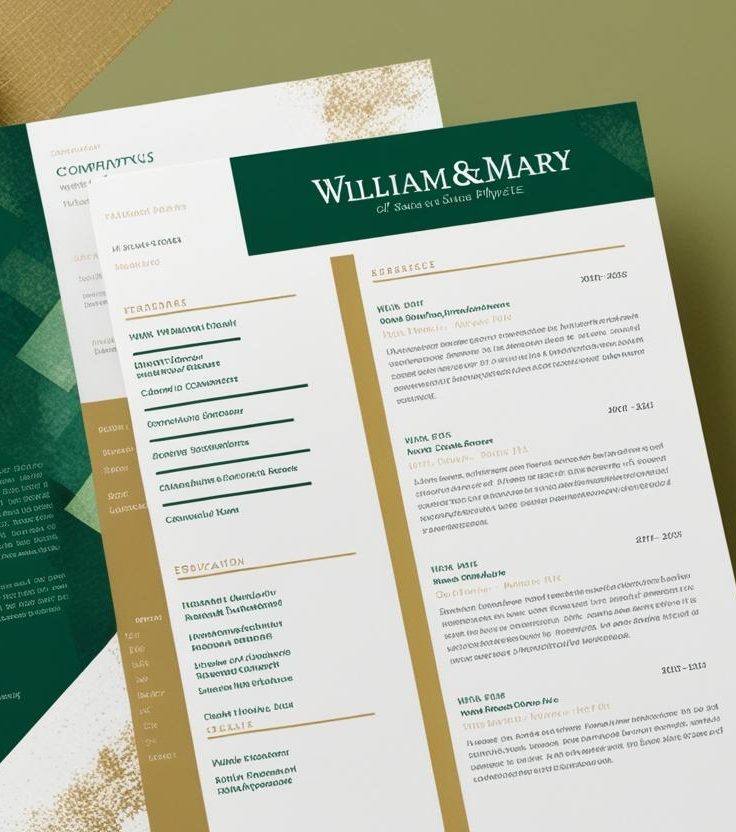

Vita Index
This online version of my CV contains links to my papers and presentations. My official CV with the most comprehensive list of my activities and latest funding numbers is available here.
Research Interests
- Generative AI
- Distributed ledger technologies and blockchain
- Mobile cloud computing systems and apps
- Digital learning for parallel and concurrent Java programming
- Middleware for distributed real-time and embedded systems
- Model-driven engineering of distributed real-time and embedded systems
- Patterns for concurrent and networked systems
- Object-oriented network programming frameworks
- Flexible and adaptive distributed, parallel, and concurrent systems
- High-performance communication systems and protocols
- High-performance electronic medical imaging systems
Education
- Ph.D. Computer Science, summer 1994, University of California, Irvine
Dissertation: An Object-Oriented Framework for Experimenting with Alternative Process Architectures for Parallelizing Communication Subsystems.
Co-advisors: Dr. Tatsuya Suda and Dr. Richard W. Selby. - M.S. Computer Science, summer 1990, University of California, Irvine, specializing in software engineering
- M.A. Sociology, summer 1986, William & Mary, Williamsburg, Virginia
Thesis: ``A Statistical Analysis of University Resource Allocation Policies.''
Advisor: Dr. Michael A. Faia - B.A. Sociology, summer 1984, William & Mary, Williamsburg, Virginia
Professional Experience
- 1/25 -- present: Dean of the School of Computing, Data Sciences & Physics at William & Mary
Report to the Provost and am responsible for (1) uniting the school's four areas (computer science, data science, applied science and physics) into a cohesive academic unit and growing their research, grant funding and doctoral program enrollment, (2) establishing a vision with strategic objectives to ensure the school becomes nationally known as an inclusive and innovative leader in teaching and research, and (3) supporting faculty in their research, teaching and service work; leading fundraising efforts and the financial management of the school; and building or strengthening its strategic partnerships. - 5/24 -- 12/24: Director of Operational Test and Evaluation (DOT&E)
Reported to the Secretary of Defense and Congress and was responsible for assessing the effectiveness, suitability, survivability, and (when necessary) lethality of United States military systems. - 2/17 -- 4/24: Cornelius Vanderbilt Professor of Engineering
Received an Endowed Chair in recognition of my scholarship, intellect, and leadership in the field of computer science and computer engineering. - 1/03 -- 4/24: Full Professor with tenure
Conducted research on patterns, optimizations, and experimental analysis of advanced generative software techniques that facilitate the development of distributed real-time and embedded middleware and model driven architectures, as well as prompt engineering and prompt patterns for large language models in the Department of Computer Science at Vanderbilt University. - 07/22 -- 4/24: Associate Chair of Computer Science
Provide intellectual leadership within the CS department. Coordinate with CS Chair to assist in CS curriculum development and course staffing. Assist the faculty in building industry and federal programs for CS. Assist the Chair in mentoring junior CS faculty. Assist the CS Chair in improving the ranking of the CS programs. Assist the Chair in increasing the quality and number of undergraduate and graduate student applications to the CS programs. - 1/12 -- 4/24: Visiting Scientist at the Software Engineering Institute
Assist the SEI Director's Office in formulating the SEI's technology strategy for R&D projects and external relationships by aligning the expertise of the SEI technical staff to identify and respond to the needs of government sponsors, and partners and help the SEI shape future innovations in complex software-reliant systems. - 7/1/18 -- 6/30/22: Associate Provost of Research Development and Technologies
Develop cohesive and sustainable information technology (IT) services to advance research and scholarship across Vanderbilt's ten schools and colleges; develop scalable storage and processing solutions by leveraging on-campus and cloud data storage services, as well as creating big data research cores and core-related services; and implement NIST 800-171 compliant IT services. - 8/1/18 -- 6/30/22: Co-Director of the Vanderbilt Data Science Institute
Facilitate highly innovative research and education initiatives that build on Vanderbilt University's current strengths, promote new collaborations, and establish a cohesive institutional framework that embraces Vanderbilt's diverse campus, while establishing the university as a leader in data science research and education. - 02/16 -- 06/18: Associate Chair of Electrical Engineering and Computer Science
Provide intellectual leadership within the EECS department. Coordinate with EECS Chair to assist in EE, CS, and CompE curriculum development and course staffing. Assist the faculty in building industry and federal programs for EECS. Assist the Chair in mentoring junior EECS faculty. Assist the EECS Chair in improving the ranking of the EECS programs. Assist the Chair in increasing the quality and number of undergraduate and graduate student applications to the EECS programs. - 12/04 -- 1/16: Associate Chair of Computer Science and Engineering
Provide intellectual leadership within the CS program. Coordinate with EECS Chair to assist in CS and CompE (CS&E) curriculum development and course staffing. Assist the faculty in building industry and federal programs centered in CS&E and IT for EECS. Assist the Chair in mentoring junior CS&E faculty. Assist the EECS Chair in improving the ranking of the CS&E programs. Assist the Chair in increasing the quality and number of undergraduate and graduate student applications to the CS&E programs. - 4/13 -- 2/18: Member of the Board of Directors at Real-Time Innovations (RTI)
Assisted the RTI CEO in formulating RTI's technology strategy for R&D projects and external relationships. - 7/11 -- 7/13: Adjunct Professor of Software Engineering in the Institute for Software Research in the School of Computer Science at Carnegie Mellon University.
- 1/1/10 -- 12/31/13: Member of the Air Force Scientific Advisory Board Worked on several studies related to Cyber-Situational Awareness and Sustaining Aging Aircraft.
- 9/10 -- 12/11: Deputy Director and Chief Technology Officer at the Software Engineering Institute
Led the formulation of the SEI's technology strategy for R&D projects and external relationships by aligning the expertise of the SEI technical staff to identify and respond to the needs of sponsors, customers, and partners and help the SEI shape future innovations in complex software-reliant systems. - 07/05 -- 8/10: Visiting Scientist at the Software Engineering Institute
Assist Dr. Linda Northrop and the Ultra-Large-Scale (ULS) Systems team to define the challenge problems, promising technology areas, and research roadmaps for the national R&D effort on building the software-intensive systems of the future that are likely to have billions of lines of code. This activity is defining a broad, multi-disciplinary research agenda for developing ULS systems of the future. - 06/09 -- 8/10: Chief Technology Officer for Zircon Computing
Assist in the strategic direction of Zircon Computing technology development in the areas of adaptive distributed computing middleware for high-performance and real-time applications. Help to formulate the technology strategy for open-source middleware platforms, R&D partnerships, and external relationships. - 10/06 -- 5/09: Chief Technology Officer for PrismTechnologies
Assist in the strategic direction of PrismTechnologies technology development in the areas of open-source middleware platforms and model-driven tools. Help to formulate the technology strategy for open-source middleware platforms and model-driven tools, R&D partnerships, and external relationships. - 6/07 -- 8/07: Visiting Professor at Trinity College Dublin
Worked with Professor Vinny Cahill and the Distributed Systems Group at Trinity College on topics pertaining to service-oriented architectures and automonic computing. - 3/02 -- 12/02: Program Manager
Led the national effort on middleware as a Program Manager for over $60 million dollars of funding at the DARPA Information Exploitation Office (IXO). Programs included Program Composition for Embedded Systems (PCES) and National Experimentation Platform for Hybrid and Embedded Systems (NEPHEST). - 9/01 -- 3/02: Deputy Office Director
Served as the Deputy Director for the DARPA Information Technology Office (ITO), helping to set the national IT research and development agenda and manage ITO portfolio on autonomous systems, network-centric command and control systems, distributed real-time and embedded systems, model-driven engineering, and augmented cognition for the U.S. Department of Defense. - 6/00 -- 3/02: Program Manager
Led the national effort on middleware as a Program Manager for over $60 million dollars of funding at the DARPA Information Technology Office (ITO). Programs included Program Composition for Embedded Systems (PCES). - 6/01 -- 6/02: Co-chair for the Software Design and Productivity (SDP) Coordinating Group
The SDP Coordinating Group formulates the multi-agency research agenda in fundamental software design for the Federal government's Networking and Information Technology Research and Development (NITR&D) Program, which is the collaborative IT research effort of the major Federal science and technology agencies. - 8/99 -- 12/02: Associate Professor with tenure
Conducted research on patterns, implementation, and experimental analysis of object-oriented techniques that facilitate the development of high-performance, real-time distributed object computing systems on parallel processing platforms running over high-speed networks and embedded system interconnects in the Department of Computer Engineering at the University of California, Irvine. - 6/99 -- 8/99: Associate Professor with tenure
Conducted research on patterns, implementation, and experimental analysis of object-oriented techniques that facilitate the development of high-performance, real-time distributed object computing systems on parallel processing platforms running over high-speed networks and embedded system interconnects in the Department of Computer Science and in the Mallinckrodt Institute of Radiology at Washington University in St. Louis. - 6/98 -- 6/99: Associate Professor without tenure
Conducted research on patterns, implementation, and experimental analysis of object-oriented techniques that facilitate the development of high-performance, real-time distributed object computing systems on parallel processing platforms running over high-speed networks and embedded system interconnects in the Department of Computer Science and in the Mallinckrodt Institute of Radiology at Washington University in St. Louis. - 8/94 -- 6/98: Assistant Professor
Conducted research on object-oriented patterns and techniques for developing highly extensible, high-performance, real-time distributed object computing frameworks in the Department of Computer Science and in the Mallinckrodt Institute of Radiology at Washington University in St. Louis. - 3/91 -- 8/94: Computer System Design Research Assistant
Developed an object-oriented framework for multi-processor-based communication subsystems with Professor Tatsuya Suda at the University of California, Irvine. - 8/88 -- 3/91: Software Engineering Research Assistant
Devised measurement-guided software development techniques for large-scale software systems with Professor Richard Selby at the University of California, Irvine. - 6/88 -- 8/88: Research Assistant
Studied the impact of computing on end-users in forty U.S. city governments with Dr. John King and the URBIS project at the Public Policy Research Organization, University of California, Irvine. - 6/87 -- 8/87: Summer Intern
Selected to work with Dr. Peter G. W. Keen at the International Center for Information Technology, Washington D.C. on a project assessing techniques for improving software productivity. - 1/85 -- 8/86: Sociology Research Assistant
Examined university resource allocation policies via statistical analysis with Dr. Michael Faia at William & Mary, Williamsburg, Virginia.
Teaching Experience
MOOCs with Coursera
- Scalable Microservices for Developers Specialization
- Android App Development Specialization
- Pattern-Oriented Software Architectures (POSA)
Courses at Vanderbilt University
- CS 215 -- Intermediate Software Design, Spring 2006
- CS 251 -- Intermediate Software Design, Spring 2007, Spring 2008, Spring 2009, Fall 2009, Spring 2010, Spring 2012, Spring 2013, Spring 2014, Spring 2015, Spring 2016, Summer 2020, Summer 2021, Summer 2022, Summer 2023
- CS 253 -- Parallel Functional Programming with Java and Android, Fall 2020, Fall 2021, Fall 2022, Fall 2023
- CS 254 -- Concurrent Object-Oriented Programming with Java and Android Spring 2021, Spring 2022, Summer 2023
- CS 291/242 -- Software Design Studio, Fall 2004
- CS 291/242 -- Software Design Studio, Fall 2003
- CS 292 -- Beyond the Oneway Web, Fall 2008
- CS 278 -- Software Engineering, Fall 2008
- CS 279 -- Software Engineering Projects, Spring 2010
- CS 282 -- Principles of Operating Systems II, Spring 2003, Spring 2004, Fall 2005, Fall 2007, Fall 2012, Fall 2013, Fall 2014, Fall 2015, Fall 2016, Spring 2017
- UNIV 278 -- Tackling Big Questions with Mobile Cloud Computing, Fall 2016, Spring 2017, Fall 2017
- CS 395 -- Advanced Network Software Design, Fall 2006
- CS 395 -- QoS-enabled Middleware, Fall 2008
- CS 8395 -- Scalable Microservices, Summer 2021, Summer 2022, Spring 2023, Spring 2024
- DS 3891 -- Special Topics in Data Science - Intro to Generative Artificial Intelligence, Fall 2023, Spring 2024
- CS 396 -- QoS-enabled Component Middleware, Spring 2005
- CS 891 -- Introduction to Concurrent and Parallel Java Programming with Android, Fall 2017
- CS 891 -- Advanced Concurrent Java Programming in Android, Spring 2018, Spring 2019, Spring 2020
- CS 891 -- Introduction to Parallel Java Programming, Fall 2018, Fall 2019
- CS 891 -- Scalable Microservices, Spring 2023, Spring 2024
- CS 892 -- Concurrent Java Programming in Android, Spring 2017
Courses at University of California, Irvine
- ECE 011 -- Computational Methods in ECE, Winter 2000
- ECE 255 -- Distributed Software Architecture Design, Spring 2000
- ICS 142 -- Compiler Theory, Summer 1989
- ICS 23 -- Data Structures, Summer 1988
Courses at Washington University
- CS 562 -- Advanced Object-Oriented Software Development with Patterns and Frameworks, Spring 1999
- CS 242 -- Introduction to Software Design, Spring 1998
- CS 673 -- Distributed Systems research seminar, Fall 1997
- CS 422 -- Operating Systems Organization, Fall 1997
- CS 242 -- Introduction to Software Design, Spring 1997
- CS 544 -- Distributed System Design, Fall 1996
- Ada tasking course for McDonnell Douglas, Fall 1996
- OO design course for McDonnell Douglas, Spring 1996
- CS 523 -- Distributed Operating Systems Organization, Spring 1995
- CS 242 -- Introduction to Software Design, Fall 1995
- CS 673 -- Distributed Systems research seminar, Spring 1995
- CS 422 -- Operating Systems Organization, Fall 1994
Other Teaching Experience
In addition to the academic teaching experience above, I have also taught numerous short-courses and tutorials on object-oriented patterns and programming techniques, UNIX and Windows NT systems programming and network programming, C++ and C programming languages, and various distributed operating system, compiler construction, algorithm, and data structure courses for the following universities and professional organizations.
- University of California, Irvine, CA
- Washington University, St. Louis
- Pearson LiveLessons
- University Extension Program, University of California, Berkeley, CA
- University Extension Program, University of California, Irvine, CA
- University Extension Program, University of California, Los Angeles, CA
- Oregon Graduate Institute of Science and Technology, Beaverton, OR
- USENIX association
- Association of Computing Machinery (ACM)
- Addison-Wesley's Technology Exchange Program, Reading, MA
- SIGS Conferences
- Object Computing Institute, St. Louis, MO
- National University, Irvine, CA
Book Publications and Book Chapters
Books Authored
- Frank Buschmann, Kevlin Henney, and Douglas C. Schmidt, Pattern-Oriented Software Architecture: On Patterns and Pattern Languages, Wiley and Sons, 2007.
- Frank Buschmann, Kevlin Henney, and Douglas C. Schmidt, Pattern-Oriented Software Architecture: A Pattern Language for Distributed Computing, Wiley and Sons, 2007.
- Douglas C. Schmidt and Steve Huston, C++ Network Programming: Systematic Reuse with ACE and Frameworks, Addison-Wesley Longman, 2003.
- Douglas C. Schmidt and Steve Huston, C++ Network Programming: Mastering Complexity with ACE and Patterns, Addison-Wesley Longman, 2002.
- Douglas C. Schmidt, Michael Stal, Hans Rohert, and Frank Buschmann, Pattern-Oriented Software Architecture: Concurrent and Networked Objects, John Wiley and Sons, 2000.
Book-length Reports Authored
- Anita Carleton, Mark H. Klein, John E. Robert, Erin Harper, Robert K Cunningham, Dionisio de Niz, John T. Foreman, John B. Goodenough, James D. Herbsleb, Ipek Ozkaya, Douglas C. Schmidt, Forrest Shull, Architecting the Future of Software Engineering: A National Agenda for Software Engineering Research & Development, CMU/SEI Press, November 2021.
- Werner Dahm, Douglas Schmidt, et al. ``Cyber Situational Awareness,'' SAB-TR-12-01, 1 October 2012.
- Alan Eckbreth, Charles Saff, Kevin Connolly, Natalie Crawford, Chris Eick, Mark Goorsky, Neil Kacena, David Miller, Robert Schafrik, Douglas Schmidt, Sustaining Air Force Aging Aircraft into the 21st Century, SAB-TR-11-01 1 August 2011.
- William Scherlis, Robert Behler, Barry Boehm, Lori Clarke, Michael Cusumano, Mary Ann Davidson, Larry Druffel, Russell Frew, James Larus, Greg Morrisett, Walker Royce, Douglas C. Schmidt, John Stenbit, Kevin Sullivan, Critical Code Software Producibility for Defense, Committee for Advancing Software-Intensive Systems Producibility, National Research Council of the National Academies, Washington, D.C.
- Linda Northrop, Peter Feiler, Richard P. Gabriel, John Goodenough, Rick Linger, Tom Longstaff, Rick Kazman, Mark Klein, Linda Northrop, Douglas Schmidt, Kevin Sullivan, and Kurt Wallnau Ultra-Large-Scale Systems: Software Challenge of the Future, Software Engineering Institute, June 2006.
Books Edited
- Co-editor of Building Application Frameworks: Object-Oriented Foundations of Framework Design, John Wiley & Sons, 1999 (co-editors are Mohamed Fayad and Ralph Johnson), ISBN 0-471-24875-4.
- Co-editor of Implementing Application Frameworks: Object-Oriented Frameworks at Work,'' John Wiley & Sons, 1999 (co-editors are Mohamed Fayad and Ralph Johnson), ISBN 0-471-25201-8.
- Co-editor Pattern Languages of Program Design, Addison-Wesley, 1995 (co-editor is Jim Coplien, Bell Labs).
Book Chapters
- Ashraf Elnashar, Max Moundas, Douglas C. Schmidt, Jesse Spencer-Smith, Jules White, Advancing Generative AI in Software Development: Evaluating LLM-Generated Code Against Top Human Solutions, the Communications in Computer and Information Science book series, Springer, 2025.
- John Robert, Ipek Ozkaya, and Douglas C. Schmidt, Detecting and Correcting Software Assurance Document Incompleteness, Inconsistencies, and Discrepancies using LLMs, Artificial Intelligence and Large Language Models: A Scientific Perspective, edited by Helmut Degen, Abbas Moallem, and Stavroula Ntoa, CRC Press, 2025 (to appear).
- John Robert, Ipek Ozkaya, and Douglas C. Schmidt, Transforming Software Engineering and Software Acquisition with Large Language Models, Artificial Intelligence and Large Language Models: A Scientific Perspective, edited by Helmut Degen, Abbas Moallem, and Stavroula Ntoa, CRC Press, 2025 (to appear).
- Jules White, Sam Hays, Quchen Fu, Jesse Spencer-Smith, Douglas C. Schmidt, ChatGPT Prompt Patterns for Improving Code Quality, Refactoring, Requirements Elicitation, and Software Design, Generative AI for Effective Software Development edited by Anh Nguyen Duc, Pekka Abrahamsson, and Foutse Khomh, Springer Nature, 2024.
- Evan Segaul, Douglas C. Schmidt, and Jesse Spencer-Smith, Evaluation of Generic Deep Learning Building Blocks for Segmentation of 19th Century Documents, Deep Learning - Recent Findings and Research, edited by Manuel Dominguez-Morales, Javier Civit-Masot, and Luis Munoz-Saavedra, IntechOpen, 2023.
- Douglas C. Schmidt, Data Collection in the Age of Surveillance Capitalism, Collecting in the Twenty-First Century: From Museums to the Web, edited by Johannes Endres and Christoph Zeller, Camden House, Rochester, New York, 2022.
- Michael Walker, Douglas C. Schmidt, and Abhishek Dubey, Testing at Scale of IoT Blockchain Applications, Advances in Computers, Volume 115, 1st Edition, edited by Shiho Kim, Ganesh Chandra Deka, and Peng Zhang, 2019, pp. 155-179.
- Peng Zhang, Douglas C. Schmidt, Jules White, and Abhishek Dubey, Consensus Mechanisms and Information Security Technologies, Advances in Computers, Volume 115, 1st Edition, edited by Shiho Kim, Ganesh Chandra Deka, and Peng Zhang, 2019, pp. 181-209.
- Peng Zhang, Douglas C. Schmidt, Jules White, and Gunther Lenz, Blockchain Technology Use Cases in Healthcare, Blockchain Technology: Platforms, Tools, and Use Cases, edited by Ganesh Deka, 2018.
- Michael Walker, Douglas C. Schmidt, and Jules White, An Elastic Platform for Large-scale Assessment of Software Assignments for MOOCs (EPLASAM), User-Centered Design Strategies for Massive Open Online Courses (MOOCs), edited by Ricardo Mendoza-Gonzalez, IGI Global, 2016.
- Joe Hoffert, Aniruddha Gokhale, and Douglas C. Schmidt, Quantitative Productivity Analysis of a Domain-Specific Modeling Language, Handbook of Research on Innovations in Systems and Software Engineering, edited by Vicente Garcia Diaz et al., IGI Global, 2015 pp. 313-344.
- Will Otte, Douglas C. Schmidt, and Aniruddha Gokhale, Performance and Scalability of a Large-scale Deployment and Configuration Framework, The Performance of Open Source Applications, edited by Tony Arkles and Tavish Armstrong, O'Reilly, 2013.
- Chris Thompson, Jules White, and Douglas C. Schmidt, Analyzing Mobile Application Software Power Consumption via Model-Driven Engineering, Advances and Applications in Model-Driven Software Engineering, edited by Vicente Garcia Diaz, IGI Global, 2013.
- James Edmondson and Douglas C. Schmidt, Towards Accurate Simulation of Large-Scale Systems via Time Dilation, Real-time Simulation Technologies: Principles, Methodologies, and Applications, edited by Katalin Popovici and Pieter J. Mosterman, CRC Press, 2012.
- James Hill and Douglas C. Schmidt, Using Test Clouds to Enable Continuous Integration Testing of Distributed Real-time and Embedded System Applications, Software Testing in the Cloud: Perspectives on an Emerging Discipline, Edited by Scott Tilley and Tauhida Parveen, IGI Global, 2012.
- Angelo Corsaro and Douglas C. Schmidt, The Data Distribution Service: The Communication Middleware Fabric for Scalable and Extensible Systems-of-Systems, System of Systems, edited by Adrian V. Gheorghe, InTech, 2012.
- Joe Hoffert and Douglas C. Schmidt, Improving Software Development Productivity for QoS Policy Configurations, Model-Driven Domain Analysis and Software Development: Architectures and Functions, edited by Janis Osis and Erika Asnina, 2011.
- Nilabja Roy and Douglas C. Schmidt, Model-Driven Performance Evaluation of Web Application Portals, Model-Driven Domain Analysis and Software Development: Architectures and Functions, edited by Janis Osis and Erika Asnina, 2011.
- Brian Dougherty, Jules White, and Douglas C. Schmidt, MDA-based Configuration of Distributed Real-time and Embedded Systems, Model-Driven Domain Analysis and Software Development: Architectures and Functions, edited by Janis Osis and Erika Asnina, 2011.
- Hamilton Turner, Jules White, Brian Dougherty, and Douglas C. Schmidt, Building Mobile Sensor Networks Using Smartphones and Web Services: Ramifications and Development Challenges, the Handbook of Research on Mobility and Computing: Evolving Technologies and Ubiquitous Impacts, edited by Maria Manuela Cruz-Cunha and Fernando Moreira, IGI Global, Hershey, PA, USA 2009.
- Gan Deng, Jeff Gray, Douglas C. Schmidt, Yuehua Lin, Aniruddha Gokhale, and Gunther Lenz, Evolution in Model-Driven Software Product-Line Architectures, Software Applications: Concepts, Methodologies, Tools, and Applications, edited by Pierre F. Tiako, 2009.
- Jules White, Douglas C. Schmidt, Andrey Nechypurenko, and Egon Wuchner, Reducing the Complexity of Modeling Large Software Systems, Software Applications: Concepts, Methodologies, Tools, and Applications, edited By Pierre F. Tiako, 2009.
- Jules White, Brian Doughtery, Harrison Strowd, and Douglas C. Schmidt, Creating Self-healing Service Compositions with Feature Models and Microrebooting, Software Engineering for Self-Adaptive Systems, edited by Betty H. C. Cheng, Rogerio de Lemos, Holger Giese, Paola Inverardi, and Jeff Magee, 2009.
- Jeff Gray, Sandeep Neema, Jing Zhang, Yuehua Lin, Ted Bapty, Aniruddha Gokhale, and Douglas C. Schmidt, Concern Separation for Adaptive QoS Modeling in Distributed Real-Time Embedded Systems, Behavioral Modeling for Embedded Systems and Technologies: Applications for Design and Implementation, edited by Joa M. Fernandes and Luis Gomes, 2009.
- Rick Schantz and Douglas C. Schmidt, Middleware for Distributed Systems, Encyclopedia of Computer Science and Engineering, edited by Benjamin Wah, 2008.
- Jules White, Andrey Nechypurenko, Egon Wuchner, and Douglas C. Schmidt, Reducing the Complexity of Optimizing Large-scale Systems by Integrating Constraint Solvers with Graphical Modeling Tools, Designing Software-Intensive Systems: Methods and Principles, Edited by Dr. Pierre F. Tiako, Langston University, OK, April, 2008.
- Gan Deng, Douglas C. Schmidt, Aniruddha Gokhale, Jeff Gray, Yuehua Lin, and Gunther Lenz, Evolution in Model-Driven Software Product-line Architectures Designing Software-Intensive Systems: Methods and Principles, Edited by Dr. Pierre F. Tiako, Langston University, OK, April, 2008.
- Daniel G. Waddington, Nilabja Roy, and Douglas C. Schmidt, ``Dynamic Analysis and Profiling of Multi-threaded Systems,'' Designing Software-Intensive Systems: Methods and Principles, Edited by Dr. Pierre F. Tiako, Langston University, OK, April, 2008.
- Krishnakumar Balasubramanian, Douglas C. Schmidt, Zoltan Molnar, and Akos Ledeczi, System Integration via Model-Driven Engineering, Designing Software-Intensive Systems: Methods and Principles, Edited by Dr. Pierre F. Tiako, Langston University, OK, April, 2008.
- James Hill, Douglas C. Schmidt,, and John Slaby, System Execution Modeling Tools for Evaluating the Quality of Service of Enterprise Distributed Real-time and Embedded System, Designing Software-Intensive Systems: Methods and Principles, Edited by Dr. Pierre F. Tiako, Langston University, OK, April, 2008.
- Gan Deng, Chris Gill, Douglas C. Schmidt, and Nanbor Wang, QoS-enabled Component Middleware for Distributed Real-Time and Embedded Systems, Handbook of Real-Time and Embedded Systems (I. Lee, J. Leung, and S. Son, eds.), CRC Press, 2007.
- William Otte and Douglas C. Schmidt, Labor-Saving Architecture: an Object-Oriented Framework for Networked Software, Beautiful Code, edited by Greg Wilson, O'Reilly, 2007.
- Irfan Pyarali, Carlos O'Ryan, and Douglas C. Schmidt, A Pattern Language for Efficient, Predictable, Scalable, and Flexible Dispatching Components, Pattern Language of Program Design 5 book, Addison-Wesley, Reading, MA, 2006.
- Douglas C. Schmidt, Krishnakumar Balasubramanian, Arvind S. Krishna, Emre Turkay, and Aniruddha Gokhale, Model-driven Development of Component-based Distributed Real-time and Embedded Systems, Model Driven Engineering for Distributed Real-time and Embedded Systems, edited by Sebastien Gerard, Joel Champea, and Jean-Philippe Babau, Hermes, 2005.
- Gabriele A. Trombetti, Aniruddha Gokhale, Douglas C. Schmidt, John Hatcliff, Gurdip Singh, and Jesse Greenwald, An Integrated Model-driven Development Environment for Composing and Validating Distributed Real-time and Embedded Systems, Model-driven Software Development: Volume II of Research and Practice in Software Engineering, edited by Sami Beydeda, Matthias Book, and Volker Gruhn, Springer-Verlag, 2005.
- Arvind S. Krishna, Douglas C. Schmidt, Ray Klefstad, and Angelo Corsaro, Real-time CORBA Middleware, in Middleware for Communications, edited by Qusay Mahmoud, Wiley and Sons, New York, 2003.
- Nanbor Wang, Douglas C. Schmidt, Aniruddha Gokhale, Craig Rodrigues, Balachandran Natarajan, Joseph P. Loyall, Richard E. Schantz, and Christopher D. Gill, QoS-enabled Middleware, in Middleware for Communications, edited by Qusay Mahmoud, Wiley and Sons, New York, 2003.
- Aniruddha Gokhale, Douglas C. Schmidt, Balachandran Natarajan, Jeff Gray, and Nanbor Wang, Model Driven Middleware, in Middleware for Communications, edited by Qusay Mahmoud, Wiley and Sons, New York, 2003.
- Jeff Gray, Janos Sztipanovits, Ted Bapty, Sandeep Neema, Aniruddha Gokhale, and Douglas C. Schmidt, Two-level Aspect Weaving to Support Evolution of Model-Based Software, in Aspect-Oriented Software Development, (Robert Filman, Tzilla Elrad, Mehmet Aksit, and Siobhan Clarke, eds.), Reading, Massachusetts: Addison-Wesley, 2003.
- Joseph K. Cross and Douglas C. Schmidt, Applying the Quality Connector Pattern to Optimize Distributed Real-time and Embedded Middleware, Patterns and Skeletons for Parallel and Distributed Computing, edited by Fethi Rabhi and Sergei Gorlatch, Springer Verlag, November, 2002.
- Richard E. Schantz and Douglas C. Schmidt, Middleware for Distributed Systems: Evolving the Common Structure for Network-centric Applications, Encyclopedia of Software Engineering, edited by John Marciniak and George Telecki, Wiley and Sons, 2001.
- Sumedh Mungee, Nagarajan Surendran, Yamuna Krishnamurthy, and Douglas C. Schmidt, The Design and Performance of a CORBA Audio/Video Streaming Service, Multimedia Networking: Technology, Management, and Applications, edited by Mahbubur Syed, Idea Group Publishing, Hershey, USA, 2001.
- Nanbor Wang, Douglas C. Schmidt, and Carlos O'Ryan, ``An Overview of the CORBA Component Model,'' Component-Based Software Engineering: Putting the Pieces Together, (George Heineman and Bill Councill, eds.) Addison-Wesley, Reading, MA, 2001.
- Douglas C. Schmidt, Applying a Pattern Language to Develop Application-level Gateways, Design Patterns in Communications, (Linda Rising, ed.), Cambridge University Press, 2000.
- Douglas C. Schmidt and Chris Cleeland, Applying a Pattern Language to Develop Extensible ORB Middleware, Design Patterns in Communications, (Linda Rising, ed.), Cambridge University Press, 2000.
- Carlos O'Ryan, Fred Kuhns, Douglas C. Schmidt, and Jeff Parsons, Applying Patterns to Develop a Pluggable Protocols Framework for ORB Middleware, Design Patterns in Communications, (Linda Rising, ed.), Cambridge University Press, 2000.
- David L. Levine, Christopher D. Gill, and Douglas C. Schmidt, Object Lifecycle Manager -- A Complementary Pattern for Controlling Object Creation and Destruction, Design Patterns in Communications, (Linda Rising, ed.), Cambridge University Press, 2000.
- Douglas C. Schmidt, A Family of Design Patterns For Flexibly Configuring Network Services in Distributed Systems, Design Patterns in Communications, (Linda Rising, ed.), Cambridge University Press, 2000.
- Chris Cleeland and Douglas C. Schmidt, External Polymorphism, An Object Structural Pattern for Transparently Extending C++ Concrete Data Types in C++ Gems II, (Robert Martin, ed.), SIGS, NY, 1999.
- Douglas C. Schmidt, GPERF: A Perfect Hash Function Generator in C++ Gems II, (Robert Martin, ed.), SIGS, NY, 1999.
- Douglas C. Schmidt, Tim H. Harrison, and Nat Pryce, Thread-specific Storage: an Object Behavioral Pattern for Efficiently Accessing per-Thread State in C++ Gems II, (Robert Martin, ed.), SIGS, NY, 1999.
- Irfan Pyarali, Tim Harrison, Douglas C. Schmidt, and Thomas Jordan, Proactor: an Object Behavioral Pattern for Demultiplexing and Dispatching Handlers for Asynchronous Events, Pattern Languages of Program Design, (Harrison, Foote, and Rohnert, eds.), Addison-Wesley, Reading, MA, 1999.
- Douglas C. Schmidt, David L. Levine, and Chris Cleeland, Architectures and Patterns for High-performance, Real-time ORB Endsystems, Advances in Computers, Academic Press, Ed., Marvin Zelkowitz, Volume 48, July 1999.
- Douglas C. Schmidt and Paul Stephenson, Using Design Patterns to Evolve System Software from UNIX to Windows NT, In The Patterns Handbook, (Linda Rising, ed.), Cambridge University Press, 1998.
- James Hu and Douglas C. Schmidt, JAWS: A Framework for High-performance Web Servers, Domain-Specific Application Frameworks: Frameworks Experience By Industry, John Wiley & Sons, (Mohamed Fayad and Ralph Johnson, Eds), October, 1999.
- Douglas C. Schmidt and Tatsuya Suda, ``A Framework for Measuring the Performance of Alternative Process Architectures for Parallel Communication Subsystems,'' in Network Performance Modeling and Simulation, Walrand, Bagchi, and Zobrist, Ed., Gordon and Breach Publishers, 1998.
- Douglas C. Schmidt, Applying Design Patterns and Frameworks to Develop Object-Oriented Communication Software, The Handbook of Programming Languages, Volume I, edited by Peter Salus, MacMillan Computer Publishing, 1997.
- Chris Cleeland, Douglas C. Schmidt, and Tim H. Harrison, External Polymorphism -- An Object Structural Pattern for Transparently Extending Concrete Data Types, Pattern Languages of Program Design, (Martin, Buschmann, and Riehl, eds.), Addison-Wesley, Reading, MA, 1997.
- Irfan Pyarali, Timothy H. Harrison, and Douglas C. Schmidt, Asynchronous Completion Token -- An Object Behavioral Pattern for Efficient Asynchronous Event Handling, Pattern Languages of Program Design, (Martin, Buschmann, and Riehl, eds.), Addison-Wesley, Reading, MA, 1997.
- Douglas C. Schmidt and Timothy H. Harrison, Double-Checked Locking -- A Optimization Pattern for Efficiently Initializing and Accessing Thread-safe Objects, Pattern Languages of Program Design, (Martin, Buschmann, and Riehl, eds.), Addison-Wesley, Reading, MA, 1997.
- Douglas C. Schmidt, Acceptor and Connector -- A Family of Object Creational Patterns for Initializing Communication Services, Pattern Languages of Program Design, (Martin, Buschmann, and Riehl, eds.), Addison-Wesley, Reading, MA, 1997.
- Douglas C. Schmidt and Paul Stephenson, Using Design Patterns to Evolve System Software from UNIX to Windows NT, In Wisdom of the Gurus, (Charles Bowman, ed.), Cambridge University Press, 1996.
- Douglas C. Schmidt and Steve Vinoski, Comparing Alternative Distributed Programming Techniques in Wisdom of the Gurus, (Charles Bowman, ed.), Cambridge University Press, 1996.
- Douglas C. Schmidt, A Case Study in C++ Design Evolution in C++ Gems, (Stanley Lippman, ed.), SIGS, NY, 1996, pp. 99--120.
- Douglas C. Schmidt and Steve Vinoski Distributed Object Computing in C++ in C++ Gems, (Stanley Lippman, ed.), SIGS, NY, 1996, pp. 303--316.
- Douglas C. Schmidt and Steve Vinoski, Comparing Alternative Distributed Programming Techniques in C++ Gems, (Stanley Lippman, ed.), SIGS, NY, 1996, pp. 316--336.
- Douglas C. Schmidt and Steve Vinoski, Comparing Alternative Server Programming Techniques in C++ Gems, (Stanley Lippman, ed.), SIGS, NY, 1996, pp. 337--362.
- Douglas C. Schmidt and Charles D. Cranor, Half-Sync/Half-Async: A Architectural Pattern for Efficient and Well-structured Concurrent I/O in Pattern Languages of Program Design, (Coplien, Vlissides, and Kerth, eds.), Addison-Wesley, Reading, MA, 1996.
- R. Greg Lavender and Douglas C. Schmidt, Active Object: An Object Behavioral Pattern for Concurrent Programming in Pattern Languages of Program Design, (Coplien, Vlissides, and Kerth, eds.), Addison-Wesley, Reading, MA, 1996.
- Douglas C. Schmidt, Reactor: An Object Behavioral Pattern for Concurrent Event Demultiplexing and Event Handler Dispatching, Pattern Languages of Program Design, (Addison-Wesley, 1995), edited by James O. Coplien and Douglas C. Schmidt.
Refereed Journal Publications
- Douglas C. Schmidt, "The Coming Commoditization of Computational Thinking," Communications of the ACM, 2026 (to appear).
- Ashraf Elnashar, Douglas C. Schmidt, and Jules White, Prompt Engineering for Structured Data: A Comparative Evaluation of Styles and LLM Performance, Journal of Artificial Intelligence and Autonomous Systems, ELSP, Volume 2, Number 2, 2025.
- Douglas C. Schmidt, Software Testing in the Generative AI Era: A Practitioner's Playbook, IEEE Computer, July 2025, pp. 147-152.
- Ashraf Elnashar, Jules White, and Douglas C. Schmidt, Enhancing Structured Data Generation with GPT-4o Evaluating Prompt Efficiency Across Prompt Styles, Frontiers in Artificial Intelligence, March 25th, 2025, Volume 8, pp. 1--13.
- John E. Robert, James Ivers, Douglas C. Schmidt, Ipek Ozkaya, Shen Zhang, The Future of Software Engineering and Acquisition with Generative AI, STSC CrossTalk, The Journal of Defense Software Engineering, Volume 37, Number 2, May 2024.
- Anita Carleton, Douglas C. Schmidt, Forrest Shull, John Robert, and Ipek Ozkaya, Five Critical Challenges for Software and AI Engineering, STSC CrossTalk, The Journal of Defense Software Engineering, Volume 37, Number 1, pp. 32--43, February 2024.
- Douglas C. Schmidt, Jesse Spencer-Smith, Quchen Fu, and Jules White, Towards a Catalog of Prompt Patterns to Enhance the Discipline of Prompt Engineering, Ada User Journal (AUJ), Volume 44, Number 2, pp. 220-227, September 2023.
- Yu Yao, Maria Powell, Jules White, Jian Feng, Quchen Fu, Peng Zhang, and Douglas C. Schmidt, A Multi-stage Diagnosis Strategy based on Transfer Learning for a Class of Rare Laryngeal Movement Disorders, the Elsevier Computers in Biology and Medicine journal, Volume 166, pp. 1-12, 2023.
- Peng Zhang, Adair Kelly, Douglas C Schmidt, and Jules White, Design Pattern Recommendations for Building Decentralized Healthcare Applications," Frontiers in Blockchain, Volume 6, pp 1--18, 2023.
- Quchen Fu, Ramesh Chukka, Keith Achorn, Thomas Atta-fosu, Deepak R. Canchi, Zhongwei Teng, Jules White, and Douglas C. Schmidt. Deep Learning Models on CPUs: A Methodology for Efficient Training, Journal of Machine Learning Theory, Applications and Practice, Vol. 1, pp 45--82, 2023.
- Quchen Fu, Zhongwei Teng, Marco Georgaklis, Jules White, and Douglas C. Schmidt, NL2CMD: An Updated Workflow for Natural Language to Bash Commands Translation, The Journal of Machine Learning Theory, Applications and Practice, Vol. 1, pp 1--38., 2022.
- Peng Zhang, Christopher Fonnesbeck, Douglas C. Schmidt, Jules White, Samantha Kleinberg, Shelagh A. Mulvaney, Understanding Barriers to Self-Management in Type 1 Diabetes Using Machine Learning and Momentary Assessment, the JMIR Journal of mHealth and uHealth, Vol 10., No 5., March 2022.
- Summer Weber, Elyse Shearer, Shelagh Mulvaney, Douglas C. Schmidt, Chris Thompson, Jessica Jones, Haseeb Ahmad, Martina Coe, and Pam Hull, Prioritization of Features for Mobile Phone Applications for Families in a Federal Nutrition Program for Low-income Women, Infants, and Children: User-Centered Design Approach, JMIR Formative Research, Vol 5., No 7., July 2021.
- Alex Roehrs, Cristiano A. da Costa, Rodrigo R. Righi, Andre H. Mayer, Valter F. da Silva, Jose R. Goldim, and Douglas C. Schmidt, Integrating Multiple Blockchains to Support Distributed Personal Health Records, the SAGE Health Informatics Journal, April, 2021.
- Zhongwei Teng, Peng Zhang, Xiao Li, William Nock, Denis Gilmore, Marcelino Rodriguez-Cancio, Jules White, Jonathan C. Nesbitt, and Douglas C. Schmidt, Authentication and Integration Approaches for mHealth Apps from a Usability View, the journal Advances in Electrical and Electronic Engineering, North America, 19, March, 2021.
- Scott Eisele, Aron Laszka, Douglas C. Schmidt, and Abhishek Dubey, The Role of Blockchains in Multi-Stakeholder Transactive Energy Systems, the journal Frontiers in Blockchain: Emerging Technologies and Blockchain in Action: Applications in Supply Chain Management and Energy, volume 3, December, 2020, pps. 1-55.
- Peng Zhang, Chris Downs, Nguyen Thanh Uyen Le, Cory Martin, Paul Shoemaker, Clay Wittwer, Luke Mills, Liam Kelly, Stuart Lackey, Douglas C. Schmidt, and Jules White, Towards Patient-centered Stewardship of Research Data and Research Participant Recruitment with Blockchain Technology, the Frontiers in Blockchain special selection on Non-Financial Blockchain, 2020, volume 3, pps. 1-32.
- Yao Pan, Fangzhou Sun, Jules White, Douglas C. Schmidt, Jacob Staples, Lee Krause, and Zhongwei Teng, Detecting Web Attacks with End-to-End Deep Learning, the Springer Journal of Internet Services and Applications, volume 10, number 1, pp 1-22, 2019.
- Shelagh Mulvaney, Lori Laffel, Korey Hood, Cindy Lybarger, Sarah Vaala, and Douglas C. Schmidt, A Mobile App Identifies Momentary Psychosocial and Contextual Factors Related to Mealtime Self-Management in Adolescents with Type 1 Diabetes, Journal of the American Medical Informatics Association, Oxford University Press, 2019, Volume 26, Number 12, pps. 1627-1631.
- Maria E. Powell, Marcelino Rodriguez Cancio, David Young, William Nock, Beshoy Abdelmessih, Amy Zeller, Irvin Perez Morales, Dana Zhang, C Gaelyn Garrett, Douglas Schmidt, Jules White, and Alexander Gelbard, Decoding Phonation with Artificial Intelligence (DEP AI): Proof of Concept the Laryngoscope Investigative Otolaryngology journal, Wiley-Blackwell, Volume 4, Issue 3, 2019, pps. 328-334.
- Alex Roehrs, Cristiano Andre da Costa, Rodrigo da Rosa Righi, Valter Ferreira da Silva, Jose Roberto Goldim, and Douglas C. Schmidt, Analyzing the Performance of a Blockchain-based Personal Health Record Implementation, the Journal of Biomedical Informatics, Elsevier, volume 92, 2019.
- Peng Zhang, Breck Stodghill, Cory Pitt, Cavan Briody, Douglas C. Schmidt, Jules White, Alan Pitt, and Kelly Aldrich, OpTrak: Tracking Opioid Prescriptions via Distributed Ledger Technology, the International Journal of Information Systems and Social Change (IJISSC), Special Issue On: Blockchain Technology: Platforms, Tools, and Use Cases, IGI Global, Volume 10, Number 2, 2019.
- Peng Zhang, Jules White, Douglas C. Schmidt, Gunther Lenz, S. Trent Rosenbloom, FHIRChain: Applying Blockchain to Securely and Scalably Share Clinical Data, the Elsevier Computational and Structural Biotechnology Journal -- Blockchain and Distributed Ledger Technologies in Biology, Medicine, and eHealth Special Issue, Volume 16, July 2018, pp 267--278.
- Shelagh A Mulvaney, Sarah Vaala, Korey K Hood, Cindy Lybarger, Rachel Carroll, Laura Williams, Douglas C Schmidt, Kevin Johnson, Mary S Dietrich, and Lori Laffel, Mobile Momentary Assessment and Bio-Behavioral Feedback for Adolescents with Type 1 Diabetes: Feasibility, Engagement Patterns, and Relation with Blood Glucose Monitoring, Journal of Diabetes Technology and Therapeutics, Vol 20, No. 7, July 2018, pp 465--474.
- Subhav Pradhan, Abhishek Dubey, Shweta Khare, Saideep Nannapaneni, Aniruddha Gokhale, Sankaran Mahadevan, Douglas C Schmidt, Martin Lehofer, CHARIOT: A Holistic, Goal Driven Orchestration Solution for Resilient IoT Applications, the ACM Transactions on Cyber-Physical Systems, Vol 2, No. 3, July 2018, pp 1-37.
- Hull PC, Emerson JS, Quirk ME, Canedo JR, Jones JL, Vylegzhanina V, Schmidt D, Mulvaney S, Beech B, Husaini BH, A Smartphone App for Families With Preschool-Aged Children in a Public Nutrition Program: Prototype Development and Beta-Testing, Journal of Medical Internet Research (JMIR): mHealth and uHealth, Vol 5, No 8, August, 2017, pp 1--19.
- Yao Pan, Jules White, Douglas C. Schmidt, Ahmed Elhabashy, Logan Sturm, Jaime Camelio, and Christopher Williams, Taxonomies for Reasoning About Cyber-physical Attacks in IoT-based Manufacturing Systems, Special Issue on Advances and Applications in the Internet of Things, edited by Vicente Garcia Diaz, International Journal of Interactive Multimedia and Artificial Intelligence, volume 4, number 3, pp. 45-54, 2017.
- Gordon Blair, Douglas C. Schmidt, and Chantal Taconet, Middleware for Internet Distribution in the Context of Cloud Computing and the Internet of Things, Springer Journal Annals of Telecommunications, April 2016, Volume 71, Issue 3, pp 87-92.
- Yu Sun, Jules White, Sean Eade, and Douglas C. Schmidt, ROAR: A QoS-Oriented Modeling Framework for Automated Cloud Resource Allocation and Optimization, the Journal of Systems and Software, Elsevier, volume 116, issue C, June 2016 pp. 146.161.
- Nick Guertin, Brian Womble, Paul Bruhns, Douglas C. Schmidt, Adam Porter, and Bill Antypas, Management Strategies for Software Infrastructure in Large-Scale Cyber-Physical Systems for the US Navy," Cutter IT Journal, Vol. 28, No. 5, May 2015.
- Jules White, Josi A. Galindo, Tripti Saxena, Brian Dougherty, David Benavides, Douglas C. Schmidt, Evolving Feature Model Configurations in Software Product Lines, Journal of Systems and Software, Volume 87, 2014, pp. 119-136.
- Akram Hakiri, Aniruddha S. Gokhale, Pascal Berthou, Douglas C. Schmidt, Thierry Gayraud, Software-Defined Networking: Challenges and Research Opportunities for the Future Internet, Journal of Computer Networks, Volume 75, 2014, pp. 453-471.
- Hamilton Turner, Brian Dougherty, Jules White, Jonathan Preston, Russell Kegley, Douglas C. Schmidt, and Aniruddha Gokhale, DRE System Performance Optimization with the SMACK Cache Efficiency Metric, Journal of Systems and Software, Volume 98, 2014, pp. 25-43.
- Akram Hakiri, Pascal Berthoua, Aniruddha Gokhale, Douglas C. Schmidt, Gayraud Thierry, Supporting SIP-based Data Distribution Service End-to-End QoS in WANs, the Elsevier Journal of Systems and Software, Volume 95, September 2014, pp. 100-121.
- Jules White, Douglas C. Schmidt, and Mani Golparvar-Fard, Applications of Augmented Reality, IEEE Proceedings Special issue on Applications of Augmented Reality, Vol 102, No. 2., February 2014, pp. 120-123.
- Nickolas H. Guertin, Paul Bruhns, Douglas C. Schmidt, and Adam Porter, Experiences Using Online War Games to Improve the Business of Naval Systems Acquisition, Cutter Journal of Information Technology Management, Vol. 27, No. 5, May 2014. pp. 13-18.
- Michael McLendon, Bill Scherlis, and Douglas C. Schmidt, Addressing Software Sustainment Challenges for the DoD, STSC CrossTalk, The Journal of Defense Software Engineering special issue on Legacy Systems Software, January, volume 27, number 1, 2014, pp. 27-32.
- Akram Hakiri, Pascal Berthoua, Aniruddha Gokhale, Douglas C. Schmidt, Gayraud Thierry, Supporting End-to-end Scalability and Real-time Event Dissemination in the OMG Data Distribution Service over Wide Area Networks , Elsevier Journal of Systems and Software, volume 86, number 10, October, 2013, pp. 2574--2593.
- William Otte, Aniruddha Gokhale, and Douglas C. Schmidt, Efficient and Deterministic Application Deployment in Component-based, Enterprise Distributed, Real-time, and Embedded Systems, Elsevier Journal of Information and Software Technology, Vol. 55, No. 2, Feb 2013, 475--488.
- Brian Dougherty, Jules White, and Douglas C. Schmidt, Model-driven Auto-scaling of Green Cloud Computing Infrastructure, the Elsevier International Journal of Future Generation Computing Systems, Special Issue on Green Computing Systems, Volume 28, Number 2, February, 2012 Pages 371-378.
- Jules White, Brian Dougherty, Chris Thompson, Douglas C. Schmidt, ScatterD: Spatial Deployment Optimization with Hybrid Heuristic/Evolutionary Algorithms, ACM Transactions on Autonomous and Adaptive Systems Special Issue on Spatial Computing, Volume 6 Issue 3, September 2011, 18:1--18:25.
- James Hill, Hunt Sutherland, Paul Stodinger, Thomas Silveria, Douglas C. Schmidt, John Slaby, and Nikita Visnevski, OASIS: An Architecture for Dynamic Instrumentation of Enterprise Distributed Real-time and Embedded Systems, the International Journal of Computer Systems Science and Engineering, Special Issue on Real-time Systems, Volume 26, Number 6, November 2011, pp. 413-430.
- Joe Hoffert, Douglas C. Schmidt, and Aniruddha Gokhale, Evaluating Timeliness and Accuracy Trade-offs of Supervised Machine Learning for Adapting Enterprise DRE Systems in Dynamic Environments, the International Journal of Computational Intelligence Systems, Volume 4, Number 5, September-October 2011, pp. 806-816.
- James Hill, Pooja Varshneya, and Douglas C. Schmidt, Evaluating Distributed Real-time and Embedded System Test Correctness using System Execution Traces, Central European Journal of Computer Science, Volume 1, Number 2, August 2011, pp. 167-184.
- Brian Dougherty, Jules White, and Douglas C. Schmidt, Automated Software and Hardware Evolution Analysis for Distributed Real-time and Embedded Systems, the Central European Journal of Computer Science, Volume 1, Number 1, July 2011, pp. 36-57.
- Jules White, Chris Thompson, Hamilton Turner, Brian Dougherty, and Douglas C. Schmidt, WreckWatch: Automatic Traffic Accident Detection and Notification with Smartphones, journal of Mobile Networks and Applications, Volume 16 Issue 3, July 2011, pp. 285-303.
- Dr. Douglas Schmidt, Anita Carleton, Erin Harper, Mary Ann Lapham, Ipek Ozkaya, and Linda Parker Gates, What Will It Take to Achieve Agility-at-Scale?, Cutter IT Journal, November 2012, edited by Hillel Glazer, pp. 34-39.
- Jules White, Brian Dougherty, Richard Schantz, Douglas C. Schmidt, Adam Porter, and Angelo Corsaro, R&D Challenges and Solutions for Highly Complex Distributed Systems: a Middleware Perspective, the Springer Journal of Internet Services and Applications special issue on the Future of Middleware, Volume 2, Number 3, December 2011, pp. 1-8.
- Joe Hoffert, Aniruddha Gokhale, and Douglas C. Schmidt, Autonomic Adaptation of Publish/Subscribe Middleware in Dynamic Environments, the International Journal of Adaptive, Resilient and Autonomic Systems (IJARAS), 2(4), 1-24, October-December 2011, pp. 1-24.
- Joe Loyall, Matt Gillen, Aaron Paulos, Larry Bunch, Marco Carvalho, James Edmondson, Douglas C. Schmidt, Andrew Martignoni, and Asher Sinclair, Dynamic Policy-Driven Quality of Service in Service-Oriented Information Management Systems, Wiley journal on Software: Practice and Experience, 2011, December 2011, volume 41, number 12, pp. 1459--1489.
- Michael Stal, Douglas C. Schmidt, and Will Otte, Efficiently and Transparently Automating Scalable On-demand Activation and Deactivation of Services with the Activator Pattern, Software: Practice and Experience, special issue on Pattern Languages: Addressing Challenges, Edited by Mohamed Fayad and Shivanshu Singh, volume 41, number 10, October 2011, Wiley and Sons, pp. 1-16.
- Brian Dougherty, Jules White, Douglas C. Schmidt, Russell Kegley, and Jonathan Preston, Deployment Optimization for Embedded Flight Avionics Systems, STSC CrossTalk, The Journal of Defense Software Engineering, November/December, volume 24, number 6, 2011, pp. 1-8.
- Brian Dougherty, Daniel Guymon, Douglas C. Schmidt, and Jules White, Overcoming Cellular Connectivity Limitations with M2Blue Autonomic Distributed Data Caching, Autonomic Computing for Computer Society of India Magazine, CSI Communications, August 2011, pp. 12-15.
- Friedhelm Wolf, Jaiganesh Balasubramanian, Sumant Tambe, Aniruddha Gokhale, and Douglas C. Schmidt, Supporting Component-based Failover Units in Middleware for Distributed Real-time and Embedded Systems, the Elsevier Journal of Systems Architectures (JSA): Embedded Systems Design, Special Issue on Real-time and Embedded Systems, May, 2011 pp. 597-613.
- Jules White, David Benavides, Douglas C. Schmidt, Pablo Trinidad, Antonio Ruiz-Cortes, Brian Doughtery, Automated Diagnosis of Feature Model Configurations, The Journal of Systems and Software, Special Issue on Software Product-lines, Volume 83, Issue 7, July, 2010, pp. 1094-1107.
- Jules White, Brian Doughtery, and Douglas C. Schmidt, ASCENT: An Algorithmic Technique for Designing Hardware and Software in Tandem, IEEE Transactions on Software Engineering Special Issue on Search-based Software Engineering, November/December 2010 (vol. 36 no. 6), pp. 838-851.
- Joe Hoffert, Daniel Mack, and Douglas Schmidt, Integrating Machine Learning Techniques to Adapt Protocols for QoS-enabled Distributed Real-time and Embedded Publish/Subscribe Middleware, International Journal of Network Protocols and Algorithms (NPA): Special Issue on Data Dissemination for Large-scale Complex Critical Infrastructures, Volume 2, Number 3, 2010, pp. 37-69.
- James Hill, James Edmondson, Aniruddha Gokhale, and Douglas C. Schmidt, Tools for Continuously Evaluating Distributed System Qualities, IEEE Software, July/August, 2010, Volume 27, Number 4, pp. 65-71.
- James Edmondson and Douglas C. Schmidt, Multi-Agent Distributed Adaptive Resource Allocation (MADARA), International Journal of Communication Networks and Distributed Systems (IJCNDS), Special Issue on: Grid Computing, Edited by Michal Wozniak and Krzysztof Walkowiak, Volume 5, Number 3, 2010, pp. 229-245.
- Jules White, Christin Groba, Siobhan Clarke, Brian Dougherty, Chris Thompson, and Douglas C. Schmidt, R&D Challenges and Solutions for Mobile Cyber-Physical Applications and Supporting Internet Services, the Springer Journal of Internet Services and Applications, Volume 1, Number 1, 2010, pp. 45-56.
- Jules White, Jeff Gray, and Douglas C. Schmidt, Constraint-based Model Weaving, Transactions on Aspect-Oriented Software Development, Special Issue on Aspects and Model Driven Engineering, eds. Robert France and Jean-Marc Jezequel, 2009, Volume 5560, Number 6, 2009, pp. 153-190.
- Jules White, Harrison Strowd, and Douglas C. Schmidt, Creating Self-healing Service Compositions with Feature Modeling and Microrebooting, the International Journal of Business Process Integration and Management (IJBPIM), Special issue on Model-Driven Service-Oriented Architectures, Inderscience Publishers, Volume 4, number 1, 2009, pp. 35-46.
- Nishanth Shankaran, John Kinnebrew, Xenofon Koutsoukos, Chenyang Lu, Douglas C. Schmidt, and Gautam Biswas, An Integrated Planning and Adaptive Resource Management Architecture for Distributed Real-time Embedded Systems, IEEE Transactions on Computers, Special Issue on Autonomic Network Computing, volume 58, number 11, 1485-1498, November 2009.
- Jules White, Brian Doughtery, and Douglas C. Schmidt, Selecting Highly Optimal Architectural Feature Sets with Filtered Cartesian Flattening, the Journal of Software and Systems, Special Issue on Design Decisions and Design Rationale in Software Architecture, Volume 82, Issue 8, August 2009, pp. 1268-1284.
- Jules White, James, Hill, Sumant Tambe, Jeff Gray, Aniruddha Gokhale, and Douglas C. Schmidt Improving Domain-specific Language Reuse through Software Product-line Configuration Techniques, IEEE Software Special Issue: Domain-Specific Languages and Modeling, vol. 26, no. 4, July/August 2009, pp. 47-53.
- Jules White and Douglas C. Schmidt, Automating Deployment Planning with an Aspect Weaver, IET Software Journal Special Issue on Domain-specific Aspect Languages, June 2009, Volume 3, Issue 3 , p. 167-183.
- Shanshan Jiang, Yuan Xue, and Douglas C. Schmidt, Minimum Disruption Service Composition and Recovery in Mobile Ad Hoc Networks, Elsevier Computer Networks Journal, Special Issue on Autonomic and Self-Organizing Systems, Volume 53, Issue 10, pp. 1649-1665, 2009.
- Nishanth Shankaran, Douglas C. Schmidt, Xenofon D. Koutsoukos, Yingming Chen, and Chenyang Lu, Design and Performance Evaluation of an Adaptive Resource Management Framework for Distributed Real-time and Embedded Systems, EURASIP Journal on Embedded Systems (EURASIP JES): Special issue on Operating System Support for Embedded Real-Time Applications, Edited by Alfons Crespo, Ismael Ripoll, Michael Gonzalez Harbour, and Giuseppe Lipari, 2008, pgs. 47-66.
- Aniruddha Gokhale, Krishnakumar Balasubramanian, Jaiganesh Balasubramanian, Arvind Krishna, and George T. Edwards, Gan Deng, Emre Turkay, Jeffrey Parsons, and Douglas C. Schmidt, Model Driven Middleware: A New Paradigm for Deploying and Provisioning Distributed Real-time and Embedded Applications, Elsevier Journal of Science of Computer Programming: Special Issue on Foundations and Applications of Model Driven Architecture (MDA), Edited by Mehmet Aksit, Volume 73, Issue 1, 1 September 2008, Pgs. 39-58.
- Nishanth Shankaran, Xenofon Koutsoukos, Chenyang Lu, Douglas C. Schmidt, and Yuan Xue, Hierarchical Control of Multiple Resources in Distributed Real-time and Embedded Systems, the Springer Real-time Systems Journal, Volume 39, Numbers 1-3, August, 2008, pgs. 237-282.
- Douglas C. Schmidt, Angelo Corsaro, and Hans Van'T Hag, Addressing the Challenges of Tactical Information Management in Net-Centric Systems with DDS, CrossTalk special issue on Distributed Software Development, May, 2008, pgs. 24-29.
- Jules White, Douglas C. Schmidt, Egon Wuchner, and Andrey Nechypurenko, Automatically Composing Reusable Software Components for Mobile Devices, Journal of the Brazilian Computer Society (JBCS), Special Issue in Software Reuse: Methods, Processes, Tools and Experiences, Sociedade Brasileira de Computacao, Porto Alegre, Brazil, Volume 14, Number 1, pgs. 25-44, March, 2008.
- Jules White, Douglas C. Schmidt, Andrey Nechypurenko, and Egon Wuchner, Model Intelligence: an Approach to Modeling Guidance, UPGRADE Journal, Volume 9, Number 2, pgs. 22-28, April 2008.
- Douglas C. Schmidt, Beyond Objects: Evaluating Technologies for Developing Distributed Systems, Computer Society of India Communications, Special Issue on OO Technologies, edited by Debasish Jana, pgs. 30-37, February 2008.
- Jules White, Douglas C. Schmidt, and Aniruddha Gokhale, Simplifying Autonomic Enterprise Java Bean Applications via Model-driven Engineering and Simulation, The Journal of Software and System Modeling, Volume 7, Number 1, February, 2008, pgs. 3-23.
- Cemal Yilmaz, Adam Porter, Arvind S. Krishna, Atif Memon, Douglas C. Schmidt, and Aniruddha Gokhale, Reliable Effects Screening: A Distributed Continuous Quality Assurance Process for Monitoring Performance Degradation in Evolving Software Systems, IEEE Transactions on Software Engineering, Vol. 33, No. 8, August 2007, pgs. 510-525.
- Frank Buschmann, Kevlin Henning, and Douglas C. Schmidt, Past, Present, and Future Trends in Software Patterns, IEEE Software special issue on Patterns, Vol. 24, No. 4, July/August, 2007, pgs. 31-37.
- Patrick Lardieri, Jaiganesh Balasubramanian, Douglas C. Schmidt, Gautam Thaker, Aniruddha Gokhale, and Tom Damiano, A Multi-layered Resource Management Framework for Dynamic Resource Management in Enterprise DRE Systems, the Journal of Systems and Software: special issue on Dynamic Resource Management in Distributed Real-Time Systems, editors C. Cavanaugh and F. Drews and L. Welch, Vol 80, Issue 7, July 2007, pgs. 984-996.
- Janos Sztipanovits, John Bay, Larry Rohrbough, Shankar Sastry, Douglas C. Schmidt, Norm Whitaker, Don Wilson, and Don Winters, Escher: A New Technology Transitioning Model, IEEE Computer, Vol. 40, No. 3, March 2007, pgs. 90-92.
- Venkita Subramonian, Gan Deng, Christopher Gill, Jaiganesh Balasubramanian, Liang-Jui Shen, William Otte, Douglas C. Schmidt, Aniruddha Gokhale, and Nanbor Wang, The Design and Performance of Component Middleware for QoS-enabled Deployment and Configuration of DRE Systems, Elsevier Journal of Systems and Software, Special Issue Component-Based Software Engineering of Trustworthy Embedded Systems, volume 80, number 5, March, 2007, pgs. 668--677.
- Krishnakumar Balasubramanian, Jaiganesh Balasubramanian, Jeff Parsons, Aniruddha Gokhale, and Douglas C. Schmidt, A Platform-Independent Component Modeling Language for Distributed Real-time and Embedded Systems, Elsevier Journal of Computer and System Sciences, Volume 73, Number 2, March 2007, pgs. 171 - 185.
- Adam Porter, Atif Memon, Cemal Yilmaz, Douglas C. Schmidt and Bala Natarajan, Skoll: A Process and Infrastructure for Distributed Continuous Quality Assurance, IEEE Transactions on Software Engineering, Vol. 33, No. 2, February 2007, pgs. 124-141.
- Richard E. Schantz, Douglas C. Schmidt, Joseph P. Loyall, and Craig Rodrigues, Controlling Quality-of-Service in Distributed Real-time and Embedded Systems via Adaptive Middleware, the Wiley Software: Practice and Experience journal special issue on Experiences with Auto-adaptive and Reconfigurable Systems, co-editors Mehmet Aksit, Zied Choukair, and Tzilla Elrad, vol. 36, no. 11-12, September 2006, pgs. 1189 - 1208.
- Douglas C. Schmidt, Model-Driven Engineering, IEEE Computer, Vol. 39, No. 2, February 2006, pp. 41-47.
- Arvind S. Krishna, Aniruddha Gokhale, Douglas C. Schmidt, John Hatcliff, and Venkatesh Prasad Ranganat, Towards Highly Optimized Real-time Middleware for Software Product-line Architectures, SIGBED Review, Volume 3, No. 1, January 2006, pgs. 12-16.
- Gabor Madl, Sherif Abdelwahed, and Douglas C. Schmidt, Verifying Distributed Real-time Properties of Embedded Systems via Graph Transformations and Model Checking, Real-time Systems Journal, vol 33, no. 1-3, pgs. 77-100, July 2006.
- Cemal Yilmaz, Adam Porter, Atif Memon, Arvind S. Krishna, Douglas C. Schmidt, and Aniruddha Gokhale, Techniques and Processes for Improving the Quality and Performance of Open-Source Software, Software Process - Improvement and Practice Journal: Special Issue on Free/Open Source Software Processes, vol 11, no 2, May 2006, pgs. 163-176.
- Krishnakumar Balasubramanian, Arvind S. Krishna, Emre Turkay, Jaiganesh Balasubramanian, Jeff Parsons, Aniruddha Gokhale, and Douglas C. Schmidt, Applying Model-Driven Development to Distributed Real-time and Embedded Avionics Systems, the International Journal of Embedded Systems, special issue on Design and Verification of Real-Time Embedded Software, April 2005.
- Arvind S. Krishna, Cemal Yilmaz, Adam Porter, Atif Memon, Douglas C. Schmidt, and Aniruddha Gokhale, Distributed Continuous Quality Assurance Process for Evaluating QoS of Performance Intensive Software, Studia Informatica Universalis, Volume 4, No. 1, pp. 53-72, March 2005.
- Janos Sztipanovits, Gautam Biswas, Ken Frampton, Andy Gokhale, Larry Howard, Gabor Karsai, John Koo, Xenofon Koutsoukos, and Douglas C. Schmidt, Introducing Embedded Software and Systems Education and Advanced Learning Technology in an Engineering Curriculum," ACM Transactions in Embedded Computing Systems - Special Issue on Education, edited by Alan Burns and Alberto Sangiovanni-Vincentelli, Vol 4, No. 3, pp. 549-568, August 2005.
- Arvind S. Krishna, Nanbor Wang, Balachandran Natarajan, Anniruddha Gokhale, Douglas C. Schmidt and Gautam Thaker, CCMPerf: A Benchmarking Tool for CORBA Component Model Implementations, The International Journal of Time-Critical Computing Systems, Springer, Vol. 29, No. 2-3, pp. 281-308, March-April 2005.
- Chris Gill, Jeanna M. Gossett, David Corman, Joseph P. Loyall, Richard E. Schantz, Michael Atighetchi, and Douglas C. Schmidt, Integrated Adaptive QoS Management in Middleware: An Empirical Case Study, The International Journal of Time-Critical Computing Systems, Springer, Vol. 29, No. 2-3, pp. 101-130, March-April 2005.
- Aniruddha Gokhale, Balachandran Natarajan, Douglas C. Schmidt, and Joseph Cross, Towards Real-time Fault-Tolerant CORBA Middleware, Cluster Computing: the Journal on Networks, Software, and Applications Special Issue on Dependable Distributed Systems, edited by Alan George, Volume 7, Number 4, October 2004.
- Arvind S. Krishna, Cemal Yilmaz, Atif Memon, Adam Porter, Douglas C. Schmidt, Aniruddha Gokhale, and Balachandran Natarajan, Preserving Distributed Systems Critical Properties: a Model-Driven Approach, the IEEE Software special issue on the Persistent Software Attributes, Nov/Dec 2004.
- Christopher Gill, Douglas C. Schmidt, Yamuna Krishnamurthy, Irfan Pyarali, Louis Mgeta, Yuanfang Zhang, and Stephen Torri, Enhancing Adaptivity Standard Dynamic Scheduling Middleware, the Journal of the Brazilian Computer Society (JCBS) special issue on Adaptive Software Systems, Volume 10, Number 1, pp. 19-30, 2004.
- Douglas C. Schmidt, Anirudda Gokhale, and Balachandran Natarajan, Frameworks: Why They are Important and How to Apply Them Effectively, ACM Queue magazine, Volume 2, Number 5, July/August 2004.
- Douglas C. Schmidt, Richard Schantz, Aniruddha Gokhale, and Joe Loyall, Middleware R&D Challenges for Distributed Real-time and Embedded Systems, SIGBED Review, Volume 1, No. 1, April 2004.
- Angelo Corsaro and Douglas C. Schmidt, The Design and Performance of Real-time Java Middleware, Special Issue on Middleware for the IEEE Transactions on Parallel and Distributed Systems, guest editor Rachid Guerraoui, Volume 14, Number 11, November 2003.
- Irfan Pyarali, Douglas C. Schmidt, and Ron Cytron, Techniques for Enhancing Real-time CORBA Quality of Service, the IEEE Proceedings Special Issue on Real-time Systems, co-editors Yann-Hang Lee and C. M. Krishna, Volume 91, Number 7, July 2003.
- Nanbor Wang, Douglas C. Schmidt, Aniruddha Gokhale, Christopher D. Gill, Balachandran Natarajan, Craig Rodrigues, Joseph P. Loyall, and Richard E. Schantz, Total Quality of Service Provisioning in Middleware and Applications, Elsevier Journal of Microprocessors and Microsystems, Volume 26, Number 9-10, January 2003.
- Christopher D. Gill, Douglas C. Schmidt, and Ron Cytron, Multi-Paradigm Scheduling for Distributed Real-Time Embedded Computing, IEEE Proceedings Special Issue on Modeling and Design of Embedded Systems, Volume 91, Number 1, January 2003.
- Anirudda Gokhale, Bala Natarajan, Douglas C. Schmidt, and Nanbor Wang, Applying Model-Integrated Computing to Component Middleware and Enterprise Applications, Communications of the ACM, special issue on Enterprise Components, Services and Business Rules, edited by Ali Arsanjani, October 2002.
- Douglas C. Schmidt and Carlos O'Ryan, Patterns and Performance of Distributed Real-time and Embedded Publisher/Subscriber Architectures," Journal of Systems and Software, Special Issue on Software Architecture -- Engineering Quality Attributes, edited by Jan Bosch and Lars Lundberg, October 2002.
- Douglas C. Schmidt R&D Advances in Middleware for Distributed, Real-time and Embedded Systems, Communications of the ACM, Volume 45, Number 6, June 2002, edited by Gul Agha.
- Carlos O'Ryan, Douglas C. Schmidt, and J. Russell Noseworthy, Patterns and Performance of a CORBA Event Service for Large-scale Distributed Interactive Simulations, International Journal of Computer Systems Science and Engineering, CRL Publishing, Volume 17, Number 2, March, 2002.
- Douglas C. Schmidt, Bala Natarajan, Aniruddha Gokhale, Nanbor Wang, and Chris Gill, TAO: A Pattern-Oriented Object Request Broker for Distributed Real-time and Embedded Systems, IEEE Distributed Systems Online, Volume 3, Number 2, February, 2002.
- Douglas C. Schmidt, Rick Schantz, Mike Masters, Joseph Cross, David Sharp, and Lou DiPalma, Towards Adaptive and Reflective Middleware for Network-Centric Combat Systems, CrossTalk, November, 2001.
- Nanbor Wang, Douglas C. Schmidt, Ossama Othman, and Kirthika Parameswaran, Evaluating Meta-Programming Mechanisms for ORB Middleware, IEEE Communications Magazine special issue on "Evolving Communications Software: Techniques and Technologies," co-edited by Bill Opdyke and Algirdas Pakstas, Volume 39, Number 10, October, 2001.
- Nanbor Wang, Douglas C. Schmidt, Kirthika Parameswaran, and Michael Kircher, Towards a Reflective Middleware Framework for QoS-enabled CORBA Component Model Applications, IEEE Distributed Systems Online special issue on Reflective Middleware, Volume 2, Number 5, July, 2001.
- Chris Gill, David Levine, and Douglas C. Schmidt, The Design and Performance of a Real-Time CORBA Scheduling Service, Real-time Systems, the International Journal of Time-Critical Computing Systems, special issue on Real-Time Middleware, Kluwer Academic Publishers, guest editor Wei Zhao, Volume 20, Number 2, March 2001.
- Douglas C. Schmidt, Sumedh Mungee, Sergio Flores-Gaitan, and Aniruddha Gokhale, Software Architectures for Reducing Priority Inversion and Non-determinism in Real-time Object Request Brokers, Journal of Real-time Systems, Kluwer, Vol. 21, No. 2, 2001.
- Ossama Othman, Carlos O'Ryan, and Douglas C. Schmidt, The Design of an Adaptive CORBA Load Balancing Service, IEEE Distributed Systems Online, Volume 2, Number 4, April, 2001.
- Ossama Othman, Carlos O'Ryan, and Douglas C. Schmidt, An Efficient Adaptive Load Balancing Service for CORBA, IEEE Distributed Systems Online, Volume 2, Number 3, March, 2001.
- Carlos O'Ryan, Douglas C. Schmidt, Fred Kuhns, Marina Spivak, Jeff Parsons Irfan Pyarali, and David L. Levine, Evaluating Policies and Mechanisms to Support Distributed Real-Time Applications with CORBA, Concurrency and Computation: Practice and Experience (Special Issue on Distributed Objects and Applications), Wiley and Sons, Vol. 13, No. 2, February, 2001.
- Douglas C. Schmidt, Vishal Kachroo, Yamuna Krisnamurthy, and Fred Kuhns, Developing Next-generation Distributed Applications with QoS-enabled DPE Middleware, IEEE Communications magazine, edited by Abdi Modarressi and Sheshadri Mohan, Vol 17, No. 10, October, 2000.
- Douglas C. Schmidt and Fred Kuhns, An Overview of the Real-time CORBA Specification, IEEE Computer, Special Issue on Object-Oriented Real-time Distributed Computing, edited by Eltefaat Shokri and Philip Sheu, Vol. 33, No. 6, June 2000.
- James Hu and Douglas C. Schmidt, Developing Flexible and High-performance Web Servers with Frameworks and Patterns, Symposium on Frameworks, ACM Computing Surveys, (Fayad and Wegner, eds.) Vol. 32(1es), March 2000.
- Fred Kuhns, Douglas C. Schmidt, Carlos O'Ryan and David L. Levine, Supporting High-performance I/O in QoS-enabled ORB Middleware, Cluster Computing: the Journal on Networks, Software, and Applications, Volume 3, Number 3, 2000.
- Irfan Pyarali, Carlos O'Ryan, Douglas C. Schmidt, Nanbor Wang, Vishal Kachroo, and Aniruddha Gokhale Using Principle Patterns to Optimize Real-time ORBs, IEEE Concurrency, Object-Oriented Systems track, edited by Murthy Devarakonda, Volume 8, Number 1, January-March 2000.
- James Hu, Irfan Pyarali, and Douglas C. Schmidt, "The Object-Oriented Design and Performance of JAWS: A High-performance Web Server Optimized for High-speed Networks," The Parallel and Distributed Computing Practices journal, special issue on Distributed Object-Oriented Systems, edited by Maria Cobb and Kevin Shaw, Vol. 3, No. 1, March 2000.
- Andy Gokhale and Douglas C. Schmidt, Optimizing a CORBA IIOP Protocol Engine for Minimal Footprint Multimedia Systems, IEEE Journal on Selected Areas in Communications special issue on Service Enabling Platforms for Networked Multimedia Systems, Volume 17, Number 9, September, 1999.
- Douglas C. Schmidt and Chris Cleeland, Applying Patterns to Develop Extensible ORB Middleware, IEEE Communications Magazine Special Issue on Design Patterns, Vol. 16, No. 4, April, 1999.
- Irfan Pyarali and Douglas C. Schmidt, An Overview of the CORBA Portable Object Adapter, Special Issue on CORBA in the ACM StandardView magazine, March, 1999.
- Prashant Jain, Seth Widoff, and Douglas C. Schmidt, The Design and Performance of MedJava, A Distributed Electronic Medical Imaging System Developed with Java Applets and Web Tools, IEE/BCS Distributed Systems Engineering Journal, Volume 5, No. 4, December 1998.
- Douglas C. Schmidt, Evaluating Architectures for Multi-threaded CORBA Object Request Brokers, Communications of the ACM, Special Issue on CORBA, ACM, edited by Krishnan Seetharaman, Volume 41, No. 10, October 1998.
- Andy Gokhale and Douglas C. Schmidt, Measuring and Optimizing CORBA Latency and Scalability Over High-speed Networks, IEEE Transactions on Computing, Volume 47, No. 4, April, 1998.
- Douglas C. Schmidt and James Hu, Developing Flexible and High-performance Web Servers with Frameworks and Patterns, Computing Surveys, ACM, Vol. 29, March 1998.
- Douglas C. Schmidt, David Levine, and Sumedh Mungee, The Design of the TAO Real-Time Object Request Broker, Computer Communications Special Issue on Building Quality of Service into Distributed Systems, Elsevier Science, Volume 21, No. 4, April, 1998.
- Guru Parulkar, Douglas C. Schmidt, Eileen Kraemer, Jon Turner, Anshul Kantawala, An Architecture for Monitoring, Visualization, and Control and Gigabit Networks, IEEE Network, September/October, 1997, Volume 11, Number 5.
- Douglas C. Schmidt, Lessons Learned Building Reusable OO Frameworks for Distributed Software, Communications of the ACM Special Issue on OO Application Frameworks, ACM, Vol. 40, No. 10, October, 1997.
- Douglas C. Schmidt, Applying Patterns to Meet the Challenges of Concurrent Software, IEEE Concurrency, Special Edition on Software Engineering for Parallel and Distributed Systems, Vol. 5, No. 3, August, 1997.
- Douglas C. Schmidt, Andy Gokhale, Tim Harrison, and Guru Parulkar, A High-performance Endsystem Architecture for Real-time CORBA, IEEE Communications Magazine, Vol. 14, No. 2, February, 1997.
- Silvano Maffeis and Douglas C. Schmidt, Constructing Reliable Distributed Communication Systems with CORBA, IEEE Communications Magazine, Vol. 14, No. 2, February, 1997.
- Douglas C. Schmidt, Using Design Patterns to Develop Reusable Object-Oriented Software, ACM Computing Surveys, Vol. 28, No. 4, December 1996.
- Douglas C. Schmidt, Irfan Pyarali, and Tim Harrison, Design and Performance of an Object-Oriented Framework for High-Speed Electronic Medical Imaging, USENIX Computing Systems, November/December, Vol. 9, No. 4, 1996.
- Douglas C. Schmidt, A Family of Design Patterns for Application-level Gateways, The Journal of Theory and Practice of Object Systems (Special Issue on Patterns and Pattern Languages), Wiley and Sons, December, Vol. 2, No. 1, 1996.
- Douglas C. Schmidt, Experience Using Design Patterns to Develop Reusable Object-Oriented Communication Software, Communications of the ACM Special Issue on Object-Oriented Experiences, ACM, Vol. 38, No. 10, October, 1995, pp 65--74.
- Douglas C. Schmidt and Tatsuya Suda, An Object-Oriented Framework for Dynamically Configuring Extensible Distributed Systems, Distributed Systems Engineering Journal (Special issue on Configurable Distributed Systems), IEE, Vol. 2, December, 1994, pp. 280--293.
- Douglas C. Schmidt, Donald F. Box, and Tatsuya Suda, ADAPTIVE: A Dynamically Assembled Protocol Transformation, Integration, and eValuation Environment, Journal of Concurrency: Practice and Experience, Wiley and Sons, Ltd., Vol. 5, No. 4, June, 1993, pp. 269--286.
- Douglas C. Schmidt and Tatsuya Suda, Transport System Architecture Services for High-Performance Communication Systems, Journal of Selected Areas of Communications special-issue on Protocols for Gigabit Networks, IEEE, Vol. 11, No. 4, May, 1993, pp. 489--506.
Refereed Conference Publications
- Douglas C. Schmidt, Nicholas Guertin, and John Robert, The Pentagon's Revolution in Software-Defined Warfare and Its Testing Dilemma, NPS 23rd Annual Acquisition Research Symposium & Innovation Summit, May 6-7, 2026, Monterey, CA.
- William Schreiber, Douglas C. Schmidt, and Jules White, The Multi-Persona Integration Pattern: Comparing Large Language Models Applied to Medical Advice, proceedings of the 32nd PLoP Conference: October 12-15, 2025, Columbia River Gorge, Washington USA.
- Ashraf Elnashar, Douglas C. Schmidt, and Jules White, Preference-Driven Refinement of Prompts: A Systematic Prompt Engineering Method for Helping to Automate Software Engineering, Proceedings of the 12th International Conference on Artificial Intelligence (ICOAI 2025), October 27-29, 2025, Paris, France.
- John Robert, Carlos Olea, Yash Hindka, Nanette Brown, and Douglas C. Schmidt, Accelerating Software Acquisition Using Generative AI for Regulatory Compliance, Proceedings of the 22nd Annual Acquisition Research Symposium & Innovation Summit, May 7-8, 2025, Monterey, CA.
- Skyler Grandel, Douglas C. Schmidt, and Kevin Leach, Applying Large Language Models to Enhance the Assessment of Java Programming Assignments, Proceedings of the ACM Foundations of Software Engineering Conference Software Engineering Education Track, June 2025, Trondheim, Norway.
- William Schreiber, Jules White, and Douglas C. Schmidt, Toward a Pattern Language for Persona-based Interactions with LLMs, Proceedings of the 31st Pattern Languages of Programming (PLoP) conference, Columbia River Gorge, Washington USA, October 13-16, 2024.
- Max Moundas, Jules White, and Douglas C. Schmidt, Prompt Patterns for Structured Data Extraction from Unstructured Text, Proceedings of the 31st Pattern Languages of Programming (PLoP) conference, Columbia River Gorge, Washington USA, October 13-16, 2024.
- Ashraf Elnashar, Max Moundas, Douglas C. Schmidt, Jesse Spencer-Smith, Jules White, Evaluating the Performance of LLM-Generated Code for ChatGPT-4 and AutoGen Along with Top-Rated Human Solutions, Proceedings of the International Conference on Software Technologies (ICSOFT) 2024, Dijon, France, July 2024.
- Dionisio de Niz, Bjorn Andersson, Mark H. Klein, John Lehoczky, Hyoseung Kim, George Romanski, Jonathan Preston, Floyd Fazi, Daniel Shapiro, Douglas C. Schmidt, Ronald Koontz, and Sam Procter, Flight Incident Analysis Through Symbolic Argumentation, 43rd Digital Avionics Systems Conference, San Diego, CA, October 2024.
- Alfred Schenker, Nickolas H. Guertin, and Douglas C. Schmidt, A Model for Evaluating the Maturity of a Modular Open Systems Approach, 21st Annual Acquisition Research Symposium, Naval Post Graduate School, Monterey, CA, May 8-9, 2024.
- Carlos Olea, Holly Tucker, Jessica Phelan, Cameron Pattison, Shen Zhang, Maxwell Lieb, Doug Schmidt, Jules White, Evaluating Persona Prompting for Question Answering Tasks, Proceedings of the 10th International Conference on Artificial Intelligence and Soft Computing (AIS 2024), June 22-23, 2024, Sydney, Australia.
- Henry Gilbert, Michael Sandborn, Douglas C. Schmidt, Jesse Spencer-Smith, and Jules White, Semantic Compression With Large Language Models, Proceedings of the International Symposium on Foundation and Large Language Models (FLLM 2023), 21-24 November, 2023, Abu Dhabi, UAE.
- Jules White, Quchen Fu, Sam Hays, Michael Sandborn, Carlos Olea, Henry Gilbert, Ashraf Elnashar, Jesse Spencer-Smith, Douglas C. Schmidt, A Prompt Pattern Catalog to Enhance Prompt Engineering with ChatGPT, Proceedings of the 30th Pattern Languages of Programming (PLoP) conference, Allerton Park, IL, October 23-25th, 2023.
- Ashraf Elnashar, Max Moundas, Douglas C. Schmidt, Jesse Spencer-Smith, Jules White, Prompt Engineering of ChatGPT to Improve Generated Code and Runtime Performance Compared with the Top-Voted Human Solutions, Proceedings of the 2023 IEEE 22nd International Conference on Cognitive Informatics and Cognitive Computing, August 19-21st, 2023 Stanford, CA, USA.
- Douglas C. Schmidt, Jesse Spencer-Smith, Quchen Fu, and Jules White, Cataloging Prompt Patterns to Enhance the Discipline of Prompt Engineering, International Conference on Reliable Software Technologies (AEiC 2023), 13-16 June 2023, Lisbon, Portugal.
- Ashraf Elnashar, William Schreiber, Jules White, and Douglas C. Schmidt, Question Formulation and Transformer Model Resilience, Proceedings of the 2022 International Conference on Computational Science and Computational Intelligence (CSCI'22), December 14-16, 2022; Las Vegas, USA.
- Henry Gilbert, Jules White, Douglas C. Schmidt, Using LSTM Networks and Future Gradient Values to Forecast Heart Rate in Biking, Proceedings of the International Conference on Sports Sciences Research and Technology Support, Valletta, Malta, Oct. 27-78, 2022.
- Zhongwei Teng, Quchen Fu, Jules White, Maria E. Powell, and Douglas C. Schmidt, SA-SASV: An End-to-End Spoof-Aggregated Spoofing-Aware Speaker Verification System, Proceedings of the 23rd INTERSPEECH Conference from September 18 to 22, 2022, Incheon, Korea.
- Zhongwei Teng, Quchen Fu, White Jules, Maria Powell, and Douglas Schmidt, ARawNet: A Lightweight Solution for Leveraging Raw Waveforms in Spoof Speech Detection, Proceedings of the 26th International Conference on Pattern Recognition, August 21-25, 2022, Montreal, Canada.
- Quchen Fu, Zhongwei Teng, Jules White, Maria E. Powell, and Douglas C. Schmidt, Fastaudio: A Learnable Audio Front-end for Spoof Speech Detection, proceedings of the International Conference on Acoustics, Speech, and Signal Processing (ICASSP), May 22-27th, 2022, Singapore.
- Quchen Fu, Zhongwei Teng, Jules White and Douglas Schmidt, Translating Natural Language to Bash Code, proceedings of the IEEE 2021 International Conference on Machine Learning and Applications, December 13-16, 2021.
- Zhongwei Teng, Quchen Fu, Jules White, and Douglas C. Schmidt, Analyzing the Feasibility of Generating Data Visualizations from Hand-drawn Sketches Using Deep Learning, proceedings of the 20th IEEE International Conference on Machine Learning and Applications, December 13-16, 2021.
- Xiaoxing Qiu, Jules White, Douglas C. Schmidt, A Study of Machine Learning Models for Personalized Heart Rate Forecasting in Mountain Biking, 9th International Conference on Sport Sciences Research and Technology Support, October 28-29, 2021, Valletta, Malta.
- Xiaoxing Qiu, Jules White, and Douglas C. Schmidt, An Off-Road Terrain Dataset Including Images Labeled With Measures of Terrain Roughness, proceedings of the IEEE International Conference on Autonomous Systems (IEEE ICAS 2021), Montreal, Canada, August 11-13, 2021.
- Peng Zhang, Douglas C. Schmidt, and Jules White, A Pattern Sequence for Designing Blockchain-Based Healthcare Information Technology Systems, the 26th Pattern Languages of Programming (PLoP) conference, October 7-10, 2019, Ottawa, Ontario, Canada.
- Nick Guertin, Douglas C. Schmidt, and Harry Levinson, "All Capability to All Boats, All the Time: Adding Options to the TI/APB Process," Proceedings of the 2018 Joint Undersea Warfare Technology Fall Conference, Groton, CT, September 18th, 2018.
- Zhongwei Teng, Peng Zhang, Xiao Li, William Nock, Marcelino Rodriguez-Cancio, Denis Gilmore, Jules White, Douglas C. Schmidt, and Jonathan C. Nesbitt, Authentication and Usability in mHealth Apps, proceedings of the 2018 IEEE International Conference on E-health Networking, Application & Services (Healthcom), 17-20 September 2018, Ostrava, Czech Republic (winner of the "Outstanding Paper" award).
- Peng Zhang, Douglas C. Schmidt, Jules White, and Shelagh A. Mulvaney, Towards Precision Behavioral Medicine with IoT: Iterative Design and Optimization of a Self-Management Tool for Type 1 Diabetes, proceedings of the 2018 IEEE International Conference on Healthcare Informatics (ICHI 2018), New York, NY, USA, June 4-7, 2018.
- Nick Guertin, Douglas C. Schmidt, and Bill Scherlis, Capability Composition and Data Interoperability to Achieve More Effective Results than DoD System-of-Systems Strategies, proceedings of 15th Annual Acquisition Research Symposium, May 9-10, 2018 in Monterey, CA.
- Peng Zhang, Douglas C. Schmidt, Jules White, Gunther Lenz, and Mike Walker, Metrics for Assessing Blockchain-based Healthcare Decentralized Apps, Proceedings of the IEEE Healthcom 2017, October 12-15, 2017, Dalian, China.
- Peng Zhang, Jules White, Douglas C. Schmidt, and Gunther Lenz, Design of Blockchain-Based Apps Using Familiar Software Patterns to Address Interoperability Challenges in Healthcare, the 24th Pattern Languages of Programming conference, October 22-25, 2017, Vancouver, Canada.
- Aron Laszka, Michael Walker, Abhishek Dubey and Douglas Schmidt, Providing Privacy, Safety, and Security in IoT-Based Transactive Energy Systems using Distributed Ledgers, The 7th International Conference on the Internet of Things (IoT 2017), October 22-25, 2017, Linz, Austria.
- Fangzhou Sun, Peng Zhang, Jules White, Douglas C. Schmidt, Jacob Staples, and Lee Krause, A Feasibility Study of Autonomically Detecting In-process Cyber-Attacks, Proceedings of the 3rd IEEE International Conference on Cybernetics (CYBCONF-2017), Special Session on Cyber Security.
- Peng Zhang, Jules White, Douglas C. Schmidt, and Tom Dennis, Discussions of a Preliminary Hand Hygiene Compliance Monitoring Application-as-a-Service, 10th International Conference on Health Informatics - HEALTHINF 2017, 21 - 23 February, 2017, Porto, Portugal.
- Peng Zhang, Jules White, Douglas C. Schmidt, and Tom Dennis, Applying Machine Learning Methods to Predict Hand Hygiene Compliance Characteristics, Proceedings of the Biomedical and Health Informatics Conference, Orlando, Florida, February 16-19, 2017.
- Subhav Pradhan, Shweta Khare, Fangzhou Sun, Abhishek Dubey, Janos Sallai, Aniruddha Gokhale, Douglas Schmidt, Martin Lehofer, and Monika Sturm, Towards a Distributed and Resilient Platform for Smart City Systems, First IEEE/ACM Symposium on Edge Computing, October 27-28, 2016, Washington DC.
- Peng Zhang, Jules White, and Douglas C. Schmidt, HoliCoW: Automatically Breaking Team-based Software Projects to Motivate Student Testing, Proceedings to the Software Engineering Education and Training track at the 38th International Conference on Software Engineering Austin, TX, May 14 - 22, 2016.
- Nickolas H. Guertin, Robert Sweeney, and Douglas C. Schmidt, How the Navy Can Use Open Systems Architecture to Revolutionize Capability Acquisition, Naval Postgraduate School's Acquisition Research Symposium, May 13th 2015, Monterey, CA.
- Nickolas H. Guertin, Robert Sweeney, and Douglas C. Schmidt, Benefits of an Open Systems Architecture Approach, 17th Systems Engineering Conference, National Defense Industry Association, October 27-30, 2014, Washington DC.
- Kyoungho An, Aniruddha Gokhale, Sumant Tambe, Gerardo Pardo-Castellote, and Douglas C. Schmidt, Content-based Filtering Discovery Protocol (CFDP): Scalable and Efficient OMG DDS Discovery Protocol, 8th ACM International Conference on Distributed Event-Based Systems, Mumbai, India, May 26-29, 2014.
- Balakrishnan Dasarathy, Kevin Sullivan, Douglas C. Schmidt, Douglas H. Fisher, and Adam Porter, The Past, Present, and Future of MOOCs and Their Relevance to Software Engineering , 36th ACM/IEEE International Conference on Software Engineering, Hyderabad, India, May 31 - June 7th, 2014.
- Rick Leathart, Adam Porter, Douglas Schmidt, Michael O'Hare, Harry Crisp, and Barry Laird, "Capability-Based Technical Reference Frameworks for Open System Architecture Implementations," Systems Engineering Conference (SEDC) 20134, Washington DC, April 3rd and 4th, 2014, Chantilly, VA.
- Douglas C. Schmidt, Chris Gill, and Jules White, Elastic Infrastructure to Support Computing Clouds for Large-scale Cyber-Physical Systems, Proceedings of the International Symposium on Object-Oriented Real-time Distributed Computing (ISORC), June 2014, Reno, Nevada.
- Douglas C. Schmidt and Zach McCormick, Creating and Teaching a MOOC on Pattern-Oriented Software Architecture for Concurrent and Networked Software, Proceedings of the WaveFront Forum at the SPLASH 2013 conference, October 2013, Indianapolis, IN.
- Zach McCormick and Douglas C. Schmidt, Data Synchronization Patterns in Mobile Application Design, proceedings of the Pattern Languages of Programs (PLoP) conference, October 19-21, 2012, Tucson, Arizona.
- James Edmondson, Aniruddha Gokhale and Douglas Schmidt, Approximation Techniques for Maintaining Real-time Deployments Informed by User-provided Dataflows Within a Cloud, 31st International Symposium on Reliable Distributed Systems (SRDS 2012), 8th-11th October 2012, Irvine, California.
- James Edmondson, Douglas C. Schmidt, and Aniruddha Gokhale, QoS-enabled Distributed Mutual Exclusion in Public Clouds, Proceedings of the 1st International Symposium on Secure Virtual Infrastructures (DOA-SVI'11), October 17-19, 2011, Crete, Greece.
- Brian Dougherty, Jules White, Russell Kegley, Jonathan Preston, Douglas C. Schmidt, and Aniruddha Gokhale, Optimizing Integrated Application Performance with Cache-aware Metascheduling, Proceedings of the 1st International Symposium on Secure Virtual Infrastructures (DOA-SVI'11), October 17-19, 2011, Crete, Greece.
- Akram Hakiri, Aniruddha Gokhale, Douglas C. Schmidt, Berthou Pascal, Joe Hoffert, and Gayraud Thierry, A SIP-based Network QoS Provisioning Framework for Cloud-hosted DDS Applications, Proceedings of the 1st International Symposium on Secure Virtual Infrastructures (DOA-SVI'11), October 17-19, 2011, Crete, Greece.
- James Hill and Douglas C. Schmidt Experiences with Service-Oriented Middleware for Dynamic Instrumentation of Enterprise Distributed Real-time and Embedded Systems, Proceedings of the 1st International Symposium on Secure Virtual Infrastructures (DOA-SVI'11), October 17-19, 2011, Crete, Greece.
- Will Otte, Aniruddha Gokhale, Douglas C. Schmidt, and Johnny Willemsen, Infrastructure for Component-based DDS Application Development, proceedings of the Tenth International Conference on Generative Programming and Component Engineering (GPCE'11), October 22-23, 2011 Portland, Oregon, USA.
- Will Otte, Aniruddha Gokhale, and Douglas C. Schmidt, Techniques for Predictable Deployment Latencies in Large-scale Component-based Distributed Real-time and Embedded Systems, Proceedings of the 14th International ACM SIGSOFT Symposium on Component Based Software Engineering (CBSE-2011), June 21th - 23th, 2011, in Boulder, Colorado, USA.
- Chris Thompson, Hamilton Turner, Jules White, and Douglas C. Schmidt, Analyzing Mobile Application Software Power Consumption via Model-Driven Engineering, Proceedings of the 1st International Conference on Pervasive and Embedded Computing and Communication Systems, Algarve, Portugal, March 5-7, 2011.
- Joe Hoffert, Douglas C. Schmidt, Aniruddha Gokhale, Adapting Distributed Real-time and Embedded Publish/Subscribe Middleware for Cloud-Computing Environments, Proceedings of the ACM/IFIP/USENIX 11th International Middleware Conference, Bangalore, India, November 30-Dec 3, 2010.
- Joe Hoffert and Douglas Schmidt, Evaluating Supervised Machine Learning for Adapting Enterprise DRE Systems, Proceedings of the International Symposium on Intelligence Information Processing and Trusted Computing (IPTC 2010), Huanggang City, China, October 28-29, 2010.
- J. Benjamin Gotow, Krzysztof Zienkiewicz, Jules White, and Douglas C. Schmidt, Addressing Challenges in Delivering Augmented Reality Applications to Smartphones, Proceedings of the Third International ICST Conference on MOBILe Wireless MiddleWARE, Operating Systems, and Applications (Mobilware 2010), June 30-July 2, 2010, Chicago, IL.
- Chris Thompson, Jules White, Brian Dougherty, Adam Albright, and Douglas C. Schmidt, Using Smartphones and Wireless Mobile Networks to Detect Car Accidents and Provide Situational Awareness to Emergency Responders, Proceedings of the Third International ICST Conference on MOBILe Wireless MiddleWARE, Operating Systems, and Applications (Mobilware 2010), June 30-July 2, 2010, Chicago, IL.
- James H. Hill, Hunt Sutherland, Douglas C. Schmidt, Thomas Silveria, John M. Slaby, Paul Staudinger, and Nikita A. Visnevski, OASIS: A Service-Oriented Architecture for Dynamic Instrumentation of Enterprise Distributed Real-time and Embedded Systems, Proceedings of the 13th International Symposium on Object/Component/Service-oriented Real-time Distributed Computing (ISORC '10), May 5-6, 2010, Carmona, Spain.
- Joseph P. Loyall, Matthew Gillen, Aaron Paulos, Larry Bunch, Marco Carvalho, James Edmondson, Pooja Varshneya, Douglas C. Schmidt, Andrew Martignoni, Dynamic Policy-Driven Quality of Service in Service-Oriented Systems, Proceedings of the 13th International Symposium on Object/Component/Service-oriented Real-time Distributed Computing (ISORC '10), May 5-6, 2010, Carmona, Spain.
- Jaiganesh Balasubramanian, Aniruddha Gokhale, Abhishek Dubey, Friedhelm Wolf, Chenyang Lu, Chris Gill, and Douglas C. Schmidt, Middleware for Resource-Aware Deployment and Configuration of Fault-tolerant Real-time Systems, Proceedings of the 16th IEEE Real-Time and Embedded Technology and Applications Symposium Stockholm, Sweden, April 12 - 15, 2010.
- John S. Kinnebrew, Daniel L. C. Mack, Gautam Biswas, Douglas C. Schmidt, Coordination of Planning and Scheduling Techniques for a Distributed, Multi-level, Multi-agent System, Proceedings of the 2nd International Conference on Agents and Artificial Intelligence (ICAART), Valencia, Spain, January 22-24, 2010.
- Nilabja Roy, Yuan Xue, Aniruddha Gokhale, Larry Dowdy and Douglas C. Schmidt, A Component Assignment Framework for Improved Capacity and Assured Performance inWeb Portals, Proceedings of the 11th International Symposium on Distributed Objects, Middleware, and Applications (DOA'09) Vilamoura, Algarve-Portugal, Nov 01 - 03, 2009.
- Joe Hoffert, Douglas C. Schmidt, and Aniruddha Gokhale, Evaluating Transport Protocols for Real-time Event Stream Processing Middleware and Applications, Proceedings of the 11th International Symposium on Distributed Objects, Middleware, and Applications (DOA'09) Vilamoura, Algarve-Portugal, Nov 01 - 03, 2009.
- Joe Hoffert and Douglas C. Schmidt, Maintaining QoS for Publish/Subscribe Middleware in Dynamic Environments, Fast Abstract, 3rd ACM International Conference on Distributed Event-Based Systems (DEBS 2009) July 6-9, 2009, Nashville, TN, USA.
- Nilabja Roy, Larry Dowdy, and Douglas C. Schmidt, The Impact of Variability on Soft Real-Time System Scheduling, Proceedings of the 15th IEEE International Conference on Embedded and Real-Time Computing Systems and Applications (RTCSA 2009), Beijing, China, August 24-26, 2009.
- Friedhelm Wolf, Jaiganesh Balasubramanian, Aniruddha Gokhale, and Douglas C. Schmidt, Component Replication based on Failover Units, Proceedings of the 15th IEEE International Conference on Embedded and Real-Time Computing Systems and Applications (RTCSA 2009), Beijing, China, August 24-26, 2009.
- Jules White, David Benavides, Brian Dougherty, Douglas C. Schmidt, Automated Reasoning for Multi-step Software Product-line Configuration Problems, Proceedings of the 13th International Software Product Line Conference (SPLC 2009) August 24-28, 2009, San Francisco, CA.
- Joseph Loyall, Marco Carvalho, Douglas Schmidt, Matthew Gillen, Andrew Martignoni III, Larry Bunch, James Edmondson, and David Corman, QoS Enabled Dissemination of Managed Information Objects in a Publish-Subscribe-Query Information Broker, the SPIE Defense Transformation and Net-Centric Systems conference, April, 2009, Orlando, FL.
- Brian Dougherty, Jules White, Jaiganesh Balasubramanian, Chris Thompson, and Douglas C. Schmidt, Deployment Automation with BLITZ, Proceedings of the Emerging Results track at the 31st International Conference on Software Engineering, Vancouver, Canada, May 16-24, 2009.
- Brian Dougherty, Jules White, Chris Thompson, and Douglas C. Schmidt, Automating Hardware and Software Evolution Analysis, Proceedings of the 16th Annual IEEE International Conference and Workshop on the Engineering of Computer Based Systems (ECBS), April 13-16, 2009, San Francisco, CA USA.
- James H. Hill, Hamilton A. Turner, James R. Edmondson, and Douglas C. Schmidt, Unit Testing Non-functional Concerns of Component-based Distributed Systems, Proceedings of the 2nd IEEE International Conference on Software Testing, Verification, and Validation, April 1 - 4, 2009, Denver, Colorado.
- Jaiganesh Balasubramanian, Sumant Tambe, Chenyang Lu, Aniruddha Gokhale, Christopher Gill, and Douglas C. Schmidt, Adaptive Failover for Real-time Middleware with Passive Replication, Proceedings of the 15th Real-time and Embedded Applications Symposium (RTAS) 2009, San Francisco, CA, United States, April 13 - 16, 2009.
- John S. Kinnebrew, William R. Otte, Nishanth Shankaran, Gautam Biswas, and Douglas C. Schmidt, Intelligent Resource Management and Dynamic Adaptation in a Distributed Real-time and Embedded Sensor Web System, Proceedings of the 12th International Symposium on Object/Component/Service-oriented Real-time Distributed Computing (ISORC '09), Tokyo, Japan, March 17-20, 2009.
- William R. Otte, John. S. Kinnebrew, Douglas C. Schmidt, and Gautam Biswas, A Flexible Infrastructure for Distributed Deployment in Adaptive Sensor Webs, Proceedings of the 2009 IEEE Aerospace Conference, Big Sky, Montana, March 2009.
- Nanbor Wang, Douglas C. Schmidt, Angelo Corsaro, and Hans Van'T Hag, Toward an Adaptive Data Distribution Service for Dynamic Large-Scale Network-Centric Operation and Warfare Systems, Proceedings of the 2008 Military Communications Conference, November 17-19, 2008 in San Diego, CA.
- Joe Hoffert, Douglas C. Schmidt, and Aniruddha Gokhale, DQML: A Modeling Language for Configuring Publish/Subscribe Quality of Service Policies, Proceedings of the Distributed Objects, Middleware, and Applications (DOA'08), Monterrey, Mexico, Nov 10 - 12, 2008.
- Nilabja Roy, Akshay Dabholkar, Nathan Hamm, Larry Dowdy and Douglas Schmidt, Modeling Software Contention using Colored Petri Nets, Proceedings of the 16th Annual Meeting of the IEEE International Symposium on Modeling, Analysis, and Simulation of Computer and Telecommunication Systems (MASCOTS), September 8-10, 2008, Baltimore, MD.
- Jules White, Douglas C. Schmidt, David Benavides, Pablo Trinidad, Antonio Ruiz-Cortez, Automated Diagnosis of Product-line Configuration Errors in Feature Models, Proceedings of the Software Product Lines Conference (SPLC), September 8-12, 2008, Limerick, Ireland.
- Jules White and Douglas C. Schmidt, Model-Driven Product-Line Architectures for Mobile Devices, Proceedings of the 17th Annual Conference of the International Federation of Automatic Control, Seoul, Korea, July 6-11, 2008.
- Jules White and Douglas C. Schmidt, Automated Configuration of Component-based Distributed Real-time and Embedded Systems from Feature Models, Proceedings of the 17th Annual Conference of the International Federation of Automatic Control, Seoul, Korea, July 6-11, 2008.
- William R. Otte, John. S. Kinnebrew, Douglas C. Schmidt, Gautam Biswas, and Dipa Suri, Application of Middleware and Agent Technologies to a Representative Sensor Network, Proceedings of the 2008 Earth Science Technology Conference, June 24-26, 2008, University of Maryland.
- Jai Balasubramanian, Aniruddha Gokhale, Douglas C. Schmidt, and Nanbor Wang, Towards Middleware for Fault-tolerance in Distributed Real-time and Embedded Systems, Proceedings of the 8th IFIP International Conference on Distributed Applications and Interoperable Systems (DAIS 2008), Oslo, Norway, June 4-6, 2008.
- Serena Fritsch, Aline Senart, Douglas C. Schmidt, and Siobhan Clarke, Time-bounded Adaptation for Automotive System Software, Proceedings of the Experience Track on Automotive Systems at the 30th International Conference on Software Engineering, Leipzig, Germany, 10 - 18 May 2008.
- Nilabja Roy, John S. Kinnebrew, Nishanth Shankaran, Gautam Biswas, and Douglas C. Schmidt, Toward Effective Multi-capacity Resource Allocation in Distributed Real-time and Embedded Systems, Proceedings of the 11th IEEE International Symposium on Object/Component/Service-oriented Real-time Distributed Computing, Orlando, Florida, May 5-7, 2008.
- Gan Deng, Douglas C. Schmidt, and Aniruddha Gokhale, CaDANCE: A Criticality-Aware Deployment And Configuration Engine, Proceedings of the 11th IEEE International Symposium on Object/Component/Service-oriented Real-time Distributed Computing, Orlando, Florida, May 5-7, 2008.
- Krishnakumar Balasubramanian and Douglas C. Schmidt, Physical Assembly Mapper: A Model-driven Optimization Tool for QoS-enabled Component Middleware, Proceedings of 14th IEEE Real-Time and Embedded Technology and Applications Symposium, St. Louis, MO, United States, April 22 - April 24, 2008.
- Jaiganesh Balasubramanian, Sumant Tambe, Balakrishnan Dasarathy, Shrirang Gadgil, Frederick Porter, Aniruddha Gokhale, and Douglas C. Schmidt, NetQoPE: A Model-driven Network QoS Provisioning Engine for Distributed Real-time and Embedded Systems, Proceedings of 14th IEEE Real-Time and Embedded Technology and Applications Symposium, St. Louis, MO, United States, April 22 - April 24, 2008.
- James Hill, Douglas C. Schmidt, John Slaby, and Adam Porter, CiCUTS: Combining System Execution Modeling Tools with Continuous Integration Environments, Proceedings of the 15th Annual IEEE International Conference and Workshops on the Engineering of Computer Based Systems (ECBS), March 31st - 4th April, 2008 Belfast, Northern Ireland.
- Vinny Cahill, Aline Senart, Douglas C. Schmidt, Stefan Weber, Anthony Harrington, Barbara Hughes, and Kulpreet Singh, The Managed Motorway: Real-time Vehicle Scheduling: A Research Agenda, Proceedings of the ACM HotMobile 2008, Silverado Resort, Napa Valley, CA, USA February 25-26, 2008.
- Jules White, Krzysztof Czarnecki, Douglas Schmidt, Gunther Lenz, Christoph Wienands, Egon Wuchner, Ludger Fiege, Automated Model-based Configuration of Enterprise Java Applications, Proceedings of the 11th IEEE International EDOC Conference (EDOC 2007), 15-19 October 2007, Annapolis, Maryland U.S.A.
- Joe Hoffert, Douglas Schmidt, and Aniruddha Gokhale, A QoS Policy Configuration Modeling Language for Publish/Subscribe Middleware Platforms, Proceedings of International Conference on Distributed Event-Based Systems (DEBS), June 20-22nd, 2007, Toronto, Canada.
- Shanshan Jiang, Yuan Xue, and Douglas Schmidt, Minimum Disruption Service Composition and Recovery in Mobile Ad hoc Networks, Proceedings of the 4th Annual International Conference on Mobile and Ubiquitous Systems: Computing, Networking and Services (MOBIQUITOUS 2007), August 6-10, 2007 - Philadelphia, PA.
- Jules White, Andrey Nechypurenko, Egon Wuchner, and Douglas C. Schmidt, Optimizing and Automating Product-Line Variant Selection for Mobile Devices, Proceedings of the 11th International Software Product Line Conference, Kyoto, Japan, Sept 10-14, 2007.
- Nishanth Shankaran, Douglas C. Schmidt, Yingming Chen, Xenofon Koutsoukous, and Chenyang Lu, The Design and Performance of Configurable Component Middleware for End-to-End Adaptation of Distributed Real-time Embedded Systems, proceedings of the 10th IEEE International Symposium on Object/Component/Service-oriented Real-time Distributed Computing, May 7-9, 2007, Santorini Island, Greece.
- Amogh Kavimandan, Krishnakumar Balasubramanian, Nishanth Shankaran, Aniruddha Gokhale, and Douglas C. Schmidt, QUICKER: A Model-driven QoS Mapping Tool, proceedings of the 10th IEEE International Symposium on Object/Component/Service-oriented Real-time Distributed Computing, May 7-9, 2007, Santorini Island, Greece.
- Ming Xiong, Jeff Parsons, James Edmondson, Hieu Nguyen, and Douglas C. Schmidt, Evaluating Technologies for Tactical Information Management in Net-Centric Systems, Proceedings of the Defense Transformation and Net-Centric Systems conference, April 9-13, 2007, Orlando, Florida.
- Krishnakumar Balasubramanian, Douglas C. Schmidt, Zoltan Molnar, and Akos Ledeczi, Component-based System Integration via (Meta)Model Composition, Proceedings of the 14th Annual IEEE International Conference and Workshop on the Engineering of Computer Based Systems (ECBS), March 26th-29th, 2007, Tucson, Arizona.
- Joe Hoffert, Shanshan Jiang, and Douglas C. Schmidt, A Taxonomy of Discovery Services and Gap Analysis for Ultra-Large Scale Systems, Proceedings of the ACMSE 2007: 45th ACM Southeast Conference Winston-Salem, North Carolina, USA March 23-24, 2007.
- Andrey Nechypurenko, Egon Wuchner, Jules White, and Douglas C. Schmidt, Application of Aspect-based Modeling and Weaving for Complexity Reduction in Development of Automotive Distributed Realtime Embedded System, Proceedings of the Sixth International Conference on Aspect-Oriented Software Development, Vancouver, British Columbia, March 12-16, 2007.
- Dipa Suri, Adam Howell, Douglas C. Schmidt, Gautam Biswas, John Kinnebrew, Will Otte, and Nishanth Shankaran, A Multi-agent Architecture for Smart Sensing in the NASA Sensor Web, Proceedings of the 2007 IEEE Aerospace Conference Big Sky, Montana, March 3-10, 2007.
- John S. Kinnebrew, Ankit Gupta, Nishanth Shankaran, Gautam Biswas, and Douglas C. Schmidt, A Decision-Theoretic Planner with Dynamic Component Reconfiguration for Distributed Real-Time Applications, Proceedings of the The 8th International Symposium on Autonomous Decentralized Systems (ISADS 2007) Sedona, Arizona, Wednesday March 21 - Friday March 23, 2007.
- Nilabja Roy, Nishanth Shankaran, and Douglas C. Schmidt Bulls-Eye: A Resource Provisioning Service for Enterprise Distributed Real-time and Embedded Systems, Proceedings of the International Symposium on Distributed Objects and Applications (DOA), Montpellier, France, Oct 30th - Nov 1st, 2006.
- James Hill, John Slaby, Steve Baker, and Douglas C. Schmidt, Evaluating Enterprise Distributed Real-time and Embedded System Quality of Service with System Execution Modeling Tools , Proceedings of the 12th IEEE International Conference on Embedded and Real-Time Computing Systems and Applications, Sydney, Australia, 16-18 August 2006.
- Nishanth Shankaran, Xenofon Koutsoukos, Chenyang Lu, Douglas C. Schmidt, and Yuan Xue, Hierarchical Control of Multiple Resources in Distributed Real-time and Embedded Systems, Proceedings of the 18th Euromicro Conference on Real-Time Systems (ECRTS 06), Dresden, Germany, July 5-7, 2006.
- Dipa Suri, Adam Howell, Nishanth Shankaran, John Kinnebrew, Will Otte, Douglas C. Schmidt, and Gautam Biswas, Onboard Processing using the Adaptive Network Architecture, Proceedings of the Sixth annual NASA Earth Science Technology Conference MD, June 27th - 29th, 2006, College Park, MD.
- Gan Deng, Douglas C. Schmidt, Anirudda Gokhale, and Andrey Nechypurenko, Modularizing Variability and Scalability Concerns in Distributed Real-time and Embedded Systems with Modeling Tools and Component Middleware, Proceedings of the 9th IEEE International Symposium on Object-oriented Real-time Distributed Computing (ISORC '06), April 24-26, 2006, Gyeongju, Korea.
- Arvind S. Krishna, Aniruddha Gokhale, Douglas C. Schmidt, John Hatcliff, and Venkatesh Prasad Ranganat, Context-Specific Middleware Specialization Techniques for Optimizing Software Product-line Architectures, Proceedings of EuroSys 2006, Leuven, Belgium, April 18-21, 2006.
- Stoyan Paunov, James Hill, Douglas C. Schmidt, John Slaby, and Steve Baker, Domain-Specific Modeling Languages for Configuring and Evaluating Enterprise DRE System Quality of Service, Proceedings of the 13th Annual IEEE International Conference and Workshop on the Engineering of Computer Based Systems (ECBS '06), March 27th-30th, 2006, University of Potsdam, Potsdam, Germany.
- Stoyan Paunov and Douglas C. Schmidt, RepoMan: A Component Repository Manager for Enterprise Distributed Real-time and Embedded Systems, Proceedings of the 44th ACM Southeast Conference, Melbourne, FL, March 10-12, 2006.
- Gan Deng, Jaiganesh Balasubramanian, William Otte, Douglas C. Schmidt, and Aniruddha Gokhale, DAnCE: A QoS-enabled Component Deployment and Conguration Engine, Proceedings of the 3rd Working Conference on Component Deployment, Grenoble, France, November 28-29, 2005.
- Jaiganesh Balasubramanian, Balachandran Natarajan, Douglas C. Schmidt, Aniruddha Gokhale, Gan Deng, and Jeff Parsons, Evaluating Techniques for Dynamic Component Updating, Proceedings of the International Symposium on Distributed Objects and Applications (DOA), Agia Napa, Cyprus, Oct 31 - Nov 4, 2005.
- Jules White, Douglas Schmidt, and Aniruddha Gokhale, Simplifying Autonomic Enterprise Java Bean Applications via Model-driven Development: a Case Study, Proceedings of MODELS 2005, ACM/IEEE 8th International Conference on Model Driven Engineering Languages and Systems, Half Moon Resort, Montego Bay, Jamaica, October 5-7, 2005.
- Arvind Krishna, Douglas C. Schmidt, and Michael Stal, Context Object: A Design Pattern for Efficient Middleware Request Processing, Proceedings of the 12th Pattern Language of Programming Conference, Allerton Park, Illinois, September 7-10, 2005.
- Michael Stal and Douglas C. Schmidt, Activator, Proceedings of the 12th Pattern Language of Programming Conference, Allerton Park, Illinois, September 7-10, 2005.
- Cemal Yilmaz, Arvind Krishna, Atif Memon, Adam Porter, Douglas C. Schmidt, Aniruddha Gokhale, and Bala Natarajan, Main Effects Screening: A Distributed Continuous Quality Assurance Process for Monitoring Performance Degradation in Evolving Software Systems, proceedings of the 27th International Conference on Software Engineering, St. Louis, MO, May 15-21, 2005.
- Jules White, Boris Kolpackov, Balachandran Natarajan, and Douglas C. Schmidt, Reducing Code Complexity With Vocabulary-Specific XML Language Bindings, Proceedings of the 43nd ACM Southeastern conference in Atlanta, GA, March 2005.
- Arvind S. Krishna, Emre Turkay, Aniruddha Gokhale, and Douglas C. Schmidt, Model-Driven Techniques for Evaluating the QoS of Middleware Configurations for DRE Systems, Proceedings of the 11th IEEE Real-Time and Embedded Technology and Applications Symposium, San Francisco, CA, March 2005.
- Krishnakumar Balasubramanian, Jaiganesh Balasubramanian, Jeff Parsons, Aniruddha Gokhale, and Douglas C. Schmidt, A Platform-Independent Component Modeling Language for Distributed Real-time and Embedded Systems, Proceedings of the 11th IEEE Real-Time and Embedded Technology and Applications Symposium, San Francisco, CA, March 2005.
- Nanbor Wang, Christopher Gill, Douglas C. Schmidt, and Venkita Subramonian, Configuring Real-time Aspects in Component Middleware, Proceedings of the Conference on Distributed Objects and Applications (DOA 2004), October 25-29, 2004, Cyprus, Greece.
- Jaiganesh Balasubramanian, Douglas C. Schmidt, Lawrence Dowdy, and Ossama Othman, Evaluating the Performance of Middleware Load Balancing Strategies, Proceedings of the 8th International IEEE Enterprise Distributed Object Computing Conference, Monterey, California, September 20-24, 2004.
- George Edwards, Gan Deng, Douglas C. Schmidt, Anirudda Gokhale, and Balachandran Natarajan, Model-driven Configuration and Deployment of Component Middleware Publisher/Subscriber Services, Proceedings of the 3rd ACM International Conference on Generative Programming and Component Engineering, Vancouver, CA, October 2004.
- Andrey Nechypurenko, Douglas C. Schmidt, Tao Lu, Gan Deng, Emre Turkay, and Aniruddha Gokhale, Concern-based Composition and Reuse of Distributed Systems, The 8th International Conference on Software Reuse, ACM/IEEE, Madrid, Spain, July 2004.
- Arvind Krishna, Douglas C. Schmidt, Adam Porter, Atif Memon, Diego Sevilla-Ruiz, Improving the Quality of Performance-intensive Software via Model-integrated Distributed Continuous Quality Assurance, The 8th International Conference on Software Reuse, ACM/IEEE, Madrid, Spain, July 2004.
- Chris Gill, Jeanna M. Gossett, David Corman, Joseph P. Loyall, Richard E. Schantz, Michael Atighetchi, and Douglas C. Schmidt, Integrated Adaptive QoS Management in Middleware: An Empirical Case Study, Proceedings of the 10th Real-time Technology and Application Symposium, May 25-28, 2004, Toronto, CA.
- Pradeep Gore, Douglas C. Schmidt, Chris Gill, and Irfan Pyarali, The Design and Performance of a Real-time Notification Service, Proceedings of the 10th IEEE Real-time Technology and Application Symposium (RTAS '04), Toronto, CA, May 2004.
- Yamuna Krishnamurthy, Chris Gill, Douglas C. Schmidt, Irfan Pyarali, Louis Mgeta, Yuanfang Zhang, and Stephen Torri, The Design and Performance of Real-time CORBA 2.0: Dynamic Scheduling in TAO, Proceedings of the 10th IEEE Real-time Technology and Application Symposium (RTAS '04), Toronto, CA, May 2004.
- Arvind S. Krishna, Nanbor Wang, Balachandran Natarajan, Anniruddha Gokhale, Douglas C. Schmidt and Gautam Thaker, CCMPerf: A Benchmarking Tool for CORBA Component Model Implementations, Proceedings of the 10th IEEE Real-time Technology and Application Symposium (RTAS '04), Toronto, CA, May 2004.
- George Edwards, Douglas C. Schmidt, Aniruddha Gokhale, and Bala Natarajan, Integrating Publisher/Subscriber Services in Component Middleware for Distributed Real-time and Embedded Systems, Proceedings of the 42nd ACM Southeastern conference in Huntsville, AL, April 2004.
- Atif Memon, Adam Porter, Cemal Yilmaz, Adithya Nagarajan, Douglas C. Schmidt, and Bala Natarajan, Skoll: Distributed Continuous Quality Assurance, Proceedings of the 26th IEEE/ACM International Conference on Software Engineering, Edinburgh, Scotland, May 2004.
- Arvind Krishna, Douglas C. Schmidt, and Raymond Klefstad, Enhancing Real-Time CORBA via Real-Time Java, Proceedings of the 24th IEEE International Conference on Distributed Computing Systems (ICDCS), March 23-26, 2004, Tokyo, Japan.
- Arvind Krishna, Douglas C. Schmidt, Krishna Raman, and Raymond Klefstad, Enhancing Real-time CORBA Predictability and Performance, Proceedings of the Proceedings of the 5th International Symposium on Distributed Objects and Applications (DOA), Catania, Sicily, November 2003.
- Jeff Gray, Ted Bapty, Sandeep Neema, Douglas C. Schmidt, Aniruddha Gokhale, and Balachandran Natarajan, An Approach for Supporting Aspect-Oriented Domain Modeling, Proceedings of the 2nd Generative Programming and Component Engineering (GPCE '03) conference, Erfurt, Germany, September 22-25, 2003.
- Richard E. Schantz, Joseph P. Loyall, Douglas C. Schmidt, Craig Rodrigues, Yamuna Krishnamurthy, and Irfan Pyarali, Flexible and Adaptive QoS Control for Distributed Real-time and Embedded Middleware, Proceedings of Middleware 2003, 4th IFIP/ACM/USENIX International Conference on Middleware for Distributed Systems Platforms, June 16-20, 2003, Rio de Janeiro, Brazil.
- Arvind Krishna, Douglas C. Schmidt, Raymond Klefstad, and Angelo Corsaro, Towards Predictable Real-time Java Object Request Brokers, Proceedings of the 9th IEEE Real-time/Embedded Technology and Applications Symposium (RTAS), Washington DC, May 27-30, 2003.
- Douglas C. Schmidt and Frank Buschmann, Patterns, Frameworks, and Middleware: Their Synergistic Relationships, Proceedings of the IEEE/ACM International Conference on Software Engineering, Portland, Oregon, May 3--10, 2003.
- Radu Cornea, Nikil Dutt, Rajesh Gupta, Ingolf Krueger, Alex Nicolau, Douglas C. Schmidt, and Sandeep Shukla, FORGE: A Framework for Optimization of Distributed Embedded Systems Software, International Parallel and Distributed Processing Symposium, Nice, France, April 22-26 2003.
- Raymond Klefstad, Sumita Rao, and Douglas C. Schmidt, Design and Performance of a Dynamically Configurable, Messaging Protocols Framework for Real-time CORBA, Proceedings of the Distributed Object and Component-based Software Systems part of the Software Technology Track at the 36th Annual Hawaii International Conference on System Sciences, January 6 -- 9, 2003, Big Island of Hawaii (this paper won the Best Paper award).
- Raymond Klefstad, Arvind S. Krishna, and Douglas C. Schmidt, Design and Performance of a Modular Portable Object Adapter for Distributed, Real-Time, Embedded CORBA Applications, Proceedings of the Distributed Objects and Applications (DOA) conference, Irvine, CA, October/November, 2002.
- Chris Gill, Fred Kuhns, Douglas C. Schmidt, and Ron Cytron, Empirical Differences Between COTS Middleware Scheduling Paradigms, Proceedings of the Distributed Objects and Applications (DOA) conference, Irvine, CA, October/November, 2002.
- Angelo Corsaro and Douglas C. Schmidt, jRate: The Chameleonic Real-Time Java Implementation, Proceedings of the Distributed Objects and Applications (DOA) conference, Irvine, CA, October/November, 2002.
- Mayur Deshpande, Douglas C. Schmidt, Carlos O'Ryan, and Darrell Brunsch, The Design and Performance of Asynchronous Method Handling for CORBA, Proceedings of the Distributed Objects and Applications (DOA) conference, Irvine, CA, October/November, 2002.
- Irfan Pyarali, Douglas C. Schmidt, and Ron Cytron, Achieving End-to-End Predictability of the TAO Real-time CORBA ORB, Proceedings of the 8th IEEE Real-Time Technology and Applications Symposium, San Jose, CA, September 2002.
- Angelo Corsaro and Douglas C. Schmidt, Evaluating Real-Time Java Features and Performance for Real-time Embedded Systems, Proceedings of the 8th IEEE Real-Time Technology and Applications Symposium, San Jose, CA, September 2002.
- Angelo Corsaro, Douglas C. Schmidt, Raymond Klefstad, and Carlos O'Ryan, Virtual Component: a Design Pattern for Memory-Constrained Embedded Applications, Proceedings of the 9th Annual Conference on the Pattern Languages of Programs, Monticello, Illinois, September, 2002.
- Joseph K. Cross and Douglas C. Schmidt, Quality Connector: A Pattern Language for Provisioning and Managing Quality-Constrained Services in Distributed Real-time and Embedded Systems, Proceedings of the 9th Annual Conference on the Pattern Languages of Programs, Monticello, Illinois, September, 2002.
- Richard Schantz, Franklin Webber, Partha Pal, Joseph Loyall, and Douglas C. Schmidt, Protecting Applications Against Malice with Adaptive Middleware, Certification and Security in E-Services stream of the 17th IFIP World Computer Congress, Montreal, Canada, August 25-30, 2002.
- Richard Schantz and Douglas C. Schmidt, Research Advances in Middleware for Distributed Systems: State of the Art, Computer Communications stream of the 17th IFIP World Computer Congress, Montreal, Canada, August 25-30, 2002.
- Raymond Klefstad, Douglas C. Schmidt, and Carlos O'Ryan, Towards Highly Configurable Real-time Object Request Brokers, the IEEE International Symposium on Object-Oriented Real-time Distributed Computing (ISORC), Washington DC, April 29 -- May 1, 2002.
- Angelo Corsaro, Douglas C. Schmidt, Chris Gill, and Ron Cytron, Formalizing Meta-Programming Techniques to Reconcile Heterogeneous Scheduling Policies in Open Distributed Real-Time Systems, Proceedings of the 3rd International Symposium on Distributed Objects and Applications, September 18-20, 2001, Rome, Italy.
- David A. Karr, Craig Rodrigues, Yamuna Krishnamurthy, Irfan Pyarali, and Douglas C. Schmidt, Application of the QuO Quality-of-Service Framework to a Distributed Video Application, Proceedings of the 3rd International Symposium on Distributed Objects and Applications, September 18-20, 2001, Rome, Italy.
- Nanbor Wang, Kirthika Parameswaran, and Douglas C. Schmidt, The Design and Performance of Meta-Programming Mechanisms for Object Request Broker Middleware, Proceedings of the 6th USENIX Conference on Object-Oriented Technologies and Systems (COOTS), San Antonio, TX, Jan/Feb, 2001.
- Andy Gokhale, Bala Natarajan, Douglas C. Schmidt and Shalini Yajnik, Applying Patterns to Improve the Performance of Fault-Tolerant CORBA, Proceedings of the 7th International Conference on High Performance Computing (HiPC 2000), ACM/IEEE, Bangalore, India, December 2000.
- Nanbor Wang, Michael Kircher, and Douglas C. Schmidt, Applying Reflective Techniques to Optimize a QoS-enabled CORBA Component Model Implementation, the 24th Annual International Computer Software and Applications Conference (COMPSAC 2000), Taipai, Taiwan, October 25-27 2000.
- Frederic Andres, Nicolas Dessaigne, Jose Martinez, Noureddine Mouaddib, Kinji Ono, Douglas C. Schmidt, Panrit Tosukhowong, "MISE: The MediaSys Image Search Engine," 11th International Conference on Database and Expert Systems Applications (DEXA 2000), London, UK, September 2000.
- Andy Gokhale, Bala Natarajan, Douglas C. Schmidt and Shalini Yajnik, DOORS: Towards High-performance Fault-Tolerant CORBA, Proceedings of the 2nd International Symposium on Distributed Objects and Applications (DOA '00), OMG, Antwerp, Belgium, September 2000.
- Irfan Pyarali, Carlos O'Ryan, and Douglas C. Schmidt, Patterns for Efficient, Predictable, Scalable, and Flexible Dispatching Components, proceedings of the 7th Pattern Languages of Programs Conference in Allerton Park, Illinois, August 2000.
- Douglas C. Schmidt, Carlos O'Ryan, Irfan Pyarali, Michael Kircher, and Frank Buschmann, Leader/Followers: A Design Pattern for Efficient Multi-threaded Event Demultiplexing and Dispatching, proceedings of the 7th Pattern Languages of Programs Conference in Allerton Park, Illinois, August 2000.
- Carlos O'Ryan, Douglas C. Schmidt, Fred Kuhns, Marina Spivak, Jeff Parsons Irfan Pyarali, and David L. Levine, Evaluating Policies and Mechanisms for Supporting Embedded, Real-Time Applications with CORBA 3.0, Proceedings of the Sixth IEEE Real-Time Technology and Applications Symposium (RTAS'00), Washington D.C., USA, May 31-June 2, 2000.
- Nanbor Wang, Douglas C. Schmidt, and David Levine, Optimizing the CORBA Component Model for High-performance and Real-time Applications, Work-in-progress session of the IFIP/ACM Middleware 2000 Conference, Pallisades, New York, April 3-7, 2000.
- Alexander B. Arulanthu, Carlos O'Ryan, Douglas C. Schmidt, Michael Kircher, and Jeff Parsons, The Design and Performance of a Scalable ORB Architecture for CORBA Asynchronous Messaging, Proceedings of the IFIP/ACM Middleware 2000 Conference, Pallisades, New York, April 3-7, 2000.
- Carlos O'Ryan, Fred Kuhns, Douglas C. Schmidt, Ossama Othman, and Jeff Parsons, The Design and Performance of a Pluggable Protocols Framework for Real-time Distributed Object Computing Middleware, Proceedings of the IFIP/ACM Middleware 2000 Conference, Pallisades, New York, April 3-7, 2000.
- Irfan Pyarali, Carlos O'Ryan, and Douglas C. Schmidt, A Pattern Language for Efficient, Predictable, Scalable, and Flexible Dispatching Mechanisms for Distributed Object Computing Middleware, Proceedings of the IEEE/IFIP International Symposium on Object-Oriented Real-time Distributed Computing (ISORC), March 15-17, 2000, Newport Beach, California.
- David Levine, Douglas C. Schmidt, and Sergio Flores-Gaitan, An Empirical Evaluation of OS Support for Real-time CORBA Object Request Brokers, Proceedings of the Multimedia Computing and Networking 2000 (MMCN00) conference, ACM, San Jose, CA, January 25-27 2000.
- Douglas C. Schmidt, Middleware Techniques and Optimizations for Real-time, Embedded Systems, Proceedings of the 12th International Symposium On System Synthesis, IEEE, San Jose, CA, USA November, 11, 1999
- Panrit Tosukhowong, Frederic Andres, Kinji Ono, Nicolas Dessaigne, Josi Martinez, Nouredine Mouaddib, Douglas C. Schmidt, A Flexible Image Search Engine, Proceedings of International Multimedia Conference Archive Proceedings of the Seventh ACM International Conference on Multimedia, Orlando, Florida, United States, November 1-5, 1999.
- Bryan S. Doerr, Thomas Venturella, Rakesh Jha, Christopher D. Gill, and Douglas C. Schmidt, Adaptive Scheduling for Real-time, Embedded Information Systems, Proceedings of the 18th IEEE/AIAA Digital Avionics Systems Conference (DASC), St. Louis, Missouri, October 24-29, 1999.
- Christopher D. Gill, David L. Levine, Carlos O'Ryan, and Douglas C. Schmidt, Distributed Object Visualization for Sensor-Driven Systems, Proceedings of the 18th IEEE/AIAA Digital Avionics Systems Conference (DASC), St. Louis, Missouri, October 24-29, 1999.
- Fred Kuhns, Douglas C. Schmidt, and David L. Levine, The Performance of a Real-time I/O Subsystem for QoS-enabled ORB Middleware, Proceedings of the International Symposium on Distributed Objects and Applications (DOA '99), OMG, Edinburgh, Scotland, September 1999.
- David Levine, Chris Gill, and Douglas C. Schmidt, Object Lifetime Manager -- A Complementary Pattern for Controlling Object Creation and Destruction. Proceedings of the 5th Pattern Languages of Programing Conference, Allerton Park, Illinois, USA, 15 -- 18 August 1999.
- Fred Kuhns, Douglas C. Schmidt, David Levine, and Rajeev Bector, The Design and Performance of a Real-time I/O Subsystem, Proceedings of the 5th IEEE Real-Time Technology and Applications Symposium (RTAS99), Vancouver, British Columbia, Canada, June 2-4, 1999.
- Irfan Pyarali, Carlos O'Ryan, Douglas C. Schmidt, Nanbor Wang, Vishal Kachroo, and Aniruddha Gokhale Applying Optimization Patterns to Design Real-time ORBs, Proceedings of the 5th USENIX Conference on Object-Oriented Technologies and Systems, May 3-7, 1999, San Diego, CA.
- Andy Gokhale and Douglas C. Schmidt, Techniques for Optimizing CORBA Middleware for Distributed Embedded Systems, Proceedings of INFOCOM '99, March 21-25th, 1999, New York, New York.
- Sumedh Mungee, Nagarajan Surendran, and Douglas C. Schmidt, The Design and Performance of a CORBA Audio/Video Streaming Service, Proceedings of the 32st Hawaii International Conference on System Systems (HICSS), Hawaii, January, 1999, minitrack on Multimedia DBMS and the WWW, Hawaii, January 1999.
- James Hu, Irfan Pyarali, and Douglas C. Schmidt, Applying the Proactor Pattern to High-Performance Web Servers, Proceedings of the 10th International Conference on Parallel and Distributed Computing and Systems, IASTED, Las Vegas, Nevada, October 28-31, 1998.
- Chris D. Gill, David L. Levine, and Douglas C. Schmidt, Dynamic Scheduling for Avionics Applications, Proceedings of the 17th IEEE/AIAA Digital Avionics System Conference, 31 October - 6 November 1998.
- Douglas C. Schmidt, Sumedh Mungee, Sergio Flores-Gaitan, and Andy Gokhale, Alleviating Priority Inversion and Non-determinism in Real-time CORBA ORB Core Architectures, Proceedings of the Fourth IEEE Real-Time Technology and Applications Symposium (RTAS), Denver, Colorado, June 3-5, 1998.
- Prashant Jain, Seth Widoff, and Douglas C. Schmidt, The Design and Performance of MedJava, A Distributed Electronic Medical Imaging System Developed with Java Applets and Web Tools, Proceedings of the 4th USENIX Conference on Object-Oriented Technologies and Systems, Sante Fe, New Mexico, April 1998. This was selected as the best student paper in the conference.
- James Hu and Sumedh Mungee and Douglas C. Schmidt, Principles for Developing and Measuring High-performance Web Servers over ATM, Proceedings of INFOCOM '98, San Francisco, March/April 1998.
- Aniruddha Gokhale and Douglas C. Schmidt, Optimizing the Performance of the CORBA Internet Inter-ORB Protocol Over ATM, Proceedings of the 31st Hawaii International Conference on System Sciences (HICSS), Hawaii, January, 1998. This was selected as the best paper in the Software Technology Track.
- Aniruddha Gokhale and Douglas C. Schmidt, Evaluating the Performance of Demultiplexing Strategies for Real-time CORBA, Proceedings of GLOBECOM '97 conference, IEEE, Phoenix, AZ, November, 1997.
- James Hu, Irfan Pyarali, and Douglas C. Schmidt, Measuring the Impact of Event Dispatching and Concurrency Models on Web Server Performance Over High-speed Networks, Proceedings of the 2nd Global Internet Conference (held as part of GLOBECOM '97) in Phoenix, AZ, November 4-8, 1997.
- Tim Harrison, David Levine, and Douglas C. Schmidt, The Design and Performance of a Real-time CORBA Event Service, Proceedings of OOPSLA '97, ACM, Atlanta, GA, October 6-7, 1997.
- Aniruddha Gokhale and Douglas C. Schmidt and Stan Moyer, Tools for Automating the Migration from DCE to CORBA, Proceedings of ISS 97: World Telecommunications Congress, IEEE Toronto, Canada, September, 1997.
- Douglas C. Schmidt, Tim H. Harrison, and Nat Pryce, Thread-specific Storage: an Object Behavioral Pattern for Efficiently Accessing per-Thread State, The 4th annual Pattern Languages of Programming conference in Allerton Park, Illinois, September 1997.
- Chris Cleeland, Douglas C. Schmidt, and Tim H. Harrison, "External Polymorphism -- An Object Structural Pattern for Transparently Extending C++ Concrete Data Types," the 4th annual Pattern Languages of Programmingy conference in Allerton Park, Illinois, September 1997.
- Irfan Pyarali, Tim Harrison, Douglas C. Schmidt, and Thomas Jordan, Proactor: an Object Behavioral Pattern for Demultiplexing and Dispatching Handlers for Asynchronous Events, the 4th annual Pattern Languages of Programming conference in Allerton Park, Illinois, September 1997.
- Prashant Jain and Douglas C. Schmidt, Service Configurator -- A Pattern for Dynamic Configuration of Services, the 4th annual Pattern Languages of Programming conference in Allerton Park, Illinois, September 1997.
- Prashant Jain and Douglas C. Schmidt, Service Configurator -- A Pattern for Dynamic Configuration of Services, Proceedings of the 3rd Conference on Object-Oriented Technologies and Systems, USENIX, Portland, OR, June 16-19, 1997.
- Aniruddha Gokhale and Douglas C. Schmidt, Evaluating Latency and Scalability of CORBA Over High-Speed ATM Networks, Proceedings of the International Conference on Distributed Computing Systems '97, IEEE, Baltimore, Maryland, May 27--30, 1997.
- Aniruddha Gokhale and Douglas C. Schmidt, Performance of the CORBA Dynamic Invocation Interface and Internet Inter-ORB Protocol over High-Speed ATM Networks, Proceedings of GLOBECOM '96, IEEE, London England, November, 1996.
- Aniruddha Gokhale and Douglas C. Schmidt, Measuring the Performance of Communication Middleware on High-Speed Networks, Proceedings of SIGCOMM '96, ACM, San Francisco, August 28-30th, 1996.
- Irfan Pyarali, Tim Harrison, and Douglas. C. Schmidt, Design and Performance of an Object-Oriented Framework for High-Speed Electronic Medical Imaging, Proceedings of the 2nd Conference on Object-Oriented Technologies and Systems, USENIX, Toronto, June 18-22, 1996.
- Douglas C. Schmidt, A Family of Design Patterns For Flexibly Configuring Network Services in Distributed Systems, Proceedings of the International Conference on Configurable Distributed Systems, IEEE, Annapolis, Maryland, May 6-8, 1996.
- Douglas C. Schmidt Using Design Patterns to Develop High-Performance Object-Oriented Communication Software Frameworks, Proceedings of the 8th Annual Software Technology Conference, Salt Lake City, Utah, April 21-26, 1996.
- Douglas C. Schmidt, Timothy H. Harrison, and Irfan Pyarali, An Object-Oriented Framework for High-Performance Electronic Medical Imaging, Proceedings of the Very High Resolution and Quality Imaging mini-conference at the Symposium on Electronic Imaging in the International Symposia Photonics West 1996, SPIE, San Jose, California USA, January 27 - February 2, 1996.
- Douglas C. Schmidt and Charles D. Cranor, Half-Sync/Half-Async: A Pattern for Efficient and Well-structured Concurrent I/O, Proceedings of the 2nd Pattern Languages of Programs Conference Monticello, Illinois, September 6-8, 1995.
- R. Greg Lavender and Douglas C. Schmidt, Active Object: An Object Behavioral Pattern for Concurrent Programming, Proceedings of the 2nd Pattern Languages of Programs Conference, Monticello, Illinois, September 6-8, 1995.
- Guru Parulkar, Douglas C. Schmidt, and Jonathan S. Turner, AiTpM: a Strategy for Integrating IP with ATM, the Symposium on Communications Architectures and Protocols (SIGCOMM), ACM, Cambridge, MA, August 30 to September 1, 1995.
- Douglas C. Schmidt, Tim Harrison, and Ehab Al-Shaer, Object-Oriented Components for High-speed Network Programming, Proceedings of the Conference on Object-Oriented Technologies (COOTS), USENIX, June 26-29, 1995 Monterey, California, USA, pp. 21--38.
- Douglas C. Schmidt and Paul Stephenson, Experience Using Design Patterns to Evolve Communication Software Across Diverse OS Platforms, Proceedings of the 9th European Conference on Object-Oriented Programming (ECOOP), ACM, Aarhus, Denmark, August, 1995.
- Douglas C. Schmidt and Tatsuya Suda, Measuring the Performance of Parallel Message-based Process Architectures, Proceedings of the INFOCOM Conference on Computer Communications, IEEE, Boston, MA, April, 1995, pp. 624--633.
- Douglas C. Schmidt and Paul Stephenson, "Achieving Reuse Through Design Patterns," Proceedings of the 3rd Annual C++ World Conference, SIGS, Austin, Texas, November 14-18, 1994.
- Douglas C. Schmidt, "Developing Object-Oriented Frameworks to Dynamically Configure Concurrent, Multi-service Network Daemons," Proceedings of the 3rd Annual C++ World Conference, SIGS, Austin, Texas, November 14-18, 1994.
- Douglas C. Schmidt and Tatsuya Suda, Experiences with an Object-Oriented Architecture for Developing Dynamically Extensible Network Management Software, Proceedings of the Globecom Conference, IEEE, San Francisco, California, November, 1994, pp. 1--7.
- Douglas C. Schmidt, "The ADAPTIVE Communication Environment: An Object-Oriented Network Programming Toolkit for Developing Communication Software," Proceedings of the 12th Annual Sun Users Group Conference, SUG, San Francisco, June 16-17, 1994. This paper won the "best student paper" award at the conference.
- Douglas C. Schmidt, Burkhard Stiller, Tatsuya Suda, and Martina Zitterbart, Configuring Function-based Communication Protocols for Distributed Applications, Proceedings of the 8th International Working Conference on Upper Layer Protocols, Architectures, and Applications, IFIP, Barcelona, Spain, June 1-3, 1994, pp. 361--376.
- Douglas C. Schmidt and Tatsuya Suda, The ADAPTIVE Service Executive: An Object-Oriented Architecture for Configuring Concurrent Distributed Communication Systems, Proceedings of the 8th International Working Conference on Upper Layer Protocols, Architectures, and Applications, IFIP, Barcelona, Spain, June 1-3, 1994, pp. 163--178.
- Douglas C. Schmidt, Reactor: An Object Behavioral Pattern for Concurrent Event Demultiplexing and Dispatching, Proceedings of the 1st Annual Conference on the Pattern Languages of Programs, Monticello, Illinois, August, 1994, pp. 1--10.
- Douglas C. Schmidt, ASX: An Object-Oriented Framework for Developing Distributed Applications, Proceedings of the 6th C++ Conference, USENIX, Cambridge, Massachusetts, April, 1994, pp. 200--220.
- Douglas C. Schmidt, "The ADAPTIVE Communication Environment: Object-Oriented Network Programming Components for Developing Client/Server Applications," Proceedings of the 11th Annual Sun Users Group Conference, SUG, San Jose, December 7-9, 1993, pp. 214--225. This paper won the "best student paper" award at the conference.
- Douglas C. Schmidt and Paul Stephenson, An Object-Oriented Framework for Developing Network Server Daemons, Proceedings of the 2nd Annual C++ World Conference, SIGS, Dallas, Texas, October 18-22, 1993, pp. 73--85.
- Douglas C. Schmidt, "Object-Oriented Techniques for Developing Extensible Network Servers," Proceedings of the 2nd Annual C++ World Conference, SIGS, Dallas, Texas, October 18-22, 1993.
- Douglas C. Schmidt, Burkhard Stiller, Tatsuya Suda, Ahmed Tantawy, and Martina Zitterbart, Configuration Support for Flexible Function-Based Communication Systems, Proceedings of the 18th Conference on Local Computer Networks, IEEE, Minneapolis, Minnesota, September 20-22, 1993, pp. 369--378.
- Douglas C. Schmidt and Tatsuya Suda, ADAPTIVE: a Framework for Experimenting with High-Performance Transport System Process Architectures, Proceedings of the 2nd International Conference on Computer Communications and Networks, ISCA, San Diego, California, June 28-30, 1993, pp. 1--8.
- Donald F. Box, Douglas C. Schmidt, and Tatsuya Suda, ADAPTIVE: An Object-Oriented Framework for Flexible and Adaptive Communication Protocols, Proceedings of the 4th Conference on High Performance Networking, IFIP, Liege, Belgium, December 14-18, 1992, pp. 367--382.
- Douglas C. Schmidt, Donald F. Box, and Tatsuya Suda, ADAPTIVE: A Flexible and Adaptive Transport System Architecture to Support Lightweight Protocols for Multimedia Applications on High-Speed Networks, Proceedings of the 1st Symposium on High Performance Distributed Computing, IEEE, Syracuse, New York, September 9-11, 1992, pp. 174--186.
- Richard W. Selby, Adam A. Porter, Douglas C. Schmidt, and James Berney, Metric-Driven Analysis and Feedback Systems for Enabling Empirically Guided Software Development, Proceedings of the 13th Annual International Conference on Software Engineering, IEEE, Austin, Texas, May, 1991, pp. 430--443.
- Douglas C. Schmidt, GPERF: A Perfect Hash Function Generator, Proceedings of the 2nd C++ Conference, USENIX, San Francisco, California, April 9-11, 1990, pp. 87--102.
Refereed Workshop Publications
- Sklyer Grandel, Douglas C. Schmidt, and Kevin Leach, Applying Large Language Models to Enhance the Assessment of Parallel Functional Programming Assignments, Proceedings of the 2024 International Workshop on Large Language Models for Code, Lisbon, Portugal, 20 April 2024.
- Nick Guertin, Douglas C. Schmidt, and Harry Levinson, Business and Organizational Impacts for Modular Flexible Ships, Proceedings of the 2018 Design Sciences Series Workshop on Modular Adaptable Ships, Washington DC, November 14-15, 2018.
- Michael Walker, Abhishek Dubey, Aron Laszka, and Douglas C. Schmidt, PlaTIBART: a Platform for Transactive IoT Blockchain Applications with Repeatable Testing, Proceedings of the ACM/IFIP/USENIX 4th Workshop on Middleware and Applications for the Internet of Things, December 2017, Las Vegas, USA.
- Abhishek Dubey, Subhav Pradhan, Douglas C. Schmidt, Sebnem Rusitschka, and Monika Sturm, The Role of Context and Resilient Middleware in Next Generation Smart Grids, Proceedings of the 3rd Middleware for Context-Aware Applications in the IoT (M4IOT 2016) Workshop at the ACM/IFIP/USENIX Middleware 2016 Conference, Dec 12 - 16, 2016, Trento, Italy.
- Violetta Vylegzhanina, Douglas C. Schmidt, and Jules White, Gaps and Future Directions in Mobile Security Research, Proceedings of the Third International Workshop on Mobile Development Lifecycle, Pittsburgh, PA, October 26th, 2015.
- Violetta Vylegzhanina, Douglas C. Schmidt, Pamela Hull, Janice S. Emerson, Meghan E. Quirk, and Shelagh Mulvaney, Helping Children Eat Well Via Mobile Software Technologies, Proceedings of the Second International Workshop on Mobile Development Lifecycle, October 21st, 2014, Portland, OR.
- Jules White and Douglas C. Schmidt, "R&D Challenges and Emering Softwares for Multicore Deployment/Configuration Optimization," proceedings of the ACM Workshop on Future of Software Engineering Research (FoSER 2010), Santa Fe, NM, November 7-11, 2010.
- Will Otte, Douglas C. Schmidt, and Aniruddha Gokhale, Towards an Adaptive Deployment and Configuration Framework for Component-based Distributed Systems, Proceedings of the 9th Workshop on Adaptive and Reflective Middleware (ARM 2010) November 27, 2010, Bangalore India, collocated with Middleware 2010.
- Jaiganesh Balasubramanian, Alexander Mintz, Andrew Kaplan, Grigory Vilkov, Artem Gleyzer, Antony Kaplan, Ron Guida, Pooja Varshneya and Douglas Schmidt, Adaptive Parallel Computing for Large-scale Distributed and Parallel Applications, Proceedings of the Workshop on Data Dissemination for Large-scale Complex Critical Infrastructures (DD4LCCI), 27 April 2010, in conjunction with EDCC 2010, Valencia - Spain, April 28-30, 2010.
- Joe Hoffert, Douglas Schmidt, and Aniruddha Gokhale, Adapting and Evaluating Distributed Real-time and Embedded Systems in Dynamic Environments, Proceedings of the Workshop on Data Dissemination for Large-scale Complex Critical Infrastructures (DD4LCCI), 27 April 2010, in conjunction with EDCC 2010, Valencia - Spain, April 28-30, 2010.
- Joe Hoffert, Dan Mack, and Douglas C. Schmidt, Using Machine Learning to Maintain Pub/Sub System QoS in Dynamic Environments, Proceedings of the 8th Workshop on Adaptive and Reflective Middleware (ARM'09) December 1st 2009, Urbana Champaign, Illinois, USA collocated with Middleware 2009.
- Chris Thompson, Jules White, Brian Dougherty, and Douglas C. Schmidt, Optimizing Mobile Application Performance with Model-Driven Engineering, Proceedings of the 7th IFIP Workshop on Software Technologies for Future Embedded and Ubiquitous Systems (SEUS 2009), November 16-18, 2009, Newport Beach, California.
- Jules White, Brian Dougherty, and Douglas C. Schmidt, Filtered Cartesian Flattening: An Approximation Technique for Optimally Selecting Features while Adhering to Resource Constraints, proceedings of the Workshop on Analyses of Software Product Lines (ASPL 2008) at the Software Product Lines Conference (SPLC), September 8-12, 2008, Limerick, Ireland.
- Joe Hoffert, Douglas C. Schmidt, Mahesh Balakrishnan, and Ken Birman, Supporting Large-scale Continuous Stream Datacenters via Pub/Sub Middleware and Adaptive Transport Protocols, Proceedings of the 2nd workshop on Large-Scale Distributed Systems and Middleware (LADIS 2008), IBM TJ Watson Research Center, Yorktown, New York, September 2008.
- Nishanth Shankaran, John S. Kinnebrew, Xenofon D. Koutsoukos, Chenyang Lu, Douglas C. Schmidt, and Gautam Biswas, Towards an Integrated Planning and Adaptive Resource Management Architecture for Distributed Real-time Embedded Systems, Proceedings of the Workshop on Adaptive and Reconfigurable Embedded Systems (APRES) at the 14th IEEE Real-Time and Embedded Technology and Applications Symposium, St. Louis, MO, United States, April 22 - April 24, 2008.
- Serena Fritsch, Aline Senart, Douglas C. Schmidt, and Siobhan Clarke, Scheduling Time-bounded Dynamic Software Adaptation, Proceedings of the workshop on Software Engineering for Adaptive and Self-Managing Systems at the 30th IEEE/ACM International Conference on Software Engineering May 12-13, 2008, Leipzig, Germany.
- James Hill, Jules White, Sean Eade, and Douglas C. Schmidt, Towards a Solution for Synchronizing Disparate Models of Ultra-Large-Scale Systems, Proceedings of the Second International Workshop on Ultra-Large-Scale Software- Intensive Systems at the 30th IEEE/ACM International Conference on Software Engineering May 10-11, 2008, Leipzig, Germany.
- Douglas C. Schmidt and Hans van't Hag, Addressing the Challenges of Mission-Critical Information Management in Next-Generation Net-Centric Pub/Sub Systems with OpenSplice DDS, Proceedings of the 16th International ACM Workshop on Parallel and Distributed Real-Time Systems (WPDRTS '08), Miami, Florida, April 2008.
- Shanshan Jiang, Yuan Xue, and Douglas C. Schmidt, Disruption-Aware Service Composition and Recovery in Dynamic Networking Environments, Workshop on Automating Service Quality (WRAQS) 2007, Co-Located with ASE 2007 November 6, 2007, Atlanta, Georgia.
- Jules White, Douglas C. Schmidt, Sean Mulligan, The Generic Eclipse Modeling System, Model-Driven Development Tool Implementer's Forum, TOOLS '07, June, 2007, Zurich, Switzerland.
- John S. Kinnebrew, Nishanth Shankaran, Gautam Biswas, and Douglas C. Schmidt, A Decision-Theoretic Planner with Dynamic Component Reconfiguration for Distributed Real-time and Embedded Systems, Proceedings of the Workshop on Artificial Intelligence for Space Applications at IJCAI 2007, January 6-12, 2007, Hyderabad, India.
- Andrey Nechypurenko, Jules White, Egon Wuchner, and Douglas C. Schmidt, Applying Model Intelligence Frameworks for Deployment Problem in Real-time and Embedded Systems, Proceedings of MARTES: Modeling and Analysis of Real-Time and Embedded Systems to be held on October 2, 2006 in Genova, Italy in conjunction with the 9th International Conference on Model Driven Engineering Languages and Systems, MoDELS/UML 2006.
- Jules White, Andrey Nechypurenko, Egon Wuchner, and Douglas C. Schmidt, Intelligence Frameworks for Assisting Modelers in Combinatorically Challenging Domains, Proceedings of the Workshop on Generative Programming and Component Engineering for QoS Provisioning in Distributed Systems, October 23, 2006, Portland, Oregon.
- Nishanth Shankaran, Xenofon Koutsoukos, Douglas C. Schmidt, and Aniruddha Gokhale, Evaluating Adaptive Resource Management for Distributed Real-Time Embedded Systems, Proceedings of the 4th Workshop on Adaptive and Reflective Middleware, November 28, 2005 Grenoble, France.
- Jules White and Douglas Schmidt, Simplifying the Development of Product-line Customization Tools via Model Driven Development, MODELS 2005 workshop on MDD for Software Product-lines: Fact or Fiction?, October 2, 2005, Jamaica.
- Arvind S. Krishna, Aniruddha Gokhale, Douglas C. Schmidt, Venkatesh Prasad Ranganath, and John Hatcliff, Model-driven Middleware Specialization Techniques for Software Product-line Architectures in Distributed Real-time and Embedded Systems, MODELS 2005 workshop on MDD for Software Product-lines: Fact or Fiction?, October 2, 2005, Jamaica.
- Gen Deng, Gunther Lenz, and Douglas C. Schmidt, Addressing Domain Evolution Challenges in Model-Driven Software Product-line Architectures, MODELS 2005 workshop on MDD for Software Product-lines: Fact or Fiction?, October 2, 2005, Jamaica.
- Andrey Nechypurenko and Douglas C. Schmidt, Supporting Model Reusability with Pattern-based Composition Units, Proceedings of the IST 2nd European Workshop on Model Driven Architecture (MDA), with an emphasis on Methodologies and Transformations September 7th-8th 2004, Canterbury, England.
- Cemal Yilmaz, Arvind S. Krishna, Atif Memon, Adam Porter, Douglas C. Schmidt, Aniruddha Gokhale, and Balachandran Natarajan, A Model-based Distributed Continuous Quality Assurance Process to Enhance the Quality of Service of Evolving Performance-intensive Software Systems, Proceedings of the 2nd ICSE Workshop on Remote Analysis and Measurement of Software Systems (RAMSS), Edinburgh, Scotland, UK, May 24, 2004.
- Andrey Nechypurenko, Douglas C. Schmidt, Tao Lu, Gan Deng, Aniruddha Gokhale, Applying MDA and Component Middleware to Large-scale Distributed Systems: a Case Study, Proceedings of the IST 1st European Workshop on Model Driven Architecture with Emphasis on Industrial Application, Enschede, the Netherlands, March 2004.
- Arvind S. Krishna, Jaiganesh Balasubramanian, Aniruddha Gokhale, Douglas C. Schmidt, Diego Sevilla, Gautam Thaker, Empirically Evaluating CORBA Component Model Implementations, Proceedings of the ACM OOPSLA 2003 Workshop on Middleware Benchmarking, Anaheim, CA, October 26, 2003.
- Tao Lu, Emre Turkay, Aniruddha Gokhale, Douglas C. Schmidt, CoSMIC: An MDA Tool suite for Application Deployment and Configuration, Proceedings of the ACM OOPSLA 2003 Workshop on Generative Techniques in the Context of Model Driven Architecture, Anaheim, CA, October 26, 2003.
- Gan Deng, Tao Lu, Emre Turkay, Aniruddha Gokhale, Douglas C. Schmidt, and Andrey Nechypurenko, Model Driven Development of Inventory Tracking System, Proceedings of the ACM OOPSLA 2003 Workshop on Domain-Specific Modeling Languages, Anaheim, CA, October 26, 2003.
- Aniruddha Gokhale, Douglas C. Schmidt, Tao Lu, Balachandran Natarjan, and Nanbor Wang, CoSMIC: An MDA Generative Tool for Distributed Real-time and Embedded Applications, Workshop on Model-driven Approaches to Middleware Applications Development at 4th IFIP/ACM/USENIX International Conference on Middleware for Distributed Systems Platforms, June 16, 2003, Rio de Janeiro, Brazil.
- Ossama Othman, Jaigaesh Balasubramanian, and Douglas C. Schmidt, The Design of an Adaptive Middleware Load Balancing and Monitoring Service, Third International Workshop on Self-Adaptive Software, Arlington, VA, USA, June 9-11, 2003.
- Radu Cornea, Shivajit Mohapatra, Nikil Dutt, Rajesh Gupta, Ingolf Krueger, Alex Nicolau, Doug Schmidt, Sandeep Shukla, and Nalini Venkatasubramanian, A Model-Based Approach to System Specification for Distributed Real-time and Embedded Systems, IEEE RTAS Workshop on Model-Driven Embedded Systems, Washington DC, May 27, 2003.
- Adam Porter, Cemal Yilmaz, and Douglas C. Schmidt Distributed Continuous Quality Assurance: The Skoll Project, Proceedings of the 1st ICSE Workshop on Remote Analysis and Measurement of Software Systems (RAMSS), Portland, Oregon, May 9, 2003.
- Krishnakumar Balasubramanian, Douglas C. Schmidt, Nanbor Wang, Christopher D. Gill, Towards Composable Distributed Real-time and Embedded Software, Proceedings of the 8th IEEE Workshop on Object-oriented Real-time Dependable Systems (WORDS), Guadalajara, Mexico, January 2003.
- Anirudda Gokhale, Balachandran Natarjan, Douglas C. Schmidt, Andrey Nechypurenko, Nanbor Wang, Jeff Gray, Sandeep Neema, Ted Bapty, and Jeff Parsons, CoSMIC: An MDA Generative Tool for Distributed Real-time and Embdedded Component Middleware and Applications, Proceedings of the OOPSLA 2002 Workshop on Generative Techniques in the Context of Model Driven Architecture, Seattle, WA, November 2002.
- M. Mousavi, G. Russello, M. Chaudron, M. Reniers, T. Basten, A. Corsaro, S. Shukla, R. Gupta, and D.C. Schmidt, Using Aspect-GAMMA in Design and Verification of Embedded Systems, Proceedings of the IEEE Seventh Annual International Workshop on High Level Design Validation and Test Workshop, Cannes, France, October 27--29, 2002.
- Douglas C. Schmidt, Andy Gokhale, and Chris Gill, Applying Model-Integrated Computing and DRE Middleware to High Performance Embedded Computing Applications, Proceedings of the 6th Annual Workshop on High-Performance Embedded Computing (HPEC), September 24--26, Boston, MA.
- Douglas C. Schmidt, Adaptive and Reflective Middleware for Distributed Real-time and Embedded Systems, EMSOFT 2002: Second Workshop on Embedded Software, Grenoble, France, October, 8th, 2002.
- Aniruddha S. Gokhale and Douglas C. Schmidt and Joseph K. Cross and Christopher Andrews and Sylvester J. Fernandez and Bala Natarajan and Nanbor Wang and Chris D. Gill, Towards Real-time Support in Fault-tolerant CORBA, IEEE Workshop on Dependable Middleware-Based Systems, Washington, D.C., June 23-26, 2002.
- Chris Gill, Joe Loyall, Rick Schantz, and Douglas C. Schmidt, Experiences Using Adaptive Middleware in Distributed Real-time Embedded Application Contexts: a Dependability Perspective, IEEE Workshop on Dependable Middleware-Based Systems, Washington, D.C., June 23-26, 2002.
- M. Mousavi, G. Russello, M. Chaudron, M. Reniers, T. Basten, A. Corsaro, S. Shukla, R. Gupta, and D.C. Schmidt, Aspects + GAMMA = AspectGAMMA A Formal Framework for Aspect-Oriented Specification, Proceedings of Early Aspects: Aspect-Oriented Requirements Engineering and Architecture Design Workshop, Enschede, The Netherlands, April 2002.
- Joseph K. Cross and Douglas C. Schmidt, Meta-Programming Techniques for Distributed Real-time and Embedded Systems, the 7th IEEE Workshop on Object-oriented Real-time Dependable Systems, San Diego, CA, January, 2002.
- Douglas C. Schmidt and Mayur Deshpande and Carlos O'Ryan, Operating System Performance in Support of Real-time Middleware, the 7th IEEE Workshop on Object-oriented Real-time Dependable Systems, San Diego, CA, January, 2002.
- Christopher D. Gill, Ron Cytron, and Douglas C. Schmidt, Middleware Scheduling Optimization Techniques for Distributed Real-Time and Embedded Systems, the 7th IEEE Workshop on Object-oriented Real-time Dependable Systems, San Diego, CA, January, 2002.
- Douglas C. Schmidt, Adaptive and Reflective Middleware for Distributed Real-time and Embedded Systems, EMSOFT 2001: First Workshop on Embedded Software, Lake Tahoe, California, October, 8th--10th, 2001.
- Darrell Brunsch, Carlos O'Ryan, and Douglas C. Schmidt, Designing an Efficient and Scalable Server-side Asynchrony Model for CORBA, Proceedings of the ACM SIGPLAN Workshop on Optimization of Middleware and Distributed Systems (OM 2001), Snowbird, Utah, June 18, 2001.
- Yamuna Krishnamurthy, Vishal Kachroo, David A. Karr, Craig Rodrigues, Joseph P. Loyall, Richard Schantz, and Douglas C. Schmidt, Integration of QoS-enabled Distributed Object Computing Middleware for Developing Next-generation Distributed Applications, Proceedings of the ACM SIGPLAN Workshop on Optimization of Middleware and Distributed Systems (OM 2001), Snowbird, Utah, June 18, 2001.
- Ossama Othman and Douglas C. Schmidt, Optimizing Distributed system Performance via Adaptive Middleware Load Balancing, Proceedings of the ACM SIGPLAN Workshop on Optimization of Middleware and Distributed Systems (OM 2001), Snowbird, Utah, June 18, 2001.
- Pradeep Gore, Douglas C. Schmidt, Carlos O'Ryan, and Ron Cytron, Designing and Optimizing a Scalable CORBA Notification Service, Proceedings of the ACM SIGPLAN Workshop on Optimization of Middleware and Distributed Systems (OM 2001), Snowbird, Utah, June 18, 2001.
- Irfan Pyarali, Marina Spivak, Douglas C. Schmidt, and Ron Cytron, Optimizing Thread-Pool Strategies for Real-Time CORBA, Proceedings of the ACM SIGPLAN Workshop on Optimization of Middleware and Distributed Systems (OM 2001), Snowbird, Utah, June 18, 2001.
- Douglas C. Schmidt and Adam Porter, Leveraging Open-Source Processes to Improve the Quality and Performance of Open-Source Software, 1st Workshop on Open Source Software Engineering, ICSE 23, Toronto, Canada, May 15, 2001.
- Christopher D. Gill, David Levine, Douglas C. Schmidt, Towards Real-Time Adaptive QoS Management in Middleware for Embedded Computing Systems, Fourth Annual Workshop on High Performance Embedded Computing, MIT Lincoln Laboratory, September 20-22, 2000.
- Christopher D. Gill, Fred Kuhns, David Levine, Douglas C. Schmidt, Bryan S. Doerr, and Richard E. Schantz, Applying Adaptive Real-time Middleware to Address Grand Challenges of COTS-based Mission-Critical Real-Time Systems, Proceedings of the 1st International Workshop on Real-Time Mission-Critical Systems: Grand Challenge Problems, IEEE, Phoenix, Arizona, November 30, 1999.
- Carlos O'Ryan, Douglas C. Schmidt, David Levine, and Russell Noseworthy, Applying a Real-time CORBA Event Service to Large-scale Distributed Interactive Simulation", 5th International Workshop on Object-oriented Real-Time Dependable Systems (WORDS '99), IEEE, Monterey, CA, November 15-18, 1999.
- Fred Kuhns, Carlos O'Ryan, Douglas C. Schmidt, Ossama Othman, and Jeff Parsons, The Design and Performance of a Pluggable Protocols Framework for Object Request Broker Middleware, Proceedings of the IFIP Sixth International Workshop on Protocols For High-Speed Networks (PfHSN '99), Salem, MA, August 25--27, 1999.
- David Levine, Sergio Flores-Gaitan, and Douglas C. Schmidt, Measuring OS Support for Real-time CORBA ORBs, Proceedings of the Fourth International IEEE Workshop on Object-oriented Real-time Dependable Systems (WORDS'99), Santa Barbara, California, January 27-29, 1999.
- Douglas C. Schmidt, Rajeev Bector, David Levine Sumedh Mungee, and Guru Parulkar, TAO: a Middleware Framework for Real-time ORB Endsystems, Proceedings of the Workshop on Middleware for Real-Time Systems and Services, held in conjunction with IEEE Real-time Systems Symposium, December 2nd, 1997, San Francisco, California.
- Aniruddha Gokhale, Tim Harrison, Douglas C. Schmidt, and Guru Parulkar, Operating System Support for High-performance, Real-time CORBA, Proceedings of the 5th International Workshop on Object-Orientation in Operating Systems: IWOOOS 1996 workshop, October 27--28, 1996, Seattle, Washington.
- Douglas C. Schmidt, Guru Parulkar, and Chuck Cranor, "Gigabit CORBA - High-Performance Distributed Object Computing," Proceedings of the Gigabit Networking Workshop (GBN'96), 24 March 1996, San Francisco, in conjunction with INFOCOM '96.
- Douglas C. Schmidt, "Acceptor and Connector: Design Patterns for Actively and Passively Initializing Network Services." Proceedings of the Workshop on Pattern Languages of Object-Oriented Programs at ECOOP '95, August 7 -- 1, 1995, Aarhus, Denmark.
- Douglas C. Schmidt, High-Performance Event Filtering for Dynamic Multi-point Applications, Proceedings 1st Workshop on High Performance Protocol Architectures (HIPPARCH), INRIA, Sophia Antipolis, France, December, 1994, p 1--8.
- Douglas C. Schmidt, "Flexible Configuration of High-Performance Object-Oriented Distributed Communication Systems," 9th OOPSLA Conference, invited paper to the Workshop on Flexibility in Systems Software, ACM, Portland, Oregon, October, 1994, pp. 1--4.
- Douglas C. Schmidt and Tatsuya Suda, Measuring the Impact of Alternative Parallel Process Architectures on Communication Subsystem Performance Proceedings of the Proceedings of the 4th International Workshop on Protocols for High-Speed Networks, IFIP, Vancouver, British Columbia, August, 1994, pp. 103--118.
- Douglas C. Schmidt and Tatsuya Suda, The Service Configurator Framework: An Extensible Architecture for Dynamically Configuring Concurrent, Multi-service Network Daemons, Proceedings of the 2nd International Workshop on Configurable Distributed Systems, IEEE, Pittsburgh, PA, March 21-23, 1994, pp. 190--201.
- Douglas C. Schmidt, Burkhard Stiller, Tatsuya Suda, and Martina Zitterbart, Tools for Generating Application-Tailored Multimedia Protocols on Heterogeneous Multi-Processor Platforms, Proceedings of the 2nd Workshop on High-Performance Communications Subsystems, IEEE, Williamsburg, Virginia, September 1-3, 1993, pp. 1--7.
- Douglas C. Schmidt and Tatsuya Suda, A Framework for Developing and Experimenting with Parallel Process Architectures to Support High-Performance Transport Systems, Proceedings of the 2nd Workshop on High-Performance Communications Subsystems, IEEE, Williamsburg, Virginia, September 1-3, 1993, pp. 1--8.
- Tatsuya Suda, Douglas C. Schmidt, Donald F. Box, Duke Hong and Hung Huang, "High Speed Networks," Proceedings of the International Computer World Symposium '92, Kobe, Japan, November, 1992.
- Hung K. Huang, Douglas C. Schmidt, Donald F. Box, Kazu Shimono, Girish Kotmire, Unmesh Rathi, and Tatsuya Suda, "ADAPTIVE: A Prototyping Environment for Transport Systems." Proceedings of the 4th International Workshop on Computer Aided Modeling, Analysis, and Design of Communication Links and Networks (CAMAD), IEEE, Montreal, Canada, September, 1992.
- Donald F. Box, Douglas C. Schmidt, and Tatsuya Suda, Alternative Approaches to ATM/Internet Interoperation, Proceedings of the 1st Workshop on the Architecture and Implementation of High-Performance Communication Subsystems, IEEE, Tucson, Arizona, February 17-19, 1992, pp. 1--5.
- Douglas C. Schmidt and Richard Selby "Modeling Software Interconnectivity," Proceedings of the 22nd Symposium on the Interface: Computer Science and Statistics, East Lansing, MI, May, 1990.
- Richard W. Selby, Greg James, Kent Madsen, Joan Mahoney, Adam A. Porter, and Douglas C. Schmidt "Classification Tree Analysis Using the Amadeus Measurement and Empirical Analysis System," Proceedings of the 14th Annual Software Engineering Workshop at NASA Software Engineering Laboratory, College Park, Maryland, November, 1989, pp. 239--250.
Refereed Short Papers, Posters, and Demos
- Maria Powell, Marcelino Rodriguez Cancio, David Young, William Nock, Beshoy Abdelmessih, Amy Zeller, Irvin Perez Morales, Peng Zhang, C. Gaelyn Garrett, Douglas Schmidt, Jules White, and Alexander Gelbard, Decoding Phonation with Artifical Intelligence: Proof of Concept, Poster Proceedings in the 13th International Conference on Advances in Quantitative Laryngology, Voice and Speech Research, Montreal, Canada, June 2-4th, 2019.
- Akram Hakiri, Berthou Pascal, Gayraud Thierry, Aniruddha Gokhale, Joe Hoffert, and Douglas C. Schmidt, SIP-based QoS Support and Session Management for DDS-based Distributed Real-time and Embedded Systems, Poster Proceedings of the 5th ACM International Conference on Distributed Event-based Systems (DEBS. 11), New York City, NY, USA, July 11.15, 2011.
- Jules White, Andrey Nechypurenko, Egon Wuchner, and Douglas C. Schmidt Automatic Role-based Constraint Solving for Real-Time and Embedded Systems: An Approach to Modeling Guidance, poster paper at the 14th Annual IEEE International Conference and Workshop on the Engineering of Computer Based Systems (ECBS), March 26th-29th, 2007, Tucson, Arizona.
- John Kinnebrew, Nishanth Shankaran, Gautam Biswas, and Douglas Schmidt, A Decision-Theoretic Planner with Dynamic Component Reconguration for Distributed Real-Time Applications, Poster paper at the Twenty-First National Conference on Artificial Intelligence, July 16-20, 2006, Boston, Massachusetts.
- Jai Balasubramanian, Nishanth Shankar, Douglas C. Schmidt, Gautam Biswas, Patrick Lardieri, Ed Mulholland, and Tom Damiano, A Framework for (Re)Deploying Components in Distributed Realtime and Embedded Systems, poster paper at the Dependable and Adaptive Distributed Systems, Track of the 21st ACM Symposium on Applied Computing, April 23 -27, 2006, Bourgogne University, Dijon, France.
- Jules White and Douglas C. Schmidt, Reducing Enterprise Product Line Architecture Deployment Costs via Model-Driven Deployment and Configuration Testing, Poster paper at the 13th Annual IEEE International Conference and Workshop on the Engineering of Computer Based Systems (ECBS '06), March 27th-30th, 2006, University of Potsdam, Potsdam, Germany.
- Arvind S. Krishna, Aniruddha Gokhale, Douglas C. Schmidt, John Hatcliff, and Venkatesh Prasad Ranganat, Towards Highly Optimized Real-time Middleware for Software Product-line Architectures, Proceedings of the Work-In-Progress session and poster at the 26th IEEE Real-Time Systems Symposium, December 5-8, 2005, Miami, Florida.
- Gan Deng, Douglas Schmidt, and Aniruddha Gokhale, Supporting Configuration and Deployment of Component-based DRE Systems Using Frameworks, Models, and Aspects, Poster Session of the 20th Annual ACM SIGPLAN Conference on Object-Oriented Programing, Systems, Languages and Applications (OOPSLA 2005), San Diego, CA, October 16-20, 2005.
- Jules White, Douglas Schmidt, and Aniruddha Gokhale, The J3 Process for Building Autonomic Enterprise Java Bean Systems, short paper in the Proceedings of the International Conference on Autonomic Computing (ICAC 2005), Seattle, WA, June 2005.
- Aniruddha Gokhale, Arvind Krishna and Douglas C. Schmidt, CoSMIC: Addressing Crosscutting Deployment and Configuration Concerns of Distributed Real-time and Embedded Systems via Aspect-oriented and Model-driven Software Development, Demo Session, Fourth International Conference on Aspect-oriented Software Development (AOSD), Chicago, IL, Mar 2005.
- Aniruddha Gokhale, Krishnakumar Balasubramanian, Jaiganesh Balasubramanian, Arvind Krishna, George Edwards, Gan Deng, Jeff Parsons, Tao Lu, Balachandran Natarajan and Douglas C. Schmidt, "CoSMIC: Addressing Crosscutting Deployment and Configuration Concerns in QoS-sensitive Distributed Systems," 19th ACM OOPSLA Conference, Poster Session, Vancouver, Canada, Oct 2004.
- Joseph K. Cross and Douglas C. Schmidt, Meta-Programming Techniques to Declaratively Optimize Middleware Policies and Mechanisms, Poster paper at the IFIP/ACM Middleware 2001 International Conference on Distributed Systems Platforms, Heidelberg, Germany, November 12-16, 2001.
- Aniruddha Gokhale and Douglas C. Schmidt, Design Principles and Optimizations for High Performance ORBs, ACM OOPSLA 97 Poster Session, Oct 1997, Atlanta, GA, USA.
- Douglas C. Schmidt, "Performance Experiments on Alternative Methods for Structuring Active Objects in High-Performance Parallel Communication Systems," poster paper at the 9th ACM OOPSLA Conference, Portland, Oregon, October, 1994, pp. 1--12.
Trade Magazine and Newsletter/Blog Publications
- Douglas C. Schmidt and Nicholas H. Guertin, The Pentagon's Software Revolution and Its Testing Dilemma, War on the Rocks, September 3rd, 2025.
- Anita Carleton, James Ivers, Ipek Ozkaya, John E. Robert, Douglas Schmidt, and Shen Zhang, Perspectives on Generative AI in Software Engineering and Acquisition, SEI Blog, Februar 27th, 2025.
- Ipek Ozkaya, Douglas C. Schmidt, and Michael Hilton, Generative AI and Software Engineering Education, SEI Blog, September 9th, 2024.
- John Robert and Douglas C. Schmidt, Applying Large Language Models to DoD Software Acquisition: An Initial Experiment, SEI Blog, April 1st, 2024.
- John Robert and Douglas C. Schmidt, 10 Benefits and 10 Challenges of Applying Large Language Models to DoD Software Acquisition, SEI Blog, January 22nd, 2024.
- Douglas C. Schmidt, The Latest Work from the SEI, January 15th, 2024.
- Douglas C. Schmidt, The Top 10 Blog Posts of 2023, SEI Blog, January 8th, 2024.
- Douglas C. Schmidt and John Robert, Applying Generative AI to Software Engineering: Navigating Ethical and Educational Landscapes, SEI Blog, December 11th, 2023.
- John Robert and Douglas C. Schmidt, Generative AI Q&A: Applications in Software Engineering, SEI Blog, November 16th, 2023.
- Ipek Ozkaya, Anita Carleton, John Robert, and Douglas C. Schmidt, Application of Large Language Models (LLMs) in Software Engineering: Overblown Hype or Disruptive Change?, SEI Blog, October 2nd, 2023.
- Douglas C. Schmidt, The Latest Work from the SEI: Rust, DevSecOps, AI, and Penetration Testing, SEI Blog, July 5th, 2023.
- Anita Carleton, John Robert, Mark Klein, Douglas C. Schmidt, and Erin Harper, Join the SEI and White House OSTP to Explore the Future of Software and AI Engineering, SEI Blog, May 23rd, 2023.
- Douglas C. Schmidt, The Top 10 Blog Posts of 2022, SEI Blog, January 23rd, 2023.
- Douglas C. Schmidt, The Latest Work from the SEI: Digital Engineering, AI, and Deepfakes, SEI Blog, September 5th, 2022.
- Douglas C. Schmidt, The Latest Work from the SEI: The SEI Year in Review, Explainable AI, and Digital Engineering Effectiveness, SEI Blog, July 4th, 2022.
- Douglas C. Schmidt, The Latest Work from the SEI: The Future of Software Engineering, Ethical AI, Cloud Adoption, and Machine Learning, SEI Blog, February 28th, 2022.
- Douglas C. Schmidt and Nickolas Guertin, Six Acquisition Pathways for Large-Scale, Complex Systems, SEI Blog, February 7th, 2022.
- Douglas C. Schmidt, Top 10 Blog Posts of 2021 , SEI Blog, January 10th, 2022.
- Douglas C. Schmidt and Nicholas Guertin, Toward Technical Reference Frameworks to Support Large-Scale Systems of Systems, SEI Blog, December 20th, 2021.
- Thomas Evans, Michael Gagliardi, Joseph Kostial, Nicholas Reimer, and Douglas C. Schmidt, Technical Issues in Navigating the Transition from Sustainment to Engineering Software-Reliant Systems, SEI Blog, December 6th, 2021.
- Douglas C. Schmidt, The Latest Work from the SEI: Coordinated Vulnerability Disclosure, Cybersecurity Research, Cyber Risk and Resilience, and the Importance of Fostering Diversity in Software Engineering, SEI Blog, September 6th, 2021.
- Thomas Evans, Michael Gagliardi, Joseph Kostial, Nicholas Reimer, and Douglas C. Schmidt, Navigating People Concerns when Transitioning from Sustainment to Engineering Software-Reliant Systems, SEI Blog, August 18th, 2021.
- Anita Carleton, John Robert, Mark Klein, Doug Schmidt, Forrest Shull, John Foreman, Ipek Ozkaya, Robert Cunningham, Charlie Holland, Erin Harper, and Edward Desautels, Architecting the Future of Software Engineering: A Research and Development Roadmap, SEI Blog, July 12, 2021.
- Douglas C. Schmidt, The Latest Work from the SEI: Artificial Intelligence, DevSecOps, and Security Incident Response, SEI Blog, July 5th, 2021.
- Tom Evans, Mike Gagliardi, Joe Kostial, Nicholas Reimer, and Douglas C. Schmidt, Process Concerns When Navigating the Transition from Sustainment to Engineering Software-Reliant Systems, SEI Blog, June 14th, 2021.
- Douglas C. Schmidt, The Latest Work from the SEI: Privacy, Ransomware, Digital Engineering, and the Solar Winds Hack, SEI Blog, April 5th, 2021.
- Douglas C. Schmidt, Top 10 Blog Posts of 2020, SEI Blog, January 11th, 2021.
- Tom Evans, Mike Gagliardi, Joe Kostial, Nicholas Reimer, and Douglas C. Schmidt, Shifting from Software Sustainment to Software Engineering in the DoD, SEI Blog, November 30th, 2020.
- Douglas C. Schmidt, The Latest Work from the SEI: Microservices, Ransomware, and Agile in Government, SEI Blog, September 7th, 2020.
- Douglas C. Schmidt, The Latest Work from the SEI: DevSecOps, Artificial Intelligence, and Cybersecurity Maturity Model Certification, SEI Blog, May 25th, 2020.
- Douglas C. Schmidt, The Latest Work from the SEI: Penetration Testing, Artificial Intelligence, and Incident Management, SEI Blog, January 20th, 2020.
- Douglas C. Schmidt, Top 10 Blog Posts of 2019, SEI Blog, January 6th, 2020.
- Nick Guertin, Douglas C. Schmidt, and William Scherlis, Impacts and Recommendations for Achieving Modular Open Systems Architectures, SEI Blog, September 23rd, 2019.
- Douglas C. Schmidt, The Latest Work from the SEI: AI, Deepfakes, Automated Alert Handling, and Cyber Intelligence, SEI Blog, September 2nd, 2019.
- Douglas C. Schmidt, The Latest Research from the SEI in DevSecOps, Threat Modeling, and Insider Threat, SEI Blog, May 28th, 2019.
- Douglas C. Schmidt, Deep Learning, Agile-DevOps, and Cloud Security: The Top 10 Blog Posts of 2018, SEI Blog, January 7th, 2019.
- Nick Guertin, Douglas C. Schmidt, and William Scherlis, The Technical Architecture for Product Line Acquisition in the DoD, SEI Blog, May 6th, 2019.
- Nick Guertin, Douglas C. Schmidt, and William Scherlis, The Organizational Impact of a Modular Product Line Architecture in DoD Acquisition, SEI Blog, April 29th, 2019.
- Nick Guertin, Douglas C. Schmidt, and William Scherlis, Towards a New Model of Acquisition: Product-Line Architectures for the DoD, SEI Blog, March 11th, 2019.
- Douglas C. Schmidt, Deep
Learning, Agile-DevOps, and Cloud Security: The Top 10 Blog Posts of
2018, SEI Blog, January 7th, 2019.
- Nick Guertin, Douglas C. Schmidt, and William Scherlis, Emerging Opportunities in Modularity and Open Systems Architectures, SEI Blog, October 15th, 2018.
- Douglas C. Schmidt, Deep Learning, Cyber Intelligence, Managing Privacy and Security, and Network Traffic Analysis: The Latest Work from the SEI, SEI Blog, July 2, 2018.
- Douglas C. Schmidt, Virtual Integration, Blockchain Programming, and Agile/DevOps: The Latest Work from the SEI , SEI Blog, May 28, 2018.
- Douglas C. Schmidt, A Fighting Chance: Arming the Analyst in the Age of Big Data, SEI Blog, March 26, 2018.
- Douglas C. Schmidt, Agile/DevOps, Best Practices in Insider Threat, and Dynamic Design Analysis: The Latest Work from the SEI, SEI Blog, February 26, 2018.
- Douglas C. Schmidt, Bitcoin, Blockchain, Machine Learning, and Ransomware: The Top 10 Posts of 2017, SEI Blog, January 8, 2018.
- Douglas C. Schmidt, Cyber Warfare, Technical Debt, Network Border Protection, and Insider Threat: The Latest Work from the SEI, SEI Blog, November 27, 2017.
- Douglas C. Schmidt, Coordinated Vulnerability Disclosure, Ransomware, Scaling Agile, and Android App Analysis: The Latest Work from the SEI, SEI Blog, September 5, 2017.
- Douglas C. Schmidt, Top 10 SEI Blog Posts of 2017, SEI Blog, July 10, 2017.
- Douglas C. Schmidt, Supply Chain Risk Management, Network Situational Awareness, Software Architecture, and Network Time Protocol: The Latest Work from the SEI, SEI Blog, July 3, 2017.
- Douglas C. Schmidt, Software Assurance, Data Governance, and Malware Analysis: The Latest Work from the SEI, SEI Blog, April 10, 2017.
- Douglas C. Schmidt, Preventing DDoS Attacks, Scaling Agile, Insider Threat, and Software Architecture: The Latest Work from the SEI, SEI Blog, January 30th, 2017.
- Douglas C. Schmidt, Autonomy, Robotics, Verification, DDoS Attacks, and Software Testing: The Top 10 Posts of 2016, SEI Blog, December 19th, 2016.
- Douglas C. Schmidt, Cybersecurity Engineering, Performance, Risk, and Secure Coding: The Latest Work from the SEI, SEI Blog, November 28th, 2016.
- Douglas C. Schmidt, Resilience, Secure Coding, Data Science, Insider Threat, and Scheduling: The Latest Research from the SEI, SEI Blog, October 17th, 2016.
- Douglas C. Schmidt, Data Science, Blacklists, and Mixed-Critical Software: The Latest Research from the SEI, SEI Blog, September 5th, 2016.
- Douglas C. Schmidt and Carol Sledge, A Naval Perspective on Open Systems Architecture, SEI Blog, July 11th, 2016.
- Douglas C. Schmidt, Top 10 SEI Blog Posts of 2016, SEI Blog, July 4th, 2016.
- Douglas C. Schmidt, Situational Analysis, Software Architecture, Insider Threat, Threat Modeling, and Honeynets: The Latest Research from the SEI, SEI Blog, May 30th, 2016.
- Douglas C. Schmidt, Threat Analysis Mapping, Connected Vehicles, Emerging Technologies, and Cyber-Foraging: The Latest Research from the SEI, SEI Blog, May 2nd, 2016.
- Douglas C. Schmidt, The Top 10 Blog Posts of 2015: Technical Debt, DevOps, Graph Analytics, Secure Coding, and Testing, January 4th, 2016.
- Carol Sledge and Douglas C. Schmidt, A Discussion on Open-Systems Architecture, SEI Blog November 23rd, 2015.
- Douglas C. Schmidt, "Agile, Architecture Fault Analysis, the BIS Wassenaar Rule, and Computer Network Design," SEI Blog, September 7, 2015.
- Douglas C. Schmidt, "Testing, Agile Metrics, Fuzzy Hashing, Android, and Big Data" SEI Blog, July 13, 2015.
- Doug,as C. Schmidt, "Resilience, Model-Driven Engineering, Software Quality, and Android App Analysis," SEI Blog, May 18, 2015.
- Douglas C. Schmidt, "Resilience, Metrics, Sustainment, and Software Assurance," SEI Blog, February 23, 2015.
- Douglas C. Schmidt, "Software Assurance, Social Networking Tools, Insider Threat, and Risk Analysis," SEI Blog, January 19th 2015.
- Douglas C. Schmidt, The 2014 Year in Review, SEI Blog, December 22nd, 2014.
- Douglas C. Schmidt, Android, Heartbleed, Testing, and DevOps: An SEI Blog Mid-Year Review, SEI Blog, June 30th, 2014.
- Douglas C. Schmidt, The Importance of Automated Testing in Open Systems Architecture Initiatives, SEI Blog, March 23rd, 2014.
- Douglas C. Schmidt, Accelerating the Industrial Internet with the OMG Data Distribution Service, Real-time Innovations, March 2014.
- Douglas C. Schmidt, The SEI Blog: the Research Year in Review, SEI Blog, December 23rd, 2013.
- Douglas C. Schmidt, The Architectural Evolution of DoD Combat Systems, SEI blog, November 25th, 2013.
- Douglas C. Schmidt, Three Qs: Vanderbilt Professor Douglas Schmidt, GE's Industrial Internet blog, September 10th, 2013.
- Douglas C. Schmidt, Towards Affordable DoD Combat Systems in the Age of Sequestration, SEI Blog, September 9th, 2013.
- Douglas C. Schmidt, The SEI Blog: A Two-year Retrospective, SEI blog, April 1st, 2013.
- Douglas C. Schmidt, 2012: The Research Year in Review , SEI blog, December 31st, 2012.
- Douglas C. Schmidt, Reflections on 20 Years of Architecture for Distributed Real-time and Embedded by Douglas C. Schmidt, SEI blog, October 29th, 2012.
- Douglas C. Schmidt, Applying Agility to DoD Common Operating Platform Environment Initiatives, SEI blog, July 30th, 2012.
- Douglas C. Schmidt, Balancing Agility and Discipline at Scale, SEI blog, July 23rd, 2012.
- Douglas C. Schmidt, Strategic Management of Architectural Technical Debt, SEI blog, July 16th, 2012.
- Douglas C. Schmidt, Agile Methods: Tools, Techniques, and Practices for the DoD Community, SEI blog, July 9th, 2012.
- Douglas C. Schmidt, Applying Agile at-Scale for Mission-Critical Software-Reliant Systems, SEI blog, July 2nd, 2012.
- Douglas C. Schmidt, Toward Common Operating Platform Environments, Part 2: Understanding Success Drivers, SEI blog, May 7th, 2012.
- Douglas C. Schmidt, Toward Common Operating Platform Environments, Part 1: Doing More for Less, SEI blog, April 30th, 2012.
- Douglas C. Schmidt, The Road Ahead for SEI R&D in 2012, SEI blog, December 26th, 2011.
- Douglas C. Schmidt, A Summary of Key SEI R&D Accomplishments in 2011, SEI blog, December 19th, 2011.
- Douglas C. Schmidt, Bridging the Valley of Disappointment for DoD Software Research with SPRUCE, SEI blog, November 7th, 2011.
- Douglas C. Schmidt, The Growing Importance of Software Sustainment for the DoD, Part 2: SEI R&D Activities Related to Sustaining Software for the DoD, SEI blog, August 15th, 2011.
- Douglas C. Schmidt, The Growing Importance of Software Sustainment for the DoD, Part 1: Current Trends and Challenges, SEI blog, August 1st, 2011.
- Douglas C. Schmidt, New and Upcoming SEI Research Initiatives, SEI blog, February 21st, 2011.
- Douglas C. Schmidt, Advancing the Scope and Impact of SEI Research, SEI blog, February 9th, 2011.
- Douglas C. Schmidt Ron Guida, Elastic Application Platforms for Cloud Computing , HPC In the Cloud, September 2010.
- Douglas C. Schmidt Ron Guida, Achieving Ultra High Performance in the Cloud, HPC In the Cloud, August 2010.
- Douglas C. Schmidt, Building Ultra High Performance Computing Applications with Zircon Software, Programmer's Paradise, May 31st, 2010.
- Egon Wuchner, Andrey Nechypurenko, Jules White, and Douglas C. Schmidt, Das Generic Eclipse Modeling System (GEMS): Skalierbare Domanenmodellierung Leicht(er) Gemacht, SIGS ObjectSpektrum, June, 2007.
- Jules White, Douglas C. Schmidt, Andrey Nechypurenko, and Egon Wuchner, Introduction to the Generic Eclipse Modeling System, Eclipse Magazine, Volume 06, January, 2007.
- Bala Natarajan, Douglas C. Schmidt, and Steve Vinoski, The CORBA Component Model Part 4: Implementing Components with CCM, C/C++ Users Journal, October, 2004.
- Bala Natarajan, Douglas C. Schmidt, and Steve Vinoski, Object Interconnections: the CORBA Component Model, Part 3: The CCM Container Architecture and Component Implementation Framework, C/C++ Users Journal, September, 2004.
- Douglas C. Schmidt and Steve Vinoski, Object Interconnections: The CORBA Component Model, Part 2: Defining Components with the IDL 3.x Types, C/C++ Users Journal, April, 2004.
- Douglas C. Schmidt and Steve Vinoski, Object Interconnections: The CORBA Component Model, Part 1: Evolving Towards Component Middleware, C/C++ Users Journal, February, 2004.
- Douglas C. Schmidt and Steve Vinoski, Object Interconnections: XML Reflection for CORBA, C/C++ Users Journal, December, 2003.
- Douglas C. Schmidt and Steve Vinoski, Object Interconnections: CORBA Metaprogramming Mechanisms, Part 1: Portable Interceptors Concepts and Components, C/C++ Users Journal, March, 2003.
- Douglas C. Schmidt, Voice of the Customer: An Interview, Raytheon Technology Today, spring 2003, Volume 2, Issue 1.
- Douglas C. Schmidt and Steve Vinoski, Object Interconnections: Dynamic CORBA, Part 4: The Interface Repository, C/C++ Users Journal, January, 2003.
- Douglas C. Schmidt and Steve Vinoski, Object Interconnections: Dynamic CORBA, Part 3: The Dynamic Skeleton Interface, C/C++ Users Journal, November, 2002.
- Douglas C. Schmidt and Steve Vinoski, Object Interconnections: Dynamic CORBA, Part 2: Dynamic CORBA, C/C++ Users Journal, September, 2002.
- Douglas C. Schmidt and Steve Vinoski, Object Interconnections: Dynamic CORBA, Part 1: The Dynamic Invocation Interface, C/C++ Users Journal, July, 2002.
- Douglas C. Schmidt and Steve Huston, Why Standards Alone Won't Get You Portable Software And How to Make Open Source Development Work for You, InformIT Focus on C++, Addison-Wesley.
- Douglas C. Schmidt and Steve Vinoski, Object Interconnections: Real-time CORBA, Part 4: Protocol Selection and Explicit Binding, C/C++ Users Journal, May, 2002.
- Douglas C. Schmidt and Steve Vinoski, Real-time CORBA, Part 3: Thread Pools and Synchronizers C/C++ Users Journal, March, 2002.
- Douglas C. Schmidt and Steve Vinoski, Real-time CORBA, Part 2: Applications and Priorities, C/C++ Users Journal, January, 2002.
- Douglas C. Schmidt and Steve Vinoski, Real-time CORBA, Part 1: Motivation and Overview , C/C++ Users Journal, October, 2001.
- Douglas C. Schmidt and Steve Vinoski, CORBA and XML, Part 3: SOAP and Web Services, C/C++ Users Journal, September, 2001.
- Douglas C. Schmidt and Steve Vinoski, CORBA and XML, Part 2: XML as CORBA Data, C/C++ Users Journal, July, 2001.
- Douglas C. Schmidt and Steve Vinoski, CORBA and XML, Part 1: Versioning, C/C++ Users Journal, May, 2001.
- Douglas C. Schmidt and Steve Vinoski, Standard C++ and the OMG C++ Mapping: Server-side Mappings and Pseudo-Objects, C/C++ Users Journal, April, 2001.
- Douglas C. Schmidt and Steve Vinoski, Standard C++ and the OMG C++ Mapping, C/C++ Users Journal, January, 2001.
- Douglas C. Schmidt and Steve Vinoski, The History of the OMG C++ Mapping, C/C++ Users Journal, November, 2000.
- Douglas C. Schmidt and Steve Vinoski, An Overview of the OMG CORBA Messaging Quality of Service (QoS) Framework, C++ Report, SIGS, Vol. 12, No 3, March, 2000.
- Douglas C. Schmidt, Monitor Object -- an Object Behavior Pattern for Concurrent Programming, (updated October 10th) C++ Report, SIGS, Vol. 12., No. 4, May, 2000.
- Alexander B. Arulanthu, Carlos O'Ryan, Douglas C. Schmidt, and Michael Kircher, Applying C++, Patterns, and Components to Develop an IDL Compiler for CORBA AMI Callbacks, C++ Report, SIGS, Vol. 12, No. 3, March, 2000.
- David Levine, Chris Gill, and Douglas C. Schmidt, Object Lifetime Manager -- A Complementary Pattern for Controlling Object Creation and Destruction, C++ Report, SIGS, Vol. 12, No. 1, January, 2000.
- Douglas C. Schmidt, Steve Vinoski, and Nanbor Wang, Collocation Optimizations for CORBA, C++ Report, SIGS, Vol. 11, No. 9, September, 1999.
- Douglas C. Schmidt, Strategized Locking, Thread-safe Decorator, and Scoped Locking: Patterns and Idioms for Simplifying Multi-threaded C++ Components, C++ Report, SIGS, Vol. 11, No. 9, September, 1999.
- Douglas C. Schmidt and Steve Vinoski, Time-Independent Invocation and Interoperable Routing, (updated February 25th) C++ Report, SIGS, Vol. 11, No 5, May, 1999.
- Michael Kircher and Douglas C. Schmidt, "Dove: A Distributed Object Visualization Environment' (updated January 21st) C++ Report, SIGS, Vol. 11, No 3, March, 1999.
- Douglas C. Schmidt, "Wrapper Facade: A Structural Pattern for Encapsulating Functions within Classes," C++ Report, SIGS, Vol. 11, No 2, February, 1999.
- Douglas C. Schmidt and Steve Vinoski, Programming Asynchronous Method Invocation with CORBA Messaging, SIGS, Vol. 11, No 2, February, 1999.
- Douglas C. Schmidt, Why Software Reuse has Failed and How to Make It Work for You, C++ Report, SIGS, Vol. 11, No. 1, January, 1999.
- Douglas C. Schmidt, An Architectural Overview of the ACE Framework: A Case-study of Successful Cross-platform Systems Software Reuse, USENIX
loginmagazine, Tools special issue, November, 1998.- Douglas C. Schmidt, GPERF: A Perfect Hash Function Generator, C++ Report, SIGS, Vol. 10, No. 10, November/December, 1998.
- Douglas C. Schmidt and Steve Vinoski, Introduction to CORBA Messaging, SIGS, Vol. 10, No 10, November/December, 1998.
- Douglas C. Schmidt and Steve Vinoski, C++ Servant Managers for the Portable Object Adapter, SIGS, Vol. 10, No 8, September, 1998.
- Chris Cleeland and Douglas C. Schmidt, External Polymorphism, An Object Structural Pattern for Transparently Extending C++ Concrete Data Types , C++ Report, SIGS, Vol. 10, No. 6, July/August, 1998.
- Douglas C. Schmidt and Irfan Pyarali, Strategies for Implementing POSIX Condition Variables on Win32, C++ Report, SIGS, Vol. 10, No. 5, June, 1998.
- Douglas C. Schmidt and Steve Vinoski, C++ Servant Classes for the POA, SIGS, Vol. 10, No 6, June, 1998.
- Douglas C. Schmidt, Applying Design Patterns to Simplify Signal Handling, C++ Report, SIGS, Vol. 10, No. 4, May, 1998.
- Douglas C. Schmidt and Steve Vinoski, Using the Portable Object Adapter for Transient and Persistent CORBA Objects, C++ Report, SIGS, Vol. 10, No 4. April, 1998.
- Douglas C. Schmidt, Tim H. Harrison, and Nat Pryce, Thread-specific Storage: an Object Behavioral Pattern for Efficiently Accessing per-Thread State, C++ Report, SIGS, Vol. 9, No. 10, November/December, 1997.
- Douglas C. Schmidt and Steve Vinoski, Object Adapters: Concepts and Terminology, C++ Report, SIGS, Vol. 9, No 11. November/December, 1997.
- Prashant Jain and Douglas C. Schmidt, Dynamically Configuring Communication Services with the Service Configurator Pattern, C++ Report, SIGS, Vol. 9, No. 6, June, 1997.
- Douglas C. Schmidt and Steve Vinoski, Overcoming Drawbacks in the OMG Events Service, C++ Report, SIGS, Vol. 9, No 6. June, 1997.
- Douglas C. Schmidt and Steve Vinoski, OMG Event Object Service, C++ Report, SIGS, Vol. 9, No 2. February, 1997.
- Prashant Jain and Douglas C. Schmidt, Experiences Converting a C++ Communication Framework to Java, C++ Report, SIGS, Vol. 9, No. 1, January, 1997.
- Douglas C. Schmidt, Lessons Learned Building Reusable OO Telecommunication Software, Multiuse Express, Lucent Technologies, Vol. 4, No. 6, December, 1996.
- Douglas C. Schmidt and Steve Vinoski, Distributed Callbacks and Decoupled Communication in CORBA, C++ Report, SIGS, Vol. 8, No 9. October, 1996.
- Timothy H. Harrison and Douglas C. Schmidt, Evaluating the Performance of OO Network Programming Toolkits, C++ Report, SIGS, Vol. 8, No 7. July/August 1996.
- Douglas C. Schmidt and Steve Vinoski, Comparing Alternative Programming Techniques for Multi-threaded Servers -- the Thread-per-Session Concurrency Model, C++ Report, SIGS, Vol. 8, No 7. July/August 1996.
- Douglas C. Schmidt and Steve Vinoski, Comparing Alternative Programming Techniques for Multi-threaded Servers -- the Thread-Pool Concurrency Model, C++ Report, SIGS, Vol. 8, No 4. April 1996.
- Douglas C. Schmidt and Steve Vinoski, Comparing Alternative Programming Techniques for Multi-threaded Servers -- the Thread-per-Request Concurrency Model, C++ Report, SIGS, Vol. 8, No 2. February 1996.
- Douglas C. Schmidt, A Design Pattern for Actively Initializing Network Services, C++ Report, SIGS, Vol. 8, No. 1, January 1996.
- Douglas C. Schmidt, Design Patterns for Initializing Network Services: Introducing the Acceptor and Connector Patterns, C++ Report, SIGS, Vol. 7, No. 9, November/December 1995.
- Douglas C. Schmidt and Steve Vinoski, Comparing Alternative Server-side Distributed Programming Techniques, Object Interconnections Column, C++ Report, SIGS, Vol. 7, No. 8, October 1995.
- Douglas C. Schmidt and Steve Vinoski, Comparing Alternative Client-side Distributed Programming Techniques, Object Interconnections Column, C++ Report, SIGS, Vol. 7, No. 4, May 1995.
- Douglas C. Schmidt and Paul Stephenson, Using Design Patterns to Evolve System Software from UNIX to Windows NT C++ Report, SIGS, Vol. 7, No. 3, March/April 1995, pp. 27--39.
- Douglas C. Schmidt and Steve Vinoski, Distributed Object Computing by Example, Object Interconnections Column, C++ Report, SIGS, Vol. 7, No. 2, February 1995.
- Douglas C. Schmidt and Steve Vinoski, Distributed Object Computing with C++, Object Interconnections Column, C++ Report, SIGS, Vol. 7, No. 1, January 1995.
- Douglas C. Schmidt, Transparently Parameterizing Synchronization Mechanisms into a Concurrent Distributed Application, C++ Report, SIGS, Vol. 6, No. 5, July/August 1994, pp. 1--10.
- Douglas C. Schmidt, A Domain Analysis of Network Daemon Design Dimensions, C++ Report, SIGS, Vol. 6, No. 3, March/April, 1994, pp. 1--12.
- Douglas C. Schmidt, The Object-Oriented Design and Implementation of the Reactor: A C++ Wrapper for UNIX I/O Multiplexing, C++ Report, SIGS, Vol. 5, No. 7, September, 1993, pp. 1--14.
- Douglas C. Schmidt, The Reactor: An Object-Oriented Interface for Event-Driven UNIX I/O Multiplexing, C++ Report, SIGS, Vol. 5, No. 2, February, 1993, pp. 1--12.
- Douglas C. Schmidt, IPC_SAP: An Object-Oriented Interface to Operating System Interprocess Communication Services, C++ Report, SIGS, Vol. 4, No. 8, November/December, 1992, pp. 1--10.
- Douglas C. Schmidt, Systems Programming with C++ Wrappers: Encapsulating Interprocess Communication Services with Object-Oriented Interfaces, C++ Report, SIGS, Vol. 4, No. 7, September/October, 1992, pp 1--6.
Trade Conference Publications
- Carlos O'Ryan and Douglas C. Schmidt, "The Design and Performance of Real-time CORBA Event and Notification Services," OMG Second Workshop on Real-time and Embedded Distributed Object Computing, June 4-7, 2001 in Herndon, VA, USA.
- Carlos O'Ryan, Douglas C. Schmidt, and Mayur Deshpande, "The Design Of A Real-time CORBA ORB Using Real-time Java," OMG Second Workshop on Real-time and Embedded Distributed Object Computing, June 4-7, 2001 in Herndon, VA, USA.
- Darrell Brunsch, Carlos O'Ryan, and Douglas C. Schmidt, "An Efficient And Scalable Server-side Asynchrony Model For Real-time CORBA", OMG Second Workshop on Real-time and Embedded Distributed Object Computing, June 4-7, 2001 in Herndon, VA, USA.
Editorials and Book Forewords
- Douglas C. Schmidt and Jules White, Why Don't Big Companies Keep Their Computer Systems Up-to-date?, The Conversation, September 26, 2017.
- Douglas C. Schmidt, How Vanderbilt's Secret Software Lab Is Saving America, gizmodo.com, January 10th, 2014.
- Douglas C. Schmidt, Ten Tech Terms Everyone Needs to Know for 2014, Yahoo Tech News, August 12, 2013.
- Douglas C. Schmidt and Philippe Fauchet, Students Must Stay to Better Workforce, The Tennessean, August 6th, 2013.
- Douglas C. Schmidt, Learning in MOOC Years, Vanderbilt Magazine, Spring 2013.
- Douglas C. Schmidt, Foreword to the book Patterns of Parallel Software Design, by Jorge Luis Ortega Arjona, Wiley, 2010.
- Douglas C. Schmidt, Foreword to the book Practical Software Factories in .NET, by Gunther Lenz and Christoph Wienands, Apress, 2006.
- Douglas C. Schmidt, Guest editor of the IEEE Computer Special Issue on Model Driven Development, February 2006.
- Douglas C. Schmidt, Guest editorial for IEEE Networks magazine Special Issue on Middleware Technologies for Future Communication Networks, January 2004.
- Douglas C. Schmidt, Foreword to the book Fundamentals of Distributed Object Systems: The CORBA Perspective, by Zahir Tari and Omran Bukhres, Wiley and Sons, 2001.
- Douglas C. Schmidt, Foreword to the book Design Patterns in Communication Software, edited by Linda Rising and published by Cambridge University Press, 2000.
- Douglas C. Schmidt, Trends in Distributed Object Computing, invited editorial for the special issue on Distributed Object-Oriented Systems appearing in the Parallel and Distributed Computing Practices journal, edited by Maria Cobb and Kevine Shaw, Vol. 3, No. 1, March 2000.
- Douglas C. Schmidt, Object-Oriented Application Frameworks, guest editorial for the of the ACM, Special Issue on Object-Oriented Application Frameworks, Vol. 40, No. 10, October 1997.
- Douglas C. Schmidt, Recent Advances in Distributed Object Computing, guest editorial for the IEEE Communications Magazine feature topic issue on Distributed Object Computing, Vol. 14, No. 2, February, 1997.
- Douglas C. Schmidt, Guest editorial for the USENIX Computing Systems Special Issue on Distributed Object Computing Vol. 9, No. 4, November/December, 1996.
- Douglas C. Schmidt, Software Patterns, guest editorial for the of the ACM, Special Issue on Patterns and Pattern Languages, Vol. 39, No. 10, October 1996.
- Douglas C. Schmidt, Using Design Patterns to Develop Reuseable Object-Oriented Software, Strategic Directions in Computing Research OO Working Group conference, MIT, June 14-15, 1996.
- Douglas C. Schmidt, The Last Waltz, C++ Report, SIGS, Vol. 11, No. 4, April 1999.
- Douglas C. Schmidt, Patterns++ - the Next Generation, C++ Report, SIGS, Vol. 9, No. 4, April 1997.
- Douglas C. Schmidt, CORBA: CASE for the late '90s?, C++ Report, SIGS, Vol. 9, No. 2, February 1997.
- Douglas C. Schmidt, Java: Friend or Foe, C++ Report, SIGS, Vol. 9, No. 1, January 1997.
- Douglas C. Schmidt, Promise Keepers, C++ Report, SIGS, Vol. 8, No. 11, November/December 1996.
- Douglas C. Schmidt, The Programming Principle, C++ Report, SIGS, Vol. 8, No. 10, October 1996.
- Douglas C. Schmidt, Pattern Forces, C++ Report, SIGS, Vol. 8, No. 9, September 1996.
- Douglas C. Schmidt, The Secrets of Success for C++, C++ Report, SIGS, Vol. 8, No. 9, August 1996.
- Douglas C. Schmidt, The C++ Decade, C++ Report, SIGS, Vol. 8, No. 9, August 1996.
- Douglas C. Schmidt, Addressing the Challenge of Concurrent and Distributed Systems, C++ Report, SIGS, Vol. 8, No. 7, July 1996.
- Douglas C. Schmidt, Delivering the Goods, C++ Report, SIGS, Vol. 8, No. 6, June 1996.
- Douglas C. Schmidt, Problems with Process, C++ Report, SIGS, Vol. 8, No. 5, May 1996.
- Douglas C. Schmidt, The Impact of Social Forces on Software Project Failures, C++ Report, SIGS, Vol. 8, No. 4, April 1996.
- Douglas C. Schmidt, Reality Check, C++ Report, SIGS, Vol. 8, No. 3, March 1996.
- Douglas C. Schmidt, Role Models for Success, C++ Report, SIGS, Vol. 8, No. 2, February 1996.
- Douglas C. Schmidt, A Zest for Programming, C++ Report, SIGS, Vol. 8, No. 1, January 1996.
Technical Reports
- Douglas C. Schmidt Google Data Collection, Vanderbilt University, ISIS-20-201, August 15, 2018.
- Gan Deng, Douglas C. Schmidt, Aniruddha Gokhale, " Ensuring Deployment Predictability of Distributed Real-time and Embedded Systems," Vanderbilt University, ISIS-07-814, November 2007.
- Jaiganesh Balasubramanian, Sumant Tambe, Chenyang Lu, Christopher Gill, Aniruddha Gokhale, and Douglas C. Schmidt, "FLARe: a Fault-tolerant Lightweight Adaptive Real-time Middleware for Distributed Real-time and Embedded, Systems," Vanderbilt University, ISIS-07-812, October 2007.
- Shanshan Jiang, Yuan Xue, and Douglas Schmidt, "Minimum Disruption Service Composition and Recovery in Mobile Ad hoc Networks," Vanderbilt University, ISIS-06-711, December 2006.
- Andrey Nechypurenko, Egon Wuchner, Jules White, Douglas C. Schmidt, " Application of Aspect-based Modeling and Weaving for Complexity Reduction in the Development of Automotive Distributed Real-time Embedded Systems," Vanderbilt University, ISIS-06-709, July 2006.
- James H. Hill, John M. Slaby, Steve Baker, Douglas C. Schmidt, "Predicting the Behavior for Components of the SLICE Scenario," Vanderbilt University, ISIS-05-608, October 2005.
- Stoyan Paunov, James Hill, Douglas C. Schmidt, John Slaby,and Steve Baker, "Domain-Specific Modeling Languages for Configuring and Evaluating Enterprise DRE System Quality of Service, Vanderbilt University, ISIS-05-606, August 2005.
- John M. Slaby, Steve Baker, James Hill, Doug Schmidt, "Applying System Execution Modeling Tools to Evaluate Enterprise Distributed Real-time and Embedded System QoS," Vanderbilt University, ISIS-05-604, June 2005.
- Fred Kuhns and Carlos O'Ryan and Douglas C. Schmidt and Jeff Parsons, "The Design and Performance of a Pluggable Protocols Framework for Object Request Broker Middleware," Technical Report wucs-99-12, Washington University, St. Louis, MO, Dept. of Computer Science, April 1999.
- Sumedh Mungee, Nagarajan Surendran, and Douglas C. Schmidt, The Design and Performance of a CORBA Audio/Video Streaming Service, Washington University technical report #WUCS-98-15.
- Lutz Prechelt, Barbara Unger, Douglas C. Schmidt. Replication of the First Controlled Experiment on the Usefulness of Design Patterns: Detailed Description and Evaluation. Technical Report wucs-97-34, 77 pgs., Washington University, St. Louis, MO, Dept. of Computer Science, December 1997.
- Aniruddha Gokhale and Douglas C. Schmidt, "Optimizing the Performance of the CORBA Internet Inter-ORB Protocol Over ATM," Washington University technical report #WUCS-97-10.
- James Hu and Sumedh Mungee and Douglas C. Schmidt, "Principles for Developing and Measuring High-performance Web Servers over ATM," Washington University technical report #WUCS-97-10.
- Chris Cleeland, Douglas C. Schmidt, and Tim H. Harrison, "External Polymorphism -- An Object Structural Pattern for Transparently Extending Concrete Data Types," The 3rd annual Pattern Languages of Programming conference in Allerton Park, Illinois, September 4-6, 1996, Washinton University technical report #WUCS-97-07.
- Timothy H. Harrison, Douglas C. Schmidt, and Irfan Pyarali, "Asynchronous Completion Token," The 3rd annual Pattern Languages of Programming conference in Allerton Park, Illinois, September 4-6, 1996, Washinton University technical report #WUCS-97-07.
- Douglas C. Schmidt and Timothy H. Harrison, "The Double-Checked Locking Pattern," The 3rd annual Pattern Languages of Programming conference in Allerton Park, Illinois, September 4-6, 1996, Washinton University technical report #WUCS-97-07.
- Prashant Jain and Douglas C. Schmidt, "The Service Configurator Pattern," The 3rd annual Pattern Languages of Programming conference in Allerton Park, Illinois, September 4-6, 1996, Washinton University technical report #WUCS-97-07.
- Douglas C. Schmidt, "Acceptor and Connector: Design Patterns for Initializing Network Services," The EuroPLoP '96 conference in Kloster Irsee, Germany, July 10-14, 1996, Washinton University technical report #WUCS-97-07.
Submitted for Publication
Tutorials
- "Programming with Java Lambdas and Streams," O'Reilly Live Training, May 3rd, 2022.
- "Design Patterns in Java," O'Reilly Live Training, APril 28th and 29th, 2022.
- "Scalable Reactive Programming with Java," O'Reilly Live Training, February 2nd, 2022.
- "Programming with Java Lambdas and Streams," O'Reilly Live Training, December 6th, 2021.
- "Design Patterns in Java," O'Reilly Live Training, November 15th and 16nd, 2021.
- "Scalable Reactive Programming with Java," O'Reilly Live Training, September 9th, 2021.
- "Design Patterns in Java," O'Reilly Live Training, September 1st and 2nd, 2021.
- "Programming with Java Lambdas and Streams," O'Reilly Live Training, July 20th, 2021.
- "Scalable Reactive Programming with Java," O'Reilly Live Training, May 17th, 2021.
- "Scalable Reactive Programming with Java," O'Reilly Live Training, January 22nd, 2021.
- "Programming with Java Lambdas and Streams," O'Reilly Live Training, January 13th, 2021.
- "Design Patterns in Java," O'Reilly Live Training, November 12th and 13th, 2020.
- "Design Patterns in Java," O'Reilly Live Training, September 17th and 18th, 2020.
- "Programming with Java Lambdas and Streams," O'Reilly Live Training, September 14th, 2020.
- "Core Java Synchronizers," O'Reilly Live Training, August 20th, 2020.
- "Scalable Reactive Programming with Java," O'Reilly Live Training, August 19th, 2020.
- "Programming with Java Lambdas and Streams," O'Reilly Live Training, June 1st, 2020.
- "Design Patterns in Java," O'Reilly Live Training, May 27th and 28th, 2020.
- "Core Java Synchronizers," O'Reilly Live Training, May 18th, 2020.
- "Programming with Java Lambdas and Streams," O'Reilly Live Training, March 30th, 2020.
- "Design Patterns in Java," O'Reilly Live Training, March 23rd and 24th, 2020.
- "Scalable Concurrency with the Java Executor Framework," O'Reilly Live Training, February 24th, 2020.
- "Core Java Synchronizers," O'Reilly Live Training, February 10th, 2020.
- "Design Patterns in Java," O'Reilly Live Training, January 29th and 30th, 2020.
- "Programming with Java 8 Lambdas and Streams," O'Reilly Live Training, January 22nd, 2020.
- "Scalable Concurrency with the Java Executor Framework," O'Reilly Live Training, November 27th, 2019.
- "Reactive Programming with Java 8 CompletableFutures," O'Reilly Live Training, November 18th, 2019.
- "Programming with Java 8 Lambdas and Streams," O'Reilly Live Training, November 6th, 2019.
- "Design Patterns in Java," O'Reilly Live Training, November 4th and 5th, 2019.
- "Design Patterns in Java," O'Reilly Live Training, September 17th and 18th, 2019.
- "Programming with Java 8 Lambdas and Streams," O'Reilly Live Training, September 3rd, 2019.
- "Scalable Concurrency with the Java Executor Framework," O'Reilly Live Training, August 29th, 2019.
- "Reactive Programming with Java 8 CompletableFutures," O'Reilly Live Training, August 15th, 2019.
- "Design Patterns in Java," O'Reilly Live Training, July 29th and 30th, 2019.
- "Programming with Java 8 Lambdas and Streams," O'Reilly Live Training, July 2nd, 2019.
- "Design Patterns in Java," O'Reilly Live Training, June 13th and 14th, 2019.
- "Programming with Java 8 Lambdas and Streams," O'Reilly Live Training, May 16th, 2019.
- "Reactive Programming with Java 8 CompletableFutures," O'Reilly Live Training, May 13th, 2019.
- "Design Patterns in Java," O'Reilly Live Training, April 17th and 18th, 2019.
- "Scalable Programming with Java 8 Parallel Streams," O'Reilly Live Training, March 27th, 2019.
- "Scalable Concurrency with the Java Executor Framework," O'Reilly Live Training, March 12th, 2019.
- "Programming with Java 8 Lambdas and Streams," O'Reilly Live Training, March 5th, 2019.
- "Design Patterns in Java," O'Reilly Live Training, February 26th and 27th, 2019.
- "Reactive Programming with Java 8 CompletableFutures," O'Reilly Live Training, February 19th, 2019.
- "Scalable Concurrency with the Java Executor Framework," O'Reilly Live Training, February 5th, 2019.
- "Programming with Java 8 Lambdas and Streams," O'Reilly Live Training, January 22nd, 2019.
- "Design Patterns in Java," O'Reilly Live Training, January 7th and 8th, 2019.
- "Scalable Concurrency with the Java Executor Framework," O'Reilly Live Training, December 11th, 2018.
- "Programming with Java 8 Lambdas and Streams," O'Reilly Live Training, December 6th, 2018.
- "Design Patterns in Java," O'Reilly Live Training, November 13th and 14th, 2018.
- "Scalable Concurrency with the Java Executor Framework," O'Reilly Live Training, October 29th, 2018.
- "Programming with Java 8 Lambdas and Streams," O'Reilly Live Training, October 16th, 2018.
- "Reactive Programming with Java 8 CompletableFutures," O'Reilly Live Training, October 4th, 2018.
- "Design Patterns in Java," O'Reilly Live Training, September 18th and 19th, 2018.
- "Programming with Java 8 Lambdas and Streams," O'Reilly Live Training, September 4th, 2018.
- "Reactive Programming with Java 8 CompletableFutures," O'Reilly Live Training, August 30th, 2018.
- "Scalable Programming with Java 8 Parallel Streams," O'Reilly Live Training, August 20th, 2018.
- "Programming with Java 8 Lambdas and Streams," O'Reilly Live Training, July 25th, 2018.
- "Design Patterns in Java," O'Reilly Live Training, July 2nd and 3rd, 2018.
- "Reactive Programming with Java 8 CompletableFutures," O'Reilly Live Training, June 26th, 2018.
- "Scalable Programming with Java 8 Parallel Streams," O'Reilly Live Training, June 25th, 2018.
- "Programming with Java 8 Lambdas and Streams," O'Reilly Live Training, June 8th, 2018.
- "Design Patterns in Java," O'Reilly Live Training, May 24th and 25th, 2018.
- "Reactive Programming with Java 8 CompletableFutures," O'Reilly Live Training, April 26th, 2018.
- "Scalable Programming with Java 8 Parallel Streams," O'Reilly Live Training, April 17th, 2018.
- "Programming with Java 8 Lambdas and Streams," O'Reilly Live Training, April 13th, 2018.
- "Design Patterns in Java," O'Reilly Live Training, April 3rd, 2018.
- "Reactive Programming with Java 8 CompletableFutures," O'Reilly Live Training, March 13th, 2018.
- "Scalable Programming with Java 8 Parallel Streams: Part 2," O'Reilly Live Training, March 7th, 2018.
- "Scalable Programming with Java 8 Parallel Streams: Part 1," O'Reilly Live Training, March 6th, 2018.
- "Programming with Java 8 Lambdas and Streams," O'Reilly Live Training, March 1st, 2018.
- "Reactive Programming with Java 8 CompletableFutures," O'Reilly Live Training, February 13th, 2018.
- "Scalable Programming with Java 8 Parallel Streams," O'Reilly Live Training, February 6th, 2018.
- "Programming with Java 8 Lambdas and Streams," O'Reilly Live Training, February 1st, 2018.
- "Programming with Java 8 Lambdas and Streams," O'Reilly Live Training, January 12th, 2018.
- "Scalable Programming with Java 8 Parallel Streams," O'Reilly Live Training, January 10th, 2018.
- "Reactive Programming with Java 8 CompletableFutures," O'Reilly Live Training, January 9th, 2018.
- "Reactive Programming with Java 8 CompletableFutures," O'Reilly Live Training, October 23rd, 2017.
- "Scalable Programming with Java 8 Parallel Streams," O'Reilly Live Training, October 19th, 2017.
- "Programming with Java 8 Lambdas and Streams," O'Reilly Live Training, October 17th, 2017.
- "Java 8 Concurrency," O'Reilly Live Training, September 7-8th, 2017.
- "Java 8 Concurrency," O'Reilly Live Training, August 30-31st, 2017.
- "Java 8 Concurrency," O'Reilly Live Training, June 28-29th, 2017.
- "The C++ Standard Template Library," Qualcomm, San Diego, February 16-19, 2016.
- "The C++ Standard Template Library," Qualcomm, San Diego, October 13-16, 2015.
- "The C++ Standard Template Library," Qualcomm, San Diego, October 13-16, 2015.
- "Pattern-Oriented Java Concurrency," InformIT Webinar, May 14th, 2015.
- "Pattern-Oriented Concurrent Programming with Java," OOP Conference, Munich, Germany, January 30th, 2015.
- "Concurrent Programming in Android," OOP Conference, Munich, Germany, January 29th, 2015.
- "The C++ Standard Template Library," Qualcomm, San Diego, October 14-17, 2014.
- "The C++ Standard Template Library," Qualcomm, San Diego, August 5-8, 2014.
- "Pattern-Oriented Software Architecture for Concurrent and Networked Software," July 28-31, 2014.
- "The C++ Standard Template Library," Qualcomm, India, March, 2014.
- "The C++ Standard Template Library," Qualcomm, San Diego, CA, January 23-24, 2014.
- "The C++ Standard Template Library," Qualcomm, San Diego, CA, October 16-17th, 2013.
- "Patterns and Frameworks for Concurrent and Networked Software," 2013 International Summer School on Trends in Computing Tarragona, Spain, July 25-26, 2013.
- "Introduction to the Institute for Software Integrated Systems," Nashville Entrepreneur Center, July 15th, 2013.
- "The C++ Standard Template Library," Qualcomm, San Diego, CA, January 23-24th, 2013.
- "The C++ Standard Template Library," Qualcomm, San Diego, CA, October 4-5th, 2012.
- "Embedded Systems Patterns for C Developers," Qualcomm, San Diego, CA, August 28th, September 11th, September 25th, October 9th, October 23rd, and November 6th, 2012.
- "Embedded Systems Patterns for C Developers," Qualcomm, San Diego, CA, August 14-15th, 2012.
- "The C++ Standard Template Library," Qualcomm, San Diego, CA, May 15-18th, 2012.
- "The C++ Standard Template Library," Qualcomm, San Diego, CA, January 25-26th, 2012.
- "Object-Oriented Software Patterns and Frameworks," Qualcomm, San Diego, CA, October 11-12th, 2011.
- "The C++ Standard Template Library," Qualcomm, San Diego, CA, May 11-22th, 2011.
- "The C++ Standard Template Library," Qualcomm, San Diego, CA, January 25-26, 2011.
- "Pattern-Oriented Software Architecture: A Pattern Language for Concurrent and Networked Software," SPLASH 2010, October 17-21, 2010, Reno, Nevada.
- "Pattern-Oriented Software Architectures - Patterns and Frameworks for Concurrent and Networked Software," ProObject, Hanover, MD, August 11th, 2010.
- "Pattern-Oriented Software Architecture: Patterns for Concurrent and Networked Embedded Systems," Qualcomm, Bangalore, India, June 21-22, 2010.
- "Pattern-Oriented Software Architecture: Patterns for Concurrent and Networked Embedded Systems," Qualcomm, Hyderabad, India, June 24-25, 2010.
- "Pattern-Oriented Software Architecture: A Pattern Language for High Quality and Affordable Distributed Computing Systems," IEEE Webinar Series, June 10th, 2010.
- "The C++ Standard Template Library," Qualcomm, San Diego, CA, May 12-13, 2010.
- "The C++ Standard Template Library," Qualcomm, San Diego, CA, December 16-17, 2009.
- "Pattern-Oriented Software Architecture: A Pattern Language for Distributed Computing," OOPSLA 2009, Orlando, FL, October, 2009.
- "The C++ Standard Template Library," Qualcomm, San Diego, CA, September 15-16, 2009.
- "Networked Embedded Systems Patterns for C Developers," Qualcomm, San Diego, CA, June 11-12, 2009.
- "Pattern-Oriented Software Architecture: A Pattern Language for Distributed Computing," Software Architecture Technology Users' Network (SATURN) workshop May 5th, 2009 in Pittsburgh, PA.
- "The C++ Standard Template Library," Qualcomm, San Diego, CA, January 29-30, 2009.
- "Pattern-Oriented Software Architecture: A Pattern Language for Distributed Computing," IEEE Webinar Series, January 8th, 2009.
- "Pattern-Oriented Software Architecture: A Pattern Language for Distributed Computing," OOPSLA 2008, Nashville, TN, October 20, 2008.
- "The Data Distribution Service for Real-time Systems," OOPSLA 2008, Nashville, TN, October 19, 2008.
- Object-Oriented Patterns for Concurrent and Networked Applications, Qualcomm, San Diego, CA, August 5-6th, 2008.
- The C++ Standard Template Library, Qualcomm, San Diego, NJ, July 29-30, 2008.
- Object-Oriented Patterns and Frameworks with C++, Qualcomm, San Diego, CA, June 12-13, 2008.
- The C++ Standard Template Library, Qualcomm, New Jersey, May 5-6, 2008.
- "Pattern-Oriented Software Architecture: A Pattern Language for Distributed Computing," Software Architecture Technology Users' Network (SATURN) workshop April 28 - May 1, 2008 in Pittsburgh, PA.
- Developing Distributed Computing Systems with Patterns and Middleware, UCLA Extension, February 19-21, 2008.
- "Pattern-Oriented Software Architecture: A Pattern Language for Distributed Computing," OOPSLA 2007, Montreal, CA, October 24, 2007.
- Object-Oriented Design and Programming with Patterns, Frameworks, and Middleware, Qualcomm, New Jersey, September 27-28, 2007.
- Object-Oriented Design and Programming with Patterns, Frameworks, and Middleware, Qualcomm, San Diego, CA, August 21-22, 2007.
- Lightweight CORBA Component Model, 8th OMG Real-time/Embedded CORBA workshop, Washington DC, July 9--12, 2007.
- Model-Driven Engineering for Distributed Real-time and Embedded Systems, 13th IEEE Real-Time and Embedded Technology and Applications Symposium (RTAS 2007), Bellevue, WA, United States April 3-6, 2007.
- "Improving Product Reliability and ROI Through Effective Software Reuse," Qualcomm, San Diego, CA, March 27th, 2007.
- Developing Distributed Computing Systems with Patterns and Middleware, UCLA Extension, February 21-23, 2007.
- POSA: Patterns for Concurrent and Distributed Systems, OOP, Munich, Germany, January, 2007.
- "Meeting the Challenges of Software-Intensive Embedded Systems," OOP, Munich, Germany, January, 2007.
- Object-Oriented Design and Programming with Patterns, Frameworks, and Middleware, Qualcomm, San Diego, CA, January, 10-11, 2007.
- Model-Driven Development of Distributed Systems, OOPSLA 2006, Portland, OR, October 22-26, 2006.
- Pattern-Oriented Software Architecture: Patterns for Concurrent and Networked Objects, OOPSLA 2006, Portland, OR, October, 2006.
- Model-Driven Engineering of Distributed Systems, MODELS 2006, Genova, Italy, October, 2006.
- Applications and Design of Middleware for Distributed Real-time and Embedded Systems, Advanced Institute of Information Technology, Seoul, Korea, August 7-11, 2006.
- Lightweight CORBA Component Model, 7th OMG Real-time/Embedded CORBA workshop, Washington DC, July 10--13, 2006.
- "How to Use ACE Effectively," Trion World Network, Austin, TX, June 19-21, 2006.
- Improving Product Reliability and ROI Through Effective Software Reuse, Qualcomm, San Diego, CA, June 15, 2006.
- Object-Oriented Design and Programming with Patterns, Frameworks, and Middleware, Qualcomm, San Diego, CA, June 13-14, 2006.
- Object-Oriented Design and Programming with Patterns, Frameworks, and Middleware, Qualcomm, San Diego, CA, February 9-10, 2006.
- Using Design Patterns, Frameworks, and CORBA to Develop Object-Oriented Communication Systems, University of California, Los Angeles Extension, January 18-20st, 2006.
- "Model Driven Development of Distributed Real-time and Embedded Systems," at the OOP conference, January 17, 2006, Munich, Germany.
- "Pattern-Oriented Software Architecture," at the OOP conference, January 16, 2006, Munich, Germany.
- "Model Driven Development: State of the Art," at the OOP conference, January 16, 2006, Munich, Germany.
- "Concurrent C++ Network Programming with Patterns and Frameworks," C++ Connections: 20 Years of C++ conference, November 11, 2005, Mandalay Bay, Las Vegas, NV.
- Using Design Patterns, Frameworks, and CORBA to Develop Object-Oriented Communication Systems, BAE Systems, Wayne, New Jersey, October 28, November 7, 10, 14, 21, 2005.
- "Challenges and Research Areas for QoS-enabled Information Management in Tactical Systems of Systems," AFRL Minnowbrook Workshop, Adirandocks, NY, October 21st, 2005.
- Pattern-Oriented Software Architecture: Patterns for Concurrent and Distributed Systems, OOPSLA 2005, San Diego, October 17th, 2005.
- Using Design Patterns, Frameworks, and CORBA to Develop Object-Oriented Communication Systems, BAE Systems, Greenlawn, New York, August 25, September 2-3.
- Lightweight CORBA Component Model, 6th OMG Real-time/Embedded CORBA workshop, Washington DC, July 11--14, 2005.
- "Model Driven Development for Distributed Real-time and Embedded Systems," OMG Information Days: MDA - Frankfurt, Germany, June 9th, 2005
- "Model Driven Development for Distributed Real-time and Embedded Systems," OMG Information Days: MDA - Munich, Germany, June 7th, 2005
- "Model Driven Development for Distributed Real-time and Embedded Systems," OMG Information Days: MDA - Zurich, Switzerland, June 1st, 2005
- Using Design Patterns, Frameworks, and CORBA to Develop Object-Oriented Communication Systems, BAE Systems, Wayne, New Jersey, May 13, 16, 19, 23, 27, 2005.
- Using Design Patterns, Frameworks, and CORBA to Develop Object-Oriented Communication Systems, BAE Systems, Wayne, New Jersey, February 18th, February 22nd, March 1, 8, and 15 2005.
- Pattern-Oriented Software Architectures for Distributed Systems, the OOP conference, January 28, 2005, Munich, Germany.
- Research on Model Driven Development of Distributed Real-time and Embedded Systems, the OOP conference, January 26, 2005, Munich, Germany.
- Using Design Patterns, Frameworks, and CORBA to Develop Object-Oriented Communication Systems, University of California, Los Angeles Extension, January 19-21st, 2005.
- Using Design Patterns, Frameworks, and CORBA to Develop Object-Oriented Communication Systems, Qualcomm, San Diego, CA, Jan 7-6, 2005.
- Object-Oriented Design and Programming with Patterns, Frameworks, and Middleware, Qualcomm, San Diego, CA, Jan 9-10, 2005.
- Using Design Patterns, Frameworks, and CORBA to Develop Object-Oriented Communication Systems, BAE Systems, Wayne, New Jersey, October 29, November 1, 8, 15, and 22, 2004.
- Pattern-Oriented Software Architectures for Distributed Systems, OOPSLA 2004, Vancouver, British Columbia, October 25th, 2004.
- "Notes on the Forgotten Craft of Software Architecture", OOPSLA 2004, Vancouver, British Columbia, October 25th, 2004.
- "Model Driven Architecture with QoS-enabled component middleware," MDE for Embedded Systems, Brest, France, September 10th 2004.
- Using Design Patterns, Frameworks, and CORBA to Develop Object-Oriented Communication Systems, Qualcomm, San Diego, CA, Aug 18-19, 2004.
- Using the Lightweight CORBA Component Model to Develop Distributed Real-time and Embedded Applications, 5th OMG Workshop on Distributed Object Computing for Real-time and Embedded Systems, July 12th, 2004, Reston, VA.
- Using Design Patterns, Frameworks, and CORBA to Develop Object-Oriented Communication Systems, University of California, Los Angeles Extension, July 7-9th, 2004.
- Using Patterns, Frameworks, and CORBA to Develop Object-Oriented Distributed Applications, University of California, Los Angeles Extension, January 21st-23rd, 2004.
- Patterns and Frameworks for Concurrent Distributed Systems, SIGS OOP Conference, Munich,
Germany, January 19th, 2004.
- Middleware for Distributed Real-time and Embedded Systems, SIGS OOP Conference, Munich, Germany, January 19th, 2004.
- Pattern-Oriented Software Architectures for Networked and Concurrent Applications, OOPSLA 2003, Anaheim, CA, October 27, 2003.
- The JAOO 2003 conference, September 22-26, Aarhus, Denmark.
- Using Design Patterns, Frameworks, and CORBA to Develop Object-Oriented Communication Systems, University of California, Los Angeles Extension, July 9-11th, 2003.
- "Patterns, Frameworks, and Middleware: Their Synergistic Relationship," Frontiers of Software Practice, International Conference on Software Engineering, Portland, Oregon, May 7, 2003.
- Pattern-Oriented Distributed Systems Architecture, IEEE/ACM International Conference on Software Engineering, Portland, Oregon, May 5, 2003.
- Using Design Patterns, Frameworks, and CORBA to Develop Object-Oriented Communication Systems, University of California, Los Angeles Extension, January 22nd-24th, 2003.
- Patterns and Application Experiences for Real-time Object Request Brokers, OOPSLA 2002, Seattle, Washington, November, 2002.
- Pattern-Oriented Software Architectures for Networked and Concurrent Applications, OOPSLA 2002, Seattle, Washington, November, 2002.
- Using Design Patterns, Frameworks, and CORBA to Develop Object-Oriented Communication Systems, Raytheon, St. Petersburg, FL, September 3--5, 2002.
- Using Design Patterns, Frameworks, and CORBA to Develop Object-Oriented Communication Systems, University of California, Los Angeles Extension, July 22nd-24th, 2002.
- Policies and Patterns for High-performance, Real-time Object Request Brokers, Mercury Computer Systems, Tysons Corner, VA, February 7th, 2002.
- Using Design Patterns, Frameworks, and CORBA to Develop Object-Oriented Communication Systems, University of California, Los Angeles Extension, January 23rd-25th, 2002.
- Policies and Patterns for High-performance, Real-time Object Request Brokers, Raytheon, Rosslyn, VA, November 12th, 2001.
- Pattern-Oriented Software Architecture: Patterns for Concurrent and Networked Objects, OOPSLA 2001, Tampa Bay, Florida, October 15th, 2001.
- Policies and Patterns for High-performance, Real-time Object Request Brokers, International Symposium on Distributed Object Applications (DOA), Rome, September 17-20, 2001.
- Using Design Patterns, Frameworks, and CORBA to Develop Object-Oriented Communication Systems, University of California, Los Angeles Extension, July 23rd-25th, 2001.
- Policies and Patterns for High-performance, Real-time Object Request Brokers, OMG Second Workshop on Real-time and Embedded Distributed Object Computing, June 4-7, 2001 in Herndon, VA, USA.
- Design Patterns for Understanding Middleware and Component Infrastructures" 6th USENIX Conference on Object-Oriented Technologies and Systems, January 29, 2001, San Antonio, TX.
- Principles and Patterns of High-performance, Real-time Object Request Brokers, OOP conference, Munich, Germany, January 23, 2001.
- Using Design Patterns, Frameworks, and CORBA to Develop Object-Oriented Communication Systems, University of California, Los Angeles Extension, January 3-5, 2001.
- Pattern-Oriented Software Architecture: Concurrent and Networked Objects, OOPSLA 2000, October 16th, 2000, Minneapolis, Minnesota.
- Using Design Patterns, Frameworks, and CORBA to Develop Object-Oriented Communication Systems, University of California, Berkeley Extension, May 24-26, 2000.
- Using Design Patterns, Frameworks, and CORBA to Develop Object-Oriented Communication Systems, Jet Propulsion Laboratory, Pasadena, CA, April, 2000.
- Using Design Patterns, Frameworks, and CORBA to Develop Object-Oriented Communication Systems, University of California, Los Angeles Extension, March 27-31, 2000.
- Optimizing Middleware to Support High-Performance Real-time Distributed and Embedded Systems, OOP conference, Munich, Germany, January 27, 2000.
- Effective Architectures for DOC, OOP conference, Munich, Germany, January 24, 2000.
- Using Design Patterns, Frameworks, and CORBA to Develop Object-Oriented Communication Systems, University of California, Berkeley Extension, December 13-15, 1999.
- Middleware Techniques and Optimizations for Real-time, Embedded Systems, 12th International Symposium On System Synthesis, IEEE, San Jose, CA, USA November, 11, 1999
- Applying Patterns to Develop High-performance and Real-time Middleware, OOPSLA 1999 conference, ACM, Denver, Colorado, November 2, 1999.
- Using Design Patterns, Frameworks and CORBA to Reduce the Complexity of Developing Reusable Large-Scale Object-Oriented Concurrent Communication Components and Systems, Fifth IEEE International Conference on Engineering of Complex Computer Systems, Las Vegas, Nevada, October 18-21, 1999
- Distributed Technologies, Motorola, Schaumburg, IL, August 10-12, 1999.
- Patterns and Principles of Real-time Object Request Brokers, the 3rd Components Users Conference, SIEMENS, Munich, Germany, July 12th, 1999.
- Using Design Patterns, Frameworks, and CORBA to Develop Object-Oriented Communication Systems, Lucent, Naperville, IL, June 23-24 and June 30 - July 1st, 1999.
- Using Design Patterns, Frameworks, and CORBA to Develop Object-Oriented Communication Systems, Motorola Software Symposium, Ft. Lauderdale, Florida, June 21st, 1999.
- Using Design Patterns, Frameworks, and CORBA to Develop Object-Oriented Communication Systems, University of California Los Angeles Extension, June 2-4, 1999.
- Concurrent Object-Oriented Network Programming and Distributed Object Computing, University of California Berkeley Extension, May 19-21, 1999.
- Patterns and Principles of Real-time Object Request Brokers, 5th USENIX Conference on Object-Oriented Technologies and Systems, May 4, 1999, San Diego, CA.
- "Real-time CORBA for Telecom -- Fact or Fiction?," Nortel Design Forum, Ottawa, CA, April 22nd, 1999.
- Using Design Patterns, Frameworks, and CORBA to Develop Object-Oriented Communication Systems, Lucent/Octel, Milpitas, CA, December 14-16, 1998.
- Using Design Patterns, Frameworks, and CORBA to Develop Object-Oriented Communication Systems, University of California Los Angeles Extension, December 8-10, 1998.
- Using Design Patterns, Frameworks, and CORBA to Develop Object-Oriented Communication Systems, Motorola, Schaumburg, IL, December 2-4, 1998.
- Concurrent Object-Oriented Network Programming and Distributed Object Computing, University of California Berkeley Extension, November 16-18, 1998.
- Using Design Patterns and Frameworks to Develop Object-Oriented Communication Software, OOPSLA '98, October 19th, 1998, Vancouver, British Columbia.
- "High-Performance CORBA," Lucent CORBA Forum, Holmdel, NJ, September 29, 1998.
- Writing Efficient Multi-Thread CORBA Applications, the 3rd Components Users Conference, SIEMENS, Munich, Germany, July, 10 1998.
- Using Design Patterns and Frameworks to Develop Object-Oriented Communication Software, UCLA extension course, Milan, Italy, June 29 - July 1, 1998.
- Using Design Patterns, Frameworks, and CORBA to Develop Object-Oriented Communication Systems, Lucent, Naperville, IL, June 8-11, 1998.
- Patterns and Performance of Real-time Object Request Brokers, Fourth IEEE Real-Time Technology and Applications Symposium (RTAS), Denver, Colorado, June 5, 1998.
- Using Design Patterns, Frameworks, and CORBA to Develop Object-Oriented Communication Systems, University of California Los Angeles Extension, June 1-3, 1998.
- Patterns and Principles of Real-time Object Request Brokers, NSA, Ft. Meade, MD, March 22, 1998.
- Using Design Patterns, Frameworks, and CORBA to Develop Object-Oriented Communication Systems, Crosskeys, Ottawa Canada, March 19-21, 1998.
- Concurrent Object-Oriented Network Programming and Distributed Object Computing, University of California Berkeley Extension, March 4-6, 1998.
- Building Distributed Communication Software with CORBA, the Motorola Systems Symposium, February, 1998, Austin, Texas, USA.
- Introduction to Distributed Objects with CORBA, SIGS OOP '98, February 9-13, 1998, Munich, Germany.
- Design Patterns for Developing and Using CORBA Object Request Brokers, SIGS OOP '98, February 9-13, 1998, Munich, Germany.
- Using Design Patterns, Frameworks, and CORBA to Develop Object-Oriented Communication Systems, Lucent Technologies, Whippany, NJ, January 5-6, 1998.
- Using Design Patterns, Frameworks, and CORBA to Develop Object-Oriented Communication Systems, University of California Los Angeles Extension, December 10-12, 1997.
- Concurrent Object-Oriented Network Programming and Distributed Object Computing, University of California Berkeley Extension, December 10-12, 1997.
- "Using Design Patterns and Frameworks to Develop Object-Oriented Communication Systems," Motorola Cellular Infrastructure Group, Arlington Heights, Illinois, December 1 - 3, 1997.
- "Using Design Patterns and Frameworks to Develop Object-Oriented Communication Systems," TOOLS Pacific '97, Melbourne, Australia November 24 - 27, 1997.
- "Using Design Patterns and Frameworks to Develop Object-Oriented Communication Systems" for the IEEE GLOBECOM '97 conference, Phoenix, AZ, November 4-8, 1997.
- "High-performance Distributed Object Computing with CORBA," IEEE International Conference on Network Protocols, Atlanta, GA, October 28th, 1997.
- "Using Design Patterns and Frameworks to Develop Object-Oriented Communication Systems," OOPSLA '97, ACM, Atlanta, GA, October 1997.
- "Using Design Patterns and Frameworks to Develop Object-oriented Communication Systems," 24th International Conference on Technology of Object-Oriented Languages and Systems (TOOLS Asia '97). Beijing, China, September 22, 1997.
- Principles and Patterns of Distributed Object Computing Systems for the ACM Principles of Distributed Computing Conference (PODC), Santa Barbara, CA, August 21st, 1997.
- "Distributed Object Computing with CORBA and ACE," Alta Software, Jacksonville, FL, June 4-5th, 1997.
- Distributed Object Computing with CORBA, Object Expo, NY, NY, June 2nd, 1997.
- Concurrent Object-Oriented Network Programming and Distributed Object Computing, University of California Berkeley Extension, May 28-30, 1997.
- "Patterns and Principles of Real-time Object Request Brokers," National Security Agency, Ft. Meade, MD, May 13th, 1997.
- Building Distributed Communication Software with CORBA at the Motorola Systems Symposium
, March, 1997, Chandler, AZ, USA. - Middleware for Distributed Real-time and Embedded Systems, SIGS OOP Conference, Munich, Germany, January 19th, 2004.
- "Evaluating Concurrency Models for CORBA Servers," the 2nd Components Users Conference, SIEMENS, Munich, Germany, July 14th, 1997.
- "Design Patterns for Evolving System Software Components from UNIX to Windows NT," the 2st Components Users Conference, SIEMENS, Munich, Germany, July 14th, 1997.
- Techniques and Patterns for Distributed Object Computing with CORBA, ACE, and C++, University of California Berkeley Extension, December 4-6, 1996.
- Design Patterns for Concurrent Object-Oriented Programming with ACE and C++ at C++ World, Dallas, TX, November 11th, 1996.
- Implementing Concurrent CORBA Applications with Multi-Threaded Orbix and ACE at C++ World, Dallas, TX, November 12th, 1996.
- Why reuse has failed, and how you can make it work for you, Berne Technology Forum 1996, Berne, Switzerland, October 18, 1996.
- Introduction to CORBA at 21st Local Computer Network Conference (LCN '96), October 13, 1996, Minneapolis, MN, USA.
- Design Patterns and Frameworks for Object-Oriented Communication Systems at OOPSLA '96, October 7, 1996, San Jose, CA, USA.
- OO Design Patterns Network Programming in C++ at Object Expo Europe, London, England, September 23rd, 1996.
- Effective Multithreaded CORBA Programming at Object Expo Europe, London, England, September 24th, 1996.
- "Workshop on Object Oriented Technologies," Mitsubishi, July 22nd to July 26th, 1996, Kobe, Japan.
- "Evaluating Concurrency Models for CORBA Servers," the 1st Components Users Conference, SIEMENS, Munich, Germany, July 15th, 1996.
- "Design Patterns for Evolving System Software Components from UNIX to Windows NT," the 1st Components Users Conference, SIEMENS, Munich, Germany, July 15th, 1996.
- "Using Design Patterns and Frameworks to Develop Object-Oriented Communication Systems," the 3rd Conference on Object-Oriented Technology, USENIX, Portland, Oregon, June 16th, 1996.
- "OO Design Patterns for Concurrent, Parallel, and Distributed Systems," the 2nd Conference on Object-Oriented Technology, USENIX, Toronto, Canada, June 17, 1995.
- "OO Design Patterns for Network Programming in C++," the Object Expo '96 Conference, SIGS, Sydney, Australia, June 3rd, 1996.
- "Effective Multi-threaded CORBA Programming Programming," the Object Expo '96 Conference, SIGS, Sydney, Australia, June 5th 1996.
- "Concurrent Object-oriented Network Programming with C++," University of California Berkeley Extension, Berkeley, California, May 22nd-24th, 1996.
- "Experience Developing Reusable Software Using Object-Oriented Design Patterns and Frameworks," the 4th International Conference on Software Reuse, Orlando, Florida, USA April 23-26, 1996.
- "Using Object-Oriented Design Patterns to Develop Large-Scale Distributed Systems," the OOP Conference, SIGS, Munich, Germany, Feb 13th, 1996.
- "Techniques for Object-Oriented Network Programming," the OOP Conference, SIGS, Munich, Germany, Feb 13th, 1996.
- "Concurrent Object-oriented Network Programming with C++," University of California Berkeley Extension, Berkeley, California, November 30th-December 1st, 1995.
- "Using Object-Oriented Design Patterns to Develop Large-Scale Distributed Systems," the 4th C++ World Conference, SIGS, Chicago, Illinois, October 31st, 1995.
- "Techniques for Object-Oriented Network Programming," the 4th C++ World Conference, SIGS, Chicago, Illinois, October 31st, 1995.
- "Experience using OO Design Patterns to Develop Large-scale Distributed Communication Systems," OOPSLA '95 in Austin, Texas, October 1995.
- "Concurrent Object-oriented Network Programming with C++," the 9th European Conference on Object-Oriented Programming (ECOOP), Aarhus, Denmark, August, 1995.
- "Concurrent Object-Oriented Network Programming with C++," the 1st Conference on Object-Oriented Technology, USENIX, Monterey, California, June 23, 1995.
- "Design Patterns for Concurrent and Distributed Systems," the Object Expo '95 Conference, SIGS, New York, NY, June, 1995.
- "Object Oriented Network Programming," the Object Expo '95 Conference, SIGS, New York, NY, June, 1995.
- "Software Construction with Active Objects in C++," the OOP '95 Conference, SIGS, Munich, Germany January 31, 1995.
- "Object-Oriented Concurrent Programming with C++," the OOP '95 Conference, SIGS, Munich, Germany January 31, 1995.
- "Concurrent Object-Oriented Programming," the Winter USENIX Conference, USENIX, New Orleans, Louisiana, January, 1995.
- "Object-Oriented Network Programming with C++," the 3rd C++ World Conference, SIGS, Austin, Texas, November 14, 1994.
- "Object-Oriented Techniques for Dynamically Configuring Concurrent Distributed Applications," the 9th OOPSLA Conference, ACM, Portland, Oregon, October 23, 1994.
- "Object-Oriented Network Programming," the 6th C++ Conference, USENIX, Cambridge, Massachusetts, April 11, 1994.
- "Object-Oriented Techniques for Developing Extensible Network Servers," the 2nd C++ World Conference, SIGS, Dallas, Texas, October 19, 1993.
Congressional Testimony
- Testified before the United States House Armed Services Commmittee on DOT&E oversight of Tactical Air and Land Combat Systems, April 16th, 2024.
- Testified before the United States Senate Armed Services Committee at my confirmation hearing for the position of Director of Operational Test and Evaluation, January 23rd, 2024.
Invited Talks
- "Navigating Our AI-Augmented Future in High-Stakes Domains," keynote speaker at the 26th ACM/ IFIP International Middleware Conference, Nashville, TN, December 18th, 2025.
- "Overview of Generative AI and Computational Thinking," invited speaker at the Georgia Cyber Center, Augusta, Georgia, December 2nd, 2025.
- Invited panelist for the Connecting Data: Digital Infrastructure Here and Beyond panel at the Convergence 2025 conference, Williamsburg, VA, November 18th, 2025.
- "The Coming Commoditization of Computational Thinking," keynote speaker at the COVA Commonwealth Cyber Initiative Research Meeting, Old Dominion University, Virginia Beach, VA, November 7th, 2025.
- "Preparing for the Brave New World of AI," keynote speaker at the Kiwanis Club meeting, Williamsburg, VA, October 29th, 2025.
- "Preparing (for) the AI-powered Workforce," keynote speaker at the State of Greater Williamsburg meeting, Williamsburg, VA, October 15th, 2025.
- "Unbinding Prometheus: How Generative AI is Liberating Computational Thinking from Coding," keynote speaker at the State of Greater Williamsburg meeting, Williamsburg, VA, October 15th, 2025.
- "Unbinding Prometheus: How Generative AI is Liberating Computational Thinking from Coding," keynote speaker at University of Chicago, Illinois, CS Colloquia, October 2nd, 2025.
- Invited panelist in the Virginia Academic of Science, Engineering, and Medicine (VASAM) AI Summit at Virginia Tech's campus in Alexandria, Virginia, September 30th, 2025.
- Invited panelist in the AI Governance Symposium at Virginia Tech's campus in Alexandria, Virginia, September 3rd, 2025.
- "Navigating Our AI-Enabled Future in High-Stakes Domains," invited talk at the Medtronic Cardiac Rhythm Management AI Summit, Minneapolis, Minnesota, August 19th, 2025.
- "Navigating Our AI-Augmented Future in Software Engineering," keynote talk at the International Workshop on Envisioning the AI-augmented Software Dev elopment Life Cycle colocated with the ACM Foundations of Software Engineering (FSE) conference, June 26th, 2025, Trondheim, Norway.
- "LLMs in Software Engineering & Software Assurance," invited panelist at the HCI International Conference, Gothenburg, Sweden, June 25th, 2025.
- "Navigating Our AI-Enabled Future in High-Stakes Domains," keynote speaker at the 26th IEEE International Conference on Mobile Data Management, Irvine, CA, June 3rd, 2025.
- 11Unbinding Prometheus: How Generative AI is Liberating Computational Thinking from Coding," keynote speaker at the Medtronic Cardiac Rhythm Management AI Summit, Minneapolis, Minnesota, May 22nd, 2025.
- "Navigating Our AI-Enabled Future in Defense & Other High-Stakes Domains," keynote speaker at the AFOTEC Data & Analyst Community Summit, Albuquerque, New Mexico, May 5th, 2025.
- "Surfing the AI Wave: A Human-Centered Approach to Innovation and Ethics," invited speaker for the Tack Lecture, William & Mary, Williamsburg, VA, April 9th, 2025.
- "Generative Artificial Intelligence in the DoD Acquisition Lifecycle," invited panelist for an AIRC webinar, January 6th, 2025.
- "Test & Evaluation for Emerging Technologies," keynote talk for the DoD PSA 101 lecture series, Pentagon, November 22nd, 2024.
- "Test & Evaluation for Emerging Technologies," keynote talk at the Sixth Annual Recent Advances in Artificial Intelligence for National Security (RAAINS) workshop, MIT Lincoln Labs, November 18-21, 2024.
- "Test & Evaluation for Emerging Technologies," keynote talk at the 16th Annual Research Review of the Systems Engineering Research Center (SERC), Washington, DC, November 12th, 2024.
- "Test & Evaluation for Emerging Technologies," keynote talk at the National Reconnaissance Office, Chantilly, VA, November 7th, 2024.
- "Test & Evaluation for Emerging Technologies," invited panelist at the ITEA Annual International Test & Evaluation Symposium, Huntsville, AL, November 5th, 2024.
- "Operational Test & Evaluation Considerations for Emerging Technologies," keynote talk for the 27th Annual NDIA Systems and Mission Engineering Conference, Norfolk, VA, October 29th, 2024.
- "Counter Unmanned Systems (C-UXS): Emerging Technologies, Testing, & Evaluation," keynote talk for the 3rd Annual Unmanned Systems West conference, San Diego, CA, September 26th, 2024.
- "Emerging Cyber & AI Technologies and Test & Evaluation Considerations," keynote talk for the International Test & Evaluation Association (ITEA) Cybersecurity Workshop, Orlando, FL, September 19th 2024.
- "DOT&E Unmanned Air Systems Critical Examination of CUAS Technology and Strategy," invited keynote talk at the IDGA Counter-USA Summit, Crystal City, VA, August 28th, 2024.
- "Strategies and Tactics for Operational and Life Fire Test and Evaluation," keynote talk for the ASsurance Evidence for continuously Evolving Real-Time Systems (ASERT) workshop, Arlington, VA, July 30th, 2024.
- "Strategies and Tactics for Operational and Life Fire Test and Evaluation," keynote talk for the Defense Science Study Group (DSSG) meeting at the Institute for Defense Analysis (IDA), July 16th, 2024.
- "Generative AI and Software Engineering Education," invited panelist for an SEI webinar, June 27th, 2024.
- "The MOSA Relationship with Operational and Life Fire Testing," invited keynote talk at MOSA Industry and Government Summit, National Harbor, MD, June 18th, 2024.
- "Testing for Assured Space Resilience," invited keynote talk at Summit 2024: Spectrum Control for Resilient Space Operations, Bedford, MA, June 11th, 2024.
- "Assessing the Adequacy of Current GPS Equipment for Future Operational Effectiveness," invited keynote talk at the Assured PNT Summit, Washington, DC, May 30th, 2024.
- "Counter UAS (C-UAS): Emerging Technologies, Testing, & Evaluation," invited keynote talk at the 3rd Annual National Congress on Counter UAS Technology, Arlington, VA, May 23rd, 2024.
- "View from the Bridge of DoD on Operational & Live Fire Test & Evaluation," invited keynote talk at the NI Connect conference, Austin, Texas, May 20th, 2024.
- "Test & Evaluation for the New Operational Environment," invited keynote talk at the Air Dominance Summit, Tuesday, May 14th, 2024, Las Vegas.
- "Software Construction Through Compositional Correctness," keynote panel at the 27th Ibero-American Conference on Software Engineering (CIbSE 2024), May 8th, 2024, Curitiba, Brazil.
- "The Role of MOSA in DoD System Acquisition and Assessment," keynote talk at the MOSA Defense Summit, National Harbor, MD, April 18th, 2024.
- "DOT&E Background and Future Plans," keynote talk at the DATAWorks conference, Arlington, VA, April 17th, 2024.
- "Navigating Our AI Enabled Future in Defense and Other High Stakes Domains," keynote talk at the AFCEA New Horizons Conference, Boston, MA, March 11th, 2024.
- "Navigating Our AI-Augmented Future," invited talk for the 101st Air Assault Division Artillery (DIVARTY), Vanderbilt University, March 7th, 2024.
- Invited panelist for the Vanderbilt webinar on Navigating Our AI-Augmented Future in National Security and Other High-Stakes Domains, March 4th, 2024.
- ChatGPT is Just the Beginning: Generative AI will Transform Computing, invited talk for the University School of Nashville, Nashville, TN, February 26th, 2024.
- Invited speaker for the keynote panel on "Accelerating Leadership and Strategic Advantage in Software Engineering" at the NASA Jet Propulsion Lab (JPL) Software Symposium on February 15, 2024, Pasadena, CA.
- Ask Us Anything: The Future of Software Engineering and Acquisition with Generative AI, invited panelist for an SEI webinar on generative AI for software, January 24th, 2024.
- "Navigating Our AI-Augmented Future," invited talk for the Oak Ridge National Labs, December 8th, 2023.
- "Assuring the Future of Software Engineering & AI Engineering," invited talk at the AFSEC Independence Verification Summit, December 6th, 2023.
- "Navigating Our AI-Augmented Future," invited talk for the AI & Local Business Leaders Event, Vanderbilt University, November 7th, 2023.
- "Assuring the Future of Software Engineering & AI Engineering," invited talk for the Huntsville Chapter of the IEEE AESS Society, November 2nd, 2023.
- "Navigating the Future of AI-Augmented Research & Education", Invited talk for the 30th Pattern Languages of Programming conference, Allerton Park, IL, October 23rd, 2023.
- Navigating the Future of AI-Augmented Research & Education, Invited talk for the Computer Science department at William & Mary, Williamsburg, VA, October 20th, 2023.
- Ask Us Anything: Generative AI Edition, invited panelist for an SEI webinar on generative AI, September 26th, 2023.
- "Assuring the Future of Software Engineering & AI Engineering," invited talk for the U.S. Naval Research Laboratory, June 27th 2023.
- "Assuring the Future of Software Engineering and AI Engineering," invited keynote talk at the NSF and NITRD U.S. Leadership in Software Engineering & AI Engineering: Critical Needs & Priorities Workshop, Alexandria, VA, June 20th 2023.
- "ChatGPT - The Future of the Classroom Webinar," invited presentation for the Vanderbilt Alumni Association, May 18th, 2023.
- "Applying ChatGPT to Computer Science Courses at Vanderbilt," invited talk at the Spring AI Revolutions Symposium, Vanderbilt University, March 28th 2023.
- "ChatGPT - Why It Matters," invited presentation for webinar for the Vanderbilt Alumni Association, March 21st, 2023.
- "Software Construction Through Compositional Correctness," invited panelist for Scientific Software Engineering Seminar Series: Emerging Frontiers in Software Engineering---NA4SE Panel Presentation, Sandia Labs, December 7th, 2022.
- "Architecting the Systems of the Future: A Research Agenda," invited keynote talk at the Doctoral Symposium for the 23rd ACM/IFIP International Conference on Middleware, November 7th, 2022.
- "Assuring Continuously Evolving Software Systems and Software Construction Through Compositional Correctness," invited panelist for the International Conference on Reliable Software Technologies (AEiC 2022) 14-17 June 2022, Ghent, Belgium.
- "Assuring Continuously Evolving Software Systems and Software Construction Through Compositional Correctness," invited panelist for the Envisioning the Future of Software Engineering Panel Session at the International Conference on Software & Systems Processes, May 20th 2022.
- "Entering the Gray Zone: The Changing Face of Conflict," moderated a panel at the Summit on Modern Conflict and Emerging Threats, Vanderbilt University, Nashville, TN, May 5th, 2022.
- " Architecting the Systems of the Future: A Research Agenda," invited keynote talk at the Doctoral Symposium for the 22nd ACM/IFIP International Conference on Middleware, December 6th, 2021.
- "Cyber- and Physical-Security Risks," Southern Illinois University course on Domestic Terrorism, July 22nd, 2021.
- "Architecting the Future of Software Engineering," invited keynote talk at the 16th International Conference on Software Technologies, July 8th, 2021.
- "Challenges of Certifying Adaptive Dynamic Computing Environments," ARLIS Workshop, January 28th, 2021.
- "Cyber-Security and You: Practicing Safe Surfing on the Internet," the National Active and Retired Federal Employees (NARFE) chapter, Nashville TN, January 13th, 2021.
- "Challenges of Certifying Adaptive Dynamic Computing Environments," DARPA/SEI Software Engineering Grand Challenges and Future Visions Workshop, December 1st, 2020.
- "Survelliance Capitalism and You," invited talk at the Southeast Science Boot Camp, Nashville, TN, May 29th, 2019.
- "Mobile Applications Technology Overview," Digital Technologies in Cancer Research Workshop, Vanderbilt University, Nashville, TN, May 15th 2019.
- "Website Applications Technology Overview," Digital Technologies in Cancer Research Workshop, Vanderbilt University, Nashville, TN, May 15th 2019.
- "Diversify Sponsorship of Your Research: Getting Funding from the Department of Defense," Office of Research Development and Support Workshop, October 22nd, 2018, Nashville, TN.
- "Survelliance Capitalism and You," invited talk at the Memorizing the Future: Collecting in the 21st Century Conference, Nashville, TN, October 6th, 2018.
- "Aligning Incentives to Enable More Effective Organic Software Infrastructure for the DoD," DoD Organic Software Infrastructure Workshop, Arlington VA, August 13th, 2018.
- "The Blockchain: What It is and Why It Matters to Us," Transforming Dermatology in the Digital Era, Memorial Sloan Kettering Cancer Center, October 25, 2018, NY, NY, USA.
- "Aligning Incentives to Enable Modular Open Software for DoD Combat Systems," Modular Open Systems Summit, May 1st, 2018, Washington DC.
- "The Blockchain: What It is and Why It Matters to Us," Society of Women Engineers, Vanderbilt University, March 14th, 2018.
- "The Blockchain: What It is and Why It Matters to Us," Invited keynote at the Workshop on Middleware and Applications for the Internet of Things, (co-located with the 2017 Middleware conference in Las Vegas, USA), December 11th and 12th, 2017.
- "The Blockchain: What It is and Why It Matters," Vanderbilt University, Nashville, TN, November 28th, 2017.
- "The Blockchain: What It is and Why It Matters," INTERFACE Nashville conference, Nashville, TN, August 24th, 2017.
- "Applying Blockchain to Healthcare Systems," panel presentation at the Siemens Blockchain Conference, Nuremburg, Germany, May 10th, 2017.
- "A Primer on Big Data," Vanderbilt University Board of Trust meeting, April 21st, 2017, Nashville TN.
- "The Past, Present, and Future of MOOCs and Their Importance for Software Engineering," Distinguished Lecture, University of Illinois Chicago, Chicago, IL, November 18th, 2016.
- "Agility-at-Scale for Safety- and Mission-Critical Industrial-Scale Systems," INFORMS Annual Conference, Nashville, TN November 13th, 2016.
- "Product Line Architectures for Open System Architectures," Varian, Winnipeg, Canada, October 7th, 2016.
- "Agility-at-Scale for Safety- and Mission-Critical Industrial-Scale Systems," Siemens Architecture Workshop, Tarrytown, NY, September 27th, 2016.
- "Product Line Architectures for Oncology Treatment Services," Varian, Palo Alto, CA, September 16th, 2016.
- "Innovation and Speed: The Rise of Open Systems," the United States Technology Leadership Council, Reston, VA, August 24th, 2016.
- "Elastic Software Infrastructure to Support the Industrial Internet," the Siemens CPS Workshop, Munich, Germany, August 1st, 2016.
- "Challenges of Certifying Adaptive Dynamic Computing Environments," Workshop on Safety And Control for AI, Sponsored by the White House Office of Science and Technology Policy and Carnegie Mellon University, Pittsburgh, PA, June 28th, 2016.
- "Keeping an Unfair Advantage in a Globalized and Commoditized World," Raytheon Symposium, Tucson, AZ, May 5th, 2016.
- "Towards Technical Reference Frameworks to Support Open System Architecture Initiatives," Office of the Secretary of Defense (OSD) System of Systems Engineering Collaborators Information Exchange, December 15th 2015.
- "Enterprise System of Systems Engineering (SoSE) Integration and Innovation," presentation at the US Marine Corp Business Management Association meeting, Quantico, VA, December 10th, 2015.
- "An Architecture Grand Challenge: DOD's push for Open Systems Architecture," panel presentation at the Software Solutions Conference, Crystal City, VA, November 17th, 2015.
- "Elastic Software Infrastructure to Support the Industrial Internet," the Siemens CPS Workshop, Munich, Germany, September 29th, 2015.
- "An Overview of Mobile & mHealth Activities at ISIS and Vandy EECS," Patient Engagement Emerging Technologies, Vanderbilt University, August 10, 2015.
- "An Architecture Grand Challenge: DOD's push for Open Systems Architecture," panel presentation at the SATURN 2015 Conference, Baltimore, MD, April 29th, 2015.
- "Elastic Software Infrastructure to Support Computing Clouds for Cyber-Physical Systems," Distinguish Lecture, Texas A&M, April 27th, 2015.
- "Elastic Software Infrastructure to Support Computing Clouds for Cyber-Physical Systems", Boeing Distinguished Researcher And Scholar Seminar (B-DRASS) series, March 20th, Huntingon Beach, CA.
- "Elastic Software Infrastructure to Support Computing Clouds for Cyber-Physical Systems," Distinguished Lecture, University of California, Irvine, February 27th, 2015.
- "Elastic Software Infrastructure to Support Computing Clouds for Cyber-Physical Systems," Varian, Palo Alto, CA, January 15th, 2015.
- "Keeping an Unfair Advantage in a Globalized and Commoditized World," Open Architecture Summit, Washington DC, November 4th, 2014.
- "Proposal for a Professional Masters degree in Computer Science," invited talk at Vanderbilt University School of Engineering's Board of Visitor's meeting, October 10th, 2014.
- "The Past, Present, and Future of Open System Architecture Initiatives," invited keynote at the Future Airborne Capabilities Environment meeting, Nashville, TN, September 24th.
- "Future Proofing Research and Development Investments in a Globalized, Commoditized World," Boeing Technical Excellence Conference, May 20th, 2014, St. Louis, MO.
- "Elastic Software Infrastructure to Support the Computing Clouds for Cyber-Physical Systems (CC4CPS)," Securboration Conference, November 12th, 2013, Melbourne, Florida.
- "The Importance of Automated Testing in Open Systems Architecture Initiatives," Open Architecture Summit, November 12th, 2013, Washington DC.
- "Elastic Software Infrastructure to Support the Computing Clouds for Cyber-Physical Systems (CC4CPS)," Conference on Cloud and Mobile Computing, Siemens Corporate Research, Princeton, NJ, November 5th, 2013.
- "Producing and Delivering a Coursera MOOC on Pattern-Oriented Software Architecture for Concurrent and Networked Software," WaveFront forum at the SPLASH 2013 conference, Indianapolis, IN, October 29th, 2013.
- "Overview of the Technology Entrepreneurship Task Force," Innovation, Imagination, and Introductions: A Conversation with Entrepreneurs, Vanderbilt University, October 24th, 2013.
- "Producing and Delivering a Coursera MOOC on Pattern-Oriented Software Architecture for Concurrent and Networked Software," Vanderbilt University's Faculty Senate committee on Strategic Planning and Academic Freedom, October 23rd, 2013.
- "Elastic Software Infrastructure to Support the Industrial Internet," RTI Webinar series, October 23rd, 2013.
- "The Importance of Applying Agility to DoD Software Initiatives," IEEE Computer Society Lockheed Martin webinar series, October 10th, 2013.
- "Technology Entrepreneurship Task force: Charter and Progress Update," Vanderbilt University School of Engineering Board of Visitors meeting, October 4th, 2013.
- "Stochastic Hybrid Systems Modeling and Middleware-enabled DDDAS for Next-generation USAF Combat Systems," AFOSR DDDAS PI meeting, Arlington, VA, October 1st, 2013.
- "Producing and Delivering a Coursera MOOC on Pattern-Oriented Software Architecture for Concurrent and Networked Software," WithIT seminar, Vanderbilt University, September 12th, 2013.
- "Applying Agility to the US Department of Defense Common Operating Platform Environment Initiatives," Interoperable Open Architecture conference, Washington DC, September 11th, 2013.
- "Software Infrastructure Support of Computing Clouds for Cyber-Physical Systems," invited talk at Real-Time Innovations, July 31st, 2013, Sunnyvale, California.
- "Surviving the Coursera Digital Learning Experience," Coursera-in-TN Conference, Vanderbilt University, Nashville, TN, June 24th, 2013.
- "Quo Vadis ISORC?," Panel presentation at ISORC 2013 Conference, June 19th, 2013, Paderborn, Germany.
- "Software Infrastructure Support of Computing Clouds for Cyber-Physical Systems," invited keynote for ISORC 2013 Conference, June 19th, 2013, Paderborn, Germany.
- "Towards Programming Models and Paradigms for Computing Clouds that Support Cyber-Physical Systems," NSF Workshop on Computing Clouds for Cyber-Physical Systems, March 15th, 2013, Ballston, VA.
- "Built to Last: Planning Your Career as an Engineer," STEM contest on Securing Cyber Space, Brentwood High School, March 9th, 2013, Nashville, TN.
- "Experience with Digital Learning and MOOCs at Vanderbilt," Nashville, TN, Feb 22nd, 2013.
- "Software Design: Is It Really Better to Look Good Than to Feel Good?," World IA Day, Nashville, TN, Feb 9th, 2013.
- "Pattern-Oriented Software Architectures: Patterns and Frameworks for Concurrent and Networked Software," PhreakNIC 2012, Murfreesboro, TN, November 9th, 2012.
- "Applying Agility to the US Department of Defence Common Operating Platform Environment Initiatives," Interoperable Open Architecture 2012, 29 - 31 October, 2012, London, UK.
- "Open System Architecture: Challenges and Success Drivers," OA Summit conference, Washington, DC, October 18th, 2012.
- "Dependable Computing Clouds for Cyber-Physical Systems," Dependability Issues in Cloud Computing Workshop, October 11th, 2012, Irvine, CA.
- "Computing Clouds for Cyber-Physical Systems," Reliable Cloud Infrastructure for CPS Applications Workshop, October 8th, 2012, Irvine, CA.
- Common Operating Platform Environments: Challenges and Success Drivers, Navy Open Systems Architecture workshop, Ballston, VA, September 27th, 2012.
- "Meeting the Challenges of Enterprise Distributed Real-time and Embedded Systems," talk for Honeywell Aerospace, September 21, 2012.
- "Architecture-Led Iterative & Incremental Development for Common Operating Platform Environments," NITRD Software Design and Productivity meeting, National Coordination Office, Ballston, VA, July 13th, 2012.
- "Cyber-physical multi-core Optimization for Resource & cachE effectS," Software-Intensive Systems Producibility workshop, Arlington VA, June 5th, 2012.
- "Applying Agility to DoD Common Operating Platform Environment Initiatives", SEI Agile Research Forum, May 22nd, 2012.
- "Meeting the Challenges of Enterprise Distributed Real-time and Embedded Systems," keynote talk at the SATURN Conference 2012 May 7-11, 2012, St. Petersburg, FL.
- "Reflections on 20 Years of Architecture for Distributed Real-time and Embedded Systems," SATURN Conference 2012 May 7-11, 2012, St. Petersburg, FL.
- "US Naval Open Systems Architecture Strategy," SATURN Conference 2012 May 7-11, 2012, St. Petersburg, FL.
- "Towards Open Systems Architectures for Distributed Real-time and Embedded Systems," The Center for Embedded Systems for Critical Applications, Annual Workshop, Virginia Tech, Blackburg, VA April 21st, 2012.
- "Overview of the SEI Strategic Research Plan," ASD(R&E) Annual Program Review, December 7th, 2011, Pittsburgh, PA.
- "Overview of the SEI Strategic Research Plan," Acquisition Support Program meeting, November 16th, 2011, Pittsburgh, PA.
- "Conducting Leading-Edge Software R&D in a Globalized,
Commoditized World," NITRD Software Design and Productivity meeting,
National Coordination Office, Ballston, VA, November 3rd, 2011.
"Conducting Leading-Edge Software R&D in a Globalized, Commoditized World," Technovation 2011, Carnegie Mellon University, September 29th, 2011. - "CTO Report," SEI Board of Visitors Meeting, Arlington, VA, September 27th, 2011.
- "Overview of the SEI Strategic Research Plan," Joint Advisory Committee Meeting, Arlington, VA, September 26th, 2011.
- "Successful Development Efforts: Standards, People, & Culture: The Enterprise Perspective," Software Assurance (SwA) Forum, September 16th, 2011, Arlington, VA.
- "Ultra-Large-Scale (ULS) Cyberphysical Systems and Their Impact on Technology and Society," University of Salzburg, June 30th, 2011, Salzburg, Austria.
- "Ultra-Large-Scale (ULS) Cyberphysical Systems and Their Impact on Technology and Society," ARTEMIS conference, June 29th, 2011, Linz, Austria.
- "Ultra-Large-Scale Systems and Their Impact on the DoD," Systems and Software Technology Conference Committee, keynote presentation at the 23rd Systems and Software Technology Conference, May 16-19, 2011, Salt Lake City, Utah.
- "Ultra-Large Scale Systems and their Impact on Technology and Society," keynote presentation at the International Symposium on Object-Oriented Real-time Distributed Computing (ISORC), Newport Beach, CA, March 29th, 2011.
- "Software-reliant Systems Research at the Software Engineering Institute," Raytheon, Sudbury, MA, March 10, 2011.
- "Review of COE Practices," US Army Senior Leadership Education Program, Pittsburgh, PA, January 20th, 2011.
- "Software Producibility for Defense," US Army Senior Leadership Education Program, Pittsburgh, PA, January 18th, 2011.
- "SEI Research: The Shape of Things to Come," ASP Meeting, Software Engineering Institute, Pittsburgh, PA, December 9th, 2010.
- "R&D at ASP," ASP Air Force Training Day, Software Engineering Institute, Pittsburgh, PA, December 9th, 2010.
- "Software-reliant Systems Research at the Software Engineering Institute," Siements Corporate Research, Princeton, NJ, November 22nd, 2010.
- "Taming the Complexity of Software-Reliant Systems," Software Engineering Process Group conference, Colombia, South America, November 11th, 2010.
- "SEI Technical Presentations," Joint Advisory Committee Meeting, Arlington, VA, October 26th, 2010.
- "SEI Research: The Shape of Things to Come," ASP Meeting, Software Engineering Institute, Pittsburgh, PA, October 20th, 2010.
- "SEI Research: The Shape of Things to Come," SEPM Meeting, Software Engineering Institute, Pittsburgh, PA, October 19th, 2010.
- "Strategic Directions for Research at the SEI," RTSS Offsite Meeting, Pittsburgh, PA, October 12th, 2010.
- "The World is Flat and What You Can Do About It," Family Weekend, October 9th, 2010, Vanderbilt University.
- "SEI Research: The Shape of Things to Come," SEI Board of Visitor's Meeting, Arlington, VA, September 28th, 2010.
- "SEI Research: The Shape of Things to Come," PD&T Meeting, Software Engineering Institute, Pittsburgh, PA, September 20th, 2010.
- "Introduction and Initial Thoughts," RTSS Meeting, Software Engineering Institute, Pittsburgh, PA, August 19th, 2010.
- "The Impact of Ultra-Large-Scale Systems on DoD Operations," Congressional R&D Caucus, Rayburn Building, Washington DC, January 19th, 2010.
- "The World is Flat and What You Can Do About It," Explorers meeting, January 12th, 2010, Vanderbilt University.
- "Expectations for University - Industry Collaborative Research in CPS," Computing Community Consortium Workshop on New Forms of Industry-Academy Partnerships in CPS Research, George Mason University, May 19th, 2009.
- "How Good is Your SOA?", Panel presentation at the AFRL QED PI meeting, April 28th, 2009, Washington DC.
- "The World is Flat and What You Can Do About It," ES 140, Computer Science module, October 31st, 2008, Vanderbilt University.
- "Meeting the Challenges of Ultra-Large-Scale Distributed Real-time and Embedded Systems with QoS-enabled Middleware and Model-Driven Engineering", Panel on Growing and Sustaining Ultra Large Scale (ULS) Systems, OOPSLA 2008, Nashville TN, October 21-23 2008.
- "The World is Flat and What You Can Do About It," Family Weekend Faculty Lecture, Vanderbilt University, October 3rd, 2008.
- "The World is Flat and What You Can Do About It," Senior Design Seminar, Vanderbilt University, September 17th, 2008.
- "The World is Flat and What You Can Do About It," CS WithIT Seminar, Vanderbilt University, September 11th, 2008.
- "The Managed Motorway: Real-time Vehicle Scheduling - A Research Agenda," Qualcomm, July 28th, 2008, San Diego, CA.
- "Meeting the Challenges of Mission-Critical Distributed Event-Based Systems with QoS-enabled Middleware and Model-Driven Engineering," invited keynote talk at 2nd International Conference on Distributed Event-Based Systems (DEBS), Rome Italy, July 4, 2008.
- "Meeting the Challenges of Distributed Real-time and Embedded Systems with QoS-enabled Middleware and Model-Driven Engineering," SPAWAR, April 29th, 2008.
- "Meeting the Challenges of Distributed Real-time and Embedded Systems with QoS-enabled Middleware and Model-Driven Engineering," Northrop Grumman, Boulder Colorado, April 25th, 2008.
- "Experimentation Environment for QED," AFRL Information Management PI Meeting, April 16 2008, Georgetown, Washington, DC.
- "Adaptive System Infrastructure for Ultra-Large-Scale Systems," SMART Conference, Carnegie Mellon University, March 6th, 2008.
- "Experimentation Environment for QED", Air Force Research Lab, Rome, NY, March 4th, 2008.
- "Ultra-Large-Scale (ULS) Systems and their Impact on Technology and Society," Clemson University, January 31st, 2008.
- "Meeting the Challenges of Ultra-Large-Scale Distributed Real-time and Embedded Systems with QoS-enabled Middleware and Model-Driven Engineering," invited keynote talk at Middleware 2007, Irvine, CA, November 29th, 2007.
- "The World is Flat and What You Can Do About It," Senior Design Seminar, Vanderbilt University, November 14th, 2007.
- "Technology Candidates for QED," AFRL retreat, Minnowbrook, NY, October 23, 2007.
- "Overview of ISIS and Proposed IU/CRC R&D Projects," Crystal City, VA, October 19th, 2007.
- The Future of CORBA for Distributed Real-time and Embedded Systems, International Conference on Accelerator and Large Experimental Physics Control Systems, October 17, 2007, Knoxville, TN.
- "AF-TRUST: Project Overview," Air Force Scientific Advisory Board review, Rome, NY, October 15th, 2007.
- "Meeting the Challenges of Distributed Real-time and Embedded Systems with Product-Line Architectures," August 1st, 2007, Trinity College, Dublin, Ireland.
- "Model Driven Engineering of Product-Line Architectures for Distributed Real-time and Embedded Systems," July 5th, 2007, University of Limerick, Ireland
- "Meeting the Challenges of Mission-Critical Systems with Middleware and Model Driven Engineering", OMG Technical Meeting, June 27, 2007, Brussels, Belgium.
- "Meeting the Challenges of Ultra-Large-Scale Distributed Real-time and Embedded Systems with Model-Driven Engineering," June 19, 2007, Trinity College, Dublin, Ireland.
- "Strategic Technology Positioning," PrismTechnologies "Middleware Fest", June 14, 2007, Newcastle, UK.
- "Hurdles for Wireless Communication Systems R&D and Some Ways to Overcome Them," OSD Workshop on Wireless Communication Systems, Rosslyn, VA, May 22nd, 2007.
- "The World is Flat and What You Can Do About It," Vanderbilt University Commencement talk, May 10th, 2007.
- Meeting the Challenges of Ultra-Large-Scale Distributed Real-time and Embedded Systems, invited keynote at the the 10th IEEE International Symposium on Object/Component/Service-oriented Real-time Distributed Computing, May 7-9, 2007, Santorini Island, Greece.
- "Enhanced QoS for the GIG," AFRL JBI PI meeting, Georgetown, DC, April 24, 2007.
- "Meeting the Challenges of Ultra-Large-Scale Distributed Real-time and Embedded Systems," invited keynote at the 15th International Workshop on Parallel and Distributed Real-Time Systems (WDPRTS), March 26-27, 2007, Long Beach, California.
- The CORBA C++ Mapping: Beyond Repair?, OMG Meeting, San Diego, CA, March 27th, 2007.
- Meeting the Challenges of Ultra-Large-Scale Systems via Model-Driven Engineering, Distinguished Lecturer Series, Florida International University, Miami, Florida, Feb 2, 2007.
- Model Driven Engineering and QoS-enabled Component Middleware for DRE Systems, Invited talk at the European Space Agency Operations Center, Darmstadt, Germany, Wednesday January 24, 2007.
- "Software Wind Tunnel (SWiT) Concept of Operations and System Architecture", AFRL Software and Systems Test Track workshop, Arlington, VA, January 19, 2007.
- "Latest Breakthroughs in SDR Software Development Using Model Driven Technologies," Rockwell Collins, Cedar Rapids, IA, December 14th, 2006.
- Educating the DoD Workforce in a Flat World, 2006 Raytheon Integrated Defense Systems' SW Engr. Directorate Off-Site Meeting, New Castle, New Hampshire, December 7, 2006.
- "The Ultra Challenge: Software Systems Beyond Big," panelist at OOPSLA 2006, October, 2006, Portland, OR.
- "Software Wind Tunnel (SWiT) Architecture," AFRL Software and Systems Test Track Workshop, Cherry Hill, NJ, October 2nd, 2006.
- The World is Flat and What You Can Do About it, Vanderbilt University, September 12th, 2006.
- The World is Flat and What You Can Do About it, Vanderbilt University, September 8th, 2006.
- Meeting the Challenges of Ultra-Large-Scale Systems via Model-Driven Engineering, Network-Centric Operations Industry Consortium, Reston, VA, August 2nd 2006.
- Model Driven Architecture Roundtable, invited panelist at the Software Engineering Institute, Pittsburgh, PA, June 1st, 2006.
- Model Driven Architecture Roundtable, invited panelist at the Software Engineering Institute, Pittsburgh, PA, June 1st, 2006.
- "Enhanced QoS for the GIG," AFRL JBI PI meeting, Tysons Corner, VA, April 11, 2006.
- Model Driven Engineering for Distributed Real-time and Embedded Systems, Distinguished Lecturer Series talk at Colorado State University, Ft. Collins, CO, April 10, 2006.
- "Win-Win Partnership of Academia and Industry: Why Should We Care? Where Is Our Common Future?" invited panelist at the 12th IEEE Real-Time and Embedded Technology and Applications Symposium April 6, 2006, San Jose, California.
- Meeting the Challenges of Ultra-Large-Scale Real-time Systems, invited keynote at the 12th IEEE Real-Time and Embedded Technology and Applications Symposium April 5, 2006, San Jose, California.
- "Model-driven Development for Distributed Real-time and Embedded Systems," ACM Meeting at Middle Tennessee State University, March 7th, 2006.
- "Real-time, Scalable, and Secure Information Management for the GIG," Scientific Advisory Board Meeting, Rome, NY, November 16th, 2005.
- "Real-time, Scalable, and Secure Information Management for the GIG," Airforce Research Lab, Rome, NY, November 3rd, 2005.
- "Model-driven Development for Distributed Real-time and Embedded Systems," Distinguished Speaker Talk at BBN Technologies, Cambridge, MA, October 27, 2005.
- "Model-driven Development for Distributed Real-time and Embedded Systems," Invited keynote at MODELS 2005, ACM/IEEE 8th International Conference on Model Driven Engineering Languages and Systems, Half Moon Resort, Montego Bay, Jamaica, October 5-7, 2005.
- The World is Flat and What You Can Do About it, CS WithIT Seminar, Vanderbilt University, September 22, 2005.
- Why Software Reuse has Failed and How to Make it Work for You, Motorola 2005, Symposium on Software, Systems, and Simulation, Schaumburg, IL, September 16th, 2005.
- "Pattern-Oriented Software Architecture," 12th Pattern Language of Programming Conference, Allerton Park, Illinois, September 7-10, 2005.
- "Model-Driven Development of Distributed Real-time and Embedded Systems," 12th Pattern Language of Programming Conference, Allerton Park, Illinois, September 7-10, 2005.
- "Model-driven Development for Distributed Real-time and Embedded Systems," Siemens Corporate Research, Princeton, NJ, August 26th.
- "Model-driven QoS Provisioning for Real-time CORBA and CCM DRE Systems," 6th OMG Real-time/Embedded CORBA workshop, Washington DC, July 11--14, 2005.
- "A Proposed R&D Agenda for the Software Technology Laboratory," Lockheed Martin Advanced Technology Lab, Cherry Hill, NJ, June 28th, 2005.
- "Model-Driven Development of Product-Line Architectures for DRE Systems," 11th Siements Software Architecture Improvement Group (SAIG), Buffalo Grove, IL June 22, 2005
- "Business Drives for Platforms," panel at the 11th Siements Software Architecture Improvement Group (SAIG), Buffalo Grove, IL June 22, 2005
- "Model Driven Development for Distributed Real-time and Embedded Systems," Lockheed Martin Advanced Technology Lab, Cherry Hill, NJ, June 15th, 2005.
- "Approaches for Supporting Real-time QoS in JBI," JBI PI Meeting, Washington DC, May 24th, 2005.
- "Overcoming Hurdles of Software Producibility," OSD, Software Producibility Workshop, Arlington, VA, May 18, 2005.
- "Overview of Multi-Level Resource Management in ARMS," Fermilab, Chicago, IL, April 12th, 2005.
- "Model Driven Middleware for Distributed Real-time and Embedded Systems," University of Southern Alabama, April 8, 2005.
- "Model-Driven Development of Distributed Real-time and Embedded Systems," UAV Battlelab, Indian Springs, NV, February 10th, 2005.
- "The Future of Software and Systems Engineering," IEEE Meeting, Vanderbilt University, February 8th, 2005.
- Model Driven Development of Distributed Real-time and Embedded Systems, panel at the OOP conference, Munich, Germany, January 27, 2005.
- "Product-line Architecture Technologies for Distributed Real-time and Embedded Systems, Lockheed Martin, Moorestown, NJ, November 11, 2004.
- "Model Driven Development of Distributed Real-time and Embedded Systems," invited panelist in the "Generative Programming: Past, Present, and Future," at the 3rd ACM International Conference on Generative Programming and Component Engineering, Vancouver, CA, October 24th, 2004.
- "Developing Combat Systems with Component Middleware and Models," Lockheed Martin, Moorestown, NJ, October 22, 2004.
- "Model Driven Development of Distributed Real-time and Embedded Systems," Lockheed Martin Advanced Technology Lab, Cherry Hill, NJ, October 21, 2004.
- "Model Driven Development of Distributed Real-time and Embedded Systems," Lockheed Martin Missile and Fire Control, Dallas, TX, October 13, 2004.
- "Design of ARMS MLRM Components: CCM Based Design for Dynamic Resource Management," DARPA ARMS Technical Interchange Meeting, Plymouth, RI, October 7, 2004.
- "Model Driven Middleware for Component-based Distributed Systems," keynote for the The 8th International IEEE Enterprise Distributed Object Computing Conference, Monterey, California, September 22-24, 2004.
- "Systems Science Challenge Area," TRUST NSF Science and Technology Review, UC Berkeley, September 12, 2004.
- "Model Driven Development for Distributed Real-time and Embedded Systems," Lockheed Martin, Eagan, MN, August 31st, 2004.
- "Model Driven Computing for Distributed Real-time and Embedded Systems," Telcordia, Piscataway, NJ, August 10th, 2004.
- "Model Driven Computing for Distributed Real-time and Embedded Systems," Raytheon, Portsmouth, RI, August 9th, 2004.
- "Distributed Object Computing with CORBA," Raytheon, Portsmouth, RI, August 9th, 2004.
- "Model Driven Development of Distributed Real-time and Embedded Systems," Raytheon, Ft. Wayne, IN, July 27th, 2004.
- "Model Driven Middleware for Distributed Real-time and Embedded Systems," invited panelist at the 5th OMG Real-time and Embedded Middlware Workshop, Reston, VA, July 15, 2004.
- "The Role of Open Standards,Open-Source Development, and Different Development Models and Processes on Industrializing Software," ARO Workshop on Software Reliability for FCS, Vanderbilt University, Nashville, Tennessee, May 18-19, 2004.
- "Model Driven Middleware for Distributed Real-time and Embedded Systems," keynote talk for the SIGS Software Engineering Today conference in Zurich, Switzerland, May 4-5, 2004.
- "Model-Driven Development of Distributed Real-time and Embedded Systems," 10th Siements Software Architecture Improvement Group (SAIG), Vienna, Austria, April 20-24, 2004.
- "Adaptive and Reflective Middleware for Distributed, Real-time, and Embedded Systems," Purdue University, West Lafayette, Indiana, April 6, 2004.
- "Model Driven Middleware for Distributed Real-time and Embedded Systems," Technologies That Will Change the World session at the Southeastern Software Engineering Conference, Huntsville, Alabama, March 30th, 2004.
- "Advances in COTS Middleware for Distributed Real-time and Embedded Systems," Keynote for the International Conference on COTS-Based Software Systems (ICCBSS) 2004 in Redondo Beach, February 2-4, 2004.
- "Composable Middleware Components for High Confidence Network Embedded Systems, University of California, Berkeley, December 4th, 2003.
- "Model Driven Middleware," TechConnect 2003, St. Louis, MO, October 1st, 2003.
- "Advances in Model Driven Middleware for Distributed Real-time and Embedded Systems," the Model Integrated Computing PSIG meeting at the OMG Technical Meeting, September 10, 2003, Boston, MA.
- Invited panelist for the "Research on DRE Systems" panel at the OMG Real-time Middleware Workshop, July 16, 2003, Arlington, VA.
- "Advances in Model Driven Middleware for Distributed Real-time and Embedded Systems," the OMG Real-time Middleware Workshop, July 15, 2003, Arlington, VA.
- Organizer and presenter for a panel on "Advances in Large-scale Distributed Real-time and Embedded Systems" at the 9th IEEE Real-time/Embedded Technology and Applications Symposium (RTAS), May 27-30, 2003, Washington, DC.
- "Managing Project Risk for Combat Systems," The Southeastern Software Engineering Conference, Huntsville, Alabama, April 1st, 2003.
- "Distributed Real-time and Embedded Systems at DARPA," OMG Workshop on Super Distributed Objects, Washington DC, Monday, November 18, 2002.
- "Adaptive and Reflective Middleware for Distributed Real-time Systems," Workshop on High Performance, Fault Adaptive, Large Scale Real-time Systems, Vanderbilt University, November 14, 2002.
- Invited panelist on "Objects and Real-time Systems" OOPSLA '02, Seattle, WA, November 8, 2002.
- "An Overview of ACE+TAO," Boeing, Seattle, November 8th, 2002.
- "Pattern-Oriented Software Architecture," Amazon, Seattle, WA, November 6th, 2002.
- "Using Real-time CORBA Effectively: Patterns and Principles," CORBA Controls Workshop, Grenoble, France, October 9th 2002.
- Adaptive and Reflective Middleware for Distributed Real-time and Embedded Systems, EMSOFT 2002: Second Workshop on Embedded Software, Grenoble, France, October, 7--9th, 2002.
- "Designing the Future of Embedded Systems at DARPA IXO," Keynote talk at the 6th Annual Workshop on High-Performance Embedded Computing (HPEC), September 25, Boston, MA.
- "Open Distributed Computing Platforms," NSF/OSTP Workshop on Information Technology Research for Critical Infrastructure Protection, Lansdowne, VA, September 20th, 2002.
- "Real-time Object-Oriented Middleware," Distributed Common Ground/Surface System Technical Review Group meeting, Mclean VA, September 19th, 2002.
- "Research Advances in Middleware for Distributed, Real-time, and Embedded Systems," Computer Communications stream of the 17th IFIP World Computer Congress, Montreal, Canada, August 25-30, 2002.
- "DARPA Thrusts in Embedded Computing," Mercury Computer Systems, Tyngsboro, MA, July 25th, 2002.
- "Adaptive and Reflective Middleware for Distributed, Real-time, and Embedded Combat Systems," Boeing Space and Missile Systems, Anaheim, CA, July 9, 2002.
- "Annual Report on Software Design and Productivity Coordinating Group," Interagency Working Group, ITR&D Spring Planning Meeting, NSF, Ballston, VA, May 10, 2002.
- "Real-time CORBA Standardization: Past, Present, and Future," panelist in the "Standards Movements in Object-oriented Real-time Computing" panel at the ISORC 2002 Conference, Washington, DC, April 30, 2002.
- "Towards Adaptive and Reflective Middleware for Distributed Real-time and Embedded Systems," Moderator of the Distributed, Real-time, and Embedded Middleware for Network-Centric Combat Systems panel at the Software Technology Conference (STC) in Salt Lake City, Utah, April 29, 2002.
- "Applying Architectural Patterns to Address Key Challenges of Distributed Software," Siemens Architecture Interworking Group, Chicago, IL, April 24, 2002.
- "Towards Adaptive and Reflective Middleware for Distributed Real-time and Embedded Systems," Space and Missile Defense Command, Huntsville, AL, April 22, 2002.
- "How to Maintain Superiority in the Face of the Commoditization of IT," tutorial at the UCI CEO Roundtable, Maui, Hawaii, April 12, 2002.
- "Transformation or Transmogrification? Surviving the Commoditization of IT," panelist at the UCI CEO Roundtable, Maui, Hawaii, April 11, 2002.
- "Patterns and Principles of Mission-critical Middleware," Henry Samueli School of Engineering Research Review, University of California, Irvine, March 14th, 2002.
- "Defense Advanced Research Projects Agency: an Agency Overview," CRA Academic Careers Workshop, Arlington, Virginia, February 10 - 12, 2002.
- "Towards Adaptive and Reflective Middleware for Distributed, Real-time, and Embedded Systems," Electrical Engineering and Computer Science Department, Vanderbilt University, January 28th, 2002.
- "Protecting Critical Cyber Infrastructure from Asymmetric Threats," panel at the 7th IEEE Workshop on Object-oriented Real-time Dependable Systems, San Diego, CA, January 10, 2002.
- "The Researcher's Dilemma: When Technology Success Causes Great Communities to Fail (at Mission-oriented R&D Agencies)," Software Design and Productivity Coordinating Group Workshop on New Visions for Software Design and Productivity: Research and Applications, Nashville, TN, December 13-14, 2001.
- "Towards Adaptive and Reflective Middleware for Mission-Critical Systems," Computer Science Department, William & Mary, September 7th, 2001.
- "Adaptive and Reflective Middleware Systems," Lockheed Martin, Moorestown, NJ, August 21st, 2001.
- "TAO, CORBA, and the HLA/RTI", Keynote talk at the Fifth IEEE International Workshop on Distributed Simulation and Real Time Applications Cincinnati, Ohio, USA August 13-15, 2001.
- "Adaptive and Reflective Middleware Systems," United Technology Research Center, Hartford, Connecticut, June 28th, 2001.
- "Adaptive and Reflective Middleware Systems," Raytheon Annual Processing Systems Technology Network (PSTN) Symposium, Lexington, MA, June 20th, 2001.
- Invited presenter for the Vendors' Panel at the OMG 2nd Workshop on Real-time and Embedded Distributed Object Computing, June 4-7, 2001.
- "Patterns and Principles of Middleware for Distributed Real-time and Embedded Systems," Raytheon, Sudbury, March 29th, 2001.
- Adaptive and Reflective Middleware Systems, Distinguished Lecture at Florida Atlantic University, Boca Raton, FL, March 1st, 2001.
- Adaptive and Reflective Middleware for Mission-Critical Distributed and Embedded Systems, University of Alabama, Birmingham, AL, January 31st, 2001.
- "Putting an ORB on a Diet," Session on Performance and QoS of Embedded CORBA ORBs at the OMG's Workshop on Embedded Object-Based Systems, January 17-19, 2001.
- Adaptive and Reflective Middleware Systems, invited panelist in a session on "Highly Distributed Systems" at the IEEE Symposium on Applications and the Internet, San Diego, CA, January 10, 2001.
- Adaptive and Reflective Middleware for Mission-Critical Distributed and Embedded Systems, Telcordia, Morristown, NJ, November 20th, 2000.
- Adaptive and Reflective Middleware for Mission-Critical Distributed and Embedded Systems, George Mason University, Fairfax, VA, November 20th, 2000.
- Adaptive and Reflective Middleware for Mission-Critical Distributed and Embedded Systems, Lucent CORBA Forum, Naperville, IL, November 17th, 2000.
- Adaptive and Reflective Middleware Systems, invited panelist at the NSF Networking PI meeting, Irvine California, November 1st, 2000.
- Surviving the Tornado: The Best Kept Secrets of R&D Success in the Internet Age, Keck Observatory, Hawaii, October 9th, 2000.
- Adaptive and Reflective Middleware Systems, BBN Technologies, Boston, MA, September 27th, 2000.
- Distributed Application Integration: Myth or Reality?, Panelist at the 2nd International Symposium on Distributed Objects and Applications (DOA '00), OMG, Antwerp, Belgium, September 21st, 2000.
- Surviving the Tornado: The Best Kept Secrets of R&D Success in the Internet Age, Keynote talk at the 2nd International Symposium on Distributed Objects and Applications (DOA '00), OMG, Antwerp, Belgium, September 21st, 2000.
- "High Confidence Adaptive and Reflective Middleware: Fact or Fiction?" Keynote talk for the IFIP Fourth International Conference on Formal Methods for Open Object-Based Distributed Systems (FMOODS 2000), Stanford University, Stanford, CA, September 7th, 2000.
- Adaptive and Reflective Middleware Systems, Lockheed Martin, Ft. Worth, TX, September 6th, 2000.
- Pattern-oriented Software Architecture: Concurrent and Networked Objects, Raytheon, San Diego, August 25, 2000.
- Adaptive and Reflective Middleware Systems, Rockwell/Collins, Cedar Rapids, Iowa, August 22, 2000.
- Adaptive and Reflective Middleware Systems, Rockwell/Collins, Cedar Rapids, Iowa, August 22, 2000.
- Adaptive and Reflective Middleware Systems, Lockheed Martin, Eagan, MN, August 21, 2000.
- Adaptive and Reflective Middleware Systems, Honeywell Technology Center, Minneapolis, MN, August 18, 2000.
- Adaptive and Reflective Middleware Systems, Raythone, Falls Church, VA, July 12, 2000.
- Applying Patterns to Develop High-performance and Real-time Object Request Brokers, Lockheed Martin, Eagan, Minnesota, May 19, 2000.
- Patterns and Principles of Real-time Object Request Brokers, Cisco, San Jose, April 12, 2000.
- Patterns and Principles of Real-time Object Request Brokers, BellSouth, Atlanta, Georgia, March 3, 2000.
- Patterns and Principles of Real-time Object Request Brokers, Distinguished Lecturer Series, Michigan State University, East Lansing, Michigan, October 21, 1999.
- "Towards Minimum ORBs for Wireless Devices and Networks," OPENSIG '99 Workshop, Carnegie Mellon University, Pittsburgh, October, 14-15, 1999.
- "Applying CORBA Fault Tolerant Mechanisms to Network Management," Lucent CORBA Forum, Naperville, IL, September 28th, 1999.
- CORBA for Real-time and Embedded Telecom Systems, Lucent CORBA Forum, Naperville, IL, September 28th, 1999.
- Patterns and Principles of Real-time Object Request Brokers, BEA, Munich, Germany, September 16th, 1999.
- Real-time CORBA for Telecom -- Fact or Fiction?, Siemens CORBA Day, Munich, Germany, September 15, 1999.
- Patterns and Principles of Real-time Object Request Brokers, Siemens MED, Erlangen, Germany, September 13th, 1999.
- Patterns and Principles of Real-time Object Request Brokers, RT DII COE TWG, Boeing, Seattle, WA August 25th, 1999.
- Patterns for Real-time Middleware, Microsoft, Redmond, WA, August 24th, 1999.
- Patterns and Principles of Real-time Object Request Brokers, Lockheed Martin, Eagan, Minnesota, June 22nd, 1999.
- Using the ACE Framework and Patterns to Develop OO Communication Software, Dreamworks SGK, Glendale, CA, May 5th, 1999.
- Why Telecom Reuse has Failed and how to Make it Work for You, Keynote talk at Nortel Design Forum, Ottawa, CA, April 22nd, 1999.
- QoS-enabled Middleware for Monitoring and Controlling High-Speed Networks and Endsystems, Lucent Bell Labs, Murray Hill, NJ, April 15th, 1999.
- Optimization Patterns for High-performance, Real-time Object Request Broker Middleware, University of California, Irvine, April, 2nd, 1999.
- Using Design Patterns, Frameworks, and CORBA to Develop Object-Oriented Communication Systems, Lucent, Columbus, OH, March 18-19 and 25-26, 1999.
- Using Design Patterns, Frameworks, and Object-Oriented Communication Systems, Lucent, Holmdel, NJ, March 1-4, 1999.
- Chaired a panel on "Research Directions for Middleware," NSF PI meeting, Washington, DC, January 24th, 1999.
- Principles and Patterns of High-performance Real-time CORBA, University of Southern California, Los Angeles, CA, December 10th, 1998.
- Real-time CORBA for Telecom -- Fact or Fiction?, Bellcore, Morristown, NJ, December 1st, 1998.
- Design Patterns for Real-time Object Request Brokers, Silicon Valley Patterns Group, San Francisco, November 15, 1998.
- "Why Reuse has Failed and how to Make it Work for You," Keynote talk at Lucent Software Symposium, October 27th, Murray Hill, NJ, 1998.
- "Real-time CORBA -- Fact or Fiction," Lucent CORBA Forum, Holmdel, NJ, September 29, 1998.
- "Applying Software Design Patterns and Framework to Telecommunication Applications," Nortel Advanced Software Computing and Technology, Monday, April 6, 1998, Ottawa, Canada.
- Patterns and Performance of Real-time Object Request Brokers, University of California, Santa Barbara, February 20, 1988.
- "Principles and Patterns of High-performance, Real-time Object Request Brokers," University of Frankfurt, Germany, February 12th, 1998.
- "Principles and Patterns of High-performance, Real-time Object Request Brokers," University of Illinois, Urbana-Champaign November 12th, 1997.
- "Principles and Patterns of High-performance, Real-time Object Request Brokers," University of Missouri, Kansas City, October 31st, 1997.
- "Principles and Patterns of High-performance, Real-time Object Request Brokers," IBM T.J. Watson Research, September 15, 1997.
- "Principles and Patterns of High-performance, Real-time Object Request Brokers," University of California, Santa Barbara, August 21st, 1997.
- "Principles and Patterns of High-performance, Real-time Object Request Brokers," Lucent Technologies, Naperville, IL August 19th, 1997.
- "Mastering Software Complexity with Reusable Object-Oriented Frameworks, Components, and Design Patterns," 3rd NSA Software Reuse Symposium, August 20th, 1997.
- "Principles and Patterns of High-performance, Real-time Object Request Brokers," University of Utah, Salt Lake City, Utah, August 11th, 1997.
- "Using the ACE Framework and Design Patterns to Develop Object-Oriented Communication Software," CERN, Switzerland, July 18th, 1997.
- "Principles and Patterns of High-performance, Real-time Object Request Brokers," CHOOSE symposium, Zurich, Switzerland, July 17th, 1997.
- Invited keynote speaker for 2nd Component's User Conference, Munich Germany, July 1997.
- "Principles and Patterns of High-performance, Real-time Object Request Brokers," Lucent Bell Laboratories, Murray Hill, New Jersey, July 9th, 1997.
- "Using the ACE Framework and Design Patterns to Develop Object-Oriented Communication Software," Lockheed Martin Tactical Systems, Minneapolis, Minnesota, June 26th, 1997.
- "QoS for Distributed Object Computing Middleware -- Fact or Fiction?," panel at the Fifth International Workshop on Quality of Service (IWQoS '97), May 22nd, 1997, Columbia University, NYC, USA.
- "Design Patterns and Frameworks for Developing Object-oriented WWW Clients and Servers," Carleton University, April 11th, 1997.
- "Principles and Patterns of High-performance, Real-time Object Request Brokers," University of Maryland, College Park, Maryland, April 2nd, 1997.
- "A High-Performance End system Architecture for Real Time COBRA," SPARTAN Symposium sponsored by Sprint, Lawrence Kansas, March 18th, 1997.
- "Experience with CORBA for Communication Systems," Motorola, Chicago, January 24th, 1997.
- "High-performance CORBA," Bay Area Object Interest Group, Stanford Linear Accelerator Center, California, December 5th, 1996.
- "Gigabit CORBA -- An Architecture for High-performance Distributed Object Computing," Numerical Aerodynamic Simulation group, NASA, Moffett Field, California, December 3rd, 1996.
- "Towards High-performance, Real-time CORBA," Distinguished Lecturer at Kansas State University, Manhattan, Kansas, November 7th, 1996.
- Mastering complexity in software architecture, Berne Technology Forum 1996, Berne, Switzerland, October 17, 1996.
- "Gigabit CORBA -- An Architecture for High-performance Distributed Object Computing," University of California, Los Angeles, October 3rd, 1996.
- "Design Patterns and Frameworks for Object-Oriented Communication Software," 2nd NSA Software Reuse Symposium, August 28th, 1996.
- "CORBA -- the Good, the Bad, and the Ugly," Lucent Bell-Labs, Naperville, IL, August 22nd, 1996.
- "Components: the Good, the Bad, and the Ugly," keynote talk for the 1st Components Users Conference, SIEMENS, Munich, Germany, July 15th, 1996.
- "Design Patterns for Object-Oriented Communication Software," IONA Technologies, Ltd, Dublin, Ireland, July 12th, 1996.
- "Design Patterns and Frameworks for Object-Oriented Communication Software," Siemens Corporate Research, Princeton, New Jersey, June 27, 1996.
- "OO Design Patterns for Concurrent, Parallel, and Distributed Systems," IBM Center for Advanced Studies, North York, Ontario, Canada, June 17, 1996.
- "Distributed Object Computing with CORBA", Bell Laboratories, Murray Hill, New Jersey, June 11-12th, 1996.
- "Design Patterns for Object-Oriented Communication Software," Carleton University, Ottawa, Canada, May 21st, 1996.
- "Integrating LAN-WAN-Celestial Networks with Design Patterns," Featured technical session at the Object World East conference, Boston, MA, May 9th, 1996.
- "Using Design Patterns to Develop Object-Oriented Communication Software Frameworks and Applications," McMaster's University, Hamilton, Canada, May 2nd, 1996.
- "Towards Gigabit CORBA -- A High-Performance Architecture for Distributed Object Computing," University of Nevada, Reno, April 25th, 1996.
- "Domain Analysis: From Tar Pit Extraction to Object Mania?" invited panelist at the 4th International Conference on Software Reuse, Orlando, Florida, April 23-26, 1996. (other panelists include Spencer Peterson, SEI CMU, Mark Simos, Organon Motives Inc., Will Tracz, Loral, and Nathan Zalman, BNR Inc).
- "Concurrent Object-Oriented Network Programming with C++," Kodak Imaging Technology Center, April 19th, 1996.
- "Using OO Design Patterns and Frameworks to Develop Object-Oriented Communication Systems," INRS/NorTel Workshop on Telecommunication Software, Montreal, CA, March 14th, 1996.
- "Concurrent Object-Oriented Network Programming with ACE and C++," for Siemens Medical Engineering, Erlangen Germany, February 15th, 1996.
- "OO Componentware" invited panelist at the OOP '96 Conference, SIGS, Munich, Germany, February 13st, 1996. (other panelists included Michael Stal (Siemens AG), Frances Paulish (Siemens AG), and Frank Buschmann (Siemens AG).
- "Using Design Patterns to Develop High-performance Object-Oriented Communication Software Frameworks," for the Department of Information Systems, Institute of Computer Science, Johannes Kepler University of Linz, Austria, February 12th, 1996.
- "The Performance of Object-Oriented Components for High-speed Network Programming," for the Digital Libraries research group at Stanford University, Palo Alto California, February 2nd, 1996.
- "Distributed Object Computing with CORBA, ACE, and C++," for South Western Bell Telephone advanced distributed systems group, St. Louis, MO., January 26th, 1996.
- "OO Design Patterns for Large-Scale Object-Oriented Communication Software Systems," AG Communication Systems, Phoenix, Arizona, December 11-13th, 1995.
- "Experience Using OO Design Patterns to Develop Large-Scale Object-Oriented Communication Software Systems," Bell Northern Research, 7th Annual Design Forum, Ottawa, Canada, December 6th, 1995.
- "Using OO Design Patterns to Develop Large-Scale Distributed Systems," Object Technology International, Ottawa, Canada, November 22nd, 1995.
- "Design Patterns for Concurrent, Parallel, and Distributed Systems," North Dallas Society for Object Technology, September 13th, 1995.
- "Using Design Patterns for Iridium Communication Services," at Motorola Iridium, Chandler, AZ, June 30th, 1995.
- "Object Technology and the World-Wide Information Infrastructure," invited panelist at ECOOP '95, Aarhus, Denmark, August 9th, 1995.
- "Measuring the Performance of CORBA over ATM Networks," at HP Labs, Palo Alto, CA, June 28th, 1995.
- "Measuring the Performance of Object-Oriented Components for High-speed Network Programming," The C++ and C SIG user group, New York, New York, June, 1995.
- "An Overview of Design Patterns for Object-Oriented Network Programming," St. Louis Chapter of the ACM, St. Louis, MO, March, 1995.
- "Design Patterns for Concurrent Object-Oriented Network Programming," for Distributed Systems group at Siemens Corporate Research Center, Munich, Germany, March, 1995.
- "Patterns: `Eureka,' `Deja-Vu,' or `Just Say No'?" invited panelist at the OOP '95 Conference, SIGS, Munich, Germany January, 1995. (other panelists included Richard Helm, (DMR), Frank Buschmann (Siemens AG), and Dave Thomas (OTI).
- "Developing Distributed Applications with the ADAPTIVE Communication Environment," The 12th Annual Sun Users Group Conference, SUG, San Francisco, California, June, 1994.
- "Flexible Configuration of High-performance Distributed Communication Systems," presented at the ETH-Zentrum in the Swiss Federal Institute of Technology, Zurich, Switzerland, May, 1994.
- "Object Oriented Techniques for Developing Distributed Applications," Computer Science Department Colloquia, California State University Northridge, December, 1993.
- "Hosting the ADAPTIVE System in the x-Kernel and System V STREAMS," The x-Kernel Workshop, IEEE, Tucson, Arizona, November, 1992.
- "An Environment for Controlled Experimentation on the Performance Effects of Alternative Transport System Designs and Implementations," IBM T. J. Watson Research Center, Hawthorne, New York, September, 1992.
Professional Activities
- Memberships: IEEE, ACM, and USENIX
- Editorial Activities
- Guest co-editor of the IEEE Software special issue on Generative AI for Software Engineering, 2024, with Falessi Davide, Xia Xin, and Zhang Hongyu.
- Guest co-editor for a special issue of the Springer Journal Annals of Telecommunications on "Middleware for Internet distribution in the context of Cloud Computing and the Internet of Things," 2016, with Gordon Blair and Chantal Taconet.
- Guest co-editor of the Proceedings of the IEEE special issue on Applications of Augmented Reality, 2014.
- Guest co-editor of the International Journal of Network Protocols and Algorithms (NPA) Special Issue on Data Dissemination for Large scale Complex Critical Infrastructures, 2010.
- Past Editorial board member of the Springer Journal of Internet Services and Applications (JISA).
- Past Editorial board member of the Transactions on Pattern Languages of Programming (TPLoP) published by Springer-Verlag.
- Guest editor of the IEEE Computer Special Issue on Model Driven Development, February 2006.
- Guest co-editor of the IEEE Network Special Issue on Middleware Technologies for Future Communication Networks, January 2004 (co-editors with Gordon Blair and Andrew Campbell).
- Editorial board member of the Springer Journal of Aspect-Oriented Software Development.
- Guest editor of the Special Issue on Components and Patterns for The Journal of Theory and Practice of Object Systems, (co-editor David Levine) Wiley & Sons, 2000.
- Co-editor of Building Application Frameworks: Object-Oriented Foundations of Framework Design, John Wiley & Sons, 1999 (co-editors are Mohamed Fayad and Ralph Johnson), ISBN 0-471-24875-4.
- Co-editor of Implementing Application Frameworks: Object-Oriented Frameworks at Work," John Wiley & Sons, 1999 (co-editors are Mohamed Fayad and Ralph Johnson), ISBN 0-471-25201-8.
- Guest editor of the Special Issue on OO Application Frameworks for the Communications of the ACM, (co-editor Mohamed Fayad), ACM, October, 1997.
- Guest editor of a feature topic on Distributed Object Computing for IEEE Communications Magazine, February, 1997.
- Guest editor of the special issue on Distributed Object Computing for USENIX Computing Systems Journal, November/December, 1996.
- Guest editor of the Special Issue on Patterns and Pattern Languages for the Communications of the ACM, (co-editors Ralph Johnson and Mohamed Fayad), ACM, October, 1996.
- Editor of the Patterns++ section of the C++ Report Magazine, April 1997 - March 1998.
- Editor-in-chief of the C++ Report Magazine, January 1996 - February 1997.
- Editorial board member of the IEEE Computer Society - Computer Science & Engineering Practice Board.
- Program Chairmenships and Conference Organization
- Co-organized the Patterns for Generative AI in Software Engineering Activities workshop, April, 2026 collocated with XP 2006 in San Paolo, Brazil.
- Co-organizer of the International Workshop on Envisioning the AI-Augmented Software Development Life Cycle at the ACM Joint European Software Engineering Conference and Symposium on the Foundations of Software Engineering (FSE'25) Workshops Program, June 2025, Trondheim, Norway.
- Chair of the DoD Organic Software Infrastructure Workshop, Arlington VA, August 13th, 2018.
- General Chair of the Software Product Line Conference, Nashville TN, July/August, 2015.
- Program Chair of the Interoperable Open Architecture 2013 conference, September 10-11, 2013, Washington, DC.
- Program Chair of the NSF Workshop on Computing Clouds for Cyber-Physical Systems, March 15th, 2013, Ballston, VA.
- Program Chair of the Interoperable Open Architecture 2012 conference, October 29-31, 2012, London, UK.
- Program co-chair for the 1st International Symposium on Secure Virtual Infrastructures (DOA-SVI'11), 17-19 Oct 2011, Crete, Greece.
- Program co-chair for the COMmunication System softWAre and middleware (Comsware) conference, Helsinki, Finland, August 2010.
- Doctoral symposium chair for OOPSLA 2009, Orlando Floria, October 25-29, 2009.
- General co-chair for the 3rd ACM International Conference on Distributed Event-Based Systems (DEBS 2009), July 6-9, 2009 - Nashville, TN, USA.
- Member of the ISORC 2009 advisory and publicity committee for ISORC 2009, March 17-20, 2009, Toyko, Japan.
- Area Coordinator for the Integrating Systems of Systems using Services topic at the 6th International Conference on Service Oriented Computing, Sydney (Australia), December 1st - 5th, 2008.
- Member of the Advisory and Publicity Committee for ISORC 2008, Orlando, Florida, May 5 -7, 2008.
- Co-chair of the Middleware for Network Eccentric and Mobile Applications (MiNEMA.08) Workshop co-located with ACM EuroSys Conference, March 31 - April 1, 2008, Glasgow, Scotland.
- General Chair of the ACM/IEEE 10th International Conference on Model Driven Engineering Languages and Systems (MODELS 2007), Nashville TN, September 30-October 5, 2007.
- Area co-coordinator for the Quality of Service research track at the The Fifth International Conference on Service-Oriented Computing, September 17-20, 2007, Vienna, Austria.
- Program co-chair of the NSF workshop on New Research Directions in Composition and Systems Technology for High Confidence Cyber Physical Systems, July 9, 2007.
- Program co-chair for the NSF Science of Design Principal Investigators workshop, February 28 to March 2, 2007.
- Program co-coordinator for SOA Runtime area of the 4th International Conference on Service Oriented Computing Chicago, USA, December 4-7, 2006.
- Program co-chair of the NSF/NCO Workshop on High-Confidence Software Platforms for Cyber-Physical Systems (HCSP-CPS) Workshop systems, November 30th to December 1st, 2006, Alexandria, VA.
- Panels chair for the MoDELS 2006 conference, Genova Italy, Oct. 2-6, 2006.
- Program Co-Chair of the Generative Programming and Component Engineering (GPCE) Conference, Portland, OR, October 2006 (collocated with OOPSLA '06).
- Program Chair of the NSF/NCO Workshop on New Research Directions in High Confidence Software Infrastructure for Distributed Real-time and Embedded (DRE) systems, July 10th, 2006, Fairfax VA.
- Program Co-Chair of the NSF/NCO High Confidence Medical Device Software and Systems (HCMDSS) Workshop, May 2005, University of Pennsylvania, Philadelphia, Pennsylvania.
- Track Vice Chair for Real-time Middleware and Software Engineering for the Real-time Middleware and Software Engineering for the Real-time Systems Symposium (RTSS), Lisbon, Portugal, December, 2004.
- Program Co-chair for the NSF/NCO Planning Meeting for the High Confidence Medical Device Software and Systems (HCMDSS) Workshop, November 16-17, 2004, Arlington, VA.
- Program chair for 19th Annual ACM SIGPLAN Conference on Object-Oriented Programming, Systems, Languages, and Applications (OOPSLA), October 24-28, 2004, Vancouver, British Columbia, Canada.
- General co-chair of the IEEE Real-Time and Embedded Technology and Applications Symposium, May 25 -- 28, 2004, Toronto, Canada.
- Program chair of the CCM Workshop, December 10th, 2003, Nashville, TN.
- General co-chair for the 5th International Symposium on Distributed Objects and Applications,, November 3-7, 2003, Catania, Sicily.
- Program co-chair of the 3rd TAO Workshop, July 18, 2002, Arlington, VA.
- Program co-chair for Middleware 2003, 4th IFIP/ACM/USENIX International Conference on Distributed Systems Platforms, June 16-20, 2003, Rio de Janeiro, Brazil.
- Program co-chair for the 9th IEEE Real-time/Embedded Technology and Applications Symposium (RTAS), May 27-30, 2003, Washington, DC.
- Area vice-chair and session chair for Middleware at the 23rd IEEE International Conference on Distributed Computing Systems (ICDCS), May 19-22, 2003, Providence, RI.
- Program co-chair of the IEEE Workshop on LargeScale Real-Time and Embedded Systems", December 2, 2002, Austin, TX.
- Program co-chair for the 4th International Symposium on Distributed Objects and Applications, October 28 -- November 1, 2002, Irvine, CA.
- Co-organizer of the cross-agency Software Design and Productivity Coordinating Group Workshop on New Visions for Software Design and Productivity: Research and Applications, December 13-14, Nashville, TN.
- Program Co-chair for the 3rd International Symposium on Distributed Objects and Applications, September 8-10, 2001, Rome, Italy.
- Co-organizer of the cross-agency Workshop on New Visions for Software Design and Productivity, April 18-19, 2000, Ballston, VA.
- Area vice-chair and session chair for Middleware at the IEEE International Conference on Distributed Computing Systems (ICDCS), April 16-19, Phoenix, AZ, 2001.
- Tutorial chair for the 6th USENIX Conference on Object-Oriented Technologies and Systems, January 29 - February 2, 2001, San Antonio, TX.
- Co-chair of the OMG Workshop on Real-time and Embedded CORBA, in Reston, VA, July 24-27, 2000.
- General chair of the IFIP/ACM International Conference Middleware 2000 in New York, April 3-7, 2000.
- Tutorial chair for the 5th USENIX Conference on Object-Oriented Technologies and Systems, May 3-7, 1999, San Diego, CA.
- Treasurer for the Fourth International Workshop on Object-oriented Real-time Dependable Systems (WORDS'99), January 27-29, 1999, Radisson Hotel, Santa Barbara, California, USA.
- Tutorial chair for the 4th USENIX Conference on Object-Oriented Technologies and Systems, April 27-30, 1998, Santa Fe, New Mexico.
- Co-chair of the mini-track on Engineering Client-Server Systems for the HICSS-31 conference, the Big Island of Hawaii - January 6-9, 1998.
- Tutorial chair for the 3rd USENIX Conference on Object-Oriented Technologies and Systems, Portland, OR, June 1997.
- Publicity chair for the 5th IEEE International Workshop on Object-Orientation in Operating Systems, IEEE TCOS and USENIX, Seattle, Washington, October 27-28, 1996.
- Program chair for 3rd conference on Programming Languages of Programming, Allerton, IL, USA, September, 1996.
- Program chair for USENIX Conference on Object-Oriented Technologies, June 1996.
- Professional Service and Advisory Positions
- Member of the steering committee of the Assurance Evidence fo Continuously-Evolving Real-Time Systems (ASERT) Workgroup.
- Member of the Fraunhofer Advisory Board for the University of Maryland, College Park.
- Past Member of the steering committee for the Software Product-Line Conference series.
- Past Member of the Future Airborne Capabilities Environment (FACE) Advisory Board.
- Past Vice-Chair of the Cyber Situation Awareness study for the Air Force Scientific Advisory Board.
- Past Member of the Joint Tactical Radio System (JTRS) Tiger Team in support of the Assistant Secretary of the Army, Acquisition, Logistics, and Technology.
- Past Member of the Air Force Scientific Advisory Board.
- Past Member of the advisory board for the NSF-sponsored Repository for Model-Driven Development (ReMoDD) project at Colorado State University.
- Past Member of the National Academics Committee on Advancing Software-Intensive Systems Producibility, chaired by Bill Scherlis from Carnegie Mellon University (CMU).
- Past Member of the Engineering and Methods Technical Advisory Group (TAG) for the Software Engineering Institute at Carnegie Mellon University (CMU) from 2006 to 2009.
- Past Member of the Ultra-Large-Scale (ULS) Systems study commissioned by the US Army and conducted at the Software Engineering Institute at Carnegie Mellon University (CMU).
- Past Member of the Joshua group, which is an advisory board for the Air Force Research Lab (AFRL) in Rome, NY.
- Past Member of the steering committee for the Distributed Objects and Applications conference series.
- Past Member of the steering committee for the ACM/USENIX/IFIP Middleware conference series.
- Member of the steering committee for EMSOFT 2002: Second Workshop on Embedded Software, Grenoble, France, October, 7--9th, 2002.
- Member of the steering committee for EMSOFT 2001: First Workshop on Embedded Software, Lake Tahoe, California, October, 8th--10th, 2001.
- Past Member of the Board of Directors for the Embedded Systems Consortium for Hybrid and Embedded Research (ESCHER).
- Past Member of the NASA/JPL Mars Science Laboratory Mission Concept Review Board.
- Chair of the subcommittee on Embedded and Hybrid Systems program for the National Science Foundation's 2003 Committee of Visitors in the Computer and Communications Research (C-CR) Division.
- Past Co-chair of the Software Design and Productivity (SDP) Coordinating Group of the Federal government's multi-agency Information Technology Research and Development (IT R&D) Program, the collaborative IT research effort of the major Federal science and technology agencies. The SDP Coordinating Group formulates the multi-agency research agenda in fundamental software design.
- One of the three founding members of the Scientific Advisory Board for the International Symposium of Distributed Objects and Applications conference series.
- Past Member of the advisory board for Entera, which provides Internet content delivery systems based on ACE.
- Invited to participate in the OO Working Group of the Strategic Directions in Computing Research workshop sponsored by ACM at MIT in June 1996.
- Technical Program Committees
- The 30th Ada-Europe International Conference on Reliable Software Technologies (AEiC 2026), June 2026, in Vsters, Sweden.
- The Middleware for Autonomous AIoT Systems in the Computing Continuum (MAIOT25) as part of ACM Middleware conference, Nashville, TN, December 15th-19th, 2025.
- The 12th International Conference on Artificial Intelligence (ICOAI 2025), Paris, France, October 27-29, 2025.
- Journal track of Ada-Europe International Conference on Reliable Software Technologies (AEiC 2025), Paris, France, June 2025.
- Program Committee for the journal track of the 28th Ada-Europe International Conference on Reliable Software Technologies (AEiC 2024), Barcelona, Spain, June 2024.
- IEEE International Conference on Autonomic Computing and Self-Organizing Systems (ACSOS 2023), 25-29th, September, 2023, Toronto, Canada.
- Work-in-progress track, Ada-Europe 2023 conference, 13-16 June 2023, in Lisbon, Portugal.
- Middleware 2022 Doctoral Symposium, Nov. 7-11, 2022 in Quebec Canada.
- The 3rd IEEE International Conference on Autonomic Computing and Self-Organizing Systems (ACSOS 2022) held virtually from 19th to 23rd September 2022.
- The 16th ACM International Conference on Distributed and Event-Based Systems, June 27 to July 1, 2022, Copenaghen, Denmark.
- 8th International Workshop on Middleware and Applications for the Internet of Things (M4IoT), held in December 2021 in conjunction with the ACM/IFIP International Middleware Conference.
- Middleware 2021 Doctoral Symposium, Dec. 6-10, 2021 in Quebec Canada.
- The 2nd IEEE International Conference on Autonomic Computing and Self-Organizing Systems (ACSOS 2021), September 27 to October 1, 2021, Washington DC, USA.
- "Web of Things, Ubiquitous and Mobile Computing" Track for the Web Conference 2021, Ljubljana, Slovenia, from April 19-23, 2021.
- 7th International Workshop on Middleware and Applications for the Internet of Things (M4IoT), held in December 2020 in conjunction with the ACM/IFIP International Middleware Conference.
- 14th ACM International Conference on Distributed and Event-based Systems, July 13 to July 17, 2020, in Montreal, Quebec, Canada.
- The Web Conference 2020: Web of Things, Ubiquitous, and Mobile Computing Track, April 20-24th, 2020, Taipei, Taiwan.
- IEEE Workshop on IoT Big Data and Blockchain, at the 2019 IEEE International Conference on Big Data (IEEE Big Data 2019), December 9-12, 2019, Los Angeles, CA, USA.
- 6th Middleware for Context-Aware Applications in the IoT (M4IOT) workshop collocated with the ACM/IFIP/USENIX Middleware 2019 Conference, UC Davis, California, USA, December 9-13th 2019.
- The Second International Workshop on Blockchain Dependability, in conjunction with SRDS2019, Lyon, France, October 1, 2019.
- The 13th ACM International Conference on Distributed and Event-based Systems, 4th-28th June, 2019, Darmstadt, Germany.
- The "Web of Things, Ubiquitous, and Mobile Computing" track of The Web Conference 2019, San Francisco, CA, USA, May 13--17, 2019.
- 17th Workshop on Adaptive and Reflexive Middleware (ARM), collocated with ACM/IFIP/Usenix Middleware 2018, December 10-14th, 2018, Rennes, France.
- 25th International Conference on Pattern Languages of Programs (PLoP 2018), October 23 -- 26th, Portland, OR, USA.
- First International Workshop on Blockchain Dependability (WBD2018), held in conjunction with the 14th European Dependable Computing Conference, 10-14 September 2018, Iasi, Romania.
- Workshop on Designing Resilient Intelligent Systems for Testability and Reliability, April 30 -- May 4, 2018 in Seattle, USA (co-located with ICSA 2018).
- 15th IEEE International Conference on Autonomic Computing (ICAC 2018), Sept 3-7, 2018, Trento, Italy.
- International Conference on Information Society and Smart Cities (ISC 2018), Oxford city, United Kingdom 06-07 June, 2018.
- 16th Workshop on Adaptive and Reflective Middleware workshop collocated with the ACM/IFIP/USENIX Middleware 2017 Conference, Las Vegas, Nevada, Dec 11-15, 2017.
- 4th Middleware for Context-Aware Applications in the IoT (M4IOT) workshop collocated with the ACM/IFIP/USENIX Middleware 2017 Conference, Las Vegas, Nevada, Dec 11-15, 2017.
- 10th International Workshop on Dynamic Software Product Lines - Adaptive Systems through Runtime Variability (DSPL '17), Sept 25-29, 2017, Sevilla, Spain.
- 11th ACM International Conference on Distributed and Event-Based Systems (DEBS 2017), June 19 - 23, 2017, Barcelona, Spain.
- 3rd Middleware for Context-Aware Applications in the IoT (M4IOT) workshop collocated with the ACM/IFIP/USENIX Middleware 2016 Conference, December 12-16, 2016 - Trento, Italy.
- 7th International Symposium On Leveraging Applications of Formal Methods, Verification and Validation, October 5th -- 14th, 2016, Corfu, Greece.
- 10th ACM International Conference on Distributed and Event-based Systems, June 20 to June 24, 2016 in Irvine, CA.
- First International Workshop on Science of Smart City Operations and Platforms Engineering (SCOPE), April 11, 2016, Vienna, Austria (Co-located with CPS Week).
- 9th Dynamic Software Product Lines (DSLP) 2015 (held as part of SASO 2015) at MIT on September 21, 2015.
- 13th International Conference on Advances in Mobile Computing and Multimedia (MoMM2015), Brussels, Belgium from 10-12 December 2015.
- 13th IEEE/IFIP International Conference on Embedded and Ubiquitous Computing (EUC 2015), track on Cyber Physical Systems, Porto Portugal, October 21-23, 2015.
- 35th IEEE International Conference on Distributed Computing Systems (ICDCS), June29 - July 2, 2015 in Columbus, Ohio, USA.
- Fourth International Conference on Emerging Applications of Information Technology (EAIT) at Indian Statistical Institute, Kolkata, India, December 19-21, 2014.
- The 20th IEEE Real-Time and Embedded Technology and Applications Symposium (RTAS 2014), Berlin, Germany, April 2014.
- International Conference on Model-Driven Engineering and Software Development (MODELSWARD 2014), Lisbon, Portugal, 7-9 January, 2014.
- 14th ACM/IFIP/USENIX International Middleware Conference (Middleware 2013), December 9-13, 2013, Beijing, China.
- 32nd International Symposium on Reliable Distributed Systems (SRDS 2013), September 30-October 3, 2013 at Braga, Portugal.
- 17th International Software Product Line Conference SPLC, Tokyo, Japan, 26-30 August 2013.
- First International Workshop on Engineering Mobile-Enabled Systems, in conjunction with ICSE 2013, May 18-26th, 2013, San Francisco, CA.
- International Conference on Model-Driven Engineering and Software Development (MODELSWARD 2013), Barcelona, Spain, 19-21 February, 2013.
- ACM/USENIX/IFIP International Middleware conference, Montreal, Quebec, Canada, December 3-7, 2012.
- 11th Workshop on Adaptive and Reflective Middleware, in conjunction with Middleware 2012 in Montreal, Quebec, Canada, December 3-7, 2012.
- International Workshop on Real-Time and Distributed Computing in Emerging Applications (REACTION) 2012, San Juan, Puerto Rico, December 4, 2012, in co-location with the 33rd IEEE Real-Time Systems Symposium.
- Third International Conference on Emerging Applications of Information Technology (EAIT) November 29 - December 01, 2012, Kolkata, India.
- IASTED International Conference on Parallel and Distributed Computing and Systems (PDCS), Las Vegas, USA, November 12 - 14, 2012.
- 31st International Symposium on Reliable Distributed Systems (SRDS), 8th-11th October 2012. Irvine, California.
- Sixth International Workshop on Dynamic Software Product Lines (DSPL), September 2 - 7, 2012, Salvador, Brazil.
- 16th International Software Product Line Conference (SPLC 2012), Salvador, Brazil on 02-07 September 2012.
- 5th International workshop UML and Formal Methods (UML&FM 2012), Paris, France, August 27-31, 2012.
- UML&AADL 2012, July 18-20,2012, Ecole Normale Superieure, Paris, France.
- 17th IEEE International Conference on Engineering of Complex Computer Systems (ICECCS 2012), July 18-20,2012, Ecole Normale Superieure, Paris, France.
- COMPSAC 2012 - Trustworthy Software Systems for the Digital Society, July 16-20, 2012, Izmir, Turkey.
- Foundations Track of the 8th European Conference on Modelling Foundations and Applications (ECMFA 2012), Copenhagen, Denmark, 2-6th of July, 2012.
- 24th International Conference on Software Engineering and Knowledge Engineering, Redwood City, California, USA, July 1-3, 2012.
- 12th IFIP International Conference on Distributed Applications and Interoperable Systems (DAIS'12), Stockholm, Sweden, 13-16 June 2012.
- 15th IEEE International Symposium on Object and component-oriented Real-time distributed Computing (ISORC), April 11-13, 2012, Shenzhen, China.
- 23rd IASTED International Conference on Parallel and Distributed Computing and Systems (PDCS 2011), Dallas, USA, December 14 to 16, 2011.
- Fourth IEEE International Workshop on Real-Time Service-Oriented Architecture and Applications (RTSOAA 2011), December 12th--14th 2011, University of California, Irvine, CA.
- ACM/IFIP/USENIX International Middleware Conference, Lisbon, Portugal, December 12th to 16th, 2011.
- 9th International Conference on Advances in Mobile Computing and Multimedia (MoMM2011), Hue City, Vietnam, 05-07 December 2011.
- Control Systems, Automation and Robotics track of the 3rd International Congress on Ultra Modern Telecommunications and Control Systems (ICUMT 2011), Hungary on October 5-7, 2011.
- 15th IEEE International Enterprise Distributed Object Computing Conference (EDOC 2011), August 29th - September 2nd, 2011, Helsinki, Finland.
- 15th International Software Product Line Conference (SPLC 2011), Research/Experience Track, Munich, Germany, August, 22-26, 2011.
- 15th International Software Product Line Conference (SPLC 2011), Industry Track, Munich, Germany, August, 22-26, 2011.
- 2nd Workshop on Formal Methods in Software Product Line Engineering - Munich (Germany), August 2011.
- 23rd International Conference on Software Engineering and Knowledge Engineering (SEKE2011), Miami Beach, USA, July 7-9, 2011.
- 2nd International Workshop on Analysis Tools and Methodologies for Embedded and Real-time Systems, July, 5th 2011, Porto, Portugal.
- Fourth IEEE International workshop UML and Formal Methods, co-located with FM 2011, June 20th, 2011, Lero, Limerick, Ireland.
- The Software Engineering and Data Engineering (SEDE 2011) conference, Las Vegas, Nevada, June 20-22, 2011.
- 3rd International Workshop on Model-Driven Architecture and Modeling-Driven Software Development (MDA&MDSD 2011) in conjunction with the 6th International Conference on Evaluation of Novel Approaches to Software Engineering - ENASE 2011, Beijing Jiaotong University, 8-11, June 2011.
- 11th International IFIP Conference on Distributed Applications and Interoperable Systems (DAIS 2011), Reykjavik, Iceland, June 6-9 2011.
- Second Product LinE Approaches in Software Engineering (PLEASE) workshop, collocated with 33rd International Conference on Software Engineering, Waikiki, Honolulu, Hawaii, May 21-28, 2011.
- 16th Annual IEEE International Conference on the Engineering of Complex Computer Systems (ICECCS), April 27th-29th, 2011 Las Vegas, NV, USA.
- Sixth IEEE International workshop UML and AADL, in conjunction with ICECCS 2011, April 27th, 2011, Las Vegas, USA.
- First International Workshop on Cyber-Physical Networking Systems (CPNS'2011), in conjunction with INFOCOM 2011, April 15, 2011, Shanghai, China.
- 2nd Workshop on Model Based Engineering for Embedded System Design (M-BED 2011), colocated with the Design, Automation, and Test in Europe (DATE) conference, 14-18, March, 2011, Grenoble, France.
- Second International Conference on Emerging Applications of Information Technology (EAIT 2011), February, 2011 at Kolkata, India.
- Fifth International Workshop on "Variability Modeling of Software-intensive Systems" (VaMoS '11), January 27-29 2011 in Namur, Belgium.
- 9th Workshop on Adaptive and Reflective Middleware (ARM 2010) November 27, 2010, Bangalore India, collocated with Middleware 2010.
- The 22nd IASTED International Conference on Parallel and Distributed Computing and Systems (PDCS 2010), November 8-10, 2010, Marina Del Ray, California.
- International Conference on Software Engineering, Management, and Application (ICSEMA 2010) Kathmandu, Nepal, October 29th and 30th, 2010.
- The MobiCPS 2010 workshop, held in conjunction with the 7th International Conference on Ubiquitous Intelligence and Computing (UIC2010), October 26-29, 2010 Xi'an, China.
- Fourteenth IEEE International Enterprise Computing Conference (EDOC 2010), 25-29 October 2010, Vitoria, ES, Brazil.
- Advances in Business ICT (ABICT) 2010 Workshop Wisla, Poland, October 18-20, 2010.
- 3rd Workshop on Model Based Architecting and Construction of Embedded Systems (ACES-MB), held in conjunction with MoDELS 2010, Oslo, Norway, October 3-8, 2010.
- 4th Dynamic Software Product Line Workshop held in conjunction with the 14th International Software Product Line Conference 2010, Jeju Island, South Korea, September 13-17, 2010.
- TOOLS Europe 2010, Malaga, Spain, June 28 to July 2, 2010.
- 22nd International Conference on Software Engineering and Knowledge Engineering (SEKE'2010), to be held July 1-3, 2010, Redwood City, California.
- 13th International Symposium on Component Based Software Engineering (CBSE 2010), June 23-25 2010 in Prague, Czech Republic.
- Sixth European Conference on Modelling Foundations and Applications (ECMFA), University of Pierre & Marie Curie, Paris, France. June 15-18, 2010.
- 10th IFIP WG 6.1 International Conference on Distributed Applications and Interoperable Systems (DAIS), Amsterdam, The Netherlands, June 7-9, 2010.
- The 11th OMG Real-time/Embedded CORBA Workshop, Washington DC, May 24-26, 2010.
- Thirteeth International Conference on Business Information Systems (BIS 2010), Berlin, Germany, May 3-5 2010.
- Industrial track at the 32nd International Conference on Software Engineering (ICSE 2010), Cape Town (South Africa), May 2-8, 2010.
- 1st International Workshop on Product LinE Approaches in Software Engineering, May 2nd, 2010, Cape Town, South Africa, held in conjunction with the 32nd International Conference on Software Engineering (ICSE 2010).
- Workshop on Effective Multicasting for Future Critical Networked Systems (EMFINES 2010), at the Eighth European Dependable Computing Conference (EDCC), Valencia, Spain, April 28-30, 2010.
- 1st Workshop on Model-Based Engineering for Embedded Systems Design, co-located with DATE 2010, March 12, 2010 in Dresden, Germany.
- IEEE International Conference on Engineering of Complex Computer Systems (ICECCS 2010), Oxford 22-26, March 2010.
- Special session on "Advanced Peer-to-Peer Protocols and Applications" at the Ninth IASTED International Conference on Parallel and Distributed Computing and Networks (PDCN 2010) February 16-18, 2010 Innsbruck, Austria.
- Fourth Variability Modelling of Software-intensive Systems (VaMoS '10) workshop, Linz, Austria - January 27-29, 2010.
- 8th Workshop on Adaptive and Reflective Middleware (ARM'09), in collocation with the 10th ACM/IFIP/USENIX Middleware Conference, in Urbana Champaign, Illinois, November 30th, 2009.
- Workshop committee for OOPSLA 2009, Orlando Floria, October 25-29, 2009. ,P>
- The ARTIST 2nd International Workshop on Model Based Architecting and Construction of Embedded Systems (ACESMB 2009), in conjunction with the 12th ACM/IEEE International Conference on Model Driven Engineering Languages and Systems (MODELS 2009), October 6th, 2009, Denver, Colorado.
- The Thirteenth IEEE International EDOC Conference (EDOC 2009), 31 August - 4 September 2009, Auckland, New Zealand.
- The 10th OMG Real-time/Embedded CORBA workshop, Washington DC, July 13--15, 2009.
- The Software Engineering and Knowledge Engineering (SEKE'2009) conference, July 1-3, 2009, Boston, MA.
- 12th International Symposium on Component-Based Software Engineering (CBSE 2009), East Stroudsburg University, Pennsylvania, USA, June 22-25, 2009.
- The Second International Workshop on Cyber-Physical Systems (WCPS2009), held in conjunction with IEEE ICDCS 2009 in Montreal, Canada, June 22, 2009.
- The Fifth European Conference on Model Driven Architecture Foundations and Applications (ECMDA), Gdansk, Poland, summer of 2009.
- The Fourth International Conference on COMmunication System softWAre and middlewaRE (COMSWARE), 15th - 19th June 2009, Trinity College Dublin, Ireland.
- The UML&AADL Workshop, held in conjunction with ICECCS 2009 The fourteenth IEEE International Conference on Engineering of Complex Computer Systems June 02, 2009, Potsdam, Germany.
- The 9th IFIP International Conference on Distributed Applications and Interoperable Systems (DAIS 2009) conference, Lisbon, Portugal, June 9-11, 2009.
- The 15th Real-time and Embedded Applications Symposium (RTAS) 2009, Track B, Real-time and Embedded Applications, Benchmarks and Tools, San Francisco, CA, United States, April 13 - 16, 2009.
- The 13th International Software Product Line Conference (SPLC), August 24-28, 2009, San Francisco, CA.
- the European Conference on Model Driven Architecture - Foundations and Applications 2009, University of Twente, Netherlands, June 2009.
- The third workshop on "Variability Modelling of Software-intensive systems" (VaMoS'09), January 28-30 2009 in Sevilla, Spain.
- the 1st Workshop on Software Reuse Efforts, November 27-29, 2008 Brazil.
- the 7th Workshop on Adaptive and Reflective Middleware (ARM'08) in collocation with the 9th ACM/IFIP/USENIX Middleware Conference, Leuven, Belgium, December 1st 2008.
- the Middleware 2008 9th International Middleware Conference, December 1-6, 2008, Leuven, Belgium.
- the 11th Component-Based Software Engineering conference, Karlsruhe, Germany, October 14-17, 2008.
- the ARTIST 1st International Workshop on Model Based Architecting and Construction of Embedded Systems (ACES^MB 2008), in conjunction with the 11th ACM/IEEE International Conference on Model Driven Engineering Languages and Systems (MODELS 2008), Toulouse, September 29th, 2008.
- the 6th Java Technology for Real-Time and Embedded Systems (JTRES) conference, Santa Clara, California, USA, 24-26 September, 2008.
- the 12th IEEE International Enterprise Distributed Computing Conference (EDOC) (EDOC 2008), 15-19 September 2008, Munich, Germany.
- the First Workshop on Analyses of Software Product Lines (ASPL'08), September 12, 2008 in Limerick, Ireland in conjunction with SPLC'08.
- the 9th OMG Real-time/Embedded CORBA workshop, Washington DC, July 14--17, 2008.
- the 3rd International Conference on Software and Data Technologies, July 5-8, 2008, Porto, Portugal.
- the 20th International Conference on Software Engineering and Knowledge Engineering (SEKE'08), Redwood City, California, USA, July 1-3, 2008.
- the TOOLS EUROPE 2008 conference, June 30 to July 4, 2008 at ETH Zurich.
- National Conference on Research & Development in Hardware & Systems (CSI-RDHS 2008), Computer Society of India Kolkata Chapter & CSI Division I (Hardware & Systems), June 20-21, 2008, Kolkata, India.
- the First International Workshop on Cyber-Physical Systems, Beijing, China, June 17 - 20, 2008.
- the ECMDA 2008 (Fourth European Conference on Model Driven Architecture Foundations and Applications) in Berlin, June 09 - 12, 2008.
- the Distributed Applications and Interoperable Systems (DAIS), Oslo, Norway, June 4, 2008.
- the 2nd International Workshop on Ultra-Large-Scale Software-Intensive Systems (ULSSIS 2008), May 10-11, 2008 Leipzig, Germany.
- the Automotive Systems Track at the 30th International Conference on Software Engineering (ICSE), Leipzig, Germany, 10-18 May 2008.
- the Real-Time and embedded Applications / Benchmarks track at the 14th IEEE Real-Time and Embedded Technology and Applications Symposium (RTAS 2008), St. Louis, MO, April 22-24, 2008.
- the 3rd UML and AADL Workshop held in conjunction with the 13th IEEE International Conference on Engineering of Complex Computer Systems, Belfast, Northern Ireland, 31 March - 4 April 2008.
- the ACM Programming for Separation of Concern track at SAC 2008, Fortaleza, Brazil, March 16 - 20, 2008.
- the 6th edition of the International Workshop on Adaptive and Reflective Middleware, held in conjunction with Middleware 2007 in Newport Beach, California.
- the IEEE/ACM/USENIX Middleware conference, November 2007.
- the IASTED International Conference on Parallel and Distributed Computing and Systems, PDCS 2007, Cambridge, MA, USA from Nov 19-21, 2007.
- the 9th International Symposium on Distributed Objects, Middleware, and Applications (DOA), Iberian peninsula and islands, Oct 28 - Nov 2, 2007.
- the Doctoral Symposium committee at OOPSLA 2007, Portland, OR October 21-25, 2007.
- the International Symposium on Ambient Intelligence and Computing, October 2007, Korea.
- the IEEE conference on Enterprise Distributed Object Computing (EDOC), Annapolis, MD, October 15-19, 2007.
- the 5th Java Technology for Real-Time and Embedded Systems (JTRES), Vienna, Austria, 26-28 September, 2007.
- the Workshop on Trade-Off analysis of Software Quality Attributes (TOSQA), collocated with the sixth joint meeting of the European Software Engineering Conference and the ACM SIGSOFT Symposium on the Foundations of Software Engineering, Dubrovnik, Croatia, September 3-7, 2007.
- the 2nd International Conference on Software and Data Technologies, July 22-25th 2007, Barcelona, Spain.
- the Fourth IEEE International Conference on Web Services, Salt Lake City, UT, July 9-13, 2007.
- the 8th OMG Real-time/Embedded CORBA workshop, Washington DC, July 9--12, 2007.
- the 10th International Component-Based Software Engineering (CBSE) Symposium, Boston, MA, July 9-11 2007.
- the International Conference TOOLS EUROPE 2007, Zurich, Switzerland on June, 24-28 2007.
- the track on "Real-Time and Embedded Applications and Benchmarks" for the 13th IEEE Real-Time and Embedded Technology and Applications Symposium, Bellevue, WA, April 3 - April 6, 2007.
- the Workshop on the Foundations of Interactive Computation (FInCo 2007), Braga, Portugal, March 24 - April 1, 2007.
- the 15th International Workshop on Parallel and Distributed Real-Time Systems (WPDRTS), Long Beach, California, 26-27 March, 2007.
- the ACM Symposium on Applied Computing, Programming for Separation of Concerns track, Seoul, Korea, March 11 - 15, 2007.
- the Workshop on Pervasive Computing Environments and Services (PCES 07), Naples, Italy, Feb 7-9, 2007.
- the Minitrack on Components for Embedded and Real-time Systems at the 40th Hawaiian International Conference on System Sciences, January 3-6, 2007 at Waikoloa, Big Island, Hawaii.
- the Real-time Middleware and Software Engineering track of the The 27th IEEE Real-Time Systems Symposium, December 5-8, 2006 Rio de Janeiro, Brazil.
- the 13th Asia Pacific Software Engineering Conference (APSEC06), Bangalore, India, Dec 6-8, 2006.
- the 2nd International Conference on Trends in Enterprise Application Architecture, November 29th to December 1st, 2006, Berlin, Germany.
- the workshop on MOdel Driven Development for Middleware (MODDM), November 27, 2006, Melbourne, Australia.
- the International Symposium on Distributed Objects and Applications (DOA), Montpellier, France, Oct 29 - Nov 3, 2006.
- the Library-Centric Software Design (LCSD'06) workshop at the OOPSLA'06 conference in Portland, Oregon, October 22-26, 2006.
- Judge for the Student Research Competition at OOPSLA 2006, Portland, OR, October 23-24, 2006.
- the NSF Workshop On Cyber-Physical Systems, October 16 - 17, 2006, Austin, Texas.
- the Models at Run-Time MaRT-06 workshop held at the MoDELS 2006 conference, Genova Italy, Oct. 2-6, 2006.
- the MoDELS 2006 conference, Genova Italy, Oct. 2-6, 2006.
- the 7th OMG Real-time/Embedded CORBA workshop, Washington DC, July 10--13, 2006.
- the European Conference on Object-Oriented Programming, Nantes, France, July 3-7, 2006.
- the The 9th International Symposium on Component-Based Software Engineering (CBSE 2006), Malardalen University, Sweden, June 29th-1st July 2006.
- the 28th International Conference on Software Engineering (ICSE 28), May 24-26, 2006, Shanghai, China.
- the 14th International Workshop on Parallel and Distributed Real-Time Systems, April 25-26, 2006, Island of Rhodes, Greece.
- the 9th IEEE International Symposium on Object-oriented Real-time Distributed Computing (ISORC '06), April 24-26, 2006, Gyeongju, Korea.
- the Automotive Software Workshop San Diego (ASWSD 2006), University of California, San Diego, March 15-17, 2006.
- the C++ Connections: 20 Years of C++ conference, Nov 7-11, 2005, Mandalay Bay, Las Vegas, NV.
- the Conference on Distributed Objects and Applications (DOA 2005), Oct 31 - Nov 4, 2005, Agia Napa, Cyprus.
- the 20th Annual ACM SIGPLAN Conference on Object-Oriented Programming, Systems, Languages, and Applications (OOSPLA), October 16-20, 2005, San Diego, CA, USA.
- the 6th International Conference on Middleware (Middleware'2005), October, 2005, Grenoble, France.
- the 2005 Monterey Workshop on Networked Systems, Laguna Beach, California, September 22-24, 2005.
- The 12th Pattern Language of Programs (PLoP 2005), September 7-10, 2005, Allterton Park, Monticello, Illinois, USA.
- the 14th IEEE International Symposium on High-Performance Distributed Computing (HPDC-14), Research Triangle Park, North Carolina, July 27, 2005.
- the 5th International Workshop on Software and Performance (WOSP 2005), Palma de Mallorca, Spain, July 11-15, 2005.
- the 6th OMG Real-time/Embedded CORBA workshop, Washington DC, July 11--14, 2005.
- the 5th IFIP WG 6.1 International Conference on Distributed Applications and Interoperable Systems (DAIS 2005), June 15-17, 2005, Athens, Greece.
- the International Conference on Autonomic Computing (ICAC 2005), Seattle, WA, June 2005.
- the International Symposium on Component-Based Software Engineering (CBSE), co-located with the International Conference on Software Engineering (ICSE), May 14-15, 2005, St. Louis, MO.
- the Foundations of Interactive Computation (FINCO'05) Workshop, Saturday, 9 April 2005, in Edinburgh, Scotland.
- the "Programming for Separation of Concerns" track at Symposium on Applied Computing (SAC 2005), Santa Fe, New Mexico, March 2005.
- the Embedded Applications track of the IEEE Real-Time and Embedded Technology and Applications Symposium (RTAS) 2005, San Francisco, California, March 2005.
- the 12th International Symposium on the Foundations of Software Engineering, November 6th, 2004, Newport Beach, California.
- the Sixth Real-Time Linux Workshop Singapore, November 3-5, 2004.
- the Conference on Distributed Objects and Applications (DOA 2004), October 25-29, 2004 in Cyprus, Greece.
- the 2nd International Workshop on Java Technologies for Real-Time and Embedded Systems (JTRES), October 25-29, 2004, Larnaca, Cyprus.
- the 3rd Workshop on Reflective and Adaptive Middleware (RM2004), October 19, 2004, Toronto, Ontario, Canada.
- the Middleware 2004 5th IFIP/ACM/USENIX International Conference on Distributed Systems Platforms, October 18-22, 2004, Toronto, Canada.
- the 4th TAO+CIAO Workshop, Arlington, VA, July 16, 2004.
- the DARPA Workshop on Java in Real-Time and Embedded Defense Applications, Arlington, VA, July 13, 2004.
- the 5th OMG Real-time/Embedded CORBA workshop, Crystal City, VA, July 12--15, 2004.
- the ECOOP 2004 conference, June 14-18, 2004, Oslo, Norway.
- the 2nd International Workshop on Remote Analysis and Measurement of Software Systems (RAMSS), Edinburgh, Scotland, UK, May 24, 2004.
- the Middleware track of the 24th IEEE International Conference on Distributed Computing Systems (ICDCS), May 23-26, 2004, Tokyo, Japan.
- the Aspect-Oriented Software Development conference, Lancaster, England, March 22-26, 2004.
- the SPIE/ACM Conference on Multimedia Computing and Networking, January 21-22, 2004 Santa Clara, California.
- the IEEE Real-time Systems Symposium (RTSS), Cancun, Mexico, December 3-5, 2003.
- the 4th IFIP International Conference on Distributed Applications and Interoperable Systems (DAIS), Paris - France November 17-21, 2003.
- the International Workshop on Java Technologies for Real-Time and Embedded Systems (JTRES), November 3-7, 2003, Catania, Sicily, Italy.
- the Domain Driven Development track at the OOPSLA 2003 18th Annual ACM SIGPLAN Conference on Object-Oriented Programming, Systems, Languages, and Applications, October 26-30, 2003, Anaheim, California, USA.
- the OOPSLA 2003 18th Annual ACM SIGPLAN Conference on Object-Oriented Programming, Systems, Languages, and Applications, October 26-30, 2003, Anaheim, California, USA.
- External reviewer for the 2nd Generative Programming and Component Engineering (GPCE '03) conference, Erfurt, Germany, September 22-25, 2003.
- the OMG Real-time/Embedded CORBA workshop, Crystal City, VA, July 14--17, 2003.
- the The 2nd Workshop on Reflective and Adaptive Middleware, Rio de Janeiro, Brazil, June 17, 2003.
- the ACM SIGPLAN 2003 Conference on Programming Language Design and Implementation (PLDI), San Diego, California, June 9 - 11, 2003.
- the 1st International Workshop on Remote Analysis and Measurement of Software Systems (RAMSS), Portland, Oregon, May 9, 2003.
- External reviewer for the 17th International Parallel and Distributed Processing Symposium, April 22--26, 2003, Nice, France.
- the ACM International Conference on Aspect-Oriented Software Development, March 17 - 21, 2003, Boston, MA.
- the SPIE/ACM Conference on Multimedia Computing and Networking, Santa Clara, California, January 29--31, 2003.
- the International Workshop on Product Line Engineering The Early Steps: Planning, Modeling, and Managing (PLEES '02), Seattle, WA, November 5, 2002.
- the 9th Conference on Pattern Language of Programs, Allerton Park, IL, September, 8--12, 2002.
- the 8th IEEE Real-Time and Embedded Technology and Application Symposium (RTAS), San Jose, CA, September 24-27, 2002.
- the Workshop on Dependable Middleware-Based Systems, held as a part of DSN 2002, Washington, D.C., June 23-36, 2002.
- the 2nd TAO Workshop, Arlington, VA, July 19, 2002.
- the OMG Real-time/Embedded CORBA workshop, Crystal City, VA, July 15--18, 2002.
- the 16th European Conference on Object-Oriented Programming, University of Malaga, Spain, June 10-14, 2002.
- the Tenth International Workshop on Quality of Service (IWQoS), May 15-17, 2002, Miami Beach, Florida.
- the International Symposium on Object-Oriented Real-time Distributed Computing (ISORC), Washington DC, April 29 -- May 1, 2000.
- the Seventh IEEE International Workshop on Object-oriented Real-time Dependable Systems, (WORDS 2002), January 7-9, 2002, San Diego, CA.
- the International Workshop on Multimedia Middleware October 5th, 2001, Ottawa, Canada.
- the OMG Second Workshop on Real-time and Embedded CORBA, in Reston, VA, June 4-6, 2001.
- the USENIX 2001 conference, Boston, MA, June 25-30, 2001.
- the International Symposium on Object-oriented Real-time Distributed Computing (ISORC), May 2-4, Magdenburg, Germany, 2001.
- the 6th USENIX Conference on Object-Oriented Technologies and Systems, January 29 - February 2, 2001, San Antonio, TX.
- External reviewer for OOPSLA 2000, Minneapolis, MN, October 2000.
- the International Symposium on Distributed Objects and Applications (DOA '00), OMG, Antwerp, Belgium, September 2000.
- the 3rd IFIP International Conference on Trends towards a Universal Service Market (USM'2000), September 12-14, 2000.
- the ACM SIGCOMM 2000, Stockholm, Sweden, August 30 to September 1st, 2000.
- the Pattern Languages of Programming (PLoP) conference, Monticello, Illinois, August, 2000.
- the 9th IEEE International Conference on High-Performance Distributed Computing, August, 2000.
- the International Workshop on Software Engineering for Parallel and Distributed Systems (PDSE 2000), at the 22nd International Conference on Software Engineering (ICSE-2000), in Limerick, Ireland in June, 2000.
- the 1999 ACM OOPSLA conference, Denver, Colorado, November 1-5, 1999.
- the IFIP Sixth International Workshop on Protocols For High-Speed Networks (PfHSN '99), Wednesday August 25 -- Friday August 27, 1999 Salem, MA.
- the 5th IEEE Real-Time Technology and Applications Symposium (RTAS99), Vancouver, British Columbia, Canada, June 2-4, 1999.
- the 5th USENIX Conference on Object-Oriented Technologies and Systems, May 3-7, 1999, San Diego, CA.
- the International Software Architecture workshop, ACM SIGSOFT's FSE9 conference in Orlando FL, November 1-5, 1998.
- the workshop on Software and Performance (WOSP98), Santa Fe, New Mexico, Oct 12-16 1998
- the IFIP International Conference on Distributed Systems Platforms and Open Distributed Processing: Middleware '98. September 15-18 1998, The Lake District, England.
- the TOOLS USA'98 conference. Santa Barbara, California, August 3 - 7, 1998.
- the IEEE High Performance Distributed Computing conference, Chicago, IL, July 28-31, 1998.
- the 3rd EuroPLoP conference, Kloster Irsee, Germany, July 9-11, 1998.
- the IEEE IWQoS '98 in Napa Valley, CA, May 18-20, 1998.
- the IEEE International Conference on Configurable Distributed Systems (ICCDS '98), Annapolis, MD, May 4-6, 1998.
- the 4th USENIX Conference on Object-Oriented Technologies and Systems, April 26-29, 1998, Santa Fe, New Mexico.
- the 3rd International Workshop on Software Engineering for Parallel and Distributed Systems, at the 20th International Conference on Software Engineering (ICSE-20), in April 20-21, Kyoto, Japan.
- the IEEE Conference on Open Architectures and Network Programming, April 3-4, 1998, San Francisco, CA.
- the Workshop on Middleware for Real-Time Systems and Services, held in conjunction with IEEE Real-time Systems Symposium, December 2nd, San Francisco, California.
- the Open Signaling for ATM, Internet and Mobile Networks. October 6th and 7th, 1997, Columbia University, New York, NY.
- the 24th International Conference on Technology of Object-Oriented Languages and Systems (TOOLS Asia '97). Beijing, China, September 22 - 25, 1997.
- the 4th Pattern Languages of Programming conference, Allerton Park, Illinois, September 3-5, 1997.
- the 3rd USENIX Conference on Object-Oriented Technologies and Systems, Portland, June 16-19th 1997.
- Session chair of the Patterns technical paper session at ECOOP '97, June 13th, 1997.
- the European Conference on Object-Oriented Programming (ECOOP), June 9-13, 1997, Jyvskyl, Finland.
- the 2nd International Workshop on Software Engineering for Parallel and Distributed Systems, at the 18th International Conference on Software Engineering (ICSE-19) Sheraton Boston Hotel and Towers, Boston, Massachusetts, USA, May 19 and 20, 1997.
- Chair of the technical session on Distributed Object Computing for the IFIP/IEEE Fifth International Workshop on Quality of Service (IWQoS '97), New York, NY, May 22nd, 1997.
- the 5th IEEE International Workshop on Object-Orientation in Operating Systems, IEEE TCOS and USENIX, Seattle, Washington, October 27-28, 1996.
- Representative for the Technical Committee on Computer Communications (TCCC) for GLOBECOM '96, November, 18-22, 1996 in Queen Elizabeth II Conference Center, Westminster, London.
- the 1997 ACM SIGCOMM conference.
- the 1995, 1996, and 1997 IEEE INFOCOM conferences.
- the 3rd IEEE workshop on Architecture and Implementation of High Speed Communication Subsystems (HPCS '95), held in Mystic, Connecticut, August 1995.
- the 8th IFIP International Working Conference on Upper Layer Protocols, Architectures, and Applications, held in Barcelona, Spain, June 1 to 3, 1994.
- Workshops and Panels Organized
- Co-organized the International Workshop on Envisioning the AI-Augmented Software Development Life Cycle (AI-SDLC), June 24, 2025 collocated with FSE 2025 in Trondheim, Norway.
- Co-organized the 1st International Workshop on Data Dissemination for Large scale Complex Critical Infrastructures (DD4LCCI 2010), at the Eighth European Dependable Computing Conference, Valencia, Spain, April 28-30, 2010.
- Co-organized the OOPSLA Jeopardy panel for OOPSLA 2009, Orlando Floria, October 25-29, 2009.
- Co-organized a workshop entitled First International Workshop on Software Technologies for Ultra-Large-Scale (ULS) Systems at 29th Int. Conference on Software Engineering, May 20-29th, 2007, Minneapolis, MN.
- Co-organized a session on architectures, platforms, and standards for QoS-enabled dissemination at the Systems and Information Interoperability Meeting, Oct 25-27, 2006 at the Minnowbrook Conference Center, Blue Mountain Lake, NY.
- Co-organized a workshop entitled Breathturn: Ultra Large Scale Systems at OOPSLA 2006, October 26, 2006, Portland, OR.
- Co-chair of the NSF workshop on Open-source Middleware for Distributed Real-time and Embedded Systems, 7th OMG Real-time/Embedded CORBA workshop, Arlington, VA, July 10--13, 2006.
- Organized and led a session on architectures, platforms, and standards for real-time tactical information management at the Systems and Information Interoperability Meeting, Oct 18-21, 2005 at the Minnowbrook Conference Center, Blue Mountain Lake, NY.
- Co-organizer of the technical workshops program at OOPSLA 2005, San Diego, October 16-20th, 2005.
- Co-organizer for the MODELS 2005 workshop on MDD for Software Product-lines: Fact or Fiction?, October 2, 2005, Jamaica.
- Co-organizer of the OOPSLA '02 workshop on Patterns in Distributed Real-Time and Embedded Systems, Seattle, WA, November, 2002.
- Co-organizer of the OOPSLA '01 workshop on Towards Patterns and Pattern Languages for OO Distributed Real-time and Embedded Systems, Tampa Bay, FL, October 14, 2001.
- Organizer and chair of a panel on real-time extensions to OO middleware, OPENSIG Fall '97 workshop on Open Signaling for ATM, Internet and Mobile Networks Columbia University, October 6-7 1997, New York, NY.
- Co-organizer of a workshop for the 1997 European Conference on Object-Oriented Programming entitled CORBA: Implementation, Use, and Evaluation, Jyvaskyla, Finland, June 10th, 1997.
- Organizer and chair of a panel on "QoS and Distributed Object Computing" for the IFIP/IEEE Fifth International Workshop on Quality of Service (IWQoS '97), New York, NY, May 22nd, 1997.
- Co-facilitator of the ECOOP '95 workshop workshop on Pattern Languages of Object-Oriented Programs, held in Aarhus, Denmark, August 1995.
- Co-organizer of the OOPSLA '95 workshop on Patterns for Concurrent, Parallel, and Distributed OO Systems.
- Reviewer for Professional Submittals
- Reviewer for the following journals, conferences, books, and
grant review processes:
- 32nd International PLoP 2025 fall conference on Pattern Languages of Programs, People & Practices.
- The National Academy of Sciences report on Defense Software for a Contested Future: Agility, Assurance, and Incentive, May, 2025.
- Reviewer for COVID-19 proposals to the C3.ai Digital Transformation Institute, June, 2020.
- The 21st IEEE International Symposium on Real-time Computing (ISORC), Nanyang Technological University, Singapore, 29th - 31st May 2018.
- Future Generation Computer Systems, Elsevier, edited by Aniruddha Gokhale et al., 2016.
- IEEE Software, Special Issue on Next Generation Mobile Computing, edited by James Edmondson et al., 2013.
- Software Testing in the Cloud, edited by Scott Tilley, 2012.
- Elsevier Information and Software Technology special issue on Software Reuse and Product Lines, 2012.
- The 2010 Military Communications Conference, Cyber Security and Network Management, San Jose, CA, October 31-November 3, 2010.
- Model-Driven Domain Analysis and Software Development: Architectures and Functions, edited by Janis Osis and Erika Asnina, 2010.
- Reviewer for the book "Patterns for Parallel Software Design," by Jorge L. Ortega Arjona, Wiley, 2010.
- Special Issue on Industrial Applications of Aspect Technology for the journal Transactions on Aspect-Oriented Software Development (TAOSD), 2009.
- Software Engineering for Self-Adaptive Systems, edited by Betty H. C. Cheng, Rogerio de Lemos, Holger Giese, Paola Inverardi, and Jeff Magee, Springer, 2009.
- Special issue on Service Oriented Computing for the ACM Transactions on the Web journal, 2008.
- Special Issue in Software Reuse: Methods, Processes, Tools and Experiences for the Journal of the Brazilian Computer Society (JBCS), 2007
- Designing Software-Intensive Systems: Methods and Principles book, 2007
- Special issue on Patterns for the IEEE Software, 2007
- IEEE Internet Computing Magazine, 2006
- IEEE Transactions on Parallel and Distributed Systems, 2004
- International Journal of Software Process: Improvement and Practice Special issue - Software Variability: Process and Management
- IEEE Internet Computing Magazine
- 2004 NSF NSG panel
- IEEE Transactions on Parallel and Distributed Computing special issue on Middleware, 2003
- 2003 NSF ITR panel
- 2002 NSF CAREER panel
- IEEE Internet Computing Magazine
- NIST Competence Proposals, May 2002
- DARPA MoBIES program, May 2002
- DARPA NEST program, May 2002
- DARPA DASADA program, April 2002
- Elsevier Journal of Systems and Software Special Issue on Software Architecture: Engineering Quality Attributes, 2002
- IEEE Communications Magazine, Evolving Communications Software: Techniques and Technologies, 2001
- DARPA Network Embedded Software Technology (NEST) program, 2001
- DARPA Software Enabled Control (SEC) program, 2000
- IEEE Concurrency magazine, Object-Oriented Systems Track, 1999
- IEEE Journal on Selected Areas in Communications special issue
on "Service Enabling Platforms for Networked Multimedia Systems,"
- IEEE Journal of Communications and Networks, 1999
- 4th Pattern Languages of Programming Design book published by Addison Wesley
- The International Journal of Time-Critical Computing Systems, special issue on Real-time Middleware, edited by Wei Zhao
- Next Generation Internet (NGR) networking research review panel, October 1998
- IEE Transactions on Software Engineering, special issue on Configurable Distributed Systems
- Theme issue on Symbolic Modeling in Practice for the Communications of the ACM
- "Multimedia DBMS and the WWW" Minitrack at the 32nd Hawaii International Conference on System Sciences, 1999
- "Dependable Distributed Systems" Minitrack at the 32nd Hawaii International Conference on System Sciences, 1999
- IEEE Computer special issue on "Design Challenges for
High-Performance Network Interfaces," 1998
- 1998 NSF Experimental Software Systems review panel.
- ACM SIGMetrics Conference, 1998.
- ACM Transactions on Software Engineering Methods
- Special Issue on Patterns and Pattern Languages for the journal
of Theory and Practice of Object Systems, (Stephen P. Berczuk,
Editor), John Wiley and Sons, 1995
- Special Issue of Computer Communications on Building Quality of Service into Distributed Systems
- IEEE/ACM Journal of Transactions on Networking
- Communications of the ACM
- IEE/BCS Distributed Systems Engineering Journal
- Software Practice and Experience, John Wiley and Sons
- IEEE Communications Magazine
- 1998, 1997, and 1996 NSF Networking Research Program
- 1996 NSF software engineering and programming languages CAREER panel
- 1994 California MICRO (Microelectronics Innovation Computer
Research Opportunity) engineering computer network grant review
process
- IEEE Conference on Parallel and Distributed Computing Systems
1994.
- IEEE International Conference on Computer Communications and
Networks, 1994
- IEEE INFOCOM conference, 1994
- 1993 NASA Applied Information Systems Research grant review
process
- 1992 California MICRO (Microelectronics Innovation Computer
Research Opportunity) engineering computer network grant review
process
- 7th IFIP International Conference on Upper Layer
Protocols, Architectures, and Applications, 1992
- The 1992 Special Issue on Measurement for IEEE Journal Transactions on Software Engineering
- Invited to serve as a reviewer for Addison-Wesley's
Professional Computing Series, edited by Brian W. Kernighan. Books
reviewed include
- "Object-Oriented Design Patterns" by Erich Gamma,
Richard Helm, Ralph Johnson, and John Vlissides.
- "TCP/IP Illustrated," Volumes 1 and 2 by W. Richard Stevens,
and "UNIX
- System V Network Programming" by Steven A. Rago.
- Client/Server Computing for Technical Professionals: Concepts and Solutions by: Johnson M. Hart and Barry Rosenberg
- "Object-Oriented Design Patterns" by Erich Gamma,
Richard Helm, Ralph Johnson, and John Vlissides.
- Reviewer for the following journals, conferences, books, and
grant review processes:
University Service
- Service at Vanderbilt University
- Chair of two year review committee for Taylor Johnson
- Member of the Provost's Data Science Visions working group
- VUSE representative for the Research IT committee
- VUSE representative on the Provost's Digital Literacy committee
- Reviewer for University Course proposals
- Faculty mentor for "Accenture Garage Program"
- VUSE representative for the Research IT committee.
- Member of the search committee for the first Director of the Innovation Center
- Member of the Provost's Study Group on Cross College Teaching
- Member of the Advisory Committee for the Vanderbilt Institute for Digital Learning (VIDL)
- Chair of the Provost's Committee on the Innovation Center
- Chair of the CS Search Committee, 2015
- Member of the VUSE Career Committee
- VUSE point of contact for VUIT
- Committee member for Bobby Bodenheimer's promotion case to full professor
- Committee member for Julie Adams's promotion case to full professor
- Committee member for Akos Ledeczi's promotion case to full professor
- Faculty advisor for the VandyApps student organization
- Chair of the VUSE Technology Entrepreneurship Task Force
- Member of the VUIT faculty advisory committee
- Owen-VUSE joint committee for 2014-2015
- Chair of the Schmidt Family Annual Educational Technologies Lectureship
- Member of the Provost's Study Group on Cross College Teaching
- Chair of two year review committee for Eugene Vorobeychik
- Member of the Chancellor's Social Media and the Internet committee
- Member of the VU Online Education Task Force
- Chair of the CS faculty search committee, 2013
- Chair of the tenure committee for Yuan Xue
- Chair of the four year review committee for Yuan Xue
- Member of the two year committee for Yuan Xue
- Member of the ad hoc committee on EECS Industrial Advisory Board
- Ex-officio member of the ad hoc committee on the CS graduate program
- Ex-officio member of the ad hoc committee on the CS undergraduate program
- Member of the promotion committee for Ted Bapty
- Faculty facilitator for the Vanderbilt Visions program
- Chair of the Information Technology committee for the Vanderbilt School of Engineering
- Chair of the tenure committee for Bobby Bodenheimer
- EECS Corporate/Internship Liaison for Computer Science and Engineering
- Member of review committee for Xenofon Koutsoukos
- Ex-officio Member of the Ad Hoc Committee on Computer Engineering
- Faculty sponsor of the new EECS Graduate Student Organization
- Member of the VUSE Research Institutes and Centers Council
- Associate Chair of Computer Science and Engineering
- Member of the Vanderbilt University Faculty Senate
- Chair of promotion committee for Gabor Karsai
- Chair of 2005 faculty recruiting committee
- Member of promotion committee for Gautam Biswas
- Chair of the faculty committee on Academic Computing and Information Technology (ACIT)
- Member of the Research Advisory Committee on Information Technology (RACIT)
- Chair of the Systems Engineering concentration committee
- Member of the Plan Integration and Communication Group (PICG)
- Chair of 2003 faculty recruiting committee
- Member of the CS graduate curriculum committee
- Service at Washington University, St. Louis
- Member of the Faculty recruiting committee
- Member of the CS committee on recruiting industrial graduate students (RIGS)
- Member of the CS Experimental Infrastructure for Teaching and Research (CEITR)
- Member of the Introductory course committee
- Member of the Graduate admission committee
- Member of the CS representative to the CEC advisory board
- Member of CS departmental chair search committee
Grants and Contracts
Total research funding I've been involved with for the DOC group since June 1995 is $26,810,443. This funding can be split into two categories:- Sole PI: $10,045,126
- Co-PI: $16,765,317
- "Applications of Reliable, Fast Event Notification," Raytheon, 6/1/2008 to 5/30/2009, $60,000.
- "Open Modular Embedded Architectures," General Electric Global Research, 8/1/2008 to 1/31/2009, $35,000.
- "Analysis and Simulation Techniques for Next-generation Motion Control Systems," Aagard, 8/1/2008 to 1/31/2009, $13,850 with Akos Ledeczi.
- "Open Modular Embedded Architectures," Raytheon, 8/1/2008 to 3/31/2009, $74,276.
- "NAOMI," LMCO Advanced Technology Lab, 9/1/2007 to 11/30/2009, $290,000.
- "IU/CRC Membership," Siemens, 1/1/2009 to 12/31/2009, $40,000.
- "Enterprise Application Configuration in the Context of Model Driven Software Development and Software Factories," Siemens Corporate Research, 10/1/07 to 9/31/08 $91,798.
- "Modular Extendable Demonstration of an Upgradeable Space Architecture (MEDUSA)," DARPA (subcontract through Lockheed Martin Advanced Technology Center), 2/1/2008 to 1/31/2011, $600,000.
- "CCM Middleware Implementation and Integration," PrismTech, 6/8/2007 to 3/31/2007, $33,778.
- "The Smart Sensor Web Architecture," NASA (subcontract through Lockheed Martin Advanced Technology Center), 12/15/06 to 11/14/09, $467,728, co-PI G. Biswas.
- "Systems and Software PRodUcibility Collaboration and Experimentation Environment (S2PRUCE2)," AFRL (subcontract through Lockheed Martin Advanced Technology Lab), 2/1/07 to 1/31/10, $300,000.
- "IU/CRC Membership," General Motors, 1/1/2008 to 12/31/2009, $100,000, co-PI G. Karsai.
- "Team for Research in Ubiquitous Secure Technology (TRUST)," NSF (subcontract through UC Berkeley), 6/1/05 to 5/31/10, $3,200,000, co-PI(s) J. Sztipanovits and G. Karsai.
- "Pollux: Enhanding the Real-time QoS of the Global Information Grid," AFRL, 2/24/06 to 7/24/08, $1,242,718, co-PI M. Reiter.
- "Intelligent Middleware for Next Generation Petascale Scientific Computing," Vanderbilt Discover Grant, 5/1/05 to 6/30/07, $100,000, co-PI(s) A. Gokhale and P. Sheldon.
- "Air Force Center for Research on GIG/NCES Challenges," AFOSR (subcontract through UC Berkeley), 3/1/06 to 2/28/08, $600,000, co-PI J. Sztipanovits.
- "Quality of Service Enabled Dissemination," AFRL (subcontract through BBN Technologies), 12/31/2007 to 9/30/2009, $320,000.
- "A Fault-Tolerant Real-Time CORBA Naming Service," US Navy (subcontract through Tech-X Corp), 11/1/2007 to 4/30/2010, $175,000, co-PI A. Gokhale.
- "System Execution Modeling Technologies for Large-scale Net-centric Systems," AFRL, 1/1/2008 to 12/31/2010, $244,000.
- "Model-Driven Computing for Distributed Real-time Embedded Systems," Raytheon, 8/31/04 to 8/31/08, $500,000.
- "ACE/TAO Improvement Techniques and Solutions, Veritas/Symantec, 3/31/05 to 4/31/08, $198,500.
- "Adaptive Resource Control for Certificable Systems," DARPA (subcontract through LMCO Advanced Technology Lab), 3/30/2007 to 12/31/2007, $50,000.
- "Survivable Internet-scale Distributed Systems," IDA, 3/30/2007 to 12/31/2007, $60,000.
- "QUality of service pICKER (QUICKER)," LMCO Advanced Technology Lab, 3/30/2007 to 12/31/2007, $60,000.
- "Thimble," LMCO Advanced Technology Lab, 3/30/2007 to 12/31/2007, $60,000.
- "CADynCE Experimentation Operations (CEO)," DARPA (subcontract through LMCO Advanced Technology Lab), 8/31/2007 to 12/31/2007, $25,000.
- "Real-time Discovery for Pub/Sub Middleware in WANs," US Navy (subcontract through Tech-X Corp), 6/16/2007 to 9/31/2007, $15,000.
- "GEMS Utilization Test Suite," LMCO Advanced Technology Lab, 9/1/07 to 11/30/07, $50,000.
- "Advanced Information Systems and Technology Program," NASA (subcontract through LMCO Advanced Technology Center), 11/13/2007 to 12/1/2007, $22,000, co-PI G. Biswas.
- "Design for Adaptivity and Reliable Operation of Software Intensive Systems," NSF CNS-0613971, 9/1/06 to 8/31/08, $199,867, co-PI(s) S. Abdelwahed and G. Karsai.
- "Software Technologies Targeting Interoperability for Systems of Systems," Army Research Lab, 1/15/07 1/14/10, $851,567, co-PI(s) G. Karsai and J. Sztpanovits.
- "Software Wind Tunnel (SWiT) Capabilities," Lockheed Martin Advanced Technology Lab, 8/1/06 to 12/31/06, $60,000.
- "High-Confidence Software Platforms for Cyber-Physical Systems," NSF, 5/1/06 to 7/30/08, $129,179.
- "Applying AOP to Develop of Component Synthesis with MDD," Siemens, 3/1/03 to 2/28/07, $400,005.
- "Addressing Domain Evolution Challenges in Model-Driven Software Product-lines," Siemens Corporate Research, 10/1/05 9/31/07, $100,000.
- "A Fault Tolerant Real-time CORBA Naming Service," US Navy (subcontract through Tech-X Corp), 11/1/05 to 8/31/06, $15,000.
- "The SYstem DEployment and Configuration AssisteR (SYDECAR)," Lockheed Martin Advanced Technology Lab, 8/1/05 to 8/1/08, $500,000.
- "Future Combat Systems: Software Architecture Engineering," DARPA (subcontract through Boeing), 1/28/05 to 12/31/07, $2,764,226, co-PI(s) J. Sztipanovits and G. Karsai.
- "Development of an Eclipse Plug-in," PrismTech, 4/28/05 to 9/30/05, $25,000.
- "Prometheus: Enhancing the QoS of the JBI," AFRL, 3/25/05 to 12/31/05, $500,000, co-PI(s) K. Birman and Mike Reiter.
- "A Testbed for Assuring Quality of Software for DRE Systems," ONR, 2/15/05 to 1/31/06, $200,000, co-PI(s) A. Gokhale and A. Porter.
- "Enhancing the QoS of SOAs Using Eclipse-based MDD," IBM, 2/15/05 to 1/31/06, $29,515, co-PI A. Gokhale.
- "Model-Driven Development of BEEP Application Protocols," Cisco, 12/15/04 to 12/14/05, $57,976, co-PI A. Gokhale.
- "Evaluating CORBA Middleware for Space Systems," NASA (subcontract through Lockheed Martin Advanced Technology Center), 9/23/04 to 11/30/06, $186,180, co-PI G. Biswas.
- "Refactoring Techniques to Reduce Middleware Resource Utilization," Qualcomm, 10/31/04 to 10/31/05, $104,000, co-P B. Natarajan.
- "Model-Driven Development for Software Defined Radios," BAE Systems, 12/1/04 to 3/31/05, $32,000.
- "Enhancing the Robustness and Performance of TENA," DISA (subcontract through SAIC and OSC), 7/1/04 to 12/31/04, $75,000.
- "QoS-enabled Fault Tolerant Middleware and MDA Tools," Lockheed Martin MSS, 4/1/03 to 12/31/04, $516,434.
- "Trustworthiness in Embedded Systems," NSF ITR CCR-032574, 9/31/03 to 8/31/06, $210,454.
- "ACE+TAO Enhancements," OCI, gift $20,000.
- "Acquiring Accurate Dynamic Field Data Using Lightweight Instrumentation," NSF ITR CCR-0312859, 10/1/02 to 9/31/07, $1,850,000, co-PI(s) A. Porter, D. Notkin, and A. Karr.
- "Intergovernmental Personnel Act," DARPA, 6/1/00 to 5/31/02, $198,934.
- "Optimizing Component Models," DARPA, 4/1/01 to 6/31/02, $210,000.
- "HLA RTI Next-generation," DMSO (subcontract through SAIC), 6/1/01 to 12/31/01, $70,895.
- "ACE Enhancements for Windows NT and Windows CE," Siemens Medical Engineering, 2/1/00 9/19/01, $112,000.
- "Scalable and Fault Tolerant Middleware," AFRL MURI, 12/1/99 to 3/31/02, $253,701.
- "Protocol Engineering Research Center," AFOSR MURI, 6/15/00 to 6/14/03, $264,720, co-PI Tatsuya Suda.
- "Optimizing ORBs for Network Management," Cisco Systems, 1/1/00 to 12/31/00, $100,000.
- "TAO Optimizations," Raytheon, 10/1/99 to 6/01/01, $50,000.
- "ACE+TAO on pSoS," Motorola, 8/15/99 to 12/31/99, $30,000.
- "Real-time Distributed Object Computing," Sprint, 8/15/99 8/14/00, $133,068.
- "TAO Enhancements," Krones, 8/1/99 to 9/1/99, $5,000.
- "ACE Enhancements," ICOMVERSE, gift, $20,000.
- "Weapon Systems Open Architecture," Boeing, 7/15/99 to 1/31/00, $51,491.
- "Fault Tolerant CORBA," Motorola Labs, 7/15/99 to 7/14/00, $139,000.
- "TAO Enhancements," Global MAINTECH, 7/1/99 to 8/1/99, $5,000.
- "ACE QoS Extensions," Motorola Trunking, 6/1/99 to 8/1/99, $5,000.
- "CORBA Interceptors," Experian, 5/15/99 7/14/99, $10,000.
- "DCOM performance evaluation," Microsoft, gift, $30,000.
- "TAO Improvements," OCI, 4/1/99 to 9/31/00, $27,000.
- "Middleware Optimizations," Telcordia, 2/1/99 to 1/31/00, $52,700.
- "Minimum CORBA," Hughes Data Networking, 4/1/99 to 3/31/00, $50,000, co-PI David Levine.
- "Framework Usage Patterns," Siemens Corporate Research, 4/1/99 to 3/31/00, $35,000.
- "Dynamic Scheduling and Real-time ORB Optimizations," Boeing, 10/1/98 9/30/99, $184,860.
- "Distributed Object Computing Middleware," Nortel, 11/1/98 10/31/99, $75,000.
- "ACE subsetting," "ACE subsetting,," Nokia, 10/8/98 4/8/99, $30,000.
- "Boeing Research Fellowship," Boeing, 9/1/98 8/31/00, $81,486.
- "Patterns and Frameworks Reuse Curriculum," Lucent Bell Labs, 9/1/98 12/31/98, $31,200.
- "Patterns, Frameworks, and Components," Siemens ZT, 12/1/98 5/31/00, $175,000.
- "High availability frameworks," Lucent, 9/1/98 8/31/99, $39,400.
- "Real-time Distributed Object Computing," Sprint, 8/1/98 7/31/99, $288,194.
- "Distributed Object Integration for the Quorum Project," DARPA S30602-98-C-0187 (subcontract through BBN), 9/1/98 8/31/01, $448,643, co-PI(s) R. Schantz and J. Loyall.
- "Evaluating a Framework for Dynamic Distributed Real-Time Scheduling,," USENIX, gift, $18,000.
- "Distributed Object Computing," Microsoft, gift, $20,000.
- "Distributed Object Visualization Environment," Lockheed Martin, 5/1/98 to 11/31/99, $54,000.
- "Distributed Object Computing with Adaptive End-to-end QoS Guarantees," DARPA 9701561, 8/1/97 to 7/31/00, $873,625.
- "Real-time CORBA for Telecommunications," Lucent, 12/1/97 to 11/31/98, $100,000.
- "Developing an HLA-compliant RTI with ACE," SAIC, 12/15/97 to 1/31/00, $228,075.
- "Real-time CORBA for Wireless," Motorola LMPS, 10/15/97 to 10/14/98, $200,000.
- "Real-time CORBA for Avionics," Computing Devices International, 10/15/97 to 10/14/98, $39,050.
- "Dynamic Scheduling of Real-time OFPs," Boeing, 9/1/97 to 8/31/98, $224,604.
- "Distributed Object Visualization," Siemens MED, 10/1/97 to 9/1/98, $40,000.
- "The ADAPTIVE Communication Environment," Siemens MED, 10/1/97 to 9/1/98, $70,000.
- "The Architect's Assistant," Siemens Corporate Research, 9/1/97 to 8/1/98, $35,000.
- "Monitoring, Visualization, and Control of High Speed Networks," NSF NCR-97-14698, 9/1/97 to 8/31/01, $1,200,000, co-PI(s) G. Parulkar, E. Kraemer, J. Turner, and R. Cytron .
- "Adaptive Software Technology Demonstration (ASTD)," AFRL (subcontract through Boeing), 9/1/98 to 8/31/02, $1,200,000, co-PI(s) B. Doerr, D. Allen, and R. Jha.
- "Patterns, Frameworks, and Components for Multimedia Systems," Siemens Research, 1/97 to 6/98, $150,000.
- "Adaptive Servers for High-Performance Imaging," Kodak Networked Imaging Tech. Center, 11/96 to 11/97, $40,000.
- "Real-time CORBA," Sprint, 9/96 to 12/97, $345,000, co-PI G. Parulkar.
- "OpenMAP -- Object-Oriented Components for Real-time Avionics," McDonnell Douglas, 9/96 to 9/97, $241,591.
- "Compilation and Automatic Optimization of Network Protocol Implementations," NSF NCR-9628218, 8/96 to 8/99, $411,025, co-PI(s) G. Varghese and R. Cytron (PI).
- "Medical Imaging with Java and the WWW," SIEMENS Medical Engineering, 8/96 to 7/97, $125,000.
- "The ADAPTIVE Communication Environment," SIEMENS Medical Engineering, 8/96 to 7/97, $90,000.
- "High-performance Distributed Medical Imaging," Kodak Imaging, 12/94 to 8/96, $55,152, co-PI J. Blaine.
- "Design Patterns for Concurrent Object-Oriented Networking," Object Technologies International, 4/96 to 4/97, $25,000.
- "Distributed Object Computing with CORBA and DCE," Bellcore, 5/96 to 12/96, $32,978.
- "The ADAPTIVE Communication Environment," SIEMENS Medical Engineering, 6/95 to 6/96, $170,000.
Research Contributions
Over the past decade, I have led influential R&D efforts at the University of California, Irvine; Washington University, St. Louis; the Defense Advanced Projects Research Agency (DARPA); and Vanderbilt University. In these efforts, I have conducted and managed pioneering research on a range of topics, including patterns, optimization techniques, and empirical analyses of software frameworks that facilitate the development of quality of service (QoS)-enabled middleware and model-driven development (MDD) techniques/tools for distributed real-time and embedded (DRE) systems running over high-speed networks and embedded system interconnects. The research agenda throughout my career has involved:- Conducting innovative research that created and refined core middleware and MDD technologies, such as design formalisms, QoS specification/enforcement techniques, end-to-end middleware optimizations, and automated tools for specifying, analyzing, and synthesizing software from higher-level models and
- Working in conjunction with colleagues in academia and industry to demonstrate and mature middleware technologies in the context of real-world mission- and life-critical DRE systems, such as real-time avionics, missile defense, electronic medical imaging, high-speed network management, distributed interactive simulations, and teleconferencing.
- Developing innovative optimization techniques, middleware frameworks and components, and MDD tools that can achieve high-performance, low latency, and real-time predictability end-to-end across high-speed networks and embedded interconnects.
- Discovering and formalizing patterns and pattern languages to enhance the development and evolution of middleware and MDD tools to meet the stringent QoS requirements of DRE systems.
- Identifying and alleviating key performance bottlenecks and sources of priority inversion and non-determinism in middleware platforms over local-area and wide-area networks.
Description of Research Goals and Contributions
My research on middleware and MDD has produced distributed services, protocols,and tools that enable DRE systems to invoke operations on target objects without concern for their location, language, operating system, or hardware. Software for these types of applications must be flexible, efficient, and predictable. Flexibility is necessary to respond rapidly to application requirements that span an increasingly wide range of media types and traffic patterns. Efficiency and predictability are necessary to support the QoS demands of performance-sensitive and time-sensitive DRE systems. Despite dramatic increases in the performance of networks and computers, designing and implementing flexible, efficient, and predictable DRE systems remains hard, and substantial time and effort is required to develop and deploy these applications today. My research has therefore focused on innovative techniques, patterns, and MDD tools that have improved DRE system development by:- Rigorously identifying middleware bottlenecks and key sources of priority inversion and non-determinism
- Optimizing end-to-end middleware performance and
- Simplifying and automating middleware software development, validation, and evolution.
- Angelo Corsaro and Douglas C. Schmidt, "The Design and Performance of Real-time Java Middleware," Special Issue on Middleware for the IEEE Transactions on Parallel and Distributed Systems, Volume 14, Number 11, November 2003.
- Andy Gokhale and Douglas C. Schmidt, "Measuring and Optimizing CORBA Latency and Scalability Over High-speed Networks," IEEE Transactions on Computing, April, 1998.
- Aniruddha Gokhale and Douglas C. Schmidt, "Measuring the Performance of Communication Middleware on High-Speed Networks," Proceedings of SIGCOMM '96, ACM, San Francisco, August 28-30th, 1996.
www.cs.wm.edu/~dcschmidt.
Developing innovative optimization techniques and DOC middleware
software that can achieve high-performance, low latency, and real-time
predictability end-to-end. Based on the result of our empirical
performance studies described above, we have developed middleware
optimization techniques that can yield highly efficient and
predictable Object Request Broker (ORB) implementations, without
sacrificing flexibility, reuse, or standards-conformance. We have
applied and demonstrated these optimization techniques in the context
of:
- ADAPTIVE Communication Environment (ACE), which is an object-oriented toolkit containing frameworks and components that implement key patterns for DRE systems.
- The ACE ORB (TAO), which is a high-performance, real-time ORB targeted for DRE systems with hard and soft QoS requirements.
- The Component-Integrated ACE ORB (CIAO), which is a real-time CORBA Component Model (CCM) implementation built on top of TAO.
- ZEN, which is an implementation of Real-time CORBA implemented using Real-time Java.
- A real-time ORB Core that supports deterministic
scheduling and dispatching strategies. TAO's ORB Core concurrency
models are designed to minimize context switching, synchronization,
dynamic memory allocation, and data movement. TAO was the first
standards-based ORB with these capabilities. Papers published on this
topic include:
- Douglas C. Schmidt, Sumedh Mungee, Sergio Flores-Gaitan, and Aniruddha Gokhale, "Software Architectures for Reducing Priority Inversion and Non-determinism in Real-time Object Request Brokers," Journal of Real-time Systems, Kluwer, Vol. 21, No. 2, 2001.
- Douglas C. Schmidt, "Evaluating Architectures for Multi-threaded CORBA Object Request Brokers," Communications of the ACM, Special Issue on CORBA, ACM, edited by Krishnan Seetharaman, Volume 41, No. 10, October 1998.
- An optimal active demultiplexing strategy that associates
client requests with target objects in constant time, regardless of
the number of objects and operations. TAO was also the first ORB with
these capabilities. Papers published on this topic include:
- Irfan Pyarali, Carlos O'Ryan, Douglas C. Schmidt, Nanbor Wang, Vishal Kachroo, and Aniruddha Gokhale, "Using Principle Patterns to Optimize Real-time ORBs," IEEE Concurrency, Volumn 8, Number 1, January-March 2000.
- Andy Gokhale and Douglas C. Schmidt, "Measuring and Optimizing CORBA Latency and Scalability Over High-speed Networks," IEEE Transactions on Computing, April, 1998.
- A highly optimized CORBA IIOP protocol engine and a
highly optimizing IDL compiler that generates compiled and/or
interpreted stubs and skeletons, which enables applications to make
fine-grained time/space tradeoffs. Papers published on this topic
include:
- Alexander B. Arulanthu, Carlos O'Ryan, Douglas C. Schmidt, Michael Kircher, and Jeff Parsons, "The Design and Performance of a Scalable ORB Architecture for CORBA Asynchronous Messaging," Proceedings of the IFIP/ACM Middleware 2000 Conference, Pallisades, New York, April 3-7, 2000.
- Andy Gokhale and Douglas C. Schmidt, "Optimizing a CORBA IIOP Protocol Engine for Minimal Footprint Multimedia Systems," IEEE Journal on Selected Areas in Communications special issue on Service Enabling Platforms for Networked Multimedia Systems, September, 1999.
- Andy Gokhale and Douglas C. Schmidt, "Techniques for Optimizing CORBA Middleware for Distributed Embedded Systems" Proceedings of INFOCOM '99, March 21-25th, New York, New York.
- A real-time I/O subsystem that minimizes priority
inversion interrupt overhead over high-speed ATM networks and
real-time interconnects, such as VME. Papers published on this topic
include:
- Fred Kuhns, Douglas C. Schmidt, Carlos O'Ryan, and David L. Levine, "Supporting High-performance I/O in QoS-enabled ORB Middleware," Cluster Computing: the Journal on Networks, Software, and Applications, Volume 3, Number 3, 2000.
- Fred Kuhns, Douglas C. Schmidt, David Levine, and Rajeev Bector, "The Design and Performance of a Real-time I/O Subsystem," Proceedings of the 5th IEEE Real-Time Technology and Applications Symposium (RTAS99), Vancouver, British Columbia, Canada, June 2-4, 1999.
- Real-time event and scheduling services that integrate the
capabilities of TAO described above to form the basis for
next-generation DRE systems for many research and commercial projects,
including Boeing, Cisco, Lockheed Martin, Raytheon, Siemens, and SAIC.
Papers published on this topic:
- Irfan Pyarali, Douglas C. Schmidt, and Ron Cytron, "Techniques for Enhancing Real-time CORBA Quality of Service," the IEEE Proceedings Special Issue on Real-time Systems, co-editors Yann-Hang Lee and C. M. Krishna, Volume 91, Number 7, July 2003.
- Christopher D. Gill, Douglas C. Schmidt, and Ron Cytron, "Multi-Paradigm Scheduling for Distributed Real-Time Embedded Computing," IEEE Proceedings Special Issue on Modeling and Design of Embedded Systems, Volume 91, Number 1, January, 2003.
- Chris Gill, David Levine, and Douglas C. Schmidt, "The Design and Performance of a Real-Time CORBA Scheduling Service," The International Journal of Time-Critical Computing Systems, special issue on Real-Time Middleware, guest editor Wei Zhao, Volume 20, Number 2, March 2001.
- Douglas C. Schmidt, David Levine, and Sumedh Mungee, "The Design of the TAO Real-Time Object Request Broker," Computer Communications, Special Issue on Building Quality of Service into Distributed System, Elsevier Science, April, 1998.
- Tim Harrison and David Levine and Douglas C. Schmidt, "The Design and Performance of a Real-time CORBA Event Service," Proceedings of OOPSLA '97, ACM, Atlanta, GA, October 1997.
www.cs.wm.edu/~dcschmidt.
Discovering and documenting patterns to simplify the development
and evolution of middleware and applications for DRE systems.
Achieving widespread reuse of middleware requires a concerted focus on
the core patterns that underlie middleware and applications.
Patterns formalize design expertise and articulate time-proven
solutions to forces and problems that arise when developing software.
Patterns also aid the development of middleware and applications by
expressing the structure and collaboration of components at a level
higher than source code or software design models that focus on
individual functions, objects, and classes.
During the development of ACE, TAO, CIAO, and ZEN, my research group
identified and captured a pattern language of essential
middleware patterns for concurrency and networked collaboration.
These patterns include the Acceptor-Connector, Active
Object, Asynchronous Completion Token, Component
Configurator, Double-Checked Locking Optimization,
Extension Interface, Half-Sync/Half-Async,
Interceptor, Leader/Followers, Monitor
Object, Proactor, Reactor, Scoped
Locking, Strategized Locking, Thread-Safe
Interface, Thread-Specific Storage, and Wrapper
Facade. Our experience applying these patterns throughout ACE
and TAO illustrates their importance in generating flexible,
efficient, and predictable middleware and application software
architectures for DRE systems.
Discovering, articulating, and implementing the key patterns via ACE,
TAO, CIAO, and ZEN enabled us to develop middleware that can support
applications with statistical, e.g., multimedia applications, and
deterministic, e.g., avionics flight and mission control systems, QoS
requirements. When these patterns are reified into reusable software
frameworks and components, they yield middleware that is considerably
more efficient and predictable than is possible using existing
middleware technologies. In particular, patterns facilitate reuse of
middleware when other forms of reuse are infeasible, e.g., due to
fundamental differences in operating system mechanisms or programming
language features.
Publications related to this topic as part of our R&D activities
include:
- Douglas C. Schmidt, Michael Stal, Hans Rohert, and Frank Buschmann, Pattern-Oriented Software Architecture: Patterns for Concurrent and Networked Objects, John Wiley and Sons, 2000.
- Douglas C. Schmidt, David L. Levine, and Chris Cleeland, "Architectures and Patterns for High-performance, Real-time CORBA Object Request Brokers," Advances in Computers, Academic Press, Ed., Marvin Zelkowitz, Volume 48, July 1999.
- Douglas C. Schmidt and Chris Cleeland, "Applying Patterns to Develop Extensible and Maintainable ORB Middleware," IEEE Communications, April, 1999.
- Douglas C. Schmidt, "Experience Using Design Patterns to Develop Reuseable Object-Oriented Communication Software," Communications of the ACM Special Issue on Object-Oriented Experiences, ACM, Vol. 38, No. 10, October, 1995, pp 65--74.
www.cs.wm.edu/~dcschmidt.
Creating and validating model-driven development techniques and
tools. Despite advances in middleware technologies, key challenges
must be overcome to create and validate mission-critical DRE systems
effectively and productively. For example, developers of DRE systems
continue to use ad hoc means to select and compose their
applications and middleware due to the lack of formally analyzable and
verifiable building block components. To address these issues, we
have created model-driven development (MDD) techniques and tools can
be used to specify, analyze, optimize, synthesize, validate, and
deploy middleware platforms and applications that can meet the needs
of mission-critical DRE systems. MDD is an emerging paradigm that
combines
- Metamodeling, which define type systems that precisely express key characteristics and constraints associated with particular DRE system application domains, such as software defined radios, avionics mission computing, and total ship computing environments.
- Domain-specific modeling languages (DSMLs), which provide programming notations that formalize the process of specifying application logic and quality of service (QoS)-related requirements in DRE systems.
- Model transformations and code generation that automate and ensure the consistency of software implementations with analysis information associated with functional and QoS requirements captured by models of DRE system structure and behavior.
- Arvind S. Krishna, Emre Turkay, Aniruddha Gokhale, and Douglas C. Schmidt, Model-Driven Techniques for Evaluating the QoS of Middleware Configurations for DRE Systems, Proceedings of the 11th IEEE Real-Time and Embedded Technology and Applications Symposium, San Francisco, CA, March 2005.
- Krishnakumar Balasubramanian, Jaiganesh Balasubramanian, Jeff Parsons, Aniruddha Gokhale, and Douglas C. Schmidt, "A Platform-Independent Component Modeling Language for Distributed Real-time and Embedded Systems," Proceedings of the 11th IEEE Real-Time and Embedded Technology and Applications Symposium, San Francisco, CA, March 2005.
- George Edwards, Gan Deng, Douglas C. Schmidt, Anirudda Gokhale, and Balachandran Natarajan, "Model-driven Configuration and Deployment of Component Middleware Publisher/Subscriber Services," Proceedings of the 3rd ACM International Conference on Generative Programming and Component Engineering, Vancouver, CA, October 2004.
- Aniruddha Gokhale, Krishnakumar Balasubramanian, Jaiganesh Balasubramanian, Arvind Krishna, and George T. Edwards, Gan Deng, Emre Turkay, Jeffrey Parsons, and Douglas C. Schmidt, Model Driven Middleware: A New Paradigm for Deploying and Provisioning Distributed Real-time and Embedded Applications, Elsevier Journal of Science of Computer Programming: Special Issue on Model Driven Architecture, Edited by Mehmet Aksit, 2004.
www.cs.wm.edu/~dcschmidt.
Honors and Awards
- Elected to the Virginia Academy of Science, Engineering, and Medicine, July 2025.
- Inducted into the Information and Computer Science (ICS) Hall of Fame at the University of California, Irvine.
- Nominated by President Biden and unanimously confirmed by the United States Senate to become the Director of Operational Test and Evaluation for the United States Department of Defense, February 2024.
- Received the 2023 AJ Award for Leading and Advancing from the Software Engineering Institute at Carnegie Mellon University for my work on the Long Range Stand Off (LRSO) project.
- Received the 2022 AJ Award for Leading and Advancing from the Software Engineering Institute at Carnegie Mellon University for my work on the Architecting the Future of Software Engineering: A National Agenda for Software Engineering Research & Development study.
- Received the Cornelius Vanderbilt Professor of Engineering endowed chair in February 2017.
- Received the 2015 Award for Excellence in Teaching by the Vanderbilt University School of Engineering.
- Interviewed for Software Engineering Radio.
- Vice-chair of the IEEE Chapter in middle Tennessee.
- Elected to three year term as member of the Vanderbilt University Faculty Senate.
- Invited speaker at the dedication of the Henry Samueli School of Engineering, along with UC Irvine Chancellor, Ralph Cicerone; Dean of the School of Engineering, Nicolaos Alexopoulos; Chairperson of the Regents of the University of California, S. Sue Johnson; President of the University of California, Dick Atkinson; and CTO and co-founder of Broadcom Henry Samueli.
- Interviewed for Dr. Dobb's journal TechNetCast, October, 24th 2000.
- Interviewed for iX magazine, October, 2000.
- Received early tenure as an Associated Professor at Washington University, St. Louis, five years after joining the faculty as an Assistant Professor in 1994.
- Director of the Center for Distributed Object Computing at Washington University, St. Louis from spring of 1999 to December 2000.
- The paper Optimizing the Performance of the CORBA Internet Inter-ORB Protocol Over ATM was selected as the best paper in the Software Technology Track in the 31st Hawaii International Conference on System Sciences (HICSS), Hawaii, January, 1998 (188 submitted, 77 accepted).
- Listed in Marquis' "Who's Who in Media and Communications," 1997.
- US patent 7,523,471 -- "Interpretive network daemon implemented by generic main object," in conjunction with Karlheinz Dorn, Dieter Quehl, Detlef Becker, and Christian Scharf of SIEMENS Medical Engineering, Erlangen, Germany.
- Received joint appointment to the Mallinckrodt Institute Department of Radiology, Washington University School of Medicine, February 1996.
- Invited to write the forward section for Dr. Nayeem Islam's book on Distributed Objects: Methodologies for Customizing Operating Systems (IEEE Computer Society Press, 1996).
- Selected to participate in the ACM OOPSLA '94 Doctoral Symposium.
- Invited by Dr. Martina Zitterbart to participate in a 4-week international exchange program at the Universität Karlsruhe Institut für Telematik in Karlsruhe, Germany, April 1993.
- Invited to co-author a regular column on distributed object computing entitled "Object Interconnections" for the C++ Report magazine from July 1994 to present. The co-author is Steve Vinoski, chief architecture for the HP ORB Plus CORBA object request broker product.
- Invited contributor to the C++ Report magazine from July 1992 to present.
- Served as elected representative to the Associated Graduate Student organization at the University of California, Irvine from May 1991 to June 1992.
- Served as elected graduate student representative to the Computer Science Computing Resource Committee at the University of California, Irvine from August 1988 to August 1990.
- Invited to work with Dr. Peter G. W. Keen at the International Center for Information Technology, Washington D.C. on a project assessing techniques for improving software productivity in the summer of 1987.
- Awarded Teaching and Research Assistantships in Computer Science at University of California, Irvine during 1986-1994.
- Awarded Research Assistantship in Sociology at the William & Mary during 1985-1986.
Supervision and Advising
- Full-time Staff
- Will Otte
- Jeff Parsons
- Doctoral Student Advisees
- Mike James
- Graduated Students and Former Staff
- Alexander Babu Arulanthu,
currently working for Sylantro in Campbell, CA.
- Shawn Atkins,
currently working at Lucent, in Columbus, OH.
- Everett Anderson,
currently an exchange student in Japan.
- Jaiganesh Balasubramanian, currently works for Zircon Computing, Wayne NJ.
- Krishnakumar Balasubramanian, currently at Mathworks, Boston, MA.
- Matt Braun is living in New Zealand with his mother, Carol
Mosley-Braun, who is US ambassador to New Zealand.
- Darrell Brunsch,
currently at Microsoft, Redmond, WA.
- Chi-Cheng Chang.
- Chris Cleeland,
currently working for OCI.
- Angelo Corsaro,
Doctoral degree, 2004, currently working for PrismTech (AMS) in Italy.
- Gan Deng,
Doctoral degree, 2007, currently working for ADT in Charleston, SC.
- Mayur Deshpande, Doctoral Degree, May 2009.
- Sean Eade, Siemens Corporate Research, Princeton NJ.
- Sergio Flores,
Master's degree, May 1998, currently working at Microsoft.
- Chris Gill,
Doctoral degree, December 2001, currently working at Washington
University, St. Louis, MO.
- Andy Gokhale,
Doctoral degree, May 1998, currently working at Vanderbilt University,
TN.
- Priyanka Gontla, MS 2000, working for OCI, Irvine, CA.
- Pradeep Gore, MS
2000, working for OOMWorks, New Jersey.
- Tim Harrison,
Master's degree, January 1997, currently working for Mayasoft.
- James Hill, Doctoral Degree, March 2009, Professor of Computer Science at Indiana University
Purdue University Indianapolis.
- Prashant Jain,
Master's degree, June 1997, currently working at Siemens ZT in Munich,
Germany.
- Vishal Kachroo, MS
1999, working at Stentorsoft, CA.
- John Kinnebrew, Ph.D., 2010, currently a research scientist at ISIS.
- Michael Kircher,
currently working at Siemens ZT in Munich,
Germany.
- Arvind
Krishna, PhD 2005, currently working for Qualcomm in San Diego,
CA.
- Fred Kuhns,
currently working in the Applied Research Lab at Washington
University, St. Louis.
- Shanshan Jiang, PhD student at Vanderbilt University.
- David Levine,
Director of Engineering, CombineNet, Inc, Pittsburg, PA.
- Sumedh Mungee
Master's degree, May 1998, currently working at Fujitsu in Santa
Clara, CA.
- Kirthika
Parameswaran, MS 2000, working at Telcordia, Morristown, NJ.
- Stoyan Paunov, MS 2006, working at Bloomberg, NYC.
- Irfan Pyarali, PhD
2001, working for OOMWorks, New Jersey.
- Carlos O'Ryan
Doctoral degree, December 2002, currently working at Automated Trading
Desk in Charleston, South Carolina.
- Ossama Othman MS
degree, December 2002, currently at PhD student at UC Irvine.
- Marina Spivak, MS
2000, working at AT Desk, Charleston, SC.
- Nagarajan Surendran,
MS 1999, working for Sylantro in Campbell, CA.
- Sumant Tambe, PhD 2010, working for RTI in the Bay Area.
- Emre
Turkay, MS in 2005, living in Turkey.
- Pooja Varshneya, May 2010, working for Zircon Computing, Wayne, NJ.
- Nanbor Wang,
Doctoral degree, April 2004, currently working as a research scientist
at Tech-X.
- Jules White, Doctoral Degree, October 2008, research scientist at ISIS, Nashville, TN.
- Seth Widoff,
currently an MS student at CMU.
- Friedhelm Wolf, MS May 2009, in Germany.
- Ming Xiong, MS in 2007, currently working at ATD, Charleston, SC.
- Alexander Babu Arulanthu,
currently working for Sylantro in Campbell, CA.
- Doctoral and Masters Committees
- Served on the doctoral topic defense for Ashraf Elhashar, November 2025.
- Served on the doctoral dissertation defense for Carlos Olea, August 2025.
- Served on the doctoral dissertation defense for Michael Sandborn, August 2024.
- Served on the doctoral topic defense for Michael Sandborn, March 2024.
- Served on the doctoral dissertation defense for Sam Hays, March 2024.
- Served on the doctoral dissertation defense for Henry Gilbert, March 2024.
- Served on the MS thesis committee for Lincoln Muir, March 2024.
- Served on the doctoral topic defense for Henry Gilbert, January 2024.
- Chaired the MS thesis committee for Brian Sharber, November 2023.
- Served on the doctoral topic defense for Sam Hays, October 2023.
- Served on the doctoral dissertation defense for Quchen Fu, February 2023.
- Chaired the masters committee for Chi-Cheng Chang, December 2022.
- Served on the doctoral dissertation defense for Zhongwei Teng, November 2022.
- Served on the doctoral topic defense for Quchen Fu, September 2022.
- Chaired the MS thesis committee for Cici Wang, November 2021.
- Served on the doctoral topic defense for Zhongwei Teng, April 2021.
- Chaired the MS thesis committee for Evan Segaul, March 2021.
- Served on the MS thesis committee for Gabriela Gresenz, March 2021.
- Served on the MS thesis committee for Xiaoxing Qiu, March 2021.
- Served on the doctoral dissertation defense for Anirban Bhattacharjee, January 2020.
- Served on the doctoral topic defense for Anirban Bhattacharjee, April 2019.
- Served on the doctoral dissertation defense for Shunxing Bao, September 2018.
- Co-chair of the doctoral dissertation defense for Peng Zhang, August 2018.
- Served on the doctoral dissertation defense for Shashank Shekhar, May 2018.
- Served on the doctoral dissertation defense for Fangzhou Sun, March 2018.
- Served on the doctoral topic defense for Shunxing Bao, March 2018.
- Served on the doctoral topic defense for Peng Zhang, January 2018.
- Served on the doctoral dissertation defense for Marcelino Rodriguez-Cancio, December 2017.
- Served on the doctoral dissertation defense for Yao Pan, November 2017.
- Served on the doctoral topic defense for Fangzhou Sun, September 2017.
- Served on the doctoral topic defense for Shashank Shekhar, May 2017.
- Served on the doctoral topic defense for Yao Pan, February 2017.
- Served on the doctoral dissertation defense for Faruk Caglar, July 2015.
- Served on the doctoral dissertation defense for Wei Yan, May 2015.
- Served on the MS thesis committee for Songtao Hei, April 2015.
- Served on the MS thesis committee for Wang Meng, April 2015.
- Served on the doctoral dissertation defense for Kyoungho An, March 2015.
- Served on the doctoral dissertation defense for Sean Hayes, January 2015.
- Served on the doctoral dissertation defense for Hamilton Turner, November 2014.
- Served on the doctoral topic defense for Faruk Caglar, November 2014.
- Served on the doctoral topic defense for Hamilton Turner, February 2014.
- Served on the doctoral dissertation defense for Fan Qui, February 2014.
- Served on the doctoral defense for Xiaowei Li, May 2013.
- Served on the doctoral topic defense for Fan Qiu, April 2013.
- Served on the doctoral dissertation defense for Janos Mathe, August 2012.
- Served on the doctoral dissertation defense for Tripti Saxena, July 2012.
- Served on the doctoral dissertation defense for Akshay Dabholkar, April 2012.
- Co-chair of the doctoral dissertation defense for James Edmondson, March 2012.
- Served on the doctoral topic defense for Xiawei Li, March 2012.
- Co-chair of the doctoral topic defense for James Edmondson, December 2011.
- Co-chair of the doctoral dissertation defense for Will Otte, November 2011.
- Served on the doctoral topic defense for Janos Mathe, August 2011.
- Served on the doctoral defense for Liang Dai, April 2011.
- Served on the doctoral defense for Daniel Balasubramanian, March 2011.
- Chair of the doctoral dissertation for Brian Doughtery, March 2011.
- Served on the doctoral topic defense for Will Otte, February 2011.
- Served on the doctoral topic defense for Akshay Dabholkar, February 2011.
- Served on the doctoral defense for Joe Hoffert, February 2011.
- Served on the doctoral topic defense for Tripti Saxena, January 2011.
- Served on the doctoral defense for Nilabja Roy, November 2010
- Served on the doctoral topic defense for Daniel Balasubramanian, October 2010.
- Chair of the doctoral topic defense for Brian Doughtery, June 2010.
- Chair of the masters defense for Pooja Varshneya, May 2010.
- Served on the doctoral topic defense for Sumant Tambe, April 2010.
- Chair of the doctoral topic defense for Nilabja Roy, March 2010.
- Served on doctoral dissertation defense for John Kinnebrew, March 2010.
- Served on doctoral dissertation defense for Shanshan Jiang, November 2009.
- Chair of doctoral topic defense for Joe Hoffert, November 2009.
- Chair of the doctoral dissertation defense for Jai Balasubramanian, September 2009.
- Chair of the masters defense for Friedhelm Wolf, March 2009.
- Served on doctoral dissertation defense for James Hill, March 2009.
- Served on doctoral topic defense for Liang Dai, December 2008.
- Served on doctoral topic defense for Shanshan Jiang, November 2008.
- Served on doctoral dissertation defense for Amogh Kavimandan, November 2008.
- Chair of the doctoral dissertation defense for Nishanth Shankaran, October 2008.
- Served on doctoral topic defense for James Hill, October 2008.
- Chair of the doctoral dissertation defense for Jules White, October 2008.
- Served on doctoral topic defense for Jai Balasubramanian, August 2008.
- Served on doctoral topic defense for Jules White, April 2008.
- Served on doctoral topic defense for Amogh Kavimandan, February 2008.
- Chair of doctoral dissertation defense for Gan Deng, December 2007.
- Chair of doctoral dissertation defense for Krishnakumar Balasubramanian, September 2007.
- Chair of the doctoral topic defense for Nishanth Shankaran, April 2007.
- Served on final doctoral dissertation defense for Michael Stal, University of Groningen, March 2007.
- Chair of doctoral topic defense for Krishnakumar Balasubramanian, March 2006.
- Chair of doctoral topic defense for Gan Deng, March 2006.
- Chair of final doctoral dissertation defense for Arvind Krishna, December 2005.
- Chair of MS thesis committee for Emre Turkay, summer 2005.
- Chair of doctoral topic defense for Arvind Krishna, summer 2005.
- Served on doctoral topic defense for Karlkim Suwanmongkol, fall 2004.
- Served on the final doctoral dissertation topic defense committee for Aditya Agrawal, July, 2004.
- Served on the final doctoral dissertation defense for Angelo Corsaro, July 2004.
- Served on the final doctoral dissertation defense for Nanbor Wang, April 2004.
- Served on the doctoral topic defense for Angelo Corsaro, October 2003.
- Served on the final doctoral dissertation defense committee for Jonathan Sprinkle, July, 2003.
- Served on the doctoral dissertation topic defense committee for Aditya Agrawal, June, 2003.
- Served on masters committee for Kirk Kelsey, March 2003.
- Served on the doctoral dissertation topic defense committee for Jonathan Sprinkle, February, 2003.
- Served as external examiner for Bob Jolliffe's masters thesis
Department of Computer Science, University of South Africa, March,
2003.
- Chaired the MS thesis committee for Ossama Othman, December,
2002.
- Chaired the final doctoral dissertation committee for Carlos O'Ryan,
May, 2002.
- Served on final doctoral dissertation committee for Irfan Pyarali,
December, 2001.
- Served on final doctoral dissertation committee for Chris Gill,
December, 2001.
- Chaired dissertation topic defense committee for Carlos O'Ryan,
September, 2001.
- Served as external examiner for Daniel Heggander's doctoral dissertation
in the Department of Software Engineering and Computer Science at
Blekinge Institute of Technology, Sweden, September, 2001.
- Served as external examiner for Mohammad Radaideh's masters thesis
in the Electrical Engineering department at McMaster's
University, Winter 2000.
- Served as external examiner for David Holmes' doctoral dissertation in the
information and computer sciences department at Macquarie University,
Sydney, Winter 2000.
- Served on final doctoral dissertation committee for Priya Narasimhan, August, 1999.
- Chaired masters committee for Nagarajan Surendran, August, 1999.
- Served on Doctoral final dissertation defense for Christo Papadopoulos,
August, 1999.
- Chaired masters committee for Alexander Babu Arulanthu, July, 1999.
- Chaired oral exam committee for Chris Gill, June, 1999.
- Served on dissertation topic defense for Michael Plezbert, February,
1999.
- Served on masters committee for Craig Nauman, February, 1999.
- Served on Doctoral exam committee for Chuck Cranor, July, 1998.
- Chair of Doctoral oral exam committee for Andy Gokhale, May, 1998.
- Chair of Masters oral exam committee for Sumedh Mungee, May, 1998.
- Chair of Masters oral exam committee for Sergio Flores, May, 1998.
- Served on Doctoral oral exam committee for Mihai Tutunaru, April, 1998.
- Served on Doctoral oral exam committee for Michael Plezbert, June, 1997.
- Served on Masters committee for Todd Rogers, June 1997.
- Chair of Masters committee for Prashant Jain, June 1997.
- Chair of Doctoral topic defense for James Hu, February 1997.
- Chair of Masters committee for Tim Harrison, February 1997.
- Served on Masters committee for Robert Engel, January 1997.
- Served on committee for final Doctoral dissertation defense of R. Gopalakrishnan, November, 1996.
- Chair of Doctoral topic defense committee for Andy Gokhale, October, 1996.
- Served on committee for final Doctoral dissertation defense of Lorrie Cranor, September, 1996.
- Served on Doctoral dissertation topic proposal committee for Christos
Papadopoulos July, 1995.
- Served on Doctoral dissertation topic proposal committee for Charles Cranor
December, 1994.
- Served on oral exam committee for Andy Gokhale
December, 1994.
- Served on Doctoral dissertation proposal committee for Lorrie Cranor,
December, 1994.
- Served on Doctoral final dissertation defense committee for Donald Wilcox,
November, 1994.
- Served on Masters committee for Madhavapeddi Shreedhar,
September, 1994
- Served on Doctoral dissertation topic proposal committee for R. Gopalakrishnan,
September, 1994.
Consultantships
- ARINC, Fountain Valley, CA
- ACM, NY, NY
- Advanced Institute of Information Technology, Seoul, Korea
- AG Communication Systems, Phoenix, AZ
- Anderson Consulting, Chicago, IL
- Apple, Cupertino, CA
- AT&T Research, Murray Hill, NJ
- BAE Systems, Greenlawn, NY
- BAE Systems, Wayne, NJ
- BEA, San Jose, CA
- Bellcore, Morristown, NJ
- BellSouth, Atlanta, GA
- Boeing, St. Louis, MO
- Boies, Schiller, and Flexner, Santa Monica, CA
- Bridges and Mavrakakis, Palo Alto, CA
- Credit Suisse, Zurich, Switzerland
- Crosskeys, Ottawa, Canada
- DARPA, Arlington, VA
- Desmarais, New York, NY
- Edward D. Jones, St. Louis, MO
- Envision Inc. St. Louis, MO
- Ericsson, Cypress, CA
- GaN Corporation, Huntsville, AL
- Gibson, Dunn, and Crutcher, NY, NY
- Goldman Ismail Tomaselli Brennan & Baum, Chicago, IL
- Guidepoint, Boston, MA
- Jet Propulsion Lab, Pasadena, CA
- Keystone Strategy, Boston, MA
- Kilpatrick Stockton, Atlanta, GA
- Kirkland and Ellis, San Francisco, CA
- Kodak Imaging, Rochester, NY
- Lockheed Martin Tactical Systems, Minneapolis, MN
- Lockheed Martin Mission Systems, Boulder, CO
- Lockheed Martin Advanced Technology Lab, Cherry Hill, NJ
- Lucent Bell Labs, Naperville, IL
- Lucent Bell Labs, Murray Hill, NJ
- Lucent, Whippany, NJ
- McDonnell Douglas, St. Louis, MO
- Microsoft, Redmond, WA
- Morrison and Foerster, Washington DC
- Morgan Stanley, New York, NY
- Motorola Cellular Infrastructure Group, Arlington Heights, IL
- Motorola Iridium, Chandler, AZ
- Motorola Land Mobile Products, Chicago, IL
- National Security Agency, Ft. Meade, MD
- Naval Air Weapons Stations, China Lake, CA
- Nortel, Ottawa, Canada
- Object Computing Institute, St. Louis, MO
- Object Technologies International, Ottawa, CA
- Odetics Broadcasting, Anaheim, CA
- Park, Vaughan, and Fleming, Boise, ID
- PrismTechnologies, Newcastle, UK
- Qualcomm, San Diego, CA
- Raytheon, San Diego, CA
- Riverace, Boston, MA
- SAIC, Washington D.C.
- Schwegman, Lundbert, and Woessner, Minneapolis, MN
- Siemens Medical Engineering, Erlangen, Germany
- Siemens Corporate Research, Princeton, NJ
- SIGS, New York, NY
- Software Engineering Institute, Pittsburgh, PA
- Teradyne, Chicago, IL
- Teledyne, Thousand Oaks, CA
- UC Berkeley Extension, Palo Alto, CA
- UCLA Extension, Los Angeles, CA
- USENIX, Lake Forest, CA
- Wong, Cabello, Lutsch, Rutherford and Brucculeri, Houston, TX
- WMS Gaming, Chicago, IL
- Zircon Computing, Wayne, NJ
System Development Experience
- 8/96 -- present: Chief Architect and Systems Programmer
Used C++ to develop The ACE ORB (TAO) at Washington University, St. Louis; University of California, Irvine; and Vanderbilt University. TAO uses ACE to provide a high performance, real-time CORBA ORB endsystem. TAO is the first real-time ORB endsystem to support end-to-end Quality of Service guarantees over ATM networks. - 5/92 -- present: Chief Architect and Systems
Programmer
Used C++ to develop the ADAPTIVE Communication Environment (ACE) at the University of California, Irvine; Washington University, St. Louis; and Vanderbilt University. ACE provides a set of object-oriented networking programming tools that perform event demultiplexing, event handler dispatching, connection establishment, routing, dynamic (re)configuration of application services, and concurrency control. ACE has been ported to many versions of UNIX and Windows NT and is currently being used on major commercial projects by companies such as Motorola, Ericsson, Bellcore, Siemens, DEC, and Credit Suisse. - 1/95 -- present: Systems Architect/Programmer
Used C++, CORBA, and the ACE toolkit to design and implement the core distributed services component for Project Spectrum at the Electronic Radiology Lab (ERL) at the Washington University School of Medicine and BJC Health System, in collaboration with the industrial partners IBM/ISSC, Kodak Health Imaging Systems, and Southwestern Bell Corporation. Project Spectrum is linking the stand-alone heterogeneous computer systems of 15 acute care facilities and over 5,500 physicians in the BJC system into a single integrated network. - 10/94 -- present: Systems Analyst/Programmer
Used CORBA, C++, and the ACE toolkit to design and implement portions of the distributed systems infrastructure for the Motorola Iridium project, working as a consultant. Iridium is a global mobile communication system that will internetwork 66 low-orbit satellites in order to provide interconnectivity between personal communications devices operated throughout the world. - 3/95: Systems Analyst/Programmer
Used C++ and the ACE toolkit to develop a set of distributed programming infrastructure tools for a Global Limiting System (GLS) developed by the Swiss bank Credit Suisse. GLS is designed to calculate the real-time exposure of Credit Suisse to market and credit risks. GLS is written in C++ and it operates in a distributed environment linking together several Sun SPARCcenter 2000 multi-processors. - 11/94 -- 2/95: Consultant
Used C++ and OSI NetExpert to design a network management system for Edward D. Jones, Inc., working as a consultant. The Jones network management system performs automated fault detection, isolation, and recovery for a large-scale, satellite-based telecommunication network that links stock brokers throughout North America with the central data center in St. Louis, MO. - 2/94 -- 9/94: Systems Analyst/Programmer
Used C++, CORBA, HP OpenView, and the ACE toolkit to design and implement portions of the network management subsystem for the Motorola Iridium project as a consultant for the ARINC Research Corporation in Fountain Valley, California. - 11/92 -- Present: Systems Analyst/Programmer
Used Microsoft Visual C++, Windows NT, and the ACE toolkit to design and implement portions of the uStreams framework, working as a consultant for Ericsson Business Communications in Cypress, California. uStreams supports the dynamic configuration of concurrent, multi-service client/server applications on Windows NT platforms. This framework utilizes sophisticated object-oriented techniques to implement and dynamically configure a family of applications that monitor and manage the Ericsson MD110 PBX and AXE telecommunication switches. - 6/90 -- 11/90: Member of the Technical Staff
Designed and implemented portions of the iTRAN distributed online transaction processing system at Independence Technologies Inc. in Fremont, California. The iTRAN system runs across TCP/IP networks that connect UNIX-based workstations and symmetric multi-processors. Major contributions included a distributed object management system written in C++ based upon the ASN.1 data description language. - 2/88 -- 6/90: Computing Support Programmer
Worked for the computer support group at University of California, Irvine, maintaining GNU compiler and language processing tools software on a distributed network of Sun workstations, Sequent multi-processors, and a Convex C240 supercomputer. - 5/86 -- 9/86: Statistical Programmer/Analyst
Worked at the National Center for State Courts, Williamsburg, Virginia on a project concerned with isolating the causes of judicial delay. This project uses the SPSS statistical analysis package on an IBM 3090 mainframe running TSO.
Back to Douglas C. Schmidt's home page.